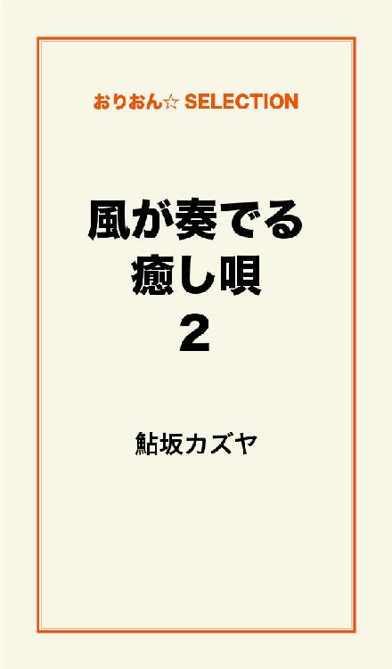
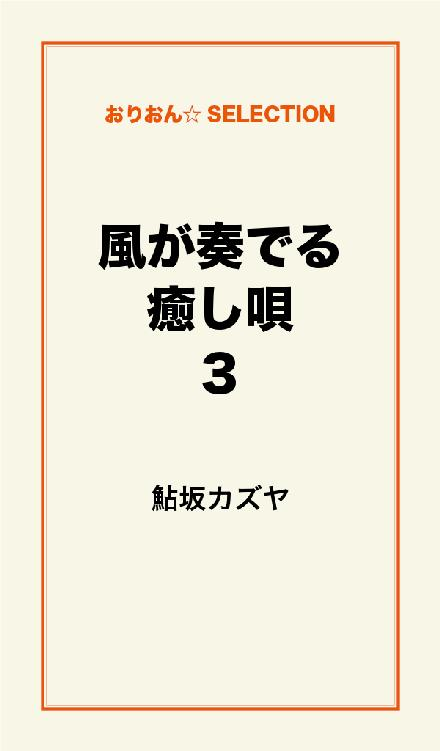

| 風が奏でる癒し唄 完全版 | |
| 鮎坂カズヤ | |
この本は横書きでレイアウトされています。
また、ご覧になる機種により、表示の差が認められることがあります。
●日高家の日常
天気、雲一つない快晴。
季節、アスファルトで舗装された道路が少しゆらゆらするくらい真夏。
そして日高家、......相変わらず。
「よし、行くわよ」
スニーカーの靴ヒモをぎゅっと締め、待機中の二人に宣言する女性。
その顔は一点の迷いもない真剣な表情。
その手には焼きたての食パンがぎゅっと握り締められているのでした。
「......ミオ姉、マジでやんのか？ マジのマジすか？」
「大マジメよ。略して大マジよ」
「それ、あまり略してないと思う」
「オ、オレ、こんなことすんの生まれて初めてなんだけど」
「あたしだって初めてよ。でもね、みんなで初体験の感動を味わえるって、なんだかそれだけでウルッてこない？」
「おお、くるかも！」
「わたしはこないけど」
「サヤ、つべこべ言わない！ さあ行くわよ！ これを乗り越えればあたしたちはその瞬間から一つ大人になるのよ！ 大人の階段三段くらい飛び越しちゃうのよ！」
「マジすか！？」
「逆に下ってると思う。十段くらい。しかもまっ逆さまに」
「さあ、扉は開かれたわ！」
「うおーっ！ いっくぞー！」
「......わたしもやんの？」
妙にやる気のある二人と気だるさ全開の一人は玄関の扉を開いて思い切りダッシュです。
時刻は八時二十分。三人が向かおうとしている学校の登校時間は八時半まで。
つまり、かなりギリギリです。
「二人とも、ちゃんとくわえてる！？」
「当たり前っ！ ぬかりはねえよ！」
「うぅ、恥ずかしい......」
ぬかりがないのが日高家長男、日高ナツ。
十四歳。
中学二年生。
食パンの角をくわえています。
泣きそうになりながら恥ずかしがっているのが日高家長女、日高サヤ。
十歳、小学四年生。
同じく食パン。
そして一番乗り気な女性が先に紹介した二人の従姉妹、卯月ミオ。
二十四歳。
激しく食パン。
三人はそれぞれ食パンの角をくわえ、はぁはぁひぃひぃと、ミオさんに至っては少し服をはだけさせながら猛ダッシュです。
まるで昔の少女マンガにあったような、そんなシュールな光景を繰り広げているのでした。
「そりゃそうよ、少女マンガ見て思い付いたんだから！」
「おおっ！ オレらの時代じゃこんな斬新なスタイルで登校する奴なんて滅多にいねえもんな！ ってかまったくいねえもん！ 帰ったら絶対みんなに自慢できるぜコレ！」
「お兄ちゃん、わたしも一緒にやってたって絶対言わないでよ！ うぅ......」
ミオさんとナツは笑顔です。めっさ笑顔です。
これ以上ないってくらいの輝かんばかりの笑顔です。
サヤは泣いています。
激しく泣いてます。
走った跡に涙が真横に伸びてます。
うん、シュールだ。
そんな三人を見つめているのがわたくし『俯瞰の眼』。通称フカちゃん。
以後お見知りおきを。
「ミオ姉、なんで服はだけてんの！？ さっきまでちゃんと服着てたのに！」
「わかんない！ でも昨日読んだマンガの主人公はこうやって服をはだけさせながらパンくわえてたし、きっとこれが食パン登校の正式スタイルなのよ！」
「なるほど！ ぬかりねえ！」
「......フカちゃん、あの二人なんとかしてよ」
そんなこと言われても。
わたくし、ただ見守ることが仕事ですので。
「もう、この役立たず！ 死ね！ 一人で未来へ帰れ！ もう絶交！」
あら、絶交されてしまいました。
さて、先ほどからのわたくしたちの会話に、何か不自然な点があったことは皆さんも感じ取られたのではないでしょうか。
......え？ なんでこの三人は食パンをくわえてるのか、ですか？
それは大した問題ではありません。
許してあげてください。
だって彼らはほんの少しだけ、この時代における知識がないのですから。
ごく普通の住宅街から、ごく普通の学校に通う、ごく普通の見た目の彼ら。
しかしある一点だけ、彼らは普通の人とは違う、とある事情を抱えているのです。
なんと彼らは、はるか数百年後の未来からやってきた、未来人だったのです。
......と言っても、特に特殊能力があるわけでもなく、特に挙げるべき経歴もない、ごく普通の一般人であることには変わりありません。
ただ未来からこの時代にやってきた人たち。それだけなのです。
なぜ未来人である彼らがこの時代にいるのでしょう？
実はそれには、......特に深い事情はないのです。
従姉妹のミオさんを含めた日高一家がこの時代にやってきた背景には、こんな事情があったのです。
話は半年前に遡ります。
いや、未来での話だから『遡る』ではなく『進む』でしょうか？
......どっちでもいいですね。
とにかく、遡るんです。
ナツはテレビを見ていました。
どこにでも有るような普通のテレビです。
テレビの上にある棒みたいなものはアンテナです。
時間を遡ることが可能な時代でも室内アンテナは存在するのです。
することにしといてください。
とにかく、ナツはテレビを見ていたのです。
ＣＭが流れました。
時間を遡ることが可能な時代になってもＣＭは（以下略）。
そしてその時！ ナツは見たんです！ 見てしまったのです！ 『過去旅行プレゼント』のコマーシャルを！
「すげぇ！ やばいじゃん！ 過去旅行なんて金持ちしか行けない夢の旅行じゃねえか！」
ナツははしゃぎました。そりゃあもう大はしゃぎです。
そのコマーシャルは大手お菓子メーカーが企画した『お菓子のバーコードを十枚集めて送ると抽選で一家族だけ過去旅行ゲッツゲッツ！』という、古めのギャグを二度も言ってくるイタイ宣伝だったのですが、これを見たナツはもう激はしゃぎです。
もともと好奇心旺盛なナツ、小さな頃には卵を電子レンジに入れて爆発させることなんか序ノ口で、どうやって卵の中に電子レンジを入れようか考えるくらいブッとんでましたし、妹のサヤが産まれた時にはなぜか怪獣のぬいぐるみを丸呑みしたりもしたそうです。
......怪獣を産むつもりだったのでしょうか？
真相は今も謎のままです。
知りたくもないし。
さて、そんな好奇心旺盛でちょっとおバカなナツ。
彼は全財産をつぎ込んでそのメーカーのお菓子を買いあさりました。
しかしやっぱりそこはまだ中学生。
いくら全財産と言ってもせいぜいダンボール一ケース程しか買えません。
そこで登場したのがナツの従姉妹、ミオさんでした。
ナツと同じく好奇心旺盛な彼女は自分のお金を一切出すことなく、ナツの両親をうまいこと口車にのせて資金を調達し、なんなくお菓子五十ケースをゲッツしたのです。
あ、言っちゃった。
そんな感じで資金をやりくりしながら、有り余るお菓子と格闘しながら、サヤから冷たい視線をビシバシと浴びながら、ついにナツは完食したのです！
......あ、いや、応募したのです。
一体、どんな日頃の行いが彼に幸福を与えたのでしょう。
過去旅行なんて誰もが聞けば振り返るような夢の旅行に、お菓子の食べ過ぎでお腹を壊すほどの量とは言えたかだか五十ケースの応募数で過去旅行に当選するなんて誰が予想できるでしょうか！？
一体なぜだったのでしょう？
ゲッツのせいで応募数が少なかったのでしょうか？
......どうやら本当に偶然だったそうです。
そんなこんなで、日高一家と便乗してついてきたミオさんは過去へとやってきたのでした。
滞在期間は三ヶ月。
いろんな大人の事情うんぬん記憶操作情報操作うんぬんで好きなシチュエーションが選べるということで、彼らが選んだシチュエーションは以下の通りでした。
ナツ――小中高一貫制の学園の中学生。
サヤ――同じ学園の小学生。
ミオ――ナツのクラスの担任。
両親――ただの人。
当たり障り無さすぎだろオイ！
特に両親！
ただの人って何だよ！
とまあ、どうにもこうにも欲のない日高家の面々なのでした。
しかしいくらシチュエーションが自由とはいえ、行き先は過去なのです。
彼らの住む未来は過去の積み重ねの上にあるのです。
その中のパーツが一つでも余分に挟まったり抜けてしまったりしては上に立つ未来が成り立ちません。
そこでわたくし、『俯瞰の眼』のフカちゃんの登場です。
彼らが未来を壊さないよう、余分な歴史を付け加えないよう、監視兼歴史の調整役を担っているのです。
実は結構重要なポジションなのですよ。
えっへん。
もちろんわたくしの姿は日高家の面々にしか見えないよう設定してありますが、野球ボールくらいの大きさで、黒くて真ん丸で、大きくてキュートな一つ眼がくりんくりんしているなんとも可愛らしい姿かたちなのです。
なのに日高家の連中の初対面の台詞ときたら。
「......気持ち悪い」
まったく失礼な方々です。
さて、彼らの事情を振り返っている間にもう彼らの通う学園――茜ヶ原学園が見えてきました。
食パン効果でしょうか？
登校時間の最速タイムを更新しそうです。
がんばれみんな！
負けるなみんな！
ゴール（校門）はすぐ目の前ですよおっ！
「フカちゃん、もう学校だから黙っといて！」
......ナツに注意されてしまいました。あのナツに。
そう、あのナツに！
おバカなあんちくしょうのあのナツに！
――ガンッ！
「うるせえっ！ 殴るぞ！」
殴った後に殴るぞと言うこのナツに！
「しつこい！」
こうして、お魚くわえたどら猫よろしく、食パンくわえた日高家の面々は今日も相変わらず元気なのでした。
季節は夏。
セミに負けないくらいに元気なナツ。
彼はこの時代で一人の少女と出会います。
物悲しく、儚げで、その身に孤独をまとう、悲しい少女と出会うのです。
それは彼の人生を決定付ける、まさしく運命の出会いでした。
●学園生活と仲間たち
「おはよ～ッ！ 今日もいい感じでだらけてんなあスケ！」
「お～っす、ナツ。こんなクソ暑いのに相変わらず元気だな。それと、俺の名前は健介な。下の方で呼ぶなっていつも言ってんだろ」
教室に入って早々にあいさつを交わしたのはナツの一番の親友、健介くん。
なぜ彼は「スケ」と呼ばれているのでしょう？
それは、ナツたちのいる時代では「サヤ」や「ミオ」といった二文字の名前が主流だから――という理由もあるのですが、もっと単純に、健介くんの顔がなぜだか妙にエロいからなのです。
「だってスケベ顔じゃんお前。だからスケ。いいじゃんブランドイメージってやつで。――ブランドイメージ！ おお、なんかかっけえ！」
「......ナツ、ありがた迷惑って言葉、知ってるか？」
「おはよう、ナツくん」
「よう、ナツ！」
「おお、みんなおっはよ～！」
ナツがやってきたのに気付いた周りの生徒が口々にあいさつを交わします。
健介くんもいきなりイジられながらも「しょうがねえなあ」と言いたげなニコリ顔です。
でもやっぱり周りの皆にはその顔はエロス的なニタリ顔に見えてしまうのでした。
茜ヶ原学園中等部二年Ｃ組。
ここがナツのクラスでありミオさんが担任を努めるクラスでもあります。
実際にナツがこの学園に通い始めてまだ半月ほどしか経っていません。
いくらこの時代に来る前にクラスメイトたちの記憶等を操作しているとはいえ、ナツのクラスへの溶け込み具合は異常です。
普通なら少しは萎縮してしまいますよね。
しかし、そこは我らが天然おバカさんのナツ。
萎縮するどころか伸び伸びしてます。
なぜ彼は知らない時代の知らない場所でこんなにも堂々と振る舞えるのでしょう？
答えは簡単、バカだから。
「......フカちゃん、全部聞こえてんだけど。後で殴んぞ」
あ、失礼しました。
とにかく、こんなナツだからクラスの人気者にもあっさりとなってしまうのでした。
ちなみにわたくし、『俯瞰の眼』のフカちゃんは日高家以外の周りの人には一切認識されません。
本来なら『俯瞰の眼』は監視対象者にも認識されてはいけないのですが、まあ、そこはほら、なんというか、
やっぱり目立ちたいじゃない？
物語に参加したいじゃない？
そんなのっぴきならない諸事情により、日高家には見えてもいんじゃね的な設定を勝手に施した次第なのです。
のっぴきならないですね。
「はーい、みんな席につきなさーい」
担任のミオさんがやってきました。
先ほどまではだけていた衣服はきちんと整えられ、靴もスニーカーからパンプスへと変わっていて、顔が歪むほどの猛スピードで走っていたことなど微塵も感じさせないくらい髪も見事にセットされています。
見た目はすっかり大人の女性の出で立ちです。
いやあ、公私を見事に使い分ける『大人』って感じですね。
「みんな席に着いた？ じゃあ聞いて。さっきね、先生、教頭先生にしこたま怒られました。『教師が遅刻すれすれで登校とは何事ですか』ですって。『アンタの頭こそ何事よ？ 火事で焼け残ったの？』って死ぬほど言いたかったけど先生我慢しました。先生偉いでしょ？ はい、せーの」
『......』
「言えよ。黒板消しでパンパンされたい？ それとも黒板消しクリーナーでウィンウィンされたい？ はい、せーの」
『え、偉い、です』
「そうよね、偉いよね。なのにあのハゲったら調子のっちゃってさあ、頭が固いっていうの？ 戦時中かっての。戦後跡みたいな頭のくせしてねえ」
いきなり生徒にグチり始めるミオさん。
公私なんて使い分けちゃいねーですね。
まんまいつも通りでした。どんな大人だ。
◇ ◇ ◇
さて、そんないつも通りのナツとミオさんのいる教室の窓から見える学園の中央広場を挟んだ向かい側の校舎。
そこがナツの妹のサヤの通う小等部校舎です。
その中の一室の窓から外を眺めているサヤはため息をついているのでした。
「......はぁ」
「どうしたのサヤちゃん？ 朝からそんな憂うつな顔して」
メランコリーなサヤに声をかけてきたのは、この半月の間に唯一仲良くなれたクラスメイトの女の子、紀子ちゃんでした。
いつも元気全開のナツとは対照的におとなしめのサヤはなかなかクラスメイトに話しかけることはできませんでした。
そのうえさすがに未来人だけあって他の皆とは少し顔の造りが違うサヤ。
どことなくハーフのような異国情緒をほのかにかもしだす顔の造りなのです。
男子はもじもじ、女子には嫉妬の対象にされて話しかけられることはありませんでした。
そんなところに紀子ちゃんの登場です。
少しクラスから浮いているサヤに唯一積極的に話しかけてくれたのがこの紀子ちゃんなのでした。ええ子や。めっちゃええ子や。
「どうもこうもないよ。またうちのバカ兄貴とバカ従姉妹がバカ騒ぎ。しかも朝から。たまには普通に過ごせないのかな、あの二人」
「あはは、楽しくていいじゃない。私はあんなお兄ちゃん憧れるけどな～」
「......紀ちゃん、それお兄ちゃんの前で言わないでね。調子のるから。調子のったら絶対またバカやるから」
そう、その言葉通りサヤは何度もナツのおバカ行為を経験済みなのです。
目をつむってどこまで走れるか試してあわや道路に飛び出しそうになったり。
花火をジェット噴射変わりに空を飛ぼうとしたり。
恵まれない地域への募金に家族の全財産を送金しようとしてあと一歩で恵まれない家庭になってしまいそうになったり。
ナツのそんなおバカ行動のたびに、サヤの兄を見る目は次第に冷たくなっていったのでした。
「ふ～ん。でもちょっとバカでもいいよ～、ナツ先輩カッコいいし」
「カッコいい？ アレが？」
「サヤちゃんもそうだけど、二人ともちょっと外人さん入ってる感じだもん」
「そうかな？」
「そうだよ～！ あ、外人さんと言えばさ、今日ちょっと外国人モデルのナタリーっぽい髪型にしてみたんだけど、どうかな～？」
ヘアピンでまとめた左右非対称のおだんごをサヤに見せる紀子ちゃん。
あえてアシンメトリーにすることでキュートさをうんたらかんたらのご自慢のヘアスタイルを披露です。
それを見て、サヤは口の端をほんの少し引きつらせるのでした。
『俯瞰の眼』であるわたくしだけしか気付いてはいないでしょうが。
「い、いいと思うよ」
「やっぱり～！ いいよねコレ！ しばらくマイブームになりそう！」
「......」
――ださ。
ださすぎる。
なんなの、その丸いやつ。
引きちぎってやろうか。
この時代のファッション感覚についていけてないサヤはそんなことを思っていたのですが、親友の紀子ちゃんの手前、間違っても口には出さないのでした。
◇ ◇ ◇
三時間目、体育の時間。
グラウンドには真昼の炎天下に走らされてグッタリしている生徒たちと、眩しい笑顔で元気に走り回る誰かさんの姿がありました。
「うおーっ！ 広い、広いぞ！ おもっきり走れる！ 広えー！」
「......だから、なんでそんなに元気なんだよナツ」
季節は夏。まだ六月になったばかりの初夏だと言うのに、お日様が早合点しているのか異常気象のせいなのか、かなり気温は高くなっています。
健介くんに限らずナツ以外の生徒たちは皆うんざりした表情でグラウンドを走っているのでした。
確かにナツは暑さなど気にもならないほど元気爆裂さんですが、こんなにも騒いでいるのは別の理由があるのです。
ナツたちの時代ではグラウンドのある学校は珍しく、ほとんどの学校は体育の授業をする時は専用の室内で行うのです。
体育館すらないのです。
元気がムダに有り余っているナツには室内なんか狭くて仕方ありません。檻の中に入れられたライオンが常にウロウロしているように、室内の壁を使って三角跳びしまくる毎日でした。結構楽しんでるじゃん。
――ああ――
「ん？ なぁスケ、今何か聴こえなかったか？」
「あん？ 何かって？」
「何て言うか、女の人の声みたいなやつ」
「おいおい、なんかの怪談話か？ 走り疲れた女子の声が聴こえただけじゃないか？」
「......そうかな」
チラリとこちらを見つめるナツ。
わたくしを疑っているんでしょうか？
確かにわたくし、よく考えてること口に出してるみたいですけど、さっきはちゃんとナレーションに徹してましたよ？
「いや、フカちゃんには女の人の声、聴こえなかったかと思ってさ」
わたくし『俯瞰の眼』だけあって見ることに関しては突出してますが、聴くことに関しては人並みでして。特には何も聴こえませんでしたが？
「......そっか。やっぱ気のせいだったのかな」
「......お、おいナツ。お前さっきから誰と話してんだよ」
いぶかしげな視線を向ける健介くん。
彼にはわたくしの姿がまったく見えないのでナツがお空とお話しているちょっとおかしな人に見えてしまうのでした。
「うん、やっぱ気のせい気のせい！」
「木の精？ ......お前、なんか変なもんでも食ったか？」
虚ろな目でナツを見つめる健介くん。
でもやっぱりその目はアイドルのパンチラの瞬間を必死に追うカメラ小僧のようなエロい眼差しに見えてしまうのでした。
不憫だね。
◇ ◇ ◇
放課後、校門の前ではナツが中等部から出てくるのを待つサヤと紀子ちゃんの姿がありました。
普段はバカ兄貴とかなんとか言ってるサヤですが、ちゃんと帰りを待っているところが可愛らしいではありませんか。
「ナツ先輩まだかなあ。もう中等部も授業終わってるはずなのにね～」
「どうせ教室に残ってバカやってるのよ。今頃モップを頭にかぶせて『モーツァルト！』とかやってんじゃない？」
「も～、サヤちゃんたらそこまで言うことないのに。――あ、来た来た来た！ ナツ先輩やっと来......た？」
中等部校門からでてきたナツを見て固まる紀子ちゃん。
その視線はナツの隣にいる何やらいかがわしい表情の人物へと釘付けに。
「な、なに、ナツ先輩の隣にいる人？ チョー怪しいんだけど......」
紀子ちゃん曰く怪しい人と言うのは、もちろん我らがエロ顔の健介くんです。
気は優しくて頼りがいもあって誠実な人なのに、顔がエロいだけでかなりのマイナス。
ああ健介くん、強く生きろよ。
「お兄ちゃん遅い。どうせまたバカやってたんでしょ」
「ごめんごめん。教室でちょっとみんなでふざけててさ」
「ぷぷっ、思い出しただけでウケるよな、ナツのモーツァルト」
「ホントにモーツァルトしてたんだ......」
「ん？ サヤちゃんの友達？」
健介くんに見つめられて身体を強張らせる紀子ちゃん。
もちろんそれは『きゃっ、みつめられちゃった、どうしよう☆』などの恋する女の子のそれではなく、ロングコートを着たオヤジに見つめられた時の『げっ、なんかこっち見てくるんですけど』のそれでした。
「そういえば二人は初対面だっけ。こっちはわたしの友達の紀子ちゃん。こっちはお兄ちゃんの友達の健介さん」
サヤが二人を紹介します。
紹介されてしまった紀子ちゃんは涙目になりながら目の前のコートオヤジ顔の視線から逃れようと必死です。
一方そんなことは露知らずの健介くんは『中等部の先輩の前だから緊張してんだな。よし、緊張をほぐしてあげよう』と精一杯の爽やかスマイルをかますのですが、やっぱりそれは『今からこのコートを開くからね～』的なやばい顔なのでした。
「わ、私、急に持病のしゃくが発症したから今から帰ります！ ソッコーで帰りますう！」
ついに耐えきれなくなった紀子ちゃんは走って逃げ出してしまいました。
猛ダッシュです。
阪神の赤星も真っ青のスタートダッシュです。
「......紀子ちゃんて持病持ちなのか。まだ小さいのにかわいそうに......」
心優しい健介くんはかなり遠くまで逃げた紀子ちゃんの背中を見つめながらポツリと呟くのでした。
いやいや、君が一番かわいそうだから。
帰宅途中、健介くんと別れて兄妹二人きりになったナツとサヤはお互いに今日あったことは話し合うのでした。
こうしてみると、結構仲睦まじい兄弟なのでした。
「お兄ちゃん、今日はバカしなかったでしょうね？ 『こっち』で何か問題起こしたらシャレじゃすまないんだからちゃんと自粛してよね。監視役のフカちゃんは全然頼りになんないし」
「ちゃんとわかってるって。......ところでサヤ、『ジシュク』ってなんだ？」
「バカ」
「お前、実の兄をたったの二文字で片付けんな！」
「うるさい」
「......はい」
全然仲睦まじくなかったのでした。
「あ、ところでさ」
「うるさい」
「いや、まだ何も言ってねーだろ！」
「あ～もう。なに？」
「今日さ、三時間目の授業の時にどっかから女の人の声が聴こえてきたんだけど、お前聴こえなかったか？」
「聴こえたよ」
「え、マジか！？」
「三時間目だよね。国語の国崎先生が教卓で喋ってた」
「あ～国崎先生ね。あの先生話し方に特徴あるよな。語尾を伸ばすんだよな。『ハイ、ここ覚えておいてね～～～』――って違えよ！」
「十点。全然ダメ。キレがない。面白くない。死んじゃえ」
「うぅ、サヤ......お前お兄ちゃんになんか恨みでもあんのかよ......」
あまりのサヤの罵倒にナツは精神的ショックを隠しきれずによろけるのでした。
よよよ。
「それで？ その女の人の声がどうかしたの？」
壁に寄りかかって『の』の字を書きまくるナツの姿を見て少し満足げなサヤ。
ようやくナツの話を聞いてあげることにしたようです。
鞭に続く鞭の後に小さな飴。
末恐ろしい小学生です。
今からこんなドＳぶりを発揮してるようじゃ将来は一体どんな女性になってしまうんでしょうか？
少しドキドキ。
ナツは寄りかかっていた壁に別れを告げ、ナツにしては珍しく真剣な表情でサヤに向かい合いました。
「なんか妙に気になるんだよな。はっきりと聴こえたわけじゃないんだけど......何て言うかさ、すげえ悲しそうだったんだよ、その声」
「......」
ナツの表情をジッと見つめるサヤ。
今のナツはいつものおちゃらけたナツではありません。
何か思い詰めたような、とても真剣な表情でした。
「気のせいかとも思ったんだけど、後から妙に気になってさ」
「ふーん。そうなんだ」
「でもフカちゃんにもスケにも聴こえてなかったみたいだし、やっぱ俺の気のせい――ごぱぁ！」
『ごぱぁ』？
『ごぱぁ』とは一体？
あんな真剣な表情のナツが語った言葉です。
きっと何か深い意味が。
「『ごぱぁ』だって！ ぎゃはは、サイコー！ サイコーのリアクションよナツ！」
さっきまでナツのいた場所にはいつの間にかミオさんが立っていました。
肝心のナツは二、三ｍ先で地面につんのめった面白い恰好に。
その背中には、ミオさんのパンプスの踵部分の跡がきれいについているのでした。
「ミ、ミオ姉、パンプスで、蹴りはやめて......。刺さる、から......ガクッ」
「ぎゃはははっ！ ガクッて言って倒れた～！ あり得な～い！」
――いや、アンタがあり得ないから。
そんなことを心の中で思いながら、妹には精神的に、従姉妹には肉体的に傷つけられたナツは静かに気を失うのでした。
◇ ◇ ◇
●悲しい歌声
◆ ◆ ◆
ナツが気を失っていたのと同時刻。
生徒も職員もすべて帰宅した茜ヶ原学園では、ミオに頭を『火事の焼け跡』呼ばわりされた教頭が職員室の戸締まりを今まさに終えたところだった。
「さて、あとは用務員に任せて帰るとするか」
――今日も一日終わった終わった。あとはうちに帰ってビールでも飲みながら巨人戦でも観るとするか。
そんなことを思い浮かべながら、教頭は愛車が停めてある駐車場へと向かう。
高等部校舎内の職員室から裏手、奥に学園所有地である雑木林がのぞく駐車場。そこに教頭自慢の愛車が停まっている。
夕暮れで薄暗くなり始めた景色にもずっしりとした存在感をあらわにするその重厚感溢れる黒。
その色合いに惚れて十年ローンで購入したことを昨日のことのように思い返しながら、エンジンをつけようとキーを回した、その時だった。
――ああ、私はフライングマン――
――哀れで滑稽なフライングマン――
――キィッ！
動き始めた車が急ブレーキをかけた。
突然響いてきた女の歌声。
その行方を追って、教頭は辺りを見回したが、誰の姿も見えない。
「......気のせいか？」
再びアクセルを踏み込む教頭。
動き始めた車のエンジンが車内に響くのよりも先に、それは教頭の耳に飛び込んできた。
――どうか笑ってくれないか――
――どうか応えてくれないか――
今度はハッキリと、女の子の歌声が聴こえた。
教頭は背後を振り返る。
しかし、やはりそこには誰もいない。
冷や水を浴びせかけられたように、教頭の身体は一瞬ですくみあがった。
「な、なんだ......？ なんなんだこの声は？」
駐車場のさらに奥、学園裏手にそびえる雑木林。
その物悲しい歌声はそこから聴こえてきていた。
その歌声のあまりの悲しさに、その透き通るような声に、教頭は心を奪われていた。
――アクセルを踏み込んだままなのも忘れて。
◆ ◆ ◆
◇ ◇ ◇
「あ～、今日もいい天気だあ！ 背中がちょい痛いけど、いい天気だあ！」
窓を開いて開口一番。
ナツは今朝も元気です。
背伸びしながら昨日ミオさんに蹴られた背中をゆっくりさするナツ。
ミオさん曰く『背骨に当たらないように蹴ったから大丈夫』らしいのですが、それでも痛いもんは痛いです。なんてったって尖ったパンプスで蹴られたんですから、そりゃ刺さります。
サヤに『こんな色した肌、初めて見た』と言われるくらいやばい色になっているのですが、それでもナツはケロッとしているのでした。丈夫だね。
「父さんも母さんもおはよーっ！ 今日もいい天気だやっほう！」
「おはよう。ナツは朝から元気ね～」
「おはようナツ。もう朝食できてるぞ。さあ食え食え」
食卓にはすでにナツの両親が朝食の準備を済ませていました。
日高家では両親が一緒に朝食の準備をします。
なかなかに仲のよろしいオシドリ夫婦なのでした。
「うん」と言いながらバックするナツ。充分に助走距離をとってイスに向かってジャンプです。
「とうっ！」
背もたれを飛び越えてドタンバタンとやかましく着席するナツ。
そのまま何事もなかったように朝食をとります。
両親もまるで何もなかったかのようにナツのその行動の意味に触れようとしません。
ナツはいつもこうやって着席するので日高家では今更触れることではないのです。すごい家族だ。
「あれ、そういえばサヤはまだ寝てんの？」
「サヤはもう学校行ったわよ」
「え、なんで？ まだ七時になったばっかじゃん」
「昨日の食パンが相当イヤだったみたいね」
いつもならドタンバタンと着席したあとに決まって低血圧のサヤが『うるさい。バカ。生まれて来なければよかったのに』といつも以上にダークな罵声をあびせかけるのです。
そんないつもの朝の習慣がないことに面白くない表情を浮かべるナツ。
着々とＭの世界の住人になりつつあるのでしょうか？
「ちぇ。今日は葉っぱをくわえながら登校する予定だったのに。つまんねーなサヤの奴。しょうがない、ミオ姉と二人でやるか」
「ミオちゃんももう学校行ったわよ」
「ミオ姉も？ なんで？」
「学校から呼び出しがあってね。職員は朝から緊急集会なんだって」
「緊急集会......？」
ナツがその言葉に反応します。
緊急集会という言葉に何か不穏なものを感じとったのでしょうか？
その顔はまるで今から難事件を解かんとする名探偵さながらの表情でした。
みそ汁をすすりながら眉をしかめるナツ。
一体彼は今、どんなことを考えているのでしょうか？
「......ミオ姉、ちゃんと職員として認められてたんだな」
そっちかよ。
結局一人きりで葉っぱをくわえながら登校したナツが教室にたどり着いた頃、中ではクラスメイトたちが何やらざわめき合っていました。
この光景を見て好奇心の固まりであるナツが黙っているわけがありません。
すぐにその騒ぎの中心地へジャンピング＆着地です。
毎朝のイスの背もたれ越えジャンプがまさかこんなところで役に立っているとは。
「なになになになに！？ なんかあったのなんかあったの！？」
「うおっ！ いきなり飛んでくんなよナツ！」
「スケ、おはよ！ んで、なんかあったの！？」
「なんかな、教頭が昨日学園内で事故ったみたいなんだけど、その件で少し変な噂が立ってんだよ」
「変な噂？ さすがスケ、重要な部分を最後までもったいつけやがってこのスケベ！」
「スケベは余計だから。でな、その噂ってのが......」
「噂ってのが......？」
「......」
「......」
必要以上に目をキラキラさせるナツと必要以上に間をためる健介くん。
み○ もん○ ばりの間のため方です。
そう言えばあの人の顔ももどちらかと言うと......。
ごほん、げほん。
「あ～もう！ とっとと教えろよ！」
「......ファイナルアンサー？」
「なんだそりゃ？ 日本語で言えよ。意味わかんねえ」
健介くんのボケも未来人のナツには通じません。
というか未来人以前に英語がわかってないナツなのでした。
「教頭が事故ったのは、幽霊が原因だっていう噂が立ってんだよ」
「――――っ」
「どうしたナツ？ あ、どうせくだらないって言いたいんだろ。でも他にも何人か幽霊の声を聴いたって人が――、」
「幽霊っ！！」
「どぅわっ！ いきなり大声だすな！ そんで目キラキラしすぎだから！」
ナツの目がさらに激しくキラキラ輝きます。
少女マンガ顔負けのキラキラ具合です。
きら○ んレボリュ○ ションです。
そのままナツは教卓の上へジャンピング＆着地（二回目）。
クラスのみんなに向けて声高に宣言するのでした。
「幽霊、チョー会ってみてえーーっ！」
騒がしかった教室はナツの大声で一気にシンと静まりかえるのでした。
◇ ◇ ◇
◇ ◇ ◇
「......みんな席についたわね」
不自然なまでに神妙な顔付きで、ミオさんがぼそりと呟きます。
いつもなら教室の扉を開いた瞬間に「とっとと席につきなさ～い！」とか言いながらチョークをばら撒いて（本人はマンガのようにビシッと投げているつもり）さらにはそれを生徒に拾わせるくらい破天荒な彼女の深刻な表情に、生徒たちは一体何事かと息を呑むのでした。
「......教頭先生が事故にあったのは知ってるわね？ 今朝、その件で職員会議があったの。そこでわかったことなんだけど......教頭、先生は......う、っく......」
ノドをつまらせ顔を伏せるミオさん。
その様子を見て生徒たちはざわめたちます。
生徒たちの頭には教頭先生の無残な光景が。
とても厳しかったけど、とても優しかったあの教頭先生は、もう......。
「教頭、先生は......っく、くっく、くはっ！」
耐え切れず、ついに声をあげてしまうミオさん。
その声と顔はなぜか笑っているように見えます。
......というか、完璧に笑っています。大爆笑です。
「教頭先生の、頭は、ぎゃっはは！ じ、事故のショックで、ぷぷっ、見事につるっぱげになりました～！ 火事の焼け跡がきれいなサラ地になったのよ、もうあたし職員室で笑いこらえるのに必死で必死で、ぷっ、ギャハハハ！」
腹を抱えて大爆笑のミオさん。
それに引き換え生徒たちはかなり引いてます。
ドン引きです。
どうやら教頭先生は生死を問うような怪我はなかったものの念のためにしばらくは静養をかねて休暇を取ることになったようです。
大事にしていた愛車が事故で壊れ、それ以上に大事にしていた箇所がサラ地になってしまったのですから、精神的にやばいです。
心に深い傷を負っただろう教頭先生が学校に復帰できるのはいつになることやら。
そんなクラスメイトがドン引きしてる中、ナツは珍しく黙り込んでいました。
普段ならミオさんと一緒にバカ騒ぎしているはずの彼が、ミオさんの爆笑も気にならないくらい何か考え込んでいるようです。一体彼は今どんなことを考えているのでしょうか？
「......やっぱスイカだな」
スイカのことでした。
......って、なんでスイカ？
◇ ◇ ◇
「はい、みんな集合～！」
放課後。陽も暮れ始め辺りも薄暗くなる、俗に逢魔が刻と呼ばれる時間帯。
そんな時刻に学園の裏手に集まる複数の人影がありました。
やけにハイテンションな様子で皆に集合を呼びかけたのがなぜかランニング＆半ズボン姿のナツ。そんなナツの集合で集まった面々は、いずれもお馴染みの顔ぶれの皆さんなのでした。
「な、なぁ、ナツ。本気でやんのか？ やめるなら今のうちだぞ？ いや、怖がってるわけじゃないぞ？ ただ俺は女の子たちのことを心配してだな、そうであってな。いや、ホント、怖いわけじゃないから」
「そ、そうですよ。何かあったらどうすんですかぁ。って言うか、なんで私も参加することになってんですかぁ？」
思いっきり怖がっているのがザ・エロフェイスの健介くん。
半分涙目。
そしてなぜか強制的に参加させられているのがサヤの親友の紀子ちゃん。
全開の涙目。
二人ともこういう話は苦手そうなのに、誰かさんにほぼ強引に、半ば拉致気味な感じでこの場に連れてこられ、泣く泣く参加しているのでした。
え？
こういう話とはどういう話かって？
今のナツの様子を見ればわかるはずです。
ヒントはランニング＆半ズボン。
そして手に握りしめられている虫取りアミ。
そう、答えは――
「やいのやいの言うな！ さぁ、さっさと幽霊捕りに行くぞ！」
答えは『幽霊捕り』でした。わかってしまった人は今後の人生を深く見直してみることをおすすめします。
さて、そんな虫捕りに行くような出で立ちでナツが臨もうとしているのは、例の教頭の事故の原因となった幽霊に会いに行くことなのでした。
この話をナツにしてしまったために付き合わされるハメになった健介くんは、なんとかしてこの催しを止めようと必死です。
「だからやめとけって、ナツ！ ......そうだ、サヤちゃんもなんとか言ってよ。サヤちゃんだって幽霊なんてこわ――じゃなくて、バカバカしいと思うだろ？」
「そ、そうだよ！ サヤちゃんだって行きたくないよね？ ね～？」
ナツ、健介くん、紀子ちゃん、そしてもう一人の幽霊捕りのメンバーであり、唯一のナツの抑止力であるサヤに期待の眼差しを向ける二人。
そうです、普段からナツの奇行を幾度となく止めている彼女を何とかしないとこの幽霊捕りは成立しないのです。
さぁ、ナツは一体どうするのでしょうか？
腕組みしながらナツを睨みつけるサヤ。
虫捕り網を掲げ、その視線を真っ向から受け止めるナツ。
そして次の瞬間――日高兄妹はがっしりと固い握手を交わすのでした。
「えぇ～～！！ なんで？ なんでぇ！？」
紀子ちゃんの悲鳴がこだまします。
それもそのはず、いつもなら「幽霊捕り？ お兄ちゃんのバカっていつまで進行形なの？」などと言いながらさっさとナツを連れ帰りそうなものです。
それなのに、なぜサヤはナツとがっしりと握手しているのでしょうか？
「幽霊......（ポッ）」
握手をしながらポッとなるサヤ。
その顔は無表情ながらもほんの少し赤く染まっています。
鼻息も少し荒めです。フンフン言わしてます。
そう、サヤは興奮しているのです。
サヤがこんなにフンフンするなんて滅多にありえない貴重な光景です。
普段は何に対しても冷めているサヤ。
兄が何事に対しても熱狂的な分、冷静に物事を見るクセがついてしまったサヤ。
だけど幽霊だけは興奮しちゃうんです。
だって未来人だもん。
彼らのいた未来では『幽霊』を見る機会などまったくありません。
その噂を聞くこともまったくもってないのです。
時空間を移動できる程のハイテクノロジーを生み出した文化が原因なのか、情報の真偽がすぐに確かめられてしまうため、噂話などの根も葉もない情報が飛び交うことはかなり少なくなってしまいました。
幽霊などの概念も身近なものとは言いがたく、墓場やお寺などの心霊的な場所もほとんどなくなり、そういう話に興味はあっても遠い存在になってしまったのです。
そこに今回の幽霊騒ぎです。
そんな未来ではありえない内容の噂が学園中に周知のものとして広がっているのです。
そりゃいくらサヤだって興奮します。
ポッとなっちゃいます。だって未来人だもん。
唯一の抑止力であるサヤまでもがノリノリの状態に、幽霊捕り反対組の二人はもう打つ手がありません。
目をキラキラ、鼻をフンフン言わせる日高兄妹の後をしぶしぶ付いていくしかないのでした。
ところで、どうしてもう一人の未来人であるミオさんは今回の催しに参加していないのでしょうか？
ねぇナツ、まさかミオさんは誘ってないのですか？
「ミオ姉も一応誘ったんだけどさ、他に用事があるからってそっち行っちゃったんだよ。幽霊捕りに勝る用事なんて、そんなもんがあんのか？」
そりゃたくさんあるでしょうに。
しかしミオさんだって未来人です。
幽霊に対して並々ならぬ興味があってしかるべきです。
なのに今回の話に飛びつかないなんて、まったくもってミオさんらしくありません。
......う～ん、気になる。
一応『俯瞰の眼』の特殊機能である『視点移動』を使ってミオさんのいる場所へ瞬間移動することもできるのですが、わたくしがいない間に幽霊が現れてしまっては一大事です。
そういった理由でこの場から離れられないフカちゃんなのでした。
けして幽霊出現の瞬間を見たいだけではないのです、はい。
「まあ参加できないものはしょうがないよな。さぁ行くぞ！ いざ、幽霊捕りへ！」
そうして無理やり引っ張られる二人と、やけに目がキラキラした二人は学園裏の雑木林の中へと進んでいくのでした。
辺りはまるでうすい布をかぶせられたように仄暗く、その布の隙間に見える今宵生まれたばかりのお月様は、次第にその存在感をあらわにしていくのでした。
......ところでスイカって一体なんだったんでしょうか？
◇ ◇ ◇
◆ ◆ ◆
陽が落ち、同時に夜のとばりが落ちた頃、月の光が一つの世界を作り出した。
青白い光は大地と木々をつなぐ『境目』を消し、月は自らが生み出した白の世界を見渡すように、ゆっくりと空の頂点へと向かっていく。
光によって生まれた影は他の影と混ざり合い、大きな黒い塊を作り出す。
塊は自らを生んだ木々をも飲み込み、さらに黒を増築していく。
光と闇。白と黒。二つの色が生み出すコントラストの世界。
その世界のふちに、一人の少女が立っていた。
『......』
林の中で唯一、この世界の創造者である月の姿を拝める場所。
木々が途切れ、空への視界が充分に開けたその場所。
平原であるその場所には影を生み出す邪魔者もなく、少女は月の光をその身に浴びて、白と黒の世界へと足を踏み入れた。
――しかし。
少女の色は変わることはなかった。
全てを青白く染める月の光も、全てを黒く染める影でさえも、少女を染めあげることは出来なかった。
肩まで伸びた髪を揺らして、少女は平原の中央へと立つ。
空を見上げ、月と対峙する。
夜の世界の創造者は少女にうろたえることもなく、ただただ世界を照らすだけ。
『......』
少女は何も語らない。
瞬きすらせずに月を見上げそのまま微動だにしない。
まるで何年も前からそうしているように、少女は風景の中に溶け込んでいた。
瞬間、風景は乱れた。
少女の口が小さく動き出す。
呟きは風に紛れるほど小さく、その声はどこに届くでもなく掻き消えた。
やがて呟きは唄へと変わり、少女の思いをのせた言葉が夜の世界に響いていく。
それはとても悲しく、切なく、身を切り裂くような寂しさがこもった唄だった。
◆ ◆ ◆
◇ ◇ ◇
「ユ～レイ、ユ～レイ、ユ～レイヒ～。ユ～レイヒ、ヨロレイヒ～♪」
ナツ、その唄なんですか？
「ふっふっふ、ユーレイヒの唄だ。昨日テレビで変なおっさんが歌ってたんだ。ヨーデルとか言ってたかな？ 多分この唄を歌ってると幽霊が良く出るって意味なんだろうな」
ヨーデルは唄の種類であってよく出るの『よう出る』じゃありませんよ？
「うそ！ フカちゃんそれマジ！？」
うん、マジ。
「ナ、ナツ......、お前、誰としゃべってんだよ？ 本気で怖いからやめろよな」
ナツとわたくしの会話を（実際にはナツの声だけを）聞いている健介くんは先程からビビリまくりです。
それも無理はありません。
ナツたちが探検しているこの林の中は、幽霊の声の発信源として噂の場所。彼らはそんな場所の真っ只中にいるのです。
紀子ちゃんなんてブルブルと震えながらナツにしがみ付いてます。
健介くんも顔を引きつらせながらも、さすがにナツにしがみつくのはプライドが許さないのか、腕組みしながら強がっています。
周りの皆には健介くんの足が思い切りガクガクしてるのはバレバレなんですが、そこには敢えてつっこまない優しい面々なのでした。
「ねぇお兄ちゃん。ただ当てもなく歩いてたんじゃ幽霊とは会えないんじゃない？」
「ふっふっふ。そこらへんはぬかりないさ」
そう言ってナツが虫捕りカゴから取り出したのはお手ごろサイズに切り分けられたスイカでした。
あっ、スイカってもしかして。
「昼休みのうちに林のあちこちにスイカ置いといたんだ。あれからけっこう時間経ってるから、今頃幽霊がわんさかくっついてるぜ！」
自信満々に虫捕り網を掲げるナツ。
その姿を見つめる幽霊捕りメンバーの視線は、それはそれは冷たかったのでした。
「......ナツ、お前、幽霊をカブトムシかなんかと間違ってないか？」
「間違えるわけないだろ！ ......ところでカブトムシって何？」
カブトムシを知らないナツ。もちろんそれは、ナツが自然のまったくない未来で生まれたからなのですが、それを知らない健介くん＆紀子ちゃんはため息です。
はぁ、やっぱこいつ、バカなんだ、って感じです。
「ナツ先輩、幽霊はスイカ食べないと思うんですけど」
「じゃあ幽霊って何を食べんの？」
「えっ？ え～と、んと、......お団子とか？」
小首を傾げる紀子ちゃん。
頭の中にはお墓などにあるお供え物のお団子が浮かんでました。
彼女の頭にも二つの左右非対称なおだんごがのっかっています。
小首を傾げた拍子にプルンと揺れるおだんご。
一同は「じゃあ幽霊が来るとしたら紀子ちゃんの頭の上だね」と心に思ってはいても口には出さないのでした。
「じゃあ幽霊が来るとしたら紀ちゃんのとこだね」
サヤはあっさり言ってしまうのでした。
「いや～～！ このおだんごはそのお団子じゃなくてぇ～～！」
青ざめながらおだんごを解く紀子ちゃん。
ヘアピンでまとまっていた髪は少しクセがついて、乱れ髪のような奇妙なウェーブがかかっています。
ウェーブの隙間から紀子ちゃんの怯えた瞳がのぞきます。貞子顔負けです。
「こ、こわ......」
おだんごを解いた紀子ちゃんにビビる健介くんは、さらに足をガクガクブルブルさせながら歩くのでした。
器用だね。
幽霊捕りの面々が幽霊捜索を始めて一時間が経ちました。
学園裏に広がる雑木林は結構な広さがあり、その全てを見て回るとなるとかなり時間がかかります。
林の中ということもあってか、辺りはかなり暗くなってます。
紀子ちゃんの怯え具合も、健介くんの足のガクブル具合も相当なものになってきていました。
「な、なぁナツ、そろそろ帰らないか？ もう幽霊だって寝てる頃だと思うんだよ」
現在時刻、午後八時。最近の幽霊は小学生よりも早く就寝するのでしょうか？
健介くんの提案に紀子ちゃんもすかさず「うんうん！」と高速うなづきです。
乱れ髪がさらに乱れるので、健介くんの足にはもう一つガクガクが追加されるのでした。
「う～ん、じゃあ向こうの広場を見回ってから帰るか」
ナツの言葉に健介くんと紀子ちゃんは大喜びです。
さすがにナツも何も見つからない状態が一時間も続いて飽きてきたんでしょうか？
捜索途中、スイカから回収したカブトムシの方にもう興味が移っているようです。
――ああ――
うん？
「あれ？」
「えっ？」
「......今、なにか聴こえなかった？」
「聴こえた。女の人の声。幽霊かな？」
サヤの言葉に皆が反応します。かくいうわたくしにも確かに聴こえました。
やけに寂しげな、女の子の歌声。
――ああ 私はフライングマン――
――哀れで滑稽なフライングマン――
き、聴こえました！
ハッキリと聴こえましたよ！
これはもう風の音とか枝がこすれる音などではありません！
完璧に人の口から出る声です！
誰かの歌声です！
「うわ、うわっ！ マジかよ！ マジで幽霊がでたのか！？」
「うわ～～ん、お母さ～ん！」
「......どこだ？ どこから聴こえてくる？」
「お兄ちゃん、あっち！」
サヤが言い終わる前に、ナツはその場所に向けて走り出していました。
サヤが指しているのは木々が途切れた平原。
月の光があらん限りに降り注ぎ、白く染まって見える草原。
サヤたちがいるこの場所はこんなにも漆黒で染まっているというのに、その平原には眩いばかりの白が充ちていました。
そこに、一人の少女がいました。
平原に一人佇み、月を見上げ、誰にともなく歌うその姿はまるで一枚の絵画のようでした。
ナツは白の平原のふちに佇み、その画をジッと見つめていました。
まるで、その絵画と唄に心を奪われたかのように。
その少女は真っ白でした。
月の光に染まってしまったのか、それとも元からそうだったのか、あまりにも真っ白でした。
月の光とて純白ではありません。
どこか青であったり緑であったり、白さの中には他の色が混ざっているものです。
しかし、少女は違いました。
肩まであるその髪も、着ている服も、その瞳も、その肌も、全てが真っ白だったのです。
少女はナツが見ていることにも気付かない様子で唄を歌い続けていました。
とてもとても悲しい唄を、歌い続けているのでした。
――そう、私はフライングマン――
――記録に残らぬ者――
――記憶に残らぬ者――
――あらゆる瞬間を見て――
――あらゆる季節を過ごして――
――あらゆる生を羨み――
――あらゆる死を妬む者――
――そう、私はフライングマン――
――今までも、そしてこれからも――
――この運命は変わらない――
――この世で最も自由な存在――
――この世で最も縛られた存在――
――誰か教えてくれないか――
――どうか応えてくれないか―
――この運命と呪縛から――
――解き放ってはくれまいか――
――ああ、私はフライングマン――
――哀れで滑稽なフライングマン――
悲しい唄がようやく止み、辺りを静寂が包みます。
サヤ、健介くん、紀子ちゃんも白の平原にようやくたどり着きました。
三人はナツの背中に声をかけようとして、できませんでした。
ナツは号泣していました。
込み上げる嗚咽を止めることもできず、その目から流れる涙を拭うこともせずに、ただただ立ち尽くしていたのです。
「おいナツ、どうしたんだ？ なんで泣いてんだよ？」
「あぁ......、スケ......」
「お兄ちゃん？ どうしたの？」
「サヤ......俺、なんで泣いてんだろうな？ わかんねぇんだよ、なんでかわかんねぇけど、すっげぇ悲しくて、すっげぇ寂しくて、......っく、き、気がついたら、涙が勝手に出てぎで、ひっぐ......」
「お兄ちゃん、落ち着いて。しゃべらなくていいから、ね？」
「う、うあ、あ......」
ナツの頭を抱きよせながら、サヤは混乱していました。
『元気』という言葉の化身であるかのような、いつも跳ね回って、いつも走り回って、いつもバカな行動ばかりしている兄のこんな姿を、サヤは初めて目の当たりにしたのです。
サヤは泣きじゃくる兄を抱きしめながら、ナツが泣いている原因であろう歌声の主を睨みつけました。
月の光によって青白く染まった平原の中央に立つ、真っ白な少女。
歌い終わった後も、彼女は月から視線を逸らすことなく、感情を表情に出すこともなく、ただただ立ち尽くしていました。
「あれが......幽霊？」
「幽霊？ サ、サヤちゃん、何か見えるの？」
紀子ちゃんのその言葉に眉をしかめるサヤ。
平原の中央にあんなにも真っ白な少女が立っているのです。
かなり目立つはずなのに、紀子ちゃんはまるであの少女が見えていないかのようにキョロキョロと辺りを見回していました。
「......紀ちゃん、あの人が見えないの？」
「あの人って......だ、誰のこと？」
「健介さんは？ 健介さんはあの白い女の人、見えるでしょ？」
「白い女？ そ、それって、もしかして、マジで幽霊......？」
健介くんと紀子ちゃんの様子にサヤさらに混乱しているようでした。
――その瞬間、『悲しみ』がサヤたちを襲ってきました。
あの少女が、再び歌い始めたのです。
――ああ、私はフライングマン――
――哀れで滑稽なフライングマン――
――どうか笑ってくれないか――
――どうか応えてくれないか――
――哀れで滑稽なこの運命を――
――笑ってしまう程のこの孤地獄を――
――ああ、私はフライングマン――
――歴史の狭間でさまよえる者――
――さまよい続けてどこへ行く――
――孤独を携えどこへ行く――
――行き場などない、永遠に――
――たどり着くことなどない、永遠に――
「うわ、うわ！ 唄だ！ 女の歌声だ！」
「いやぁ、もうやだぁ！ 私、帰るぅ！」
「ちょ、ちょっと、二人とも待ってよ！」
恐怖に駆られた健介くんと紀子ちゃんは一目散に駆け出しました。
サヤもナツを支えながら二人の後を追いかけます。
チラリと振り返り、歌声の主を見つめるサヤ。
白い少女は先ほどまでと何ら変わりなく、月を見上げて歌い続けているのでした。
◇ ◇ ◇
サヤたちがその場を去った後、一緒に帰ろうとしたわたくしの視線の中に、白い少女をジッと見つめている一人の女性の姿がチラリと映り込みました。
幽霊捕りに参加していなかったはずのミオさんが、平原を挟んだ向こう側の林の中にいたのです。
「やっほ、フカちゃん。さすがにフカちゃんには気付かれちゃったか」
移動してきたわたくしに、まるで街中で偶然友達と会ったかのような気軽な調子でミオさんは話しかけてきます。
と言うか、なんでここにいるんですかミオさん？
何か他に用事があったのではなかったのですか？
「画一的な視点からでは物事の本質は見えないことってあるじゃない？ まして、自分がその流れの中にいたんじゃ気付かないことの方が多いからね」
？？
「あたし的に、幽霊捕りよりも楽しめる視点を選んだってだけの話。......それにしても『フライングマン』か。まさかこの目で実物を見られるなんてね」
ミオさん、彼女が本物のフライングマンだと思いますか？
「本物かどうかなんてあたしにわかるわけないじゃない。......ただ、彼女が幽霊ではないことだけはわかるけど」
はっきりとそう断言するミオさん。まさかミオさん、幽霊かどうか見分けられる能力をお持ちなのですか！？
さすがミオさん！
「だって彼女、足あるし。幽霊ってたしか足がないんでしょ？ ......って、あれ？ いなくなってる」
わたくしたちが会話を交わしているうちに、白い少女はいつの間にかいなくなっていました。
わたくしの『視点移動』を使っても彼女の居場所がつかめないところからも、あの少女がただの女の子ではないことは明らかです。
足のあるなしはともかく、彼女が幽霊とは異質な存在であることはわたくしも同感です。
「フライングマン......『さまよえる者』か......」
少女が消えた後も、ミオさんはしばらく少女が月を見上げていたその場所を見つめ続けていたのでした。
◇ ◇ ◇
幽霊捕りの翌朝。
ナツは食卓で朝食を食べていました。
静かに黙々と焼きたてのトーストをほおばっていました。
......はい、皆さん、お気づきですね？
そう、変です。
おかしいんです。
ナツが静かに食事をとるなんて、空から大魔王が降ってくるなんて予言が本気で信じられていた時代くらい異常です。
昨夜幽霊捕りから帰ってきて以来ずっとこの調子のナツ。
一体彼はどうしてしまったのでしょうか？
「お兄ちゃんが静かだと朝が快適に過ごせていいね」
「......」
「......はあ、ホント調子狂うなあ」
てっきりナツが言い返してくると思っていたサヤは悪口にも無反応のナツに少々不満顔です。
「ナツ、どうしたの？ 具合悪いの？ お薬飲む？」
「おいナツどうした？ トーストをちまちまかじってばかりじゃないか。母さんが朝から丹精こめて作ったご飯が食えないってのかッ！」
「パパ、うるさい」
「......最近のサヤちゃんはナツだけでなくパパにも厳しいよなぁ」
よよよ、と泣き崩れる日高家の大黒柱であるパパさん。
さすが、この父親ありきのこの息子です。
ということは、日高家のママさんはサヤ似の超ドＳな人？
とお思いの皆様。
それがまた違うんですよ！
日高家のママさんは超がつくほどのんびり屋のほんわかママさんなのです。
この両親ありきのあの天然おバカさんなのでした。
......サヤは誰に似たんでしょうね？
「おっはよ～！ ......あら、やけにシケた顔してんじゃないナツ～。このっ、このっ」
いきなり食卓にやってきてナツの頭をグリグリするミオさん。
しかし、それでもナツは無反応です。相変わらずトーストをちまちまとカジカジしているのでした。
「あら？ なによ～、つまんない。......フン、じゃあこれは？」
ぽよん。
そんな擬音がしたかどうかは定かではありませんが、ミオさんはそのたわわなお胸（推定Ｅカップ： byフカちゃん調査）をナツの頭にこれでもかと言うくらいに乗っけるのでした。すごいです、マジすごい画です。
ミオさんのその行動に、サヤは思わず飲んでいた牛乳をパパさんにぶちまけてしまいました。
パパさんは瞳孔を見開いてナツの頭を（その上に乗っているたわわを）凝視していたため、思い切り牛乳 in お目々です。
ママさんは「あらあら」とミオさんの分のご飯をのんびりと準備するのでした。
さすがほんわかママさん。
気にもしちゃいねぇ。
しかし、そんなめっさ羨ましい状態のナツは、そんなすんばらしい状態であるにも関わらず、相変わらずちまちまとカジカジしているのでした。
「......（ぽっ）」
赤くなった！
こいつ、『ぽっ』て赤くなりやがりました！
「う、うっせーな！ なんだよみんなして！ いいからほっといてくれよ！」
頭の上にあるたわわを振り払ってナツが席を立ちます。そのままソファに置いてあったバッグを取って鼻息荒く一人玄関へと向かうのでした。
......歩き方が少し内股なのは勘弁してあげてください。
彼だって男の子なんです。
このスケベ。
「スケベ言うなっ！」
失礼しました。
まぁ何にせよ、ミオさんの行動によってナツは少しだけ元気になったのでした。
このスケベ。
「二度も言うなっ！」
◇ ◇ ◇
●さまよえる者
◇ ◇ ◇
「......はぁ......」
中等部の一教室の窓から顔を出し、一人切なげなため息をつくナツ。
朝はミオさんのたわわ大作戦のおかげで少し元気になったとは言え、まだ完璧にはいつものように飛び跳ねたりするテンションではないようです。
そんなナツを見つめてきゃっきゃと騒ぐ女生徒たちの姿がチラホラ見られます。
以前申し上げたように、未来人であるナツたちは他の皆と少し顔の造りが違います。おバカなナツもジッとしていればどこか外国人風のスラッとした目鼻立ちなのです。
普段はバカすぎてクラス内の女性陣もそのことに忘れがちですが、今のナツは窓際・肩肘・ため息の三連たそがれコンボです。
普段の『お元気・おバカキャラ』とはまったく違う『たそがれ・憂鬱モード』のナツに見とれてポ～っとなっている女性陣なのでした。
「どーしたんだよ、ナツ。具合でも悪いのか？」
（なんだよ、ジャマすんじゃねーよ、せっかくいい感じの画なんだからぶち壊すんじゃねーよ、てめぇエロ顔コラ）
そんな女性陣の心の叫びが聴こえてるのかいないのか、健介くんは普段と様子の違うナツに優しく話しかけるのでした。
「ん。なんでもない」
「なんでもないわけないだろ。今のお前、どう見ても変だぞ」
「俺が変なのはいつものことだろ」
「そりゃそうだけど。でも、なんて言うんだろうな。とにかく、今のお前はらしくない。いつものお前なら今頃は昨日の幽霊捕りの話で大騒ぎのはずだろ。なのに今朝はため息ばっかりしてるじゃん。いいか、ため息だぞ？ ため息なんてお前に一番似合わない仕草じゃんか。とにかく絶対に、今のお前は変だ」
「......」
（ため息ナツ、全然似合ってるじゃねーか、もっとため息出させろよ、たそがれナツ見せろよ、見せねんなら金返せよ、払ってねーけど）
......女性陣の心の叫びがなんとなく激しくなってきてるのは気のせいでしょうか？
「何かあったのか？ 俺でよければ話してみろよ。あんまり頼りにはならないかもしれないけどさ」
「スケ......」
健介くんの爽やかスマイル炸裂。
その笑みもやっぱりどこかエロ顔だったりするのですが、そんなことに関係なく、ナツは目の前にいる心優しき親友に心の内を打ち明けるのでした。
「なぁスケ。俺、もしかしたら......」
「もしかしたら？」
「......病気なのかもしんない」
「げ！ マジで？」
なんですと～！！
そんなことわたくしも初耳ですよ！
あわわ、もし何かあったら監視役であるわたくしの責任問題です！
一体どんな病気に侵されたのでしょうか！？
ナツ、体にどこか不調はありますか！？
「なんか昨日からずっと胸の中がモヤモヤするんだ。苦しいって言うか、締め付けられるって言うか......」
胸が締め付けられる！？
と言うと狭心症！？
はたまた心臓病の一種でしょうか！？
と、とにかく、病院へ、病院へーー！
「彼女の顔を思い浮かべる度に、あの姿を思い出す度に苦しくなるんだ。......ああっ、また胸がきゅんってなってきた......」
きゅんっ？ どういう意味でしょうか！？
胸を締め付けるどころか首を締める音のように聴こえますが、それってやばくねぇ！？
かなり危なくなくねぇ！？
（混乱）
「......なぁナツ、それってさぁ」
「うん？」
「恋の病ってオチ？」
「......恋？」
......恋？
あの万年能天気レッツゴー天然おバカさんのナツが、恋の病？
――それは思いつかなんだ！
そうでした、そんな病がありました！
「で、誰にそんなに夢中なんだ、ナツ～？」
ニタリ顔（元がエロいのでかなりやばい顔）で問い詰める健介くん。
しかし、ナツはいまだハテナ顔です。
なんじゃらほいって感じの顔です。
「......恋って、俺が？」
「違うのか？ その娘のことを思うと胸が苦しくなるんだろ？ 切なくなるんだろ？」
「おお、なるぞ」
「だったら、やっぱりそうなんじゃないのか？」
「そうなの？」
いや、わたくしに聞かれても。
そういう経験ないもので。
「どこ見てんだよナツ？ で、相手は誰だよ」
「相手って？」
「だ～か～ら！ 誰のことを思うと胸が苦しくなるんだよ？」
「それは――、」
「――ナツゥ！！」
突然教室の戸を乱暴に開け放って登場した男子。
ナツと同じクラスの......え～っと、なんて名前だっけ。
忘れました。
ボサボサした髪でフンフンと鼻息を荒げながら、その男子はナツに必死の形相で近寄ってくるのでした。
「ナツお前、あの写真マジか！？」
「は？ あの写真って何のこと？」
「あの掲示板に貼ってある写真のことだよ！」
やけに興奮しているクラスメイトの一言に顔を見合わせるナツと健介くん。
一体なにが彼をここまで興奮させているのでしょうか？
「掲示板の写真？ スケ、知ってる？」
「俺も知らない。それってどんな写真なんだ？」
「ナツとナツの妹のラブシーンの瞬間の写真だよ！」
一瞬の間が空いて、
『はぁ～～～！？』
ナツと健介くんは見事にハモるのでした
「なんで俺とサヤのラブシーンの写真なんてもんがあんだよ！ 誰だそんなデタラメ写真撮った奴は！？」
「ナツお前、恋のお相手ってもしかしてサヤちゃんか？ いくらなんでもやばいだろ。それって近親相姦ってやつじゃねぇの？」
「んなわきゃねぇだろ！ ......ところで『きんしんそうかん』ってどういう意味？」
猛スピードで駆けながら健介くんにビシッと突っ込むナツ。
それでもチャームポイントのおバカは忘れません。さすがですね。
そんなこんなでようやく学園の中央広場にある掲示板にたどりつく二人。
小等部から高等部までのいろんな情報や連絡事項が掲示されているその巨大掲示板の前にはかなりの人だかりが出来ていました。
人だかりのうちの何人かはナツと健介くんの姿を見て「あ～、あの写真の人だよ！ あはは、動いてる～」とかなんか言いながら失笑です。
そりゃ動くだろ。
さて問題の写真ですが、あっさりと見つかりました。
というか、見つけまくりでした。
『な......なんじゃこりゃー！』
往年の松田○ 作を思わせるセリフを叫ぶナツと健介くん。
それも無理はありません。なにせ、巨大な掲示板を全て埋め尽くすほどの量の写真が、これでもかと言うくらいに貼りまくりなのですから。
「こ、これって昨日の幽霊捕りの時の写真？」
「誰がこんな写真撮ってこんな場所に貼って俺はいつの間に指差されてんだ！？」
ナツ、テンパりすぎて会話がめちゃくちゃです。
掲示板にはナツがすごい顔で号泣していたり、サヤがナツを抱きしめていたり、健介くんの足がブルブルしすぎて残像になっていたり、紀子ちゃんがおだんごをほどいてプチ貞子になってたりと、昨夜のナツたちの行動の一部始終が写し出されているのでした。
「......こんな写真を撮ることができる奴と言えば、一人しかいねぇな」
そうですね、思い当たるのはあの人しかいませんね。
あの人があの場所でカメラを抱えていたのはこれが目的だったのですね。
「犯人は、――フカちゃん、お前だぁ！」
えぇッ！ なんでそうなるんですか？
「あの場所にいてこんな角度からの写真取れる奴なんてお前しかいないだろ！ こっちの写真なんてあの時のメンバー全員バッチリ写ってるし、残ってるのはフカちゃんしかいねぇだろうが！」
なるほど。
ナツにしては珍しく確かに理屈にかなってます。
でもナツ、実はあの時もう一人あの場所にいたんですよ？
「言い訳すんな！ どうせそのギョロっとした目玉でカシャカシャ撮ってどっかに送ってたんだろ、このヤロー！」
おおぅ！
いきなり殴りかかってこないでくださいよ！
わたくしの眼には写メ機能とか一切ついてませんからー！
「うっせーこんにゃろー！ 今度と言う今度はマジでぶっ壊す！」
だからわたくしじゃないんですって～！
犯人はミオさんですよ、ミオさん！
「ミオ姉は用事があるっつって来なかっただろ！ なすりつけんな！」
鬼のような形相でわたくしを追いかけてくるナツ。
フカちゃん、ピンチ。
それにしても、ミオさんのあの時の言葉、『幽霊捕りより楽しめる視点を選んだ』とは、ナツたちの恥ずかしい瞬間や笑える瞬間を写真に収めるためだったのですね。
しかも、あたかもわたくしが犯人のようなアングルで撮るなんて......卯月ミオ、おそるべし。
「待て～、この目玉コラー！」
トロトロしてると本気で壊されそうなので、わたくし、本気で逃げるとします。
それでは。
――ズビュンっ！！
「速っ！ 負けるか～！」
かくして、わたくしとナツの男と男（？）の真剣勝負が今始まるのでした。
◆ ◆ ◆
幽霊捕りの時の写真で埋め尽くされた掲示板の前で、サヤはジッとその写真に見入っていた。
「あの娘、あの写真に写ってる娘だよ～」などと周りが騒ぐのも無視して、サヤは一枚の写真を手に取って食い入るように見つめている。
「誰よ～こんな写真撮ったの！ どうせ撮るならもうちょっとかわいい写真撮ってくれればいいのにぃ！ ねぇサヤちゃん？」
「......なんで、なんで......」
隣にいる紀子の言葉も無視して、サヤはその写真を見つめ続けた。
その写真には平原の端にいるサヤ本人、泣きじゃくっているナツ、その友人二人の計四人の姿が写し出されていた。
他には誰も写っていない、別段なんの不自然な点もない写真。
――しかし、その写真には『写っているはずの人物』が写っていなかった。
「なんで写ってないの？ このアングルでこの距離からなら、絶対に写ってるはずなのに......」
平原の中央で月を見上げていたあの少女。
あの悲しい歌声の主。あの少女は、あの真っ白な姿は、どの写真にも一枚たりとも写ってはいなかった。
巨大掲示板の前。
まるで時間が止まってしまったかのように、サヤの視線はその写真に釘付けになっていた。
◆ ◆ ◆
◇ ◇ ◇
――夕刻。
お日様が一日の仕事を終えてお月様へとその役割をゆるやかにバトンタッチする頃。
ナツたちの通う学園も下校時間になり、生徒たちも部活に通う者、居残って勉強する者、帰宅する者と種々様々。
そして朝から続いた男と男の戦いもわたくしの完全勝利でついに終焉を迎えるのでした。
「てめ～、ズルいぞフカちゃん！ 高等部へ逃げ込むなんて卑怯じゃねーか！ 俺ら中等部が高等部に乗り込むのがどんなに怖いか知ってるくせに！」
ふっ、戦略と言ってください。
だいたい『俯瞰の眼』に勝負を挑むのが間違いなんですよ。
それにわたくし空飛べるし。最初から勝負は決していたのですよ。
「くそっ、くそ～っ！」
「あんたたちって仲いいわよね。
案外似たもの同士なのかもね」
わたくしとナツの会話に割り込んでくるミオさん。
わたくしがナツに追いかけられる原因を作った張本人。
いつもナツのおバカな行動に便乗してふざけているミオさんですが、彼女の場合知恵が働くから余計にタチが悪いんです。
今回の件にしたって昨夜撮ったばかりの写真をいつの間に現像して、さらにそれをあの巨大掲示板一面にいつの間に張り付くしたのかもいまだ謎のままです。
おそろしい女性です。魔性系。
「......（プク～）」
そんなミオさんの隣で、黙り込んだままガムをくわえて膨らませているサヤ。
未来でもガムはもちろんありますが、この時代の『フーセンガム』という膨らませ放題のガムをえらくお気に召したようです。
「......（プク～）」
「どーしたサヤ？ 具合でも悪いのか？ あ、わかった、生理だな！」
――パンッ！ （パンッ！）
見事なまでにデリカシーの無いナツと、見事なまでにガムとシンクロするサヤなのでした。
「イッテェ！ なんで殴るんだよサヤ！」
「うるさい。ムダに声張るな。近所迷惑。バカ」
「うぅ......、なんかお前、日に日に暴言レベルが上がってないか？」
「そんなことより。ミオ姉ぇ、あの写真ってミオ姉の仕業だよね？」
「ええ、そうよ」
「なにーーッ！？」
ナツのあまりの大声に帰宅途中にあるマンションの住人がなんだなんだと窓から身を乗り出します。
すっかり見破っていたサヤ。
あっさり認めるミオさん。
びっくりしているナツ。
三者三様の三人なのでした。
「なんだよそれ、なんであんなことすんだよミオ姉！ おかげで俺、クラスのみんなに大笑いされたぞ！」
「だまらっしゃい！ だいたい男たるものみだりに人前で泣いたりなんてしないものよ。それなのにアンタときたら妹や友達の前で散々泣きわめく始末じゃない」
「うっ、あ、アレは......」
「あの写真はアンタへの戒めよ。アンタを立派な男に育てあげるためのあたしなりの愛のムチなのよ！ けしてあたし個人の趣味とか娯楽とかなんかではないのよ」
（ウソだ。絶対に個人的趣味だ。あの写真を見て驚くわたしたちの様子を見てどこかで腹抱えて笑ってたんだ）
フーセンガムを膨らませながら、サヤは確信をもってそう思うのでした。
長年の付き合いからミオさんの性格をわかっているだけに敢えて突っ込むこともしません。
「......そ、そうだったのかぁ！ ごめんミオ姉！ 俺、ミオ姉の気持ち全然わかってなかったぁ！」
「ふっ、わかればいいのよわかれば」
それに比べて全然わかっていないナツ。
『戒め』とか『娯楽』とかの意味もおそらくわかっていないのでしょうが、ミオさんの有無も言わさぬ迫力に思わず納得＆謝罪です。
ナツ、チョロすぎ。
「ミオ姉、あの写真のことなんだけど」
「うん？ なに、アンタも何か文句あんの？」
フーセンガムを包み紙に入れながらサヤが問いかけます。
当のミオさんは謝るナツの頭を中指立ててグリグリしているのでした。
ナツの苦しむ顔を見ながら心底嬉しそうな表情です。
う～ん、魔性系。
「文句じゃなくて質問。あのね、お兄ちゃんが泣きじゃくってたあの時なんだけど」
「うわ、サヤ、お前まであの時のこと蒸し返すなよ！」
「うるさい、黙れ、ガムひっつけられたい？」
「......すんません」
「それで？ ナツがみっともなく泣きわめいてたのがどうかしたの？」
「うん。お兄ちゃんがみっともなく号泣してた時なんだけど」
「......もうどうとでも言ってください」
「あの時の写真にもう一人、女の人が写ってなかった？」
ミオさんの眉がピクッと動きます。
しかし、すぐになんてことないと言う風に「女の人って？」と聞き返します。
まるで、小さな女の子がイタズラをする時のような、そんな笑みを浮かべながら。
ミオさんのその様子に少し不審そうな顔をするサヤ。
知っているのに知らないフリをしているのか、それとも本当に知らないのか。
あの時の紀子ちゃんや健介くんのように、ミオさんにもあの少女が見えていなかったのか。
しばらくの間ミオさんの顔を睨みながら、サヤは核心をつく一言を投げかけてきました。
「あの人は、自分のことをフライングマンだと言ってた。......ミオ姉はどう思う？」
「......いきなり直球ね。もうちょっとだけサヤとの掛け合いを楽しみたかったのにな～。ねぇサヤ、女には少しくらい余裕を持って行動するくらいの器量があった方がいいわよ」
「ミオ姉、茶化さないでちゃんと答えて」
「はいはい」
肩をすくめて答えるミオさん。
途端に少女のような笑みは消え、落ち着いた大人の女性の顔に戻ります。
ミオさんのグリグリ攻撃からようやく解放されたナツも二人の様子がただごとではないことを感じたのか、静かに耳を傾けるのでした。
「あの娘が本物のフライングマンなのかどうかはあたしにもわからない。一つだけ言えるのは、たしかにカメラで写したはずの彼女の姿が、現像した写真のどこにも残っていないと言う事実だけ」
「......『記録されぬ者』......。まさか、本当に？」
「さぁねぇ。ま、彼女が普通の人間ではないってことだけは確かかもね」
「......あの、ちょっといいかな？」
二人の会話にナツが割り込みます。
その顔に夕陽の赤みが差し込みます。
前髪が風に揺れています。
切れ長の眼が何かを訴えかけるように二人を見つめています。
シリアスです。
めっさシリアスな表情です。
「さっきから聞いてて思ったんだけど......」
ナツの言葉をジッと聞く二人。
いつもはバカで後先考えないで行動したりするナツだけど、いざという時には頼りになることを二人とも知っているのです。
ナツは口の下に手を当てて、シリアス顔のまま、こう言葉を続けるのでした。
「......フライングマンって、なに？」
次の瞬間、ナツはしこたま二人に殴られるのでした。
「な、なんで殴んだよ二人とも！」
「アンタねぇ、あたしたちと同じ時代の人間でしょ！ なんでフライングマンを知らないのよ？」
「そんなこと言っても知らないものは知らないし。フカちゃんも何のことか知ってる感じだし、俺だけのけ者にしないで教えてくれよ」
「のけ者にしてるんじゃなくて、お兄ちゃんが単にバカなだけ」
「そうね。バカね」
バカですね。
「み、みんなでバカバカ言うな～っ！」
ナツのあまりの泣き声に帰宅途中にある屋台のおっちゃんがなんだなんだと身を乗り出します。
一応この話の主人公なのにこの扱い。
さすがに少しかわいそうになってきました。
「これくらいで泣くなんてみっともない。しょうもない。情けない」
「あっはっは。なんて顔してんのよナツ～」
「うぅ、俺にもフライングマンのこと教えてくれよぅ......ぐすっ」
涙目のナツ。
冷たい視線のサヤ。
大爆笑のミオさん。
相変わらず三者三様の三人なのでした。
......よし、わかりました！ ナツ、わたくしがフライングマンについて説明してさしあげましょう！
「フ、フカちゃん！ それマジっすか！」
マジっす。これマジっす。
「フカちゃん、甘やかすとつけあがるよ」
「いいじゃないサヤ。このままじゃ話進まないし」
「うおーッ！ フカちゃ～ん！ 俺、お前のことただのプカプカ浮いてる丸い奴としか見てなかったけど、ホントはいい奴だったんだな～！」
ふっふっふ。
丸い人に悪い人はいないんですよ。
「うおーっ！ 丸い人サイコーっ！」
「......意味わかんない」
「二人にだけ通じ合う何かがあるんでしょうね。やっぱりこの二人、似たもの同士だわ」
「さぁフカちゃん！ 早く教えてくれよ！」
まぁまぁ、そんなに焦らないでください。
うちに帰ったらゆっくり話してあげますから。
わたくしたちの時代に伝わるおとぎ話――『さまよえる者』のお話を。
◇ ◇ ◇
遠い遠い昔のこと。
まだ人々が新天地を目指して海へと旅立っていた大航海時代。
帆船フライングダッヂマン号は航海の途中でひどい嵐に遭遇し難破してしまいます。
フライングダッヂマン号の船長は自らの陥ったその境遇を嘆き、その不幸を差し向けたであろう神に呪いの言葉を吐いてしまうのです。
『神よ！ なぜこんな苦難を与えるのだ！ ふざけるな、ふざけるなあ！ 今まであなたを信心してきた私に対するお導きがこれだと言うのなら、この船を海の藻屑とするつもりならば、私はこの思いを抱きながら海の一部となろう！ ――貴様など地に墜ちてしまえッ！』
その言葉を聞いて神は怒り狂いました。
怒りのままに神は彼にある呪いをかけてしまうのです。
その呪いこそ彼が『さまよえるオランダ人』と呼ばれるようになった原因そのもの。
この広大な海を永遠にさまよい続けなければならないと言う、それはそれは怖ろしい呪いでした。
フライングダッヂマン、さまよえるオランダ人。
多くの幽霊船伝説の元とされた、古くからあるおとぎ話です。
「......で？ このおとぎ話がフライングマンとどう関係してくるんだ？」
「ナツ、いいから黙ってフカちゃんの話を聞いてなさいよ。この次の話がメインなんだから」
「そうなの？ あんまり長いと眠っちゃうから、短めに頼むぜフカちゃん」
日高家一行が集まったリビング。晩御飯をほうばりながらソファで偉そうにふんぞり返るナツ。
『フライングマンのことについて知りたい』って言うからせっかくこのわたくしが雰囲気込めながら話していると言うのに、その態度はなんですか！
「いいからさっさと続き続き。あ～、フカちゃんの話ってわかりやすいなぁ～、早く続きが聞きたいな～」
......コホン（照）、わかりました。
それでは、続けます。
「......『俯瞰の眼』って結構単純なのね」
時代は流れ、世も移り変わり、ついに人は時空をも飛び越えるだけの技術を手に入れました。
人々はこぞって未来や過去へと時の旅を果たすのでした。
しかし、そのことを神様はよくは思いませんでした。
自らの作り出した歴史の道筋を思うがままに変えてしまう人間たちに、神様は罰を与えました。
その罰とは、一人ぼっちになること。
神様の罰を受けた人間たちは、ひとりずつ時の狭間に閉じ込められてしまいます。
誰にも見つけてもらえず、誰にも呼びかけてもらえず、誰にも応えてもらえません。
広大な時空の中で、ずっと一人ぼっち。
人間たちはその罰を恐れ、神様に謝りました。
何度も何度も天に向かって謝りました。
その人間たちの態度に神様はやっと怒りをしずめました。
『これに懲りたら、もう二度と歴史を変えてはいけないよ』
神様はそう言って、天へと帰っていきました。
「......あれ？ この話、聞いたことあるかも」
ええ、そうでしょうね。
わたくしたちの時代の人間なら誰でも一度は聞いたことがあるはずです。
時間旅行における『歴史改変』の禁忌事項を、子供たちにもやんわりとわかりやすく伝えるために作られたおとぎ話と言われていますね。
そしてこのお話のタイトルこそが、ナツの知りたがっていた『フライングマン』なのです。
「今の話のどこに『フライングマン』が出てくんだ？ 関係ないじゃん」
ナツ、最初の『フライングダッヂマン』の話と今の話を聞いて何か共通点があるのに気付きませんか？
「共通点......？ あっ、神様の罰を受けてさまようってところか？」
そうです。広大な時空の中でさまよい続ける者のことを、あの昔話の『フライングダッヂマン』になぞらえて『フライングマン』と呼ぶのですよ。
意味も同じく『さまよえる者』です。
そして、彼らのもう一つの呼び名が――、
「......『記録されぬ者』」
そう、サヤの言った通りです。
「？ 『さまよえる者』はなんとなくわかるけど、その呼び名はなんで？」
「アンタって本当に何も知らないのね～。物語の中にもあったでしょ、『誰にも見つけてもらえず、誰にも呼びかけてもらえず、誰にも応えてもらえない』って」
「あったっけ、そんなとこ？」
「あったのよ！ 二ページ前を見直しなさい！ ちゃんと載ってるから！」
興奮して小説の中の登場人物らしからぬことを口走るミオさんなのでした。
それはさておき、物語中のその文の意味が差しているのは彼らが『誰にも認識されない』と言うことなのです。
彼らの姿は誰にも見えない。彼らの声は誰にも聴こえない。
誰の目にも耳にも『記録されない』のです。
ゆえに彼らは『記録されぬ者』とも呼ばれるのです。
「......すごく寂しいよね、それって」
うつむきながらポツリと寂しそうに呟くサヤ。
彼女もこの時代に来て紀子ちゃんという友達が出来るまではクラスの中で常に一人ぼっちだったのです。
一人ぼっちの寂しさを身を持って知っているのでしょう。
「簡単に言っちゃうと、フライングマンって言うのはあたしたちの時代で言うところの伝説やおとぎ話でしかありえない存在なのよ。人魚とか天使とかと同レベルのものと思えばいいわね」
「天使？ ......天使かぁ」
口をポカンと開き、遠くをみつめるナツ。
その顔にほんの少し赤みが差したのを、わたくしだけでなくミオさんも気付いたようです。
「そうか、天使かぁ。そういえばあの娘って真っ白だったもんな。もしかしたらホントに天使だったのかもなぁ」
「な～にナツ？ その女の子ってそんなに可愛かったの？」
「ナツ、さてはお前――惚れたな」
「と、父さん、そういうんじゃないって！」
「あら～、ナツがこんなに照れるとこなんてお母さん初めて見たわ。ちょっとショック」
「か、母さんまで......」
（今まで浮いた話の一つもなかったナツに、ついに好きな女の子ができたのね。できてしまったのね）
ちょちょ切れる涙をハンカチで拭いながら、いそいそとキッチンへ赤飯を炊きに向かうママさん。未来でもめでたい時はやっぱり赤飯なんです。
誰が何と言おうとそうなんです。
そんなママさんの哀愁溢れる後ろ姿を皆で見送ったあと、ミオさんがパンッと両手を打ちつけて皆の注目を集めました。
「さて、そんなナツの愛しの彼女のことだけど」
「か、勝手に決めんなよミオ姉！」
「彼女が本当にフライングマンなのかどうかは結局全然わかんないんだけども」
「......俺の言葉、無視かよ」
「どちらにせよ、彼女にはあまり近づかない方がいいと思うのよ」
ええ、わたくしもミオさんの意見には賛成です。
「ええっ！？ なんでだよ！」
彼女が本当にフライングマンだったとしたら、彼女は『歴史改変』という禁忌を犯した張本人ということです。
そんな人物と関わったりなんかして皆さんまでフライングマンになってしまっては一大事です。
『俯瞰の眼』として、皆さんをそんな危険な目に合わせるわけにはいきませんから。
「そうそう。私だってアンタたちを危ない目に遭わせたくないし。なにかあってからじゃ遅いし、用心するに越したことはないってね」
「......じゃあミオ姉もフカちゃんも、あの林の中にはもう行くなって言うのか？」
「そうね。厄介ごとに自ら近づいていくことないわ」
ええ。わたくしもそう思います。
「そんな......、そんなのってないだろ！」
「聞き分けなさいよナツ。男がウダウダ言うのってみっともないわよ」
「今はそんなの関係ないだろ！」
「......ナツ、あたしの言うことが聞けないっての？」
「ミオ姉、いつも言ってるじゃねぇか。『男の子は女の子を守るもの』とか、『自分の信念を曲げるな』とか」
「それがどうしたの？」
「俺、バカだからミオ姉の言うことって難しくてよくわからないことが多いけど、バカだから間違ったこととかもたくさんやったりするけど、これだけはわかる。――あの娘はきっと、すごく寂しがってるって」
「......」
「あの唄を聴いた時、心の奥まで寂しさが込み上げてきたって言うか、ドバーって何かが押し寄せてきたって言うか、...あぁクソ！ うまく言えねぇけど！」
「お兄ちゃん......」
「とにかく！ 俺はあの娘に会いたいんだよ！ 会っていろんな話をしたいんだよ！ そばにいたいんだよ！ あんな、あんな寂しい唄なんか歌って欲しくないんだよ！」
それは怒りだったのでしょうか。
それとも、嘆きだったのでしょうか。
ナツのその言葉に、その場にいた全員が押し黙ります。
拙い言葉で紡いだその叫びには、ナツの精一杯の思いが詰まっていました。
理屈ではなく、心に響くもの。
ナツの言葉には、たしかにそれがありました。
しかし、わたくしたちだってナツのためにと思って警告しているのです。
危険かもしれないとわかっているのに、それを放っておくわけにはいきません。
「......あの人がフライングマンじゃなくて、ただの幽霊だったとしたら何の問題もないんじゃない？」
サヤがポツリと呟きます。その呟きを聞いたナツはハッとしたようにまくしたてました。
「そうだよ、サヤの言うとおりだ！ あの娘がそのフライングマンってやつだって決まったワケじゃないじゃん！ 写真に映らなかったって言うのも、たまたまそういう体質なのかもしれないし！」
「そんな体質の女の子なんているはずないじゃないの」
「と、とにかく！ あの娘がフライングマンだって証拠はないんだから会いに行ったっていいだろ？ なぁなぁいいだろ？」
「証拠も何も、あの娘が自ら言ってたじゃない。『ああ 私はフライングマン』って」
「うっ、そうだった」
「ミオ姉、その件でちょっと気になることがあるんだけど」
サヤ、気になることとはなんですか？
「フライングマンは記録されない。つまり、フカちゃんと同じく周りの人には認識されない存在。そうだよね？」
はい、一応あのおとぎ話ではそういうことになってますね。
「だったら、なんでわたしたちにはあの人の姿が見えるの？」
あ、そういえば......！
「フライングマンの姿は誰にも見えず、その声も誰にも届くわけがない。なのにわたしたちにはあの人の姿も見えるし、歌声だって聴こえた。だったらあの人がフライングマンだって言う可能性は低いんじゃないかな」
そ、そうですね......。
たしかに、そのとおりです。
もともとフライングマンが実在するなんて言う話も聞いたことありませんし。
まぁそれも『記録されぬ者』なんですから当たり前なんですが。
それにしたってナツにもサヤにもミオさんにも姿が確認できたと言う事実は変わりませんし......。
「じゃあ、俺があの娘に会いに行くのは？」
むむむ。とめる理由はありませんね。
「よっしゃあ～！ ありがとうサヤ！ お前はサイコーの妹だよ！」
ナツ、歓喜のあまりサヤをハグです。
突然の抱擁にさすがに反応できないサヤ。
その小柄な身体はナツの腕の中にすっぽりと納まってしまうのでした。
「べ、別にお兄ちゃんのために言ったんじゃないから」
「なんだよそれ。あ、もしかしてそれってツンデレってやつか？」
「......なんで簡単な言葉は知らないクセに、そんな言葉は知ってるかな」
頬を赤らめ、ぷいっとそっぽ向くサヤ。
ツンデレです。
まさしくツンデレです。
皆さ～ん、ここにツンデレがいますよ。
ほら、早く来ないと逃げますよ。
「フカちゃん、調子乗ってるとぶっ壊すよ」
......失礼しました。
それにしても、そんなにあの娘のために必死になるなんて、ナツは本当にあの娘に恋してしまったのですね。
「え、なんでそういうことになんの？」
「アンタねぇ、さっき自分の言ったセリフ、もう忘れたの？」
「？ 俺、なんか言ったっけ？」
「うぅ......ナツ。お母さん感動。さっきの告白、お母さんの胸にジンときたわ～」
キッチンの柱の影からハンカチ片手のママさん登場。
ちなみにもう片方の手には赤飯の盛られたお茶碗が。
この短時間でもう赤飯を炊き上げたようです。
仕事が早いママさんなのでした。
「こ、告白！？ 俺、そんなことしたっけ？」
「な～に照れてんのよ♪ よ～し、おばさん！ 赤飯じゃんじゃん持ってきて！ ナツの初恋祝いよ！」
「おお、それいいなミオちゃん！ よし母さん、今夜は赤飯祭りだ！」
「あら～。母さん、お祭り大好き」
「わたしの時には初恋祭りはしないでね。でも赤飯は食べたい」
あれよこれよと言う間に赤飯が食卓に並べられます。
赤飯炒め、赤飯寿司、赤飯ラザニア。
あんな赤飯やこんな赤飯。
フォーマルな赤飯からびっくりな赤飯まで。
早すぎなくらい仕事が早いママさんなのでした。
並べられた赤飯に負けないくらい真っ赤な顔のナツに、生暖かい笑顔を向ける日高家一同。
日高家のにぎやかな夜はこうして今夜も更けていくのでした。
◇ ◇ ◇
●二つの出会い
◆ ◆ ◆
その唄は、少女の心を捉えて離さなかった。
陽も暮れてすっかり薄暗くなった学園。
高等部の校舎から一人の女生徒が駆け出してくる。
部活の後片付けにかなり手間取って、他の部活仲間はもうとっくに帰ってしまっていた。
少しくらい待ってくれてもいいのに、と心の中で呟きながら少女は必死に正門へと走る。
その時、少女の耳に女の子の歌声が響いた。
途端に少女の足は止まった。
心臓の音だけがやけに耳に響く。
まだ走って間もないのに、頬をつたう汗が鮮明に感じられる。
少女の脳裏をよぎったのは最近学園内で噂の歌う女の幽霊の存在。
そして教頭が事故ったのはその幽霊のせいだと言う噂も。
（まさか、今度は私が？）
歌声は少女の背後から、校舎の裏手から聴こえてきた。
少女は振り返ることも、走って逃げ出すことも出来ずに、まるで凍りついたようにその場に立ち尽くしていた。
しばらくして、少女は自分の頬を汗以外の何かがつたっていることに気付いた。
それが涙だと気付くのにそれほど時間はかからなかった。
（......なんで私、泣いてるの？）
その涙はけして恐怖からくるものではなかった。
少女にはむしろその涙がとても尊く、愛しくさえ思えた。
少女の問いに答える者はなく、ただ圧倒的なまでに悲しい歌声だけがその場に響いていた。
「慎吾......」
その言葉は、愛しい人に会いたいと願う、少女自身の言葉だった。
◆ ◆ ◆
◇ ◇ ◇
ナツの衝撃の告白から一夜が明けました。
日高家は今朝もミオさんがはっちゃけたり、サヤが冷たい一言を言い放ったり、パパさんがその一言に凍りついたり、ママさんはほんわかしてたり。
ただ一人だけいつもと調子が違う人がいること以外、いつも通りの日高家だったのでした。
「......はぁ」
教室の窓際で肩肘つきながらため息。
またもやメランコリーな状態になっているナツ。
周囲を見渡すとやはり、そのたそがれナツの横顔を見ている女子たちの姿が。
（いいよ、いい具合にたそがれってるよ、その調子でどんどんたそがれっちゃおうか）
まるで何かの雑誌のカメラマンのセリフのようなことを心中呟きながら、女子のたそがれナツ観測隊は日に日にメンバーを増やしていくのでした。
「おーいナツ、今日帰りにゲーセン寄ってかね？」
「......いい」
「ナ、ナツくん、今日一緒に帰らない？ ナツくんの好きそうな雑貨屋さん知ってるんだけど」
「......いい」
「ナツ、俺のサヤちゃんへの熱い思いを込めたこのラブレターを今度こそサヤちゃんに渡してくれ！ なぁいいだろ、いいだろ？」
「......いい」
「マジで？ いやぁ、やっぱお前いい奴だな～。じゃあ頼んだぜ」
クラスメイトの声にも虚ろに返事するナツ。
友達の遊びの誘いにも、一人抜け駆けする観測隊員の誘いにも、サヤをお気に入りの男子の言葉にもカラ返事です。
その手にはナツの返事を肯定の意味と勘違いした男子の書いたやけにブ厚いラブレターだけが残されるのでした。
「......はぁ」
窓から校舎裏の林を見つめるナツ。
窓際・肩肘・ため息の三連たそがれコンボにさらに「目を細めて遠くを見つめる」が加わってナツ観測隊の面々はさらにぎゃあぎゃあとヒートアップするのでした。
他にすることないんでしょうか？
さて、ナツがこんなにたそがれてるのにはワケがありました。勘のするどい方ならもうおわかりかもしれませんが、やはり原因はあの林の中にいた白い少女でした。
昨夜家族みんなの前であんなにも熱い思いを告げたナツ。
それにも関わらず、昼休みになってもあの林に出向こうとしません。
遠くから林を見つめてたそがれてるだけです。
ナツ、あの白い少女に会いには行かないのですか？
「......」
おーい、無視すんな。
「うっせぇなぁ。いざ会うとなるといろいろ準備が必要なんだよ」
なんの準備がいるんですか？
「......いろいろだよ」
やれやれ。
終始この調子で言い訳三昧です。
昨夜わたくしやミオさんに向かって叫んだあのかっこいいナツはどこに行ってしまったのでしょう。
今のナツは腑抜けです。
この時代では今のナツみたいな人のことを『ヘタレ』って言うらしいですよ？
やーい、ヘタレナツ。
「う、うっせーなぁ！」
「うわっ、まだなにも言ってないだろ」
「あ、スケ」
（テメ、またジャマしやがって。しまいにはその顔ボコボコにしてまともな顔に整形してやろうかコラ）
ナツ観測隊の面々の呪いの言葉を背負って健介くんの登場です。
こんな登場シーン、いやだ。
「な～にまたたそがれてんだよ。お前にはそういうの似合わないって言ったろ」
「うるせえなぁ。サヤもスケも口を開けば同じこと言いやがって」
「なんだ？ サヤちゃんにも同じこと言われたのか？」
「『おとなしいお兄ちゃんなんて、らしくない』だってさ。普段は『もうちょっと大人になったら？』とか言うくせにさ」
その言葉を聞いて「ふ～ん」とニヤける健介くん。
なにやらいやらしい――もとい、怪しい笑みです。
「......なんだよ、そのニヤケヅラ」
「いや～、さすがに噂の二人は仲いいなと思ってな」
「勘弁してくれよ。だから俺とサヤはそういう関係じゃないって」
「お前にその気はなくてもサヤちゃんの方があるかもしれないだろ」
「ないって、そんなバカなこと。あいつは俺のことあんまり頼りにしてないんじゃないか？ 兄の威厳とか、あいつにはまったく通じないからな～」
「そんなもんか？」
「ああ、そんなもんだって」
大げさに右手を振って否定するナツ。
たしかに、普段からサヤに「バカ」「死ね」「呆れた」を連呼されてるのですからそう思ってもおかしくはないのですが......果たして、真相はどうなんでしょうね。
◇ ◇ ◇
「――頼りにしてるよ、お兄ちゃんのこと」
中等部校舎から学園中央広場を挟んで並び立つ小等部校舎。
その一教室にて、紀子ちゃんはとても意外そうに目をパチクリさせているのでした。
ちなみに今日の紀子ちゃんのヘアスタイルはおだんごヘアではなく前面に髪を束ねたリーゼントっぽい髪形です。
テレビで好きな女性歌手がやっていた髪形だとか。
紀子ちゃん、けっこうミーハーなんですね。
「どうしたの紀ちゃん。そんな口パクパクして」
「だ、だって、まさかサヤちゃんの口からそんな言葉が出るなんて思わなかったから」
「お兄ちゃんを頼りにしてるって言ったこと？」
「そうそれ！ 普段から平気で悪口言ったりしてるから、素直に褒めることがテレくさくてできないのかな～とか思ってた」
「わたしはいつも素直だよ。お兄ちゃんのこと、素直にバカな奴って思ってる」
「あ、それは一応本心なんだ......」
「でも頼りにしてるのも本当だよ。昔からわたしのことを助けてくれたのはお兄ちゃんだし。本人は自覚ないかもしれないけど」
そういって中等部校舎を眺めるサヤ。
ため息をついてるナツの姿がそこから見えました。
くすりと微笑みながら、サヤは言葉を続けます。
「わたし、あまり社交性がないって言うか、友達とか作るの苦手なんだ」
「へ～、そうなの？」
「紀ちゃんが話しかけてくれなかったらわたし、ずっとこの教室でひとりぼっちだったと思うよ。紀ちゃんにはすごい感謝してるよ」
「えへへ、どういたしまして～♪」
ニッコリと笑う紀子ちゃん。
その溢れるような笑顔には計算とか後ろめたいこととか暗い部分が一切なくて、サヤはその笑顔が大好きでした。
でもやっぱり『よくいつもそんなダサい髪形してくるなぁ』とも密かに思っていたりもするのでした。
「誰とも遊ぼうとせずにずっと一人ぼっちなわたしを、お兄ちゃんはいつも外に連れ出してくれた。友達と遊びに行く時とか何か催しがある時とか。だから寂しくなかったし、一人ぼっちじゃなかった」
「ず～っとナツ先輩が一緒だったんだね～」
「うん。だから、お兄ちゃんにはすごい感謝してる。バカな行動起こすのはすごい迷惑だけど」
「うんうん。やっぱサヤちゃん、ナツ先輩のこと大好きなんだね～♪」
「それはないかな」
「ないんだ......」
いまいちサヤの気持ちが掴みきれない紀子ちゃんなのでした。
しかし、サヤがナツのことを一目置いているのは事実でした。
昨夜サヤがナツに助け舟を出したのも、あの白い少女が昔の自分と重なったからなのでしょう。
お兄ちゃんならきっとあの娘を救い出してくれる。
きっとそう。だってお兄ちゃん頼りになるもの。そうなんだもの。
「......うるさいハエがいるね」
「え、そう？」
キョロキョロと辺りを見回す紀子ちゃんと、ギロッと一点集中でわたくしを睨むサヤ。
そんな親の敵でも見るような目で見ないでください。
こわいから。
マジこわいっすから。
「あ、そうだそうだ。話は変わるんだけど～、サヤちゃんって古い曲とかに詳しい？」
「......詳しくない、と思う」
「む～、そっか～そうだよね～、サヤちゃんって今流行りの曲とかも全然知らないもんね～」
紀子ちゃんのその言葉に少しムッとなるサヤ。
サヤだって流行りに興味がないわけではないのです。
年相応に流行りの曲とかヘアスタイルとか服装にだって気を使っているのです。
しかし、それはあくまでサヤたちの時代でのことであって、この時代での流行りなんてサヤからすれば知ったこっちゃないのです。
でもさすがにその事情を話すことはできないので、サヤは少しだけプクッとむくれるのでした。あらかわいい。
「で、それがどうしたの？」
「私の部活の先輩の――あ、高等部の先輩なんだけどね。その先輩が口ずさんでた曲があの時の唄と似てるんだよね～。何かの童謡とかなのかな？」
「あの時の唄？」
「幽霊捕りの時に聴こえた唄だよ。歌詞の中に『フライングマン』とかなんとか出てくるやつ」
「......っ！」
あの唄を高等部の生徒が口ずさんでいたですって！？
サヤ、まさかその先輩とやらがあの白い少女と何か関係があったりするんじゃないですか？
「......紀ちゃん、その先輩ってどういう人？」
「ん～、めっちゃくちゃ優しい人だよ～。愛海（あいみ）さんって言ってね、私んちのご近所さんで昔から仲良くしてもらってるんだ～。その人がいるから私その部活に入ったくらいだし」
「......」
ジッと黙り込んで考え込むサヤ。
時折わたくしを見つめてはアイコンタクトです。
わかってますよ、サヤ。
きっとこう言いたいのですね。わたくしにその人のことを調べてこい、と。
「紀ちゃん。わたし、その先輩と話してみたい」
あれ？ 全然違ってましたね。......フカちゃん、ちょっと赤面。
「いいよ～。愛海先輩、多分今日も部活に顔出すだろうからその時に紹介するね」
「ありがと。お願いね」
「まかせといて～♪」
満面の笑顔の紀子ちゃんの返事を満足そうに聞いた後、サヤはまだたそがれているナツの姿を見つめながら思うのでした。
待っててお兄ちゃん。わたしがあの娘とお兄ちゃんの仲を取り持ってあげるから。
大好きなお兄ちゃんのためならこんなことくらいサヤへっちゃらだもの。
そうなんだもの。
「......フカちゃん。一度中身を解体し直したらおとなしくなる？」
今までで一番ゾッとする言葉をあっさりと言い放つサヤなのでした。
小等部、中等部、高等部の校舎とは別に存在する部活棟。
主に運動部の部室や文化部の活動の場となっていて、グラウンドとは高等部を挟んで真逆の位置に存在しています。
その一室に、リーゼントっぽい髪形の紀子ちゃんと、エアリーな髪形（どんな髪形かって？ そりゃエアリー以外で表現できねぇなぁ：フカちゃん談）のサヤが入っていきます。
「さ～、ここが我が新体操部の部室で～す。ようこそサヤちゃん。そしてウェルカム新体操の世界へ～♪」
「誰もいないね」
「まだ学校終わったばっかりだしね～。中等部や高等部の先輩たちが来るのはもうちょっと後かな。サヤちゃんに新体操の魅力をわからせるには充分すぎる時間だね～」
そう言ってキラン－☆と目から星を飛び出させる紀子ちゃん。
いつもの紀子ちゃんとは違う、まるで獲物を狙う獣の目です。背後からはネコのオーラが浮かんだりするのでした。
トラじゃねぇんだ。
「......まさか紀ちゃん、わたしを部に入れようとしてる？」
「いやいやそんな強制とかじゃなくてね～。でもでも、初心者でも全然入部は大丈夫なんだよ！ むしろ大歓迎！ 誰だって最初は初心者なんだから！ いざ始めてしまえばあら不思議！ 三ヵ月後にはサヤちゃんも360度開脚できるくらいに見事な新体操チックなボディになっちゃうから！」
息をも付かせぬ勢いの紀子ちゃん。
『３６０度開脚って閉じてる状態と同じじゃないの？』と首をかしげるサヤ。
しかし、ここで突っ込んだら紀ちゃんのトークに合いの手を入れてしまうことに。
でもどうしても突っ込みたいのか、手を少しプルプルさせているサヤなのでした。
「ちなみに３６０度開脚ってのはね～～！」
合いの手なんかなくても勝手に盛り上がれる紀子ちゃんなのでした。
「紀ちゃん、その愛海っていう先輩が来る前にちょっと聞きたいことがあるんだけど」
「話？ なになに？ 基本的な柔軟体操の話？ それとも手具について？ あ、手具って言うのはね～」
「新体操の話はどうでもい、......また今度でいいかな。それとは別の話なんだけど」
「え～、おもしろい話なのに～」
『どうでもいい』と言おうとしてかろうじてストップ。
サヤが大人の階段を一つのぼった瞬間です。
フカちゃん、ちょっぴり涙。
「幽霊捕りの時、紀ちゃんもあの唄が聴こえたんだよね？」
「フライングマン～♪ とか言う唄だよね。うん、聴こえたよ～。女の人の声だったよね」
「じゃあ、その唄を歌っていた人の姿は見た？」
「歌ってた人？ ......あの時も言ったけど、歌ってる人の姿なんてどこにも見えなかったけど......うわ、思い出しただけで鳥肌立ってきた」
「あ、ごめん。ヤなこと思い出させちゃったね」
紀子ちゃんに謝りつつ、わたくしに何かを訴えるように見つめてくるサヤ。
この紀子ちゃんの証言は、夕べのサヤの推論をさらに確信に近づけるものでした。
ナツやサヤに姿が確認できただけではなく、紀子ちゃんにまで歌声だけですが認識されているのです。
『記録されぬ者』にあるまじき事実です。
この事実から示しだされるのは――、
「......やっぱりあの人は、フライングマンなんかじゃない」
そう言うことになりますね。しかし、そうするとなぜあの少女は......、
――ガラッ。
「あら？ 紀ちゃん、もしかして......新入部員の子連れてきたの！？」
「うきゃ～～！ なんですって、新入部員～！？」
「でかした紀ちゃん！ 勲章ものよ～！」
「わぁ、かわいい！ なにこの子、ハーフ！？」
部室のドアが開かれ、中等部や高等部の制服を着た複数の女子生徒が入ってくるなり奇声、喜声、黄声のオンパレード。
突然の出来事に怯えるサヤをあっという間に取り囲んで胴上げです。
こういう突然の展開に滅法弱いサヤ。
空中でワタワタとうろたえながらそばで見ている紀子ちゃんに涙目で助けを訴えるのでした。
「あはは～、よかったねサヤちゃん。もう先輩たちに気に入られちゃって♪」
（よくない、全然よくない。って言うか『もう』って何？ なんですでに入部した感じになってるの？ ねぇ紀ちゃん？）
サヤの無言の叫びは誰にも届くことなく、部室内には新入部員の獲得に喜ぶ女子たちのワッショイワッショイという景気のよい歓声だけが響き渡るのでした――
「フェードアウトで終わらせないで助けてー！」
物語内では非常に珍しいサヤの叫び声も響き渡るのでした――
◇ ◇ ◇
サヤが陽気にワッショイされてるうちに、中等部の方も本日の授業が全て終了したようです。
そろそろあのヘタレさんもあの少女に会いに行くことにしたんでしょうか？
そう思って『視点』をナツに移してみたところ、そこにはまだたそがれ続行中のヘタレの姿が。
ナツ、そろそろ準備の方は済みましたか？
「......準備って、なんの準備だよ？」
あの真っ白な女の子に会う覚悟が出来たかどうか、ですよ。
「......な、なぁフカちゃん、やっぱ今日会わなきゃダメかな？」
昨夜あんなカッコいいこと言っといて今さら何ぬかしてんですか？
わたくしもあの娘のことで確認しておきたいことがあるんですよ。ナツが行かないならわたくしだけであの娘を探しに行きますが、どうするんですか？
「う～ん」
わ～～もう！
はっきりしない人ですね～！
サヤやミオさんにまでヘタレと言われたいんですか！？
ナツは男の子でしょう！
しっかりせんかいワレ！
タマついてんとちゃうんかい！
「フ、フカちゃん、キャラ変わってんだけど」
フカちゃんちゃう！
アニキと呼ばんかい！
これからお前に男っちゅーのがどういうもんか仕込んだるさかい、ついてこんかい！
「......ア、アニキ～！ ついていきます！」
（アニキ？ アニキって誰？ もしかしてナツくん、たそがれすぎて壊れちゃった？）
そんなハテナだらけのたそがれナツ観測隊の人波を押しのけ、わたくしアニキと舎弟のナツは男への旅路に出かけるのでした。
まったく、世話がやけるやっちゃのう。
◇ ◇ ◇
ナツたちが通う学園の基本理念の一つに『自然の大切さがわかる青少年の育成』という項目があります。
学園裏のムダに広い雑木林はその理念に基づいた『施設』らしいのですが、そのクセ特に授業や部活などでこの林が利用されているわけでもないので、おそらく税金対策とか私有地がなんたらかんたらなどの大人の事情が働いてるのは間違いなさそうです。
......まぁそこらへんは未来人であるわたくしたちの知ったこっちゃないのでどうでもいいんですが。
わたくしたち男二匹がやってきたのは林の中の平原。
あの白い少女が月を見上げて歌っていた、まさにその場所です。
彼女がいつもこの場所に来るとは限りませんが、ここで張っていればそのうちあの少女が現れるかもしれません。
......長期戦になるかもしれませんが。
「アニキ、メロンパンとコーラ買ってきやした！」
バカヤロウッ！
張り込みにはアンパンとコーヒーって相場が決まってるんだよっ！
「す、すいません、アニキ！」
アニキじゃねぇ。
山さんと呼べ。
「？？ なんで山さん？」
太陽に吠えないナツなのでした。
さて、おふざけは終わりにして真剣な話をするとしましょうか。
まず、あの白い少女が本当にフライングマンなのかどうか。
今までにいろんな人たちに認識されていることからもその線はかなり疑わしくなってきましたが、それならばなぜあの少女は自らを『さまよえる者』だと歌っているのでしょう？
そしてもう一つの疑問、あの少女の異様なまでの白さとは一体なんなのでしょう？
アルビノと言う線も捨て切れませんが、それにしたって瞳までもが白いのです。
皮膚や髪だけでなく、瞳や瞳孔まで白いアルビノなんて存在するのでしょうか？
そしてさらにもう一つ、あの少女がフライングマンでなかったとするならば、なぜミオさんが撮った写真に彼女の姿が写らなかったのでしょうか？
声や姿は確認されてるくせに、写真には残らない。
フライングマンにしては随分と半端すぎます。
それとも彼女はやっぱりフライングマンで、声や姿が見えるのには何か理由があるのでしょうか？
......むむむ、考えれば考えるほど謎は深まりますね、ナツ。
「どっちだっていいじゃん。あの娘に直接聞けば済むことだし。......ところでフカちゃん、『アルビノ』ってなんだ？」
アルビノとは、色素が他人と比べて薄いという病気のことです。
色素が薄いために肌や髪は白く見えるのですが瞳は血管が透けて赤く見える、と言うのが一般的ですね。色素が薄いために紫外線などの太陽の光が有害で、外出する際には――、
「うん、わかった。とにかく、白っぽい人のことをアルビノって呼ぶんだな」
いや、そうではなくて。
「そうか～、あの娘、アルビノちゃんって言う名前なのか～」
それも違うって。人の話きけよコラ。
「うわ～、あの娘が来たらなんて声かけりゃいいんだろ？ やっぱ最初はあいさつからだよな。それともなんかプレゼントとか用意しといた方がよかったかな。......メロンパンでいくか？」
半分かじりかけのメロンパンを手に真剣に悩むナツなのでした。
そんなこんなで時間だけが過ぎ、傾きかけていた太陽も顔を隠して辺りはゆっくりと夜の帳が落ち始めるのでした。
学園校舎から結構離れたこの雑木林の平原には校舎の灯りも届かず、月の光だけがナツを照らします。
光を遮る物のないこの平原の中央にいると、まるでこの平原が舞台で、月灯りが天然のライトアップのようです。
「......こんな場所で思い切り歌ったら、気持ちいいだろうな」
ええ、そうでしょうね。周りに気を使うこともなく、光を全身に浴びながら、木々や風や月に向けて思いのままに歌う。
それはとても気持ちのいいことなのでしょうね。
「そうだよな、そうなんだよ。......なのに、なんであの娘はあんなに寂しそうな唄を歌ってたんだろうな」
あの白い少女の唄。
ナツがあまりの悲しさに涙したあの唄。
あの唄には、とてつもないほどに深くて大きな悲しみと寂しさを感じました。
あの少女は一体、誰に対してあんなに悲しい思いを歌っていたのでしょうね。
「......」
あの時白い少女がそうしていたように、空を見上げて佇むナツ。
その視線の先には月がありました。
細く曲がったその三日月は、笑っている人の目のようにも、頬をつたう涙のたどった跡にも見えるのでした。
「......歌ってみれば少しはわかるかもな、あの娘の気持ち」
月を見上げたまま、ナツはあの少女がそうしていたように、月に向かって歌いだしました。
天然のライトアップを受けて、優しい風が流れる舞台の中央で、誰にも何者にも気をとめることなく、自由きままに、楽しそうに歌いだすのでした。
「ユ～レイ、ユ～レイ、ユ～レイヒ～。ユ～レイヒ、ヨロレイヒ～♪」
......雰囲気に合った選曲ができないナツなのでした。
◇ ◇ ◇
◇ ◇ ◇
皆さん、一時間という時間でどんなことができると思いますか？
いろんなことが出来ますよね～。
恋人と電話で話し合ったり～、少し凝った料理を作ってみたり～、ちょこっと体のサビ付いた部分をメンテナンスしてみたり～。
そんないろんなことが出来る一時間をムダに過ごすのってなんて言うの、罪って言うか？
なんか不毛って感じ？
そう思わな～い？
「フカちゃん、文句言うんなら帰れよ！ それとまたキャラ変わってるぞ！ なんだよそのキャラ！」
ギャルっぽくなくなくな～い？
「なんだよコギャルって？ あとその口調、変にムカつくからやめろ！」
まったく。いいじゃないですか、ちょっとキャラ変えるくらい。
もう一時間も何もせずにただ待ってるだけなんですから。
チョー退屈って感じ。
「だからその口調やめろって感じ～」
ナツも何気に気に入ってる系だし～。
さて、そんなギャル遊びにふけってしまうほど暇な状態のナツとわたくしフカちゃん。
この平原であの真っ白な少女が現れるのを待ち続けてもう一時間も経っていました。
確かに長期戦を覚悟していましたが、こうも見事に誰も来ないと暇で暇でしょうがないです。幽霊でも出てきてくれれば暇つぶしにもなりそうですが、どうもそれも望めない様子です。
あ～、退屈です。
あ～暇です。
「ったく、うっせぇなぁ。そんな文句言うんならサヤんとこにでも行ってりゃいいだろ」
おお、そうですね！
ナツ、グッアイデアです、グッ！
「あ、ついでにサヤと一緒に帰ってやってくれないか？ あいつ、ああ見えて一人っきりだと寂しくて落ち込んだりするから、フカちゃんがついていてくれると安心なんだけど」
......。
「？ なんだよ、急に黙り込んで」
いえ、やっぱりナツは『お兄ちゃん』なんだなって思って。
「はぁ？ なんだよフカちゃん、もしかしてサヤの方が姉ちゃんだとか思ってたのか？ バカじゃねーの、アホなんじゃねーの、バカ以上アホ未満なんじゃねーの？」
......前言撤回。
おバカに調子に乗る一言を言ってはいけないということを学んだフカちゃんなのでした。
◇ ◇ ◇
◇ ◇ ◇
そんなこんなでまたもやサヤのところへと視点をうつしたわけなんですが、......何だかすごいことになってるんですけど。
えと、何て言うか、何してんですかサヤ？
「......（ギロッ）」
（お願いだから何も聞かないで。それと、よくもさっきは逃げやがったなこんちくしょう）
そんな非難の視線をビシバシと振りまいて、サヤは大きな鏡の前で女子生徒たちの視線の的にされているのでした。
先ほどまでは小等部の制服に身を包んでいたはずのサヤ。
それが今はなぜか髪を後ろに束ね、タイツの上からＴシャツと言うかなりスポーティな格好に。
紀子ちゃんを含めた女子生徒たちは、サヤのその姿を見ながら目を細めて微笑んでいるのでした。
サヤ、新体操部に入部することにしたんですか？
「......（ブンブンブンブン！）」
皆の見ている前でおおっぴらにわたくしに返事できないので首を横に高速で振るサヤ。
そんなサヤの様子がさらに先輩たちの母性（？）をくすぐったのか、部室には「きゃ～！」という奇声が響き渡るのでした。
「うわ～！ 練習着でこんなかわいくなるんだったら試合用のレオタード着せたらかなりやばいんじゃない！？」
「やばい、やばいよ～！ ねぇねぇ、この娘持って帰っちゃダメかな！？」
「ダメよ～、みんなで部室で飼うんだから！」
......なんだかすごいことになってますね。
思い切りマスコットみたいな感じにされてます。むしろペットです。
いきなり練習着に着替えさせられたあげく、まだまだ勢いの衰えることのない先輩たちを前に、小動物のようにプルプルと小刻みに怯えまくるサヤなのでした。
「あ、あの、ちょっと聞きたいことがあるんですけど......」
「え、聞きたいこと！？ なになになに！？ お姉さんたちが教えてあげるから！」
「ひっ！ ......あ、あの、探してる人がいるんですけど」
「探してる人？ 誰？ なんて名前の人？」
――ガラッ
「あら？ みんなして何してるの？」
愛海、とサヤがその名を口に出そうとしたその瞬間でした。
開かれた扉の向こう側には、長い髪を背中で一つに束ね、凛とした大きな瞳が印象的な、高等部の制服を着た少女がそこに立っていました。
彼女が現れた瞬間、さっきまで大騒ぎだった部室はシンと静まり返ります。
鏡の前で練習着を着ているサヤと、それを取り囲むようにして見つめている女子部員を見渡して頭を抱える少女。
どうやら一瞥しただけでだいたいの事情を飲み込めたようですね。
「......あなたたち、また新入部員の子に変なことしてたんじゃないでしょうね？」
「い、いやいや、してないしてない！ ちょっと熱烈的な歓迎会してただけで」
「ただの歓迎会であんなに怯えるわけないじゃない！ ウソつくと本気で怒るわよ！」
凛とした眼差し、強い語気、その場にいる全員を飲み込むほどの威圧感。
そのあまりの威圧感に、怒られている女子部員だけでなくサヤまでもが泣きそうです。
その様子に気付いた少女は、取り囲む女子部員たちを押しのけてサヤの元に駆けつけます。
「あぁ、ごめんね～。私、興奮するとついつい声大きくなっちゃうんだ。びっくりさせちゃったよね～、ごめんごめん。もう変なことさせないから安心して、ね？」
よしよしと頭を撫でられながらぎゅっと抱きしめられるサヤ。
背中に手をポンポンされて、まるきり子供扱いです。
周りにいる女子部員たちはその光景をとても羨ましそうに見つめるのでした。
『あ～、私もあんな風によしよししたい～』って感じで。
彼女の長い髪から香る甘さ。
優しい声色。
身体全てを包み込むような安心感。
それはサヤの警戒心を溶かせ、さらに確信に近い直感を働かせるのでした。
「......あの、もしかしてあなたが愛海先輩、ですか？」
「うん、そうだよ。......あれ、私もう自己紹介したっけ？」
全てを包み込むようなその優しい笑みを、サヤはまるで天使を見るような目で見つめるのでした。
◆ ◆ ◆
その歌声は、まるで天使の歌声のように透き通っていた。
『俯瞰の眼』が去ってから数十分後、ナツの待ち望んでいた白い少女は静かに姿を現した。
いつもの定位置に先客がいるのに遠慮したのか、平原の端の方で佇む少女。
待ち人が現れたのに気付く様子もなく、ナツは寝転がりながら空を見上げていた。
そんなナツのその様子を真剣な表情でジッと見つめ、少女は思う。
（......違う。彼じゃない）
望みの人物でないことに失望したのか、少女の白い眼はほんの少しだけ細められ、そして、大きく開かれた。
（まだ私は、望んでいるの？）
自らの落胆に驚きを隠せない少女。
まだ希望を捨てきれていないことを、少女は嬉しそうに、そして悲しそうにうつむいた。
希望は絶望を生んでしまう。
絶望は更なる悲しみを呼び込んでしまう。
少女はそれを知っていた。
それを幾度も味わってきた。
だからこそ自らに『望み』を戒めた。
もうこの身に悲しみを背負いこむのは辛すぎるから、と。
それでも悲しみは押し寄せる。身体中を寂しさが蝕んでいく。
押しつぶされないように、染まってしまわないように、少女は歌った。悲しみに充ちた唄を、寂しさに染まった唄を。
――思い出すのは後悔か――
――それとも己の愚かさか――
――それとも故郷の思い出か――
――還ることなど叶わぬものを――
――応える者は何処にいるや――
――俯瞰の眼は何処を見るや――
――私はいまだ夢を見る――
――望みを捨てず 捨てきれず――
――誰か応えてくれないか――
――誰か示してくれないか――
――ああ 私はフライングマン――
――哀れで滑稽なフライングマン――
――叶わぬ夢を見続ける者――
――哀れな望みを捨てきれぬ者――
「......来たか」
その透き通るような歌声に、ようやく待ち人が現れたことを察し、ナツは平原の端で歌う少女の元へまっすぐに進んでいく。
その瞳には迷いも恐れも気負いも存在していなかった。
少女の横に座るナツ。
それにも構わずに、少女は空に向かって歌い続ける。
「何度か聴かせてもらってたんだけど、きれいな歌声だよな」
少女は歌い続ける。
「なぁ、なんでそんなに悲し気な唄しか歌わないの？ せっかくそんなにきれいな声なのに、もったいない」
少女は歌い続ける。
「......君は本当に、フライングマンなのか？ それとも、幽霊？」
その言葉に、少女は唄を止めた。
白い少女はナツをジッと見つめ、一言だけ言い放つ。
ナツはその時初めて歌声ではない、少女自身の声を耳にした。
『アナ、タ、ハ、コタエル、モノ？』
その声はどこか遠くから聴こえてくるかのような、耳元でささやいているかのようにも聴こえる、とても不思議な響き声だった。
「こたえる......もの？」
少女の問いの意味がわからず、ナツはただ少女の言葉を繰り返した。
白い少女は瞬きすらせず、貫くような視線でナツを見つめる。
その眼は何かを期待しているようでもあり、何かを諦めているようでもあり、何かを切に訴えるようでもあった。
『ヤ、ハリ、チガウ、ノ？』
不思議な響きと共に流れる少女の言葉。
その言葉と少女の表情が、ナツの心を激しく締め付ける。
無表情で佇む少女。
それなのに、その顔には今にも泣き崩れそうな、そんな儚さが漂っていた。
どう答えればいいのか黙り込むナツ。
その沈黙を答えと受け取ったのか、少女は途端にナツに興味を失ったかのように背中を向けた。
そのまま平原から出て行こうとする少女にナツは慌てて声をかける。
「ちょ、ちょっと待ってくれよ！ 『こたえるもの』って何だよ？ それに俺の質問に答えてくれよ！ 君は幽霊なのかそうじゃないのか、どっちなんだ！？」
まくしたてるようなナツの叫びに少女は足を止めた。
しかし少女は振り返らない。
ナツに背中を向けたまま、少女はナツのその問いに唄で返答した。
――幽霊、死を得た者、生を全うせし者――
――そうなれたならどんなに良いか――
――そうなれるならどんなに良いか――
――彼の者に憧れ、彼の地を求め――
――私はさまよう、永遠に――
――私はただのフライングマン――
――哀れで滑稽なフライングマン――
――歴史の狭間でさまよえる者――
――それ以上でも以下でもない――
歌声は平原とナツの心に響き渡る。
少女の背中は、それ以上何も語ることはなかった。
◆ ◆ ◆
〈２巻につづく〉

●風の少女
◇ ◇ ◇
紀子ちゃんや愛海さんの部活も本日の活動を終えました。
ナツが一緒に帰れないということで、今回は見学という形で入部を免れたサヤは二人と一緒に帰路に着くのでした。
「ホントごめんねサヤちゃん。まさかあんなにイヤがるなんて思ってなくて、その、とにかく、ホントにごめんなさい～！」
「......」
「うぅ、サヤちゃ～ん、お願いだからそんな目で見ないでよ～」
紀子ちゃんの必死の謝罪を怪訝な目で見つめるサヤ。
ああ、つい何時間か前まではとても仲がいい二人だったのに。
一体何が二人の間にこんな深い溝を作ってしまったのでしょう？
いくらサヤが怯えまくっていたあの先輩たちの奇行に紀子ちゃんも超ノリノリで参加していたとは言え、いくら「先輩、サヤちゃんにはこっちの色の服が絶対似合いますから！」とか積極的に口出ししていたとは言え、いくら愛海さんに怒られるまでこれっぽっちも反省の色がなかったとは言え、あんまりではないですかサヤ？
「不信感抱くには充分すぎる材料だよね、それって」
あ、たしかに。
「うわ～ん、サヤちゃん怒っちゃヤダ～！」
「まぁまぁサヤちゃん、ノンちゃんのこと許してあげてくれないかな？ この子だって悪気があってあんなことしたんじゃないだろうし」
紀子ちゃんのことをノンちゃんと呼ぶ愛海さん。
さっきからなんとか二人の友情を復活させようと必死に間を取り持っています。
さすがお姉さんです。
ミオさんだったらさらにサヤの怒りを煽ってヒートアップさせているところです。
大人気ない大人です。
愛海さんの爪の垢でも煎じずにまるごと飲ませてやりたいですね。
「うちの部活の子たちってかわいい子に目がなくてね、たま～にああいう奇行に走っちゃうんだよね。......それが原因で最近は新入部員がめっきり減っちゃってるんだけど」
「やめさせた方がいいと思います」
「そうだよね、あんなことばっかりしてると誰も入部してこなくなっちゃうし」
「やめさせるのはあの行為じゃなくて、あの人たちのことなんですけど」
「......サヤちゃんて結構過激なことあっさり言うのね」
人間不信モードに入ってナツ以外にも毒を振りまくサヤなのでした。
「そういえばサヤちゃん、愛海先輩に訊きたいことがあるって言ってなかった？」
「......」
「うわ～ん、無視された～！ 絶対聞こえてたのにドン無視された～！」
「わわ、ノンちゃん落ち着いて。サヤちゃんだって本気で怒ってるわけじゃないんだから」
「紀ちゃん」
「は、はい！ なに、サヤちゃん？」
「さっきからうるさい」
「うわ～～ん！ 完璧に怒ってる～！」
「......はは、こりゃ大変だわ」
結構にご立腹のサヤなのでした。
そんなお怒り真っ盛りのサヤもなんとか時間の経過と共に次第に怒りを鎮め、紀子ちゃんとの友情も少しは回復の兆しを見せるのでした。
それもこれも愛海さんの懸命な仲介あってのことです。
ああ、かつてこの物語の中でここまで優しくて頼りになる人がいたでしょうか？
いや、いません（反語）！
「愛海先輩」
「うん？ な～にサヤちゃん」
「今度高等部に遊びに行ってもいいですか？ ......紀ちゃんと一緒に」
「サ、サヤぢゃ～ん！」
「ふふ、いいよ、いつでも大歓迎だから」
『紀ちゃんと一緒に』の言葉に喜びのあまりサヤに抱きつく紀子ちゃんと、優しい笑みを振りまく愛海さん。
そんな二人の顔を見て、先ほどまでご立腹だったサヤもようやく自然と笑顔がこぼれた、まさにその時でした。
――ぐに。
「うわ、なにか踏んだ」
何か足元に柔らかい感触を感じたサヤ。サヤは一体なにを踏んでしまったのでしょう？
暗い夜道にぽっとり落ちている柔らかい感触のものと言えば......。
サヤは最悪のモノを想像しました。
ゆっくり足元に視線を落とし、そこに落ちているモノを見つけました。
なんとそこには、サヤの想像以上に最悪なモノが。
「......何してんの、お兄ちゃん？」
そこにはナツが落っこちていました。
なんでやねん。
「ナツ先輩？ 何でこんなとこで寝っ転がってるんですか～？」
「う、うぅ......」
「うわ、なんか呻いてるんだけど。この男の子って二人の知り合い？」
「......近所に住んでるかわいそうな人です」
実の妹にかわいそうな人呼ばわり。
こんな仕打ちを受ける物語の主人公がかつて存在したでしょうか？
いや、いません（反語）！
......いや、いるのかもしれませんがわたくしは知りません。
「とにかく、こんなとこに寝かせてたら身体に悪いよ。サヤちゃんの近所の子なら、ついでだからおうちまで届けてあげましょ」
「大丈夫ですよ、放っておいても」
「サ、サヤちゃん、それはいくらなんでもナツ先輩がかわいそうなんじゃ」
「放っておけるわけないでしょ。よいしょっと。――ッ！」
転がるナツを背負おうとする愛海さん。
ナツの顔を見て絶句です。
そんな絶句するほどやばい顔だったんでしょうか？
「慎吾......」
「しんご？」
「あ、いや、なんでもないよ。と、とにかく、この子を運んであげましょう。サヤちゃん、この子のうち知ってる？」
「知ってるも何も。その人、サヤちゃんのお兄ちゃんですよ」
「えっ、そうなの？」
「う、......はい、そうです」
恥ずかしそうに観念するサヤ。
まさか道端に落っこちてる人が自分の身内だと愛海さんに知られたくなかったのでしょう。顔、真っ赤っかです。
「もう、お兄ちゃん！ とっとと起きてよ、恥ずかしい！」
「う、うぅ......」
「呻くなバカ！」
「あ～あ～、サヤちゃん。そのまま寝かせといてあげようよ。サヤちゃんのうちまで私がおぶってってあげるから」
「えっ、ダメですよそんなこと。うつりますよ、バカが」
「いいから。お願い、私がそうしたいの」
「......愛海、先輩？」
ナツの顔をジッと見つめる愛海さん。
その表情を見て、サヤは言葉を呑みました。
それは、どう形容すればいいのかわからないくらい複雑で、サヤが今まで見たことのないくらいにきれいな笑顔でした。
◇ ◇ ◇
◆ ◆ ◆
少女は白が好きだった。
何者にも染まらずに存在し、そのくせ簡単に別の色に染まって消えてしまう、そのあまりにも純粋で儚い色が好きだった。
少女は緑が好きだった。
生い茂った草原。
立ち並ぶ木々の群れ。
花々が作り出す優しい香り。
自然が作り出す壮大でまっとうな緑は、彼女の生まれ故郷にはないものだった。
『......』
夜明けの薄暗さに草花の瑞々しい緑は色鮮やかに映えて、その彩りを精一杯に周りに知らせようとのように太陽は緑を輝かせ、夕焼けは一日の終わりを悲しむかのように緑を赤く染め、月はその日を精一杯に生きた草花に休息を与えるかのように、緑を純粋で儚い色に染めあげた。
その一連の過程には、溢れんばかりに『生』が充ちていた。
慈しむように、そして、恨めしそうにそれを見つめる少女。
そのあまりにもまっとうな『生』は、少女に耐えようのない孤独を思い出させる。『絶対孤独』と言う名の呪い。
それを少女に思い出させる。
『......』
寂しさが胸に込み上げる。
切なさが身体の全てを侵食してくる。
孤独に蝕まれないように、寂しさを紛らわすように、少女は歌った。
心の内から込み上げてくる思いの全てを、少女は歌った。
平原に少女の歌声が響き渡る。
透き通るようなその歌声には、残酷なまでに圧倒的で、深い悲しみが込められていた。
◆ ◆ ◆
◇ ◇ ◇
「――あの唄を初めて聴いた時ね、とっても哀しかったんだけど......それと同時に、とっても優しい気持ちになれたんだ」
学園からの帰り道の途中、なぜか道端に転がっていたナツを背負いながら、愛海さんは呟きます。
中学生でまだ小柄てはいえ男の子であるナツを背負っているに、背筋が曲がることもなくスラッとした整然とした格好で歩く愛海さん。
サヤを散々怯えさせた部員たちを一喝した時と同じように、その瞳は凛とした輝きを放つのでした。
「ほら、最近学園内で『歌う幽霊』って言う噂が騒がれてるじゃない？ その幽霊が私のところに来ちゃったんだ、って思ったのね。だけど――、」
「だけど......？」
「......なんて言ったらいいのかな。とにかく、悪い感じは全然しなかったよ。むしろ、もっとあの唄を聴いていたかったくらいだったし」
そう言って、背中で眠るナツを懐かしそうに見つめる愛海さん。
サヤが愛海さんにあの白い少女の唄のことを尋ねる前から、もう何度も見せているあの視線。とても意味ありげなその視線が意味するものとは、――もしや、恋？
「フカちゃん......！」
（違うから。絶対違うから。愛海先輩がお兄ちゃんなんかに一目惚れとかするはずないから）
そんな思い（怨念？）がこもった視線をバシバシ放ってくるサヤ。
いや、そこまで否定しなくても、一応可能性としてはあるかもしれないじゃないですか。ナツは最近結構モテてるんですよ？
（そんな変態連中と愛海先輩を一緒にしないで。そんなことあるわけないから。もしそうだったらわたし、舌噛んで死ぬから。マジだから）
目が大マジなサヤなのでした。
それにしてもサヤがここまで必死になるなんて。
愛海さん、相当サヤに懐かれたようですね。
アイコンタクトだけでここまで意思疎通できるわたくしも相当なものですが。
「そういうわけだから、私もあの唄のことをよく知ってるわけじゃないんだ。ごめんねサヤちゃん、全然頼りにならなくて」
「いえ、そんな。愛海先輩が謝ることなんて何もないです。むしろこっちが謝りたいくらいなのに」
「謝るって、何を？」
「うちのバカ兄がご迷惑をおかけしてる真っ最中なので」
「あ～、いいのいいの。私、昔っから男の子を背負うのは慣れてるし。――よっと」
「う、うぅ、......あれ？」
「あ。ごめんね、起こしちゃったかな？」
「......あれぇ？ なんでおんぶされてんだ俺？」
「帰り道の途中で偶然君を拾っちゃってね。今からお持ち帰りするとこなんだ」
「？？」
愛海さんの言葉の意味がわからずに首をかしげるナツ＆紀子ちゃん。
サヤだけは一人、顔を真っ赤にして慌てるのでした。
......サヤって案外、耳年増？
「まぁ冗談は置いといて、もうすぐ君の家だからそれまでおぶってってあげるよ。お姉さんに任せときなさい」
「ちょ、ちょっと待てよ。いいってそんなこと」
「なんで？ 別に全然重くないし気にすることないのに」
「いいから下ろせよ！」
「なに、その言い草？ いちおう私、君の先輩なんだけど。ちゃんとした理由がないならこっちも譲れないな～」
「ぐっ......、その、なんて言うか」
「なに？」
「女に背負われるなんて、その、恥ずかしいだろ！ 男として！」
その言葉に足を止める愛海さん。そして、
「......あは、あはははっ！」
大声で笑い出しました。
その目には笑いすぎて涙まで浮かんでます。
......そこまでおかしなことは言ってないと思うんですが？
「なんだよ、そこまで笑うことないじゃん」
「あははは、ははっ、――はぁ、ごめんごめん。うん、そうだよね！ 男の子が女に背負われるなんて、カッコ悪いもんね」
愛海さんの背中から地面へと下ろされ、ナツはようやく自分の足で立てることに満足そうな顔です。
そんなナツの顔を愛海さんはジッと見つめます。
さっきからたまに見せる、あの意味ありげな視線で。
「......まったく。君は顔だけじゃなくて、言葉まで誰かさんにそっくりなんだね」
「誰かさんって？ って言うか、アンタ誰？」
「――お兄ちゃん」
ナツがその言葉に振り向くと、そこには雪女ばりに冷徹な目をしたサヤの姿が。
うわぁ、怖っ。
「さっきから誰に対してそんな口きいてるの？ ずっとおぶっててくれたのに、それに対するお礼くらい言えないの？」
「サ、サヤ、落ち着けって。目、怖いから。瞳孔すっげ小さくなってっから。マジ怖いから」
「うるさい！ だいたいなんで道端なんかに寝っ転がってるのよ！ 恥ずかしい！」
「うっ、それは......」
そういえばそうです。
なんであんなところでベタッとはいつくばってたんですか、ナツ？
あの林の中であの少女を待っていたのではなかったのですか？
「それが、その......、あの娘に会えたことは会えたんだけど、ろくに会話もしないうちに帰っちゃったから慌てて追っかけたんだよ。ず～っとまっすぐ追っかけてたら、なんかガケみたいなトコから落っこちて」
「ガケみたいなトコって、まさかナツ先輩、雑木林の奥にある高台から落ちたんですか！？
」
「おお、そっからなんか記憶がトんでんだよなぁ」
「あの高台って、下に通ってる道まで結構高さあるよ。危ないからフェンスが張ってあるはずだけど」
「あ、そういえばそんなのあったなぁ。ジャンプして飛び越えたけど」
「と、飛び越えたって......、それでそのまま落ちたんですかぁ？ よく無事でしたね～、ナツ先輩」
紀子ちゃん、ナツの頑丈さに口をあんぐり開いて感心してます。
いや、呆れてるんでしょうか？
「それでそのままあの道までゴロゴロと転がってきたんだ。すごいねお兄ちゃん。神業だね」
「ふふん。まぁな」
「そのまま死んでもよかったのに」
「うぉい！ そりゃねーだろサヤ！」
「うるさい！ なんでよりにもよって帰り道に落ちるのよ！ どうせなら別の道に落っこちてよね、恥ずかしい！ そうすれば愛海先輩にこんな恥ずかしいトコ見られずに済んだのに！」
「うぅ......、なんで俺、奇跡の生存で実の妹からこんなバッシングされなきゃいけねんだよ......」
「知るか、バカ！」
「あっははは、二人とも仲いいのね～」
「そうですよね～、いつもああなんですよ、あの二人♪」
日高兄妹のいつも通りの光景に微笑む愛海さんと紀子ちゃんなのでした。
◇ ◇ ◇
◆ ◆ ◆
「二人ともおやすみなさい。紀ちゃん、今日はありがと。愛海先輩、お兄ちゃんが面倒おかけしてすいませんでした」
「そうだね～。それじゃあ今度サヤちゃんにお昼でもおごってもらおうかな？」
「そんなのでよければいくらでも」
「あは、冗談だって。でもお昼に一緒に食べようってのは冗談じゃないからね」
「......はい」
サヤの頬がほのかに赤く染まる。
色素の薄いその肌に、その赤みは大層目立った。
家のドアを開きながら、サヤの頬を見て何か一言呟くナツ。
ドアをくぐりながら、ナツの顔も見ずにサヤが一言。
その言葉を聞いて、ナツは玄関の靴箱によよよと崩れ落ちた。
「ほんと、仲のいい兄妹だよね」
「そうですよね～」
先ほどから何度も見たその光景を見つめながら、二人は同じ感想を口にした。
それからふと何かを思い出したかのように、愛海はポツリと言葉を漏らす。
「病院の面会時間、まだギリギリ大丈夫かな」
「慎吾先輩ですか？」
紀子のその言葉に頷きながら、愛海はゆっくり月を見上げ、まるで何かの唄に耳を澄ましているかのように目を閉じた。
「またあの唄、聴きたいなぁ」
「あの唄って、幽霊が歌ってたって言うあの唄ですか？」
「うん、あの唄。ナツくんって言ったっけ？ あの子の顔見てたら慎吾のこと思い出しちゃったから」
「......そんなに似てますか？ ナツ先輩と慎吾先輩って」
「似てる。とっても似てる。ノンちゃんは知らないだろうけどね、慎吾も小さい頃はああだったんだよ。友達みんなで遊んでる最中に足を怪我してね、歩きにくそうだったから私が肩を支えようとしたら思い切り嫌がるの。『男が女にもたれながら歩くなんてカッコ悪いだろ！』ってね」
「あ、ナツ先輩と同じこと言ってる」
「ね、似てるでしょ？」
「似てますね～」
「あ、ごめんノンちゃん、時間ギリギリだから急いで病院行って来るね。一人でうちまで帰れる？」
再び時計を見つめ、愛海はすまなそうな顔をして紀子へと告げた。
屈託のない笑顔の「はい♪」という返事を聞いて、愛海は軽く両手を合わせ、そのまま病院のある方へ走っていった。
長い黒髪が、夜の闇に揺れて消えていく。
「......慎吾先輩、早く目覚めないかな。愛海先輩はず～っと待ってるのに」
紀子の呟きは静かに、夜風に消えた。
◆ ◆ ◆
◇ ◇ ◇
その日、中等部のとある教室で何人もの女性陣が涙を流しながら集まるという、それはそれは不思議な光景が展開されているのでした。
「え～、皆さん。朝日が昇りそして沈むように、出会いがあれば別れがあります。それは古来より続く永遠の命題とも言うべきこの世の摂理なのかもしれません」
「でも、でも隊長！ 私はまだ諦めきれません！ 解散を決意するのはまた早いんじゃないですか！？」
「......副隊長。あなたの気持ちは痛いほどわかるわ。でもね、それでもね、――朝日は、また昇るのよ」
「た、隊長！ それって！」
「ええ、きっといつかまたこの隊が復活できる日がきっと来るわ！ その日を信じて、その日を希望にして、みんな立派に生きていくのよ！」
「た、隊長～！」
「みんな待ちましょう！ きっとまたいつの日か、たそがれナツくんが蘇るその日を信じて！」
「たそがれバンザーイ！」
「バンザーイ！」
かくして、総勢約四、五十名余りからなる『たそがれナツ観測隊』は本日めでたく解散の日を迎えたのでした。
結構いたなオイ。
さて、そんな悲しい解散式が行われていることなどつゆ知らず、と言うかそんなおもしろ団体があったことすら知らなかった当のナツは――、
「......（にへら～）」
今にもぶっとばしたくなるくらい、清々しいほど気持ちの悪いにへら顔を淡々と浮かべているのでした。
つい先日まで女性陣をとりこにしていた精悍なたそがれっぶりを披露していたナツ。
それが今やその時の面影など一切ない見事なにへら顔に。
一体、彼に何があったと言うのでしょう？
話は何日か前の夜まで遡ります。
ナツがあの白い少女と初めて会話した日、サヤが愛海さんと初めて出会ったあの日の夜のことです。
帰ってきたナツとサヤを待っていたのは、ここ何十ページか全然出番もなくフラストレーションがたまっちゃってるミオさんでした。
「あんたたちぃ、帰ってくるのちょっと遅くなぁい？」
「ちょ、ちょっといろいろあって。なあサヤ？」
「うん。いろいろ」
「まぁど～～でもいぃんだけどぉ、......はぁ～、なんて言うの、気だるいわけ～」
なぜか気だるさ全開の、桃井か○り風のしゃべり口調になっているミオさんなのでした。
さて、そんな気だるさ全開の誰かさんはそのままだらけさせて、日高家のリビングではあの白い少女についてのミーティングが行われるのでした。
さぁナツ、あの少女にちゃんと確認はしたんですか？
彼女の正体とか、なんでそんなに白いのかとか。
もちろんいろいろと問いただしたんですよね？
「......え～と」
え？
まさか、何も訊いてないってことは、......ないですよねぇ？
「げっ、なんで知ってんだよフカちゃん」
――カッチ～ン。
皆さん、聞きましたか？
このおバカさんがたった今のたまったことをお聞きになりましたか！？
「うわぁ！ フカちゃんが真っ赤になった！」
フカちゃんお怒り度チェッカーです！
このまんまるボディが赤く染まれば染まるほどに、わたくしがどんなにお怒り状態なのかが顕著に表されると言う超ハイテク機能なのです！
「うわ。すげぇ無駄な機能」
――カッチ～ン。
「お兄ちゃん、一言くらい会話しなかったの？ 何かあの人の素性がわかるようなヒントみたいなものとか、なんでもいいからわかったことないの？」
「ああ、そういえば......『あなたはこたえるもの？』って訊かれた」
「こたえるもの？ 何よソレ？」
「さぁ？ あ、あとさ、今回もまた歌ってたんだけど、その歌詞の中に聞き覚えのある言葉があったんだよな」
なんだ、結構しっかり情報収集してんじゃないですかナツ。
まったく、赤くなって損しましたよ。
アレやるとわたくし、しばらくフラフラしちゃうんですから。
「えと、なんつってたっけな。たしか......、『ふかんのまなこ』とか言ってたな」
「『俯瞰の眼』！？」
『俯瞰の眼』ですって！？
あの少女がその言葉を知ってると言うことは、それはつまり......。
「あの娘はあたしたちと同じ時代、もしくはかなり近しい時代の人間。そういうことね」
ええ、ミオさんの言うとおりそういうことになりますね。
「え、なんで？ なんでそういうことになんの？」
もともと『俯瞰の眼』とは時間旅行の際の記録用に開発された物なのですよ。
今はわたくしのように人工知能が植え付けられ、旅の監視役としての役割も担ってますが。
「つまり、あの娘が『俯瞰の眼』の存在を知っていることイコール、あの娘は時間旅行がすでに可能になっている時代の生まれであることが推測されるってわけよ」
「ってことは、あの娘は......」
「あたしたちと同じく、この時代の人間ではない可能性が高いわね」
「うおぉ！ マジかよ！？」
「......」
ミオさんのその言葉に興奮するナツとは対照的に、一人納得いかない顔のサヤ。
ミオさんの仮説に何か不自然な点があったのですか？
「うん、あの人がわたしたちと同じ未来人なら、あの異様なまでの白さって一体何なのかなって思って」
あの少女の異様な白さ。
たしかにそこはわたくしも疑問に思っていたところです。
わたくしたちの時代にアルビノなどのＤＮＡ疾患の人間などもはや存在しません。
たったの数十分で済むような簡単な手術で治せるのです。
もし彼女が未来人だとするならば、あの白さはアルビノのせいではないということに。
それでは、あの白さの正体とは一体......？
むむむ。
なかなかに謎の深い少女ですね。
「まぁとにかく、あの娘についてわかったのはそれくらいってことよね。今夜はこれくらいでお開きにしましょ。はぁ～～、だるい」
ミオさん、本当にだるそうですね。
何か悪い物でも食べちゃったんですか？
「う～ん、そんなやばいものとか食べてないはずなんだけどねぇ。な～んかちょっと前から身体がダルイのよねぇ」
そんなこんなで、その日の日高家ミーティングはミオさんのだるだるモードにて静かに終了したのでした――が。
わたくしも含め、日高家の皆も、この時はまだナツの異変に気付いてはいませんでした。
「......（にへら～）」
たそがれナツ観測隊を解散にまで追い込んだにへら顔はこの時に誕生していたのでした。
――お昼休み。
茜ヶ原学園の小等部隣に存在する共通棟。
そこの食堂でサヤと紀子ちゃんと愛海さんは仲良くお昼を過ごしていました。
「......ムスッ」
「どうしたのサヤちゃん、そんなにムクれちゃって」
食事の乗ったトレイを持ちながらサヤはむくれていました。
プクっとむくれていました。かわいらしいですね。
まるでフグみたいです。
......アレ？
なんでわたくし、まるで射殺すような視線でサヤにガンつけられているんでしょうか？
フグですか？
フグがいけなかったのでしょうか？
フグってかわいいですよねぇ？
丸いものって（わたくし含め）すべてかわいいですよねぇ？
そんな感慨にふけるわたくしをよそに、二人は愛海さんの待つ席へとたどりつくのでした。
「......またデザート売り切れてた」
「な～んだ、サヤちゃんそれで不機嫌だったのかぁ。ドンマイサヤちゃん、私だってひとっつもゲットできなかったし！」
ビシっと親指を立てて笑顔でそう宣言する紀子ちゃん。
相変わらずのさわやかスマイルに思わずサヤの不機嫌顔もゆるんでしまったようです。
「二人ともデザートゲットできなかったんだ？」
「愛海先輩はどうなんですか？」
「私？ 私はね～......」
そう言って愛海さんが見せてくれたトレイには、輝かんばかりに並ぶプリン、杏仁、ミニバナナボート等のそうそうたるデザートの面々が！
「うきゃ～～！ 愛海先輩、どうやってそんなにゲットしたんですかぁ！？ 私たちと同じくらいに食堂に来たはずなのに～！」
「ふふふ、驚いた？ はい、これ、二人にあげるね」
トレイにそびえるデザート郡の一角を二人に惜しげなく分け与えるその姿は、サヤの目には貧しい民衆に食料を分け与える女神様の姿に見えるのでした。
ちなみに紀子ちゃんはみすぼらしい娘Ａの役です。
「でも愛海先輩、本当にどうやって手に入れたんですか？ デザートって限定販売ですぐ売り切れちゃうのに」
「私、食堂のおばちゃんの手伝いとかたまにするのね。そのお駄賃代わりにっておばちゃんが取っといてくれるようになったんだよね」
「さすが愛海先輩！ 勉強とか部活とか病院行ったりとかで忙しいのに、食堂のお手伝いまでやってるなんてぇ！」
「......病院？」
思わず手に入ったお宝に興奮している紀子ちゃんの一言に反応するサヤ。
心配そうな視線を愛海さんに投げかけます。
「うん？ ああ、違うの違うの。病院行ってるのは、別に身体のどこかが悪いわけじゃなくてね」
サヤの視線が問いかけるものを感じ取ったのか、愛海さんはサヤの分のデザートを取り分けてから、静かに話し始めました。
「私の幼なじみにね、事故で意識不明になっちゃった奴がいるんだ。そのお見舞いのために、ちょっとね」
「そうなんですか。......安心した、って言ったらその人に失礼ですけど」
「ふふふ、そんなことないよ。ありがとサヤちゃん」
にっこり微笑む愛海さん。
その微笑みを真正面から受け止めたせいか、サヤの頬はポッと赤くなるのでした。
それにしても。
『意識不明になった奴』ですか。
『奴』呼ばわりと言うことは、その幼なじみの方は愛海さんのかなり親しい相手なのでしょうね。
「......その人って、もしかして、その」
「うん？ なぁにサヤちゃん」
「愛海先輩の彼氏、ですか？」
サヤのその質問に、愛海さんはデザートを口に運びかけていた手を止めました。
う～んと軽く呟いて、困ったような顔をしながら、とても幸せそうにプリンをほうばる紀子ちゃんを見つめて微笑んで、自分のトレイへと目を伏せ、答えます。
「あいつと私の関係、か。......ただの幼なじみだよ」
――『ただの』幼なじみ。
その言葉がけして軽いものではないことを、とても深い愛情がこもっていることを、サヤは愛海さんの表情から感じました。
溢れる愛しさをこれっぽっちも包み隠そうとしないその表情は、愛海さんの瞳と同じようにとても堂々としていて、きれいでした。
ジッとサヤに顔を見つめられているのに気付いて、愛海さんは少し恥ずかしそうに微笑みます。
「あれ～、サヤちゃんまだ全然手つけてないじゃない。いらないならノンちゃんにあげちゃうよ」
「え、サヤちゃんそれくれるの！？ ちょうだい！ 今すぐちょうだい！ 大丈夫、私まだあと十個は余裕で入るから！」
そう言ってサヤのトレイから全てのスイーツをもぎり取ろうとする紀子ちゃん。
背後には以前と同じくネコのオーラが。
でも今回はイリオモテヤマネコです。
シャーシャー言いまくりです。怖ッ。
しかしサヤだって負けてません。
背後からでっかいサヤが現れます。
シャーシャー言いまくるイリオモテヤマネコの首根っこを捕まえてばしばしとシバキまくるデカサヤなのでした。
なんだこの対決。
「......ただの幼なじみで、合ってるよね？」
白熱するオーラ対決の隣で一人呟く愛海さん。その視線は自らの右手首に向いていました。
「だって私、まだあなたの返事聞いてないもんね、慎吾」
そこにあったのは、緑色に輝く石をあしらえた手作りのブレスレットでした。石は手首を転がり、ちょうどいい具合に光を反射します。
それはまるで、愛海さんに言葉に返答しているかのようでした。
「そういえば、サヤちゃんのお兄ちゃんはお昼食べに来てないの？」
デザートもすっかり食べつくし、食後のまったり気分を味わっているサヤに愛海さんが問いかけます。
「お兄ちゃんなら教室にいると思いますよ。最近バカに拍車がかかったみたいで、いつもヘラヘラしてるんですよね」
「そうだよね～、最近ナツ先輩いっつもニヘラ～ってなってるもんね～。何か嬉しいことでもあったのかな？」
「......好きな女の子のことでも考えてニヤけてるんじゃないかな」
「へ～、そうなんだ。フフ、サヤちゃんが不機嫌だったのは、デザートが売り切れてたせいだけじゃなかったのかもね」
「デ、デザートのせいだけですから。他には一切何もないですから」
「フフ、そういうことにしとこっか」
ムスッとするサヤを見てくすくす笑う愛海さん。
愛海さんにかかるとサヤもまるきり子供扱いですね。
実際に子供なんですけど。
それにしても、ナツが好きな女の子と言えばあの白い少女のことでしょうか？
以前はあんなに精悍なたそがれ顔で外を眺めていたのに、今はなぜかだらしないニヘラ顔です。
何か心境に変化でもあったんでしょうかね？
◇ ◇ ◇
◆ ◆ ◆
木々に遮られ、太陽の日差しはナツに届かない。
夏の暖かい空気は、緑の隙間を縫って柔らかく涼しいものへ変化していく。
その香りは、ナツが生まれ過ごした未来では到底味わえることのない、すがすがしい香りだった。
青く、碧い光を反射する草木。
夏の風に揺られ静かにしなる枝。
周りに流れる、おのれの肺を充たす空気を心地よく感じながら、ナツは先を急いでいた。
早くしないと昼休みが終わってしまう。
それまでに、ナツにはたどり着きたい場所と会いたい人物がいた。
「う～ん、ついつい来ちゃったのはいいけど、あの娘、こんな真昼間にいんのかな？」
学園裏の雑木林。あの少女がいつもいるあの平原。
ナツはお昼休みの時間を利用して、あの少女に会いに行こうとしているところだった。
空を見上げるとそこにはカンカンと地上を照らす太陽の姿。ナツがここに来る時はいつもその場には月があった。
その光景を見てナツは不安に思う。
――あの白い少女は、夜にしかあの場所に現れないのではないか、と。
「あの娘が俺と同じ未来人......（にへら～）」
それを思いだし、思わず顔がゆるんでしまうナツ。
サヤからさんざん気持ち悪いと罵られ、ミオには爆笑され、両親には暖かい笑顔で送り出され、たそがれナツ観測隊はそのあまりにも衝撃な表情を目の当たりにして解散を決意してしまったその顔。
『俯瞰の眼』がニヘラ顔と命名したその表情を惜しげもなく披露しながら、ナツはあの平原へとようやくたどり着いた。
ナツの不安を吹き飛ばすように、白い少女はいつものように佇んでいた。
夜の空に浮かぶ月。
白と黒の世界の創造者。
その姿が太陽によって隠されているこの真昼においても、少女はあまりにも白かった。
少しも眩しそうな様子もなく太陽を直視する少女。
その瞳はやはりどこか儚げで、どこか寂しさを含んでいた。
「こんちわ」
つかつかと遠慮することもなく少女に近寄っていくナツ。
少女もナツに気がついたようで、身体ごとこちらに向き直る。
「あれ、珍しいね。今日は歌ってないんだ？」
『......』
この夏すっかり遊びまくったせいですっかり日に焼けたナツと、まだ色が描かれていないキャンバスの絵がそのまま風景に浮かび上がったような白い少女。
そんな正反対な二人が、平原の中央で向かい合っていた。
林の奥から風が吹く。
夏の香りがした。
長い沈黙に耐えかねたのか、その香りを目一杯吸い込みながら、ナツは言う。
「すぅー......っ、ぷはあぁ！ やっぱここの空気ってうまいよなぁ！ 『空気がうまい』って言葉、全然意味わかんなかったけど、ここに来てようやくわかったよ。自然ってやっぱすげぇよなぁ」
『......』
「ほら、君もやってみろよ。絶対気持ちいいから！ すぅーー......っ、ぷはあぁぁ！」
『......スゥ......ハァ......』
「違うって、もっとおもっきり！ すぅーー......っ、ぷはぁ！」
『スゥゥ......ハアァ......』
「まぁよくなってきたかな？ どう、気持ちいいだろ？」
『......』
フルフルと小さく横に振った首が、答えだった。
「あれぇ？ めちゃくちゃ気持ちいいはずなのになぁ」
『......ワ、タシ、ハ、......ナイ、カラ』
「え？ 今、なんて言った？」
『......』
寂しそうな表情を浮かべて、踵を返す少女。
そのままあの時と同じように、平原を去ろうとしていく。
「ちょ、ちょっと待ってよ！」
帰ろうとする少女の肩を慌ててナツが掴んだ、――その瞬間。
『ウワアアアァァアアァァアァァ！！』
「おわあっ！」
突然に響き渡る少女の叫び。
それは絶叫と呼んでも差し支えないほどの大声で、断末魔の叫びのような危機迫るものだった。
肩に触れた途端のその叫びに、ナツは思わず後ずさった。
自分の手に、例えば刃物のような、何か鋭利な痛みを発生させる何かがあったのかを確認する。しかし、当然のようにそんな物は存在しなかった。
ひとしきり叫んだ後、全ての力が抜けてしまったかのように地べたに座り込んでしまった少女に、ナツはおそるおそる声をかける。
「......だ、大丈夫か？」
ナツの問いかけに少女は答えない。ただ呆然と、自身に起こったその出来事を頭の中で思い返していた。
まるで、信じられないものでも見たかのように目を見開きながら、少女は思う。
（まさか、まさか、まさか......！ この人が、そうなの？）
動揺を隠すこともなく、少女は狼狽した様子でナツへと振り返る。
そして、少女はそれを見つけた。
突如ナツの背後に現れた黒い球状の物体――『俯瞰の眼』を、少女は見つけた。
◆ ◆ ◆
◇ ◇ ◇
『視点変更』――対象、日高ナツ。
対象者の元への視点の移動。
つまり、対象者のいる場所への瞬間移動。それがわたくしたち『俯瞰の眼』の特殊能力です。
監視対象者が複数いる際の対応、または歴史改変の可能性がある事故等を未然に防ぐために備え付けられた標準機能の一つです。
他にもいくつか備え付けられた機能はあるのですが、どういう事態で使うのかよくわからない機能ばっかりなんですよね。
『記録消去』や『ＤＮＡの採取』なんかはまだわかりますが......。
『自爆』とか『自律思考の停止』なんかもあるんですよ？
一体どんな状況で使うんだか。
さて、そろそろ『視点変更』完了です。
わたくしの眼が文字通り『まばたきをする間に』周りの景色はナツのいる場所のそれへと変わります。
『視点』はナツの背後へと移動したようです。
そして、ナツの目の前には地べたに座り込んだ少女の姿が。
おや？
その少女は......、例の白い少女ではないですか！？
ナツ......、お昼休みなのになかなか食堂に来ないと思ったら、逢い引きの真っ最中だったんですね。
どうも失礼しました。
「あ、フカちゃん。今それどころじゃなくて――」
『ア、ウアァアァァ！！』
少女はわたくしを指差しながら、まるで化け物でも見るような目でこちらを見ながら叫びました。
......こちらを見つめながら？
まさか、この少女にはわたくしの姿が見えているのでしょうか？
日高家以外にはわたくしの姿が見えるはずはありません。
そう設定してあるはずなのに、少女はその白い瞳をカッと大きく見開きながら、ボソッと呟きます。
『フカンノ、メ......！』
一粒の涙が少女の頬を流れます。
少女の白い瞳からその最初の涙を追うように、次々と涙がこぼれ落ちます。
突然泣き始めた少女にどう対応するばいいのか戸惑いながら、ナツはただ立ち尽くします。
わたくしもこの場に来たばかりで、なぜこんな状況になってるのかてんで状況がわかりません。ボロボロと涙をこぼす少女の姿を二人して眺めているだけでした。
やがて、こぼれ落ちる涙など意にも介さない様子で、少女が立ち上がります。
今にも足をもつれさせそうな、そんな危なっかしい足取りで、ゆっくりとゆっくりとナツの元へ。
ようやくナツの目の前にたどり着いて、少女は叫びました。
『オネガイ、オネガイ、ダカラ......！！』
その声はとても痛々しくて、とても必死で。
まるで、迷子になった子供が必死に母親を呼ぶ時のような、そんな様子で。
少女は、ナツに向かって叫びました。
――予想すらできるはずもない、とても意外な言葉を。
『ワタシヲ、コロ、シテ！ ワタシヲ、コロシテェ！！』
白い瞳を涙でぼろぼろに濡らしたまま、少女はナツに詰め寄ります。
「コロシテ、コロシテェ！」と叫び寄るその姿は、まるで気が狂ってしまったのかと疑ってしまうほどに、尋常ではない光景でした。
そんな光景に怯むわたくしとは真逆に、ナツはとても落ち着いていました。
取り乱す少女の両肩をしっかり支え、狂気に充ちた叫びを真正面から受け止めて、ナツは微笑んだのです。
普段は絶対にしないような、とても優しく、とても力強いまっすぐな笑顔で、少女に向かって微笑んだのです。
『コロシテェ！ コロ、......シ......』
「何も怖がることなんかない。何も悲しいことなんてないから」
その微笑みは、少女の叫びを打ち消しました。
その言葉は、少女の涙をとめました。
そして、
『アナ、タ、ハ......、コタエル、モノ？』
「ああ、そうだよ。......多分」
その答えは、少女の心を取り戻しました。
◇ ◇ ◇
◇ ◇ ◇
『ワ、タシ...ハ、ズット、ココニィタ。ヒ、トリデ、ウ、ウタッタ、タ』
「え～っと、......私はずっとここにいた。一人で『売った』？ ......違うな、『歌ってた』かな？」
『ドンナ、ニ、タッタカ、ワカ、ラナイ。ズット、ヒトリキリ。ソコニ、アナタガ、コタエルモノガ、キタ』
「どんなに『たった』？ 時間が『経った』か？ ずっと一人きり......。そこに俺がやって来た、と。......『応える者』って俺のことで合ってるよね？」
平原にペタンと座り込んだまま、コクンとうなづく少女。
その無垢な姿からは、先ほどまで「コロシテェ！！」など物騒な言葉を叫んでいたことなど微塵も感じさせません。
正直、ナツのことを見直しましたよ。
以前サヤがナツのことを頼りにしてると言っていたことがありましたが、それも納得です。いざと言う時に頼りになるという物語の主人公にはかかせない要素をきちんとナツは持ちえていたのですね。
さすがこの物語の主人公です！
ただのバカじゃなかったんですね！
「もうすっかり落ち着いたみたいだな」
『......ン』
地面にペタリと座り込み、ぼーっとした表情で、ようやく少女は何度目かの呼びかけにコクンと頷きました。
そして少女は語り始めました。
今までに自分がここで何をしていたのか。
どんなことを考えていたのか。どんなに寂しかったのかを。
今までの無口な様子からは一変して、進んでいろいろ話し出す少女。
どうやらしゃべることが苦手らしく、ところどころつまりながらも少女は必死に言葉を紡ぎます。
「歌っているときはあんなになめらかなのに。歌ってる時みたいに話せないの？」
『ウタハ、ココデ......、ココロ、デ、ウタウ。ハナスノ、ト、ハ、チガウ』
「そんなもんかなぁ？ ......ああ、でも少しわかる気がする」
少し照れた顔になるナツ。
きっとあの時のことを思い出してるんでしょうね。
初めて少女の唄を聴いた時、ぼろぼろと泣き崩れてしまったあの時のことを。
『......ナキ、クズレタ、ノ？』
「なっ、泣いてないから！ 男がそんな簡単に泣くワケないし！ フ、フカちゃん余計なこと言うなよな！」
余計なことも何も。
本当のことじゃないですか。
なんならあの時わたくしが視ていた光景をこの場で空中に投影して映像化してもかまいませんが。
「すいませんっしたぁ！ お願いだからそれだけはマジ勘弁っす！」
――『投影』開始。
それではご覧くださいませ。タイトル、『お前の涙は何色だ』
「だからマジでやめてくれって！ ってか、なんだよそのタイトル！」
『......』
「ん？ あれ、どうしたの？」
ついついいつもの調子でふざけるわたくしたちを戸惑いの目で見つめながら、少女はクイ、クイとナツの服のすそをひっぱります。
『コタエルモノ、ハ、ワタシノ、ハナシ、タイクツ？』
「あ、ごめんごめん。退屈だったわけじゃなくてさ。......あ、そういえば自己紹介とかしてなかったっけ？ 俺の名前はナツ。『日高ナツ』って言うんだ」
『ナツ、ナツ。コタエルモノノ、ナマエ、......ナツ』
「そう、俺の名前はナツ！ 君の名前は何て言うの？」
『......』
「......？」
ナツのその質問を受けて、少女は無表情で黙り込みました。
その突然の変わりように、何かいけないことを訊いてしまったのかとナツが少し慌てた、その時でした。
『ナイ』
「えっ？」
『ナイ』
少女は無表情で同じ言葉を繰り返しました。
その言葉の意味がわからず、頭の上に『？』が何個も浮かぶナツ。
少女はスゥっと息を吸い、唄でその意味を答えました。
――名前などない――
――私はただのフライングマン――
――歴史の狭間でさまよえる者――
――永遠の孤独を背負いし者――
――呼びかける者もなく――
――応える者もなく――
――名前は意味を無くし――
――その存在さえ忘れ去られた――
――名前などない――
――私はただのフライングマン――
――それ以上でも以下でもない――
少女の唄が静かに止みます。
その唄の中に込められた『悲しみ』が、平原を覆います。
無表情のまま歌い終えた少女の隣で、ナツは泣いていました。
初めて少女の唄を聴いた時と同じように、ぼろぼろと涙を流していました。
少女にそのことを気取られないように溢れる涙を必死に袖で拭いながら、ナツは明るい声で少女に向かって叫びました。
「じゃ、じゃあさ、俺が君の名前をつけてあげるよ！」
『......ナツガ、ワタシ、ノ、ナマエヲ？』
「ああ、任せとけ！」
任せとけって、ナツ、何かいい名前でも思いついているですか？
「今から考える！ う～ん......」
両腕を組んで考え始めるナツ。
首を傾け、眉間にシワまで寄せて、明らかに「めちゃくちゃ考えてますよ僕」的なポージングです。
ナツの口からかすかに聴こえる「白いからシロ？ いや、それじゃ犬っぽいし」と言う呟き声にはかなり不安を掻き立たせられますが、少女は無言でナツの思考が終わるのを待っていました。
その表情がかすかに微笑んでいるように見えるのは、わたくしの気のせいでしょうか？
――ふいに、平原に突風が吹き荒れました。
ナツの前髪が大きく揺れ、制服の袖はバタバタと煽られます。
わたくしなんてモロに突風を受けて空中で転がるように飛ばされまくってます。
うおぉ、フカちゃん、ピンチ。
しかし、少女だけは違いました。
強風にも関わらず、身にまとっている服もその白い髪も、ピクリとも煽りを受けることなく整然としています。
......あの少女だけは風の影響をまったく受けていない？
これは一体......？
「わかったぁ！」
えぇッ！？
ナツ、わかったんですか？
一体どういうことなんですか？
「ふっふっふ。俺なりに真剣に考えた結果、これしか思いつかなかったぜ。『フゥ』って言うのはどうかな？」
......わたくしが聞きたかったのとは全然違うことだったんですけど。
でも、想像していたよりはずっと女の子らしい名前で安心しましたよ。
『......フゥ？』
「そう、フゥ！ 『風』って書いてフゥ！ 結構いい名前だと思うんだけどどうかな？」
『......』
少女は無表情でした。
その表情から、わたくしは少女がその名をあまり気に入っていないのかと思いましたが、それはまったくの見当違いだったようですね。
少女はぶつぶつと、ともすれば誰にも気付かれないくらい小さな声で、ナツの名付けてくれたその名を呟いていたのです。
『フゥ、フゥ。カゼノ、フゥ』
終始無表情だったのにも関わらず、少女はとても嬉しそうでした。
ナツが付けてくれた名前を呟き続ける少女――フゥ。
片手を胸に押し付け、まるで自らの胸に刻み込むように何度も何度も呟くのでした。
「えっと、気に入ってくれたのかな？」
『アリガ、トウ、ナツ。トテモ、トテモ、イイナマエ。アリガトウ、ナツ』
「い、いや～、なんてことないって、ハハ」
『フゥ。フゥ。ワタシ、ハ、フゥ』
何度も新しい名前を呟くフゥ。
どうやら本当に気に入ったようですね。
心なしか、ほんのり笑っているようにも見えますよ。ナツ、やりましたね。
「ああ、ホントよかった。......でも、できればあんな無表情じゃなくてちゃんとした笑顔を見たいんだけどな」
......ナツ。顔、赤いですよ。
「う、うっせ！ ......あれ？」
顔を赤くしているナツの前で、呟きを終えたフゥがちょこんとお辞儀をしていました。
顔をさらに真っ赤っかにしているナツの顔を見ながら、フゥが口を開きます。
『ステキナ、ナマエ、アリガ、トウ、ナツ。オレイニ、ナニカ、シタイ』
「お、お礼？ い、いいってそんなの。そんな大したことしてないし」
『ワタシハ、ナツニ、オレイガシタイ。デモ、ワタシ、ニ、ハ、ウタシカ、ナイ。ナツハ、ド、ナ、ウタガ、スキ？』
いいじゃないですか、ナツ。
せっかくのご好意なんですから受け取ってはいかがですか？
「じゃ、じゃあ何がいいかな？ ――そうだ、フゥが好きな唄がいい！ フゥが一番好きな唄を聴いてみたい！」
『ワタシノ、スキナ、ウタ？』
「そう、フゥの一番好きな唄！ 俺はその唄が聴きたい！」
『......』
無言のまま、何かを思い出すように、遠い記憶を思い起こすように、ゆっくりと目を閉じます。
その状態のまま、フゥはピクリとも動きません。
ナツは何も言わずにその様子をジッと見つめます。
平原に腰を下ろして、フーが歌い出すまで、ゆっくりと彼女を見守るのでした。
やがて、フゥは目を閉じたまま、両手を胸の前で組み始めます。
まるで神に祈りをささげるような格好で、フゥは歌い出しました。
それは癒しの唄。
風の名を冠する少女が奏でる、癒しの唄でした。
――悲しい時は歌いましょう――
――風が奏でる癒し唄――
――明けない夜がないように――
――悲しみもいつか終わるから――
――きっと誰かがあなたを想い――
――どこかで歌っているでしょう――
――風に吹かれているうちに――
――あなたの涙も乾くでしょう――
――星が流れていくうちに――
――あなたの悲しみ癒えるでしょう――
――誰かが泣いているならば――
――癒しの歌を歌いましょう――
――誰より想いを込めた歌――
――風が奏でる癒し唄――
平原にフゥの歌声が響き渡ります。
ナツの心にも、そしてわたくしの心にも。
その唄には『悲しみ』など、一切存在しませんでした。
湧き上がってくるのは『安らぎ』。まるで子守唄のような、母に抱かれて眠る赤子のような、そんな安らぎがわたくしたちを包みこむのでした。
『唄は心で歌う』――フゥは確かにそう言いました。
フゥの歌声が聴く者の心を揺さぶるのは、そのせいなのでしょうか。
心より生じたものは心に還る。
そういうことなのかもしれません。
少女の奏でる癒し唄は、平原を包み、わたくしたちを包み、歌声の届く範囲の全てのものを包み、ある一つの感情で充たします。
それは『安らぎ』。
草木や花々、大気や大地までもが例に漏れず、わたくしたちのいるこの空間全てが安らぎに充たされた優しい雰囲気をかもし出します。
全てを安らぎに充たされたこの空間で、ナツはただただ、歌い続けるフゥの姿をジッと見つめていました。
自らの一番好む唄を歌い続けるその姿は、とても嬉しそうでした。
そんなフゥの姿に満足したのか、ナツは静かに微笑みを浮かべるのでした。
「......いい唄だよな、フカちゃん」
ええ、そうですね。いい唄です。そして、フゥもとてもいい顔で歌っていますね。
「相変わらず無表情だけどな。でも、それでもやっぱ伝わってくるよな」
フゥの心をのせた歌声は相も変わらずわたくしたちを包みます。
その心地よさを堪能するように。
安らぎの海に漂うように、わたくしもナツもただジッとフゥの唄とその声に身をゆだねるのでした。
◇ ◇ ◇
◇ ◇ ◇
......ナツ。
少し真剣な話をしてもよいですか。
「ん？ なんだよフカちゃん？」
辺りが夕闇に染まり、校舎へと続く帰り道を黄昏が支配します。
結局、昼休みが終わってもわたくしたちはあの平原でフゥと一緒に過ごしていました。
午後の授業は全てサボリになってしまったわけですが、ナツの表情には後悔など微塵も感じられません。
それどころか清々しい笑みまで浮かべています。
ナツにとって、あの白い少女と親しくなれたこの時間と午後の授業なんて、天秤にかけるまでもないことなのでしょう。
そんなナツだからこそ、気付いていないのでしょうね。
――先ほどのフゥと過ごした時間における不自然な点を。
「不自然な点......？」
まず一つ。
ナツは以前にもあの少女、......フゥに話しかけたことはあるんですよね？
そして、その時は無視されたりぞんざいな対応をされてりしていたんですよね？
なぜ今回に限って、それがまったく違う態度だったのでしょう？
「えと......、俺にだってわかんねぇよ。あの時肩を掴んだらいきなり叫ばれて、その後フカちゃんを見つけてさらに取り乱して、それが落ち着いたらもうあんな感じになってたし」
他にも妙な点はありますよ。
なぜフゥにはわたくしの姿が見えるのか？
なぜ肩を掴まれただけでそんなにも取り乱したのか？
そして極めつけはあの言葉......『私を殺して』です。
「......そう言われてみれば変だな。あの後いろいろと話を聞いたけど、それに対する答えっぽい話は聞いてないし」
あの唄にしたって変ですよ。
ただ歌うだけで人の心にあれだけ影響を及ぼすものなど、わたくしの知る限り存在しませんよ。
あれではまるで、――洗脳ではないですか。
「......っ！ おい、フカちゃん！」
......ナツ。
わたくしはいまだ彼女がフライングマンであると言う確証を得てはいません。
だからこそ、ナツが彼女と会うことを止めはしません。
ですが、彼女が危険な存在であると言うことは今回のことでハッキリわかりました。
「フゥが危険な存在だあ！？ どこがだよ！ フカちゃんだってあの唄を歌ってる時のフゥの表情見ただろ！？ あんなに嬉しそうに歌うフゥのどこが危険だって言うんだよ！」
フゥ自体が危険だと言ってるワケではないんです。
あの唄が危険だと言ってるのですよ。
彼女の唄は、聴く者の心に多大な影響を及ぼします。
現にナツだってあの唄で号泣したり安堵を得たりと、すでに感情をコントロールされているではありませんか！
もしも、もしもですよ。
『絶望』の感情を込めた唄をフゥが学園の中央広場や人通りの多い街中で歌ったなら、......どうなると思いますか？
「......ッ！」
パニックどころではないでしょうね。
下手をすると自殺しようとする者だって出てくるかもしれません。
それはこの学園や街の者だけではなく、わたくしたちにだって、本来死ぬはずではなかった者を自殺させた、と言う『歴史改変』の大きなツケが回ってくるかもしれないのです！
「そんな......、そんなこと、フゥがするわけないだろッ！ もししようとしてたって、俺が絶対に止める！ 止めてみせる！」
感情をコントロールされてしまったら、そんな決意には何の意味もないんですよ？
「そんなの関係ねぇよ！ 俺の意志は俺だけのもんだ！ フゥを救いたいって言うこの気持ちは俺が決めた俺の意志だ！ もしフカちゃんが言ったその最悪な事態になったって、俺が絶対にフゥを止める！ フゥを救ってみせる！ フゥに、そんな絶望だらけの悲しい唄なんて絶対に歌わせてたまるもんかよ！」
......その言葉に嘘偽りはありませんか、ナツ？
「――ないッ！！」
一切のためらいもなく、ナツは言い切りました。
ナツの瞳は夕焼けの光を反射して、赤々と、まるで燃えるように輝いていました。
『フゥを救いたいって言うこの気持ちは俺が決めた俺の意志だ！』
フゥの唄がとんでもない事態を引き起こしかねないと言う話をしたのにも関わらず、ナツはそう言いました。
『救う』という言葉を、ナツは口にしたのです。
......ナツ、試すような真似をしてどうもすいませんでした。
今の話は忘れてください。
今わたくしが言ったことは全て『その可能性がなくはない』と言ったもしもの話に過ぎません。
もしフゥのことを知らなかったなら、仮定ではなく実際に起こりうる事態としてわたくしも警戒していたことでしょう。
しかし、わたくしはフゥに会いました。フゥを知りました。
あの娘がそんなことをしでかすなんて、自分で言っててバカバカしい話だと思います。
本当に申し訳ありませんでした。
この通りです。
「......ったく」
見るからに不満げな顔と声でわたくしを睨むナツ。
......どうやら、相当ご立腹のようですね。
「あたりめーだろ！ そんなお目々パッチリの状態で『この通りです』とか言われてもちっとも謝る気持ちが伝わってこないっつーの！」
なんですと～～！！
お目々パッチリはわたくしの大事なアイデンティティの一つなんですよぉっ！！
「逆ギレかよっ！ ってか、アイデンティティってどんな意味なんだよぉっ！」
いつものおふざけ。
逆ギレの応酬。
そんなことを繰り広げている間に、もうすっかり辺りは夜の帳を下ろしているのでした。
◇ ◇ ◇
◆ ◆ ◆
「......ああ、やっばいなぁ～、どうしよう、おじさんおばさん？」
日高家のリビング。
食卓の上で頭を抱えながら、ミオはナツとサヤの両親に問いかけた。
「ミオちゃん。その『やばい』ってのはどういう意味の『やばい』なのかしら？」
「......もちろん、ナツたちにどう話すのかって言う意味でよ。あたしにとってはもちろん喜ばしいことなんだけど、ナツとサヤにとっては......、ねぇ？」
「まぁ、こればっかりはしょうがない問題だからなぁ。ミオちゃんが言いにくいなら、おじさんたちからナツとサヤに言ってもいいんだけど」
その提案を、ミオは首を振って否定した。
「いや、それは遠慮しとく。これはあたしの責任だから、あたしからナツたちに話さなきゃいけないと思うし」
「そうかい？」
「うあ～、でもやっぱ気が滅入るなぁ。どういう風に伝えたらいいんだろ」
頭を抱えながら食卓に突っ伏すミオ。
普段の破天荒な様子からとても想像できない弱々しい口調で、その言葉はミオの口から漏れ出した。
「あたしのせいで、あと一週間後には未来に帰らなきゃいけないなんて......」
◆ ◆ ◆
●少女の望み
◆ ◆ ◆
（果たして、彼らを帰してしまってよかったのだろうか？）
夜空に映える弓張り月に、少女は心の中で語りかけた。
つい先ほどまでこの場所にいた少年と『俯瞰の眼』の姿を思い浮かべながら、少女はふと気がつく。
心の中でとは言え、自身が何かに語りかけることなど随分と久しぶりのことだった。
そして、少女にはその理由がわかっていた。
（私の望みは、もうすぐ叶えられる）
ならばやはり、と少女の思考は戻される。
彼らを帰してしまってもよかったのかと。
そこで少女は彼の言葉を思い出した。
彼が元の時代に帰るのはまだひと月も先のことだと。
それまで毎日ここに来るつもりだということも。
（こんなにも明日という日が待ち遠しいのは、本当に久しぶり）
悠久の時を過ごし、ようやく巡り会えた『こたえる者』。
何度も消そうと葛藤した、胸の内に残っていたかすかな残り火。
希望の風を受けて、残り火は燃え上がる。
絶対孤独の海の中で冷え切った身体を、チリチリと少しづつ燃え上がらせていく。
（私の望みは、長い間願い続けた二つの願いは、もうじき叶う）
少女の身体は震えていた。
それは、随分と長い間経験していなかった、歓喜の震えだった。
◆ ◆ ◆
◇ ◇ ◇
「どういうことなんだよ！ ちゃんと説明してくれよ！」
机の上で震えるナツの拳。
それが怒りからくる震えだということは、その荒い口調と態度がありありと物語っていました。
そして、そんな白熱するナツとは逆に、
「......」
相手の身体ごと貫くような鋭い視線で、サヤは机の向こう側に座る相手を睨みつけていました。
果たしてその相手とは、ミオさんでした。
帰ってきたナツとサヤを「大切な話があるから」とリビングに呼び出し、ミオさんはとんでもないことを言い出したのでした。
「回りくどいのは性じゃないから、はっきり言うわね。この旅行は、あと一週間で終わりになったから。......ごめん、全部あたしのせいだ」
確かにこの過去旅行には期限があります。
しかし、それはまだ一ヶ月以上も先のことのはずですが......？
「......」
「だから！ 黙ってねぇでちゃんと答えろよ！」
「......ごめん、ホントごめん」
「謝る前にちゃんと事情を説明してくれないかな、ミオ姉ぇ。じゃないと、わたしたちどこに不満をぶつけていいのかわからないから」
冷静に、かつ、怒りを充分に含んだ一言。
サヤもかなりご立腹のようです。
ですがサヤの言う通り、やはり説明してもらわないことには話がすすまないのは確かです。
ミオさん、一体どういうことなんですか？
旅行の期限が縮まるなんて話、わたくしにも伝わっていませんが。
「......とある事情で『管制塔』とコンタクト取ってみたんだけどね、そしたら帰ってきた返事が一週間以内の緊急帰還命令。......まったく、ありがたすぎて涙が出てくるわね」
「そんな皮肉いらない。とある事情って、何？」
「あ、あはは......。それがねぇ～」
ひきつり笑いを浮かべながら、ミオさんは口ごもります。
ちなみにミオさんの言う『管制塔』とは、過去旅行を行う交通機関のことを指しています。
他にも過去へと送るゲートを『出発ゲート』。
還ってくる時のゲートを『到着ゲート』と言います。
まんま空港で使っているのと同じ名称ですね。
けして作者が気のきいた名称を思い付かなかったわけではないのです。
きっとそうなのです。
「読者に向けての説明なんかどうでもいいんだよっ！ ミオ姉ぇ、なんなんだよ、そのとある事情って！ もしフカちゃんの説明ばりにどうでもいいことだったら承知しねぇからな！」
――カッチ～ン。
どうでもいいこととはなんですか、どうでもいいこととはッ！？
「まぁ簡単に言っちゃうと、......できちゃってたのよ、あたし」
「できてたって、何が？」
「何がって、......赤ちゃんが」
『......赤ちゃん？』
顔を斜め45度に傾けて、ミオさんの言葉を繰り返すナツとサヤ。
そしてわたくし。
この後どんなリアクションが正しいのか皆さんもご存知ですね？
さぁご一緒に。
――せーの、
『赤ちゃん～～～～～～ッッッ？？！！！』
日高家に三人の叫び声が響き渡ります。
アゴ開きッぱで口パクパク状態のナツ。
瞳孔開きっぱでまばたきも忘れてガン見するサヤ。
お目々パッチリのわたくし。（元からですが）
当の本人であるミオさんはテレ隠しなのか申し訳ない気持ちをごまかしているのか、「あははは......」と渇いた笑みを浮かべるのでした。
「あ、赤ちゃんって......、あの赤ちゃん？ ハイハイしたりダァダァ言ったりする、あの赤ちゃん？」
「それ以外にどんな赤ちゃんがいるってのよ、ナツ？」
「花札で松竹梅の三枚集めると役になる赤い札じゃなくて？」
「......お兄ちゃん。それ、赤タン」
「朝にシャワー入った時にやるやつ？」
「それ、朝シャン」
「パンパン強く打ちつけたらできちゃうやつか？」
「......ナツ、それ微妙に当たってるっぽいんだけど、何のこと？」
「赤アザ」
「そ、それを言うなら青アザだから。......ま、まぎらわしい言い方しないでよね」
そんなこと言うサヤの顔こそ赤くなっているのでした。
......赤サヤ？
「そんなことより！ マジかよミオ姉ぇ！」
「ええ、大マジメな話よ。略して大マジの話よ」
「だからそれ、あんまり略してないから。って言うか、ミオ姉ぇって彼氏いたの？」
「サ～ヤ～、どういう意味よ？ あたしほどの女に彼氏いない方がおかしいでしょ？」
「うん、おかしいよ。だってわたしたち、過去旅行に来る前に健康診断とか受けたよ。その時に妊娠のことわからなかったの？」
「あ、あはは......。イタイとこつくわねぇ。ホントならこの旅行って日高家だけの旅行だったでしょ？ 今回の旅行ってそれにあたしが無理やり付いてきた形じゃない？ だから、そのゴタゴタのせいで健康診断とか受けてなかったんだよね。......まさか、妊娠してるなんてまったく気付かなくって、......ごめんね」
次第に弱くなっていくミオさんの語調。
やはりこの話になるとさすがにバツが悪いのか、おとなしくなってしまいました。
ミオさんのその様子を見て、さすがのサヤも何も言うことができません。
サヤにもどうして未来に還らなければいけないのか、その理由がわかっているのです。
われわれ未来人とこの時代の人間とでは身体の構造がやや違うのです。
はるか昔の地球に存在した原始人と現代の人間の身体の構造を想像していただければわかりやすいと思います。
少しづつ変化していく環境と共に、その住人である人間も少しづつ変化していかざるを得なかったのです。
そういう事情からミオさんの妊娠はこの時代の病院で診てもらうことができません。
最悪、彼女のお腹の中の赤ん坊がこの世に出でることなく亡くなる場合だってあり得るのです。
だからこそ、ナツたちの両親も今回のことはしょうがないことだと一週間後に未来に還ることを承諾したのです。
サヤもさすがに「もっとこの時代にいたい」という自分のわがままをミオさんの赤ん坊の命と引き換えにして押し通すわけにはいかないのでした。
――しかし、
「......はっきり言って、俺はまだ帰りたくない。もっとこの時代で過ごしていたい」
みんながみんな、未来への帰還はしょうがないものと納得しかけている中、ナツは重々しい口調でそう言いました。
「ミオ姉ぇが還らなきゃいけないのはわかったよ。だったらミオ姉ぇだけ一人で先に還ればいいだけのことじゃねぇか」
「......ごめんナツ、それはもちろん考えたよ。だけど、ゲートはそう簡単に同じ時代に何度も開けないんだって。もしかしたら最悪、アンタたちが未来に還ってこられなくなるかもしれないんだって」
「なんだよ......、なんだよそれ！ 俺はさ！ 今日、やっとあの娘と仲良くなれたんだよ！ 明日だって会う約束したし、フカちゃんだって会うのは止めないって言ってくれた！ なのに、あと一週間しかいれないなんて、俺はイヤだ！ 俺たちには関係ねぇ、ミオ姉ぇの問題に俺たちまで巻き込むなよっ！！」
「......ッ」
ミオさんの口から声にならない声が漏れます。
その顔は、心をえぐられたかのように辛く、苦痛に充ちた顔でした。
「......ナツ」
「なんだよ父さ、――ぐあッ！！」
「ッ！ な、何してんのよおじさん！」
その瞬間、ナツはリビングの壁まで吹き飛ばされました。
それまで無言で皆のやり取りを見ていたパパさんが、急にナツを思い切りブン殴ったのです。
「......なんだよ、ふざけんなよ！ なんで俺が殴られなきゃいけねぇんだよ！」
「日高家家訓。『家族の痛みは皆で分かち合う』......忘れたか、ナツ？」
「......あぁ、覚えてるよ。だったら、俺は今から父さんをブン殴ってもいいってことだよなぁ！痛みを分かち合うんだから、当然のことだよなぁ！」
「父さんがお前を殴ったのは、お前がミオちゃんを殴ったからだ」
「はぁ？ 俺がいつミオ姉ぇを殴ったよ？」
「ミオちゃんがさっきのお前の言葉にどれだけ傷付いたかくらい、いつものお前ならわかるはずだろ。ちょっとは頭を冷やせ」
「......クッ」
「――あなた」
パパさんの傍らにママさんが立ちます。
パパさんがこれ以上ナツを殴らないように止めようとしている――かと思ったのですが、どうやら違うようです。
ママさんの表情は、いつものほんわかとは違う、まるで愛海さんのような凛とした瞳でナツを優しく見つめるのでした。
「ねぇナツ。父さんも母さんも、ナツのこと大好きよ。ナツだけじゃなくて、もちろんサヤのこともね」
「......それが、なんだよ」
「親ってね、生まれてきた子には無条件で愛情が注げるの。たとえ世界中があなたたちを目の敵にしたって、私たちだけはあなたたちの味方。父さんと母さんだけは、あなたたちをけして見捨てたりはしない」
「......」
「そしてそれはミオちゃんも同じ。母さんたちにとっては、ミオちゃんだって大切な家族だもの。ミオちゃんのお腹の中にいる、新しい命だってね」
「おばさん......」
「母さんにとっても大切なんだから、ミオちゃんにとってはもっとも～っと大切なはずよ。......だからこそ、それを守ろうと強くなれるのね。大切な弟や妹からいくら非難されても、罵倒されても、それを真正面から受け止めてみせるくらいに、ね」
「......」
ナツは何も言えずに、ただただ立ち尽くしていました。悔しそうに、歯がゆそうに、そして、泣きそうな顔をしながら。
「......わかってるよ。俺だって、本当は全部わかってんだよっ！」
歯をぎりぎりと噛み締めて。
くちびるをわなわなと震わせて。
心の内をさらけ出すように、ナツは嗚咽まじりに叫びました。
「ミオ姉ぇが今回のことをどんだけ俺らに悪いと思ってるかなんて、顔を見りゃすぐにわかるし、声を聴けばイヤってくらいわかっちまうんだよ！ ミオ姉ぇは俺のたった一人の姉ちゃんだ！ 俺の大切な家族だ！ だから、......本当は、わかってんだよ、......わかってんだよッ！」
「......ナツ」
「でも！ ミオ姉ぇがお腹の中の赤ちゃんを大切にしてるのと同じくらいに、俺だってあの娘のことが、フゥのことが大切なんだよ！ だから......！ だから、簡単にそうですかなんて納得なんかできねぇんだよッ！！」
そう言い残して、ナツは二階の自分の部屋へと走り去っていきました。
「お兄ちゃん！」
ナツの背中を追うように、サヤがリビングを出て行きます。
ナツとサヤがいなくなったリビングで、ミオさんはママさんに抱きついて泣きじゃくっていました。
「......グスッ、おばさん、ごめん。ごめんね。......あと、ありがとう」
「あらも～、何～？ ミオちゃんに泣き付かれるなんて何年ぶりかしら～。やっぱりもうすぐお母さんになるって言っても、まだまだ子供ねぇ～」
「う、うっさいなぁ」
「ナツのことは大丈夫。あの子はそんなに弱くないから。それはミオちゃんだって知ってるでしょ？」
「うん、うん......ぐすっ......」
「......ところであなた、さっきから何してるの？」
ママさんの指摘を受けてビクッと震えるパパさん。
両手を広げて、まるで何かを待っているかのようです。
「い、いや、母さん違うんだ。これはもしかしたらミオちゃんがこっちにも抱きついてくるのでは、と淡い願望を込めたポージングなどではなくて、けしてミオちゃんの胸の感触を存分に味わうチャンスなどと期待しているわけではなくて、――はぅあッ！」
一人勝手に自滅していくパパさんの両ほほに、ミオさんとママさんのＷビンタが、見事に炸裂するのでした。
◇ ◇ ◇
◇ ◇ ◇
「ねぇねぇ、アレ見てよ、アレ」
「もう、何よアキちゃんったら。――ッ！ ア、アレは！」
「た、隊長！ あ、アレはもしかして！？」
まだ七時を回ったばかりの朝の教室に数人の女子の声が響き渡ります。
その声は瞬くうちに他の教室にも伝わり、そのクラスにいる元・某隊員の耳にも知れ渡ります。
中等部のとある教室の外の廊下に、異様な視線を放ちながら固唾を飲んで一人の男子生徒を見守る女子の群れが形成されるのでした。
これが一体何の群れなのかは、......もはや言わずとも皆さんには想像に難くないでしょう。
そしてまたもや例のごとく、その異様な集団のことなど気付きもせずにナツに近寄る少年の影が。
影の主、健介くんはいつものように親友であるナツに話しかけるのでした。
......話しかけるのですが。
「よお、ナツ。今朝はずいぶん早く来てたんだな」
「......」
「ん？ な～んだよ、またたそがれモード入ってんのか？ ったく、お前そんなハイテンションとローテンション繰り返してるとそのうち何かの病気になっちまうぞ」
「......」
「あれ？ なんだよ、マジで元気ないな。本当に病気にでもなっちまったか？」
「......せぇよ」
「ん？」
「うるせぇよ！ 今は頭の中ごちゃごちゃしてて誰かと話してるヒマなんてねーんだよ！ しゃべりたいんなら一人でどっかでしゃべってろ、このエロ顔！」
「......え、え？」
ナツの言葉に思わず絶句する健介くん。
『何？ なんで俺こんなマジギレされてんの？』ってな感じのエロい顔、もとい、驚きの表情です。
健介くんが驚くのは無理もありません。
みなさん想像してみてください。
いつも学校中を走り回っている元気だけが取り柄の友達が、ある日を境に窓から外を眺めてため息ばかりついてたそがれています。
どうしたんだろうかと心配することでしょう。健介くんももちろんそうでした。
さらにその友達がある日突然うす気味の悪いにへら顔を浮かべてニヤニヤしていたとします。
どうにかなっちゃったんだろうかと心配することでしょう。
健介くんももちろんそうでした。
そんでもって、ある日突然その友達からあいさつした途端に「このエロ顔！」なんてマジギレされたらどう思いますか？
そりゃ驚きますよね。
「なんでキレてんのこいつ？ なんでよりによってチョイスした言葉がエロ顔？」ってなりますよね？
健介くんももちろんそうでした。
もっとも、健介くんの場合は「このエロ顔！」の部分に関してはいつも言われてることなのであっさりとスルーです。
それでいいのか、健介くん。
「な、なんだよ。なんかイヤなことでもあったのかよ、ナツ？」
「スケには関係ねぇだろ！ もういいからどっか行けよマジで！」
「......わかったよ」
納得いかない表情を浮かべながらもナツから離れる健介くん。
今のナツには何を言っても仕方ないと察してくれたのでしょうか。
遠くからナツを見つめるその目は、間違いなく親友のことを心配する心優しき男の目でした。
けして遠くから女性を舐めるように見つめるストーカーのアレとは違うアレなのです。いや、マジでマジで 。
そんなアレな視線とは別の視線が、難しい顔をしながら眉をしかめているナツの姿を熱く見つめているのでした。
皆さん、誰だかお分かりですね？
――そう、あの変態集団、たそがれナツ観測隊の面々です！
「隊長！ ナツくんの、ナツくんの表情からあの忌まわしき『にへら～』が無くなっています！ それどころか前にも増して精悍な顔つきです！」
「これはきっと、たそがれナツくん復活の兆しだわ！」
「......いや、これはそんな生易しいモンじゃないわ。――たそがれナツくんをはるかにしのぐ、ワイルドナツくんの降臨よ！」
「ワイルドナツくん！ なんて甘美な響きなの！」
「ワイルドバンザ～イ！」
「バンザ～イ！」
「キャーキャーうるせぇよお前ら！ 黙ってろ！」
「キャ～ッ！ 今のは私に言ったのよ！」
「違うわよ、あたしよ～！」
「ナツくん、わたしも、わたしも罵って～！」
「まったくもう、みんなはしゃいじゃって。――今のは隊長である私に言ったに決まってるでしょうが～！！」
ナツの罵声をもエネルギーに変えるたそがれナツ、もとい、ワイルドナツ観測隊なのでした。なんでも有りかこいつら。
◇ ◇ ◇
◇ ◇ ◇
「なんだか今日はナツ先輩もサヤちゃんも二人とも様子が変だよね～。何かあったの？」
カスタードプリンをほうばりながら、紀子ちゃんが問いかけます。
紀子ちゃんの中で『世界が滅んでもこれだけは滅んじゃいやん』ランキングの堂々一位に挙げられるデザート、カスタードプリンをこれでもかと言うくらいに幸せそうなその笑顔は、ロイヤルファミリー並みのカリスマスマイル、略してカリスマイルなのでした。
そんな神々しいカリスマイルを相殺するかのような、周りまでどんよりさせるため息、略してどんためを吐き出しながら、サヤは明らかに落ち込んでいました。
「どうしたの、サヤちゃん。何か悩み事？」
「......」
「......はぁ。今日のお姫様はやんごとなき事情がおありな様子だね。ノンちゃん、またサヤちゃんを怒らせるようなことでもしちゃった？」
「そんなワケないじゃないですかぁ！ ......あ、もしかしてアレかな？ でもでも、いつもはあんなことくらいでサヤちゃんは怒らないから......、やっぱそんなワケないです！」
「怪しいなぁ～。ノンちゃんって笑顔で悪気なく人を傷つける言葉とか言いそうだからな～」
「そんなぁ。サヤちゃんじゃないんだからそんなこと言いませんよ～」
「......今、何気にそんなこと言ってたよ」
いまや愛海さんとサヤと紀子ちゃんのお決まりの会合の場所となったお昼休みの食堂で、今日もいつものように愛海さんによるデザートのほどこしを受けるのでした。
ですが、今日だけはそのデザートにもサヤの食欲は刺激されないようです。
その理由は......、やはり昨夜のあの事件のことでしょうね。
「......」
「ねぇサヤちゃん。悩み事ってね、一人で考えてるとついつい悪い方向に行っちゃうことがほとんどなんだよ」
愛海さんのその言葉に、それまでどんな言葉にも無反応だったサヤの表情が反応しました。
愛海さんはいつものように包み込むような優しい声と、その凛とした強い瞳でサヤに語りかけます。
「誰かに話してみることで悩み事に対して客観的になれるし、誰かの意見を聞くことで考えもしなかった見方ができたりするんだよね。あ、これは受け売りとかじゃなくて私自身の実体験だから、信用してくれていいよ」
「......愛海さんも、悩んだことがあるんですか？」
「そりゃあ私だって年頃の乙女ですから。いろいろと悩み事はあるのさ。自殺とか考えたこともあったしね」
「えッ！？」
愛海さんの思わぬ発言についつい声を荒げて驚くサヤ。
それに比べて紀子ちゃんは落ち着いた様子でプリンをほうばったままです。
......いえ、よく見ると先ほどまでの至福の笑顔が消えて真顔になっています。
どうやら、ある程度事情を知っているようですね。
「二年くらい前かな。一人でずっと悩んで思いつめててさ、そのうちプチンって何かが切れちゃったのね。『生きててもしょうがない』なんて考えが頭の中占めちゃってさ、本気で死のうと思ってたんだ」
「......」
「でもそんな勇気も出なくてさ、ふんぎりつけるために友達に電話したんだ。誰かに『死ぬ』って宣言することで踏み留まってた気持ちを奮い立たせようとしたんだ。そしたらね、すっごい怒られたよ。耳がつぶれるかと思うくらいの大声でね。それからお互いに泣きながら話し合ったんだ。悩んでたこと全部ぶっちゃけて、吐き出して、......また怒られて。まったく、いい友達を持ったもんだよね、私も」
「......その悩み事は、解決したんですか？」
「解決は......今もしてないけどね。あの時の私はただ、悩み事から逃げてただけなんだよね。だから、その時に決めたのはたった一つだけ。逃げないこと。真正面から立ち向かってやろうじゃないって、その一つだけ。そう決めちゃったら、それまで悩んでうじうじしてた自分がバカらしくなっちゃってさ、その反動でこんな活発な女の出来上がりよ。あはは、結構でしょ私」
あははと笑うその笑顔を見ながら、サヤは愛海さんの強さの理由を知ったのでした。
あの笑顔は、あの凛とした強い瞳は、苦しみを乗り越えた人が持つことのできる強さの証。
サヤが愛海さんに初めて会った時から感じていた包み込むような優しさは、苦しみから逃げずに立ち向かうことを選んだ愛海さんの強さが生み出したものでした。
幼い頃から、悪態をつきながらもナツの後を追いかけてばかりだったサヤ。一人きりが怖いサヤ。本当は寂しがりやのサヤ。そんなサヤだからこそ、愛海さんのその強さはあまりにも眩く、尊く思えたのです。
「......愛海先輩。聞いてくれますか？ わたしが今、悩んでること」
その言葉に、愛海さんはにっこりと微笑みながら、力強くうなづきました。
「わたしたち、もうじき転校しなくちゃいけないかもしれないんです」
愛海さんと紀子ちゃんを前にして、未来へと還ることをサヤはそう言いにごしました。
自分たちが現代の人間でないことを話すのは過去旅行においてタブーです。
あとでいくらでも記憶操作はできるんですが、話したことで何か不祥事が起こらないとも限りません。
それを避けるためにサヤは未来への帰還のことを『転校』と置き換えて愛海さんと紀子ちゃんに昨夜の事件のことを話すのでした。
「もともと引越しするって話は出てたんですけど、まだまだ先の話のはずだったんです。でも今回のミオ姉ぇの妊娠騒動で突然話が具体的に決まっちゃって、わたしもお兄ちゃんも昨夜初めてそのことを聞いたんです。......それでお兄ちゃん、昨夜からずっと不機嫌で」
「うん、突然転校するなんて言われたって、そりゃ誰だって簡単には納得できないよね」
「って言うか、サヤちゃん転校しちゃうの！？ やだやだ、サヤちゃん転校しちゃやだぁ～！」
「ノンちゃん、サヤちゃんを困らせないの。それに、サヤちゃんの相談したいことって言うのはその転校のことじゃなくて他にあるみたいだし」
愛海さんのその言葉にサヤは頷きます。
「その引越しの件でお兄ちゃん一人だけ強く反対してて、ミオ姉ぇにきついこと言っちゃったり、いつもおちゃらけてるパパが怖い顔してお兄ちゃんを殴りつけたり、お兄ちゃんもそのまま部屋に閉じこもっちゃったり......。今朝だって、誰にも顔を合わせずに朝早くに家を出てっちゃったんです。なんだか、家の中でお兄ちゃんだけが孤立してるみたいで......、正直、見てられないんです」
「うわぁ～、修羅場だね」
「ノンちゃん、茶化さないの」
「お兄ちゃんもどうしょうもないことだってわかってはいるみたいなんです。でも、どうしてもここを離れたくない理由があるみたいで」
「もしかして、例の女の子のこと？」
「はい、そうなんです。......わたしにはよくわからないですけど、好きな人と離れるのって、家族と険悪になってまで思い悩むようなそんなに辛いものなんでしょうか？」
「――辛いよ」
間髪入れずの即答に、サヤは思わず言葉を呑みました。
愛海さんの言葉に込められた有無をも言わさぬ迫力が、場の空気を重くします。
何かを言うのをためらうような、そんな空気が三人を包みます。
「......」
「......」
「......（もぐもぐ）」
紀子ちゃんのプリン（二杯目）をほうばる音だけがその場に響くのでした。
紀子ちゃんだけは緊張感ナッシングのようです。
数秒にも満たない、それでいてとても長く感じた静寂のあと、愛海さんはようやく言葉を続けました。
「ま、とにかく。サヤちゃんはナツくんのことを心配してそんなに悩んでるってことよね？」
先ほどの静寂がまるでウソのように、愛海さんは軽い口調でサヤに尋ねます。
あまりにもあっさりした愛海さんの様子に面食らったサヤでしたが、愛海さんのその問いに首を縦に振って答えました。
「私が思うに、今ナツくんは必死にこれからどうしたらいいのか、どうするべきなのか考えてる最中なんだと思う。そういう時ってね、周りが何か言ってきてもうざったいだけに感じちゃうんだよね。......あ、これも経験談ね」
「はぁ」
「で、サヤちゃんが現状できることだけど、ナツくんが答えを出すのを待つべきじゃないかな」
「えっ？ でも、さっきは一人で悩んでたら悪い方向にしかいかないって」
「あ、そうだね～。あはは、ごめんね矛盾しまくりで。でもね、ナツくんが出した答えが正しくても間違ってても、それを支えてあげられるのはやっぱり身近にいる人だと思うんだ。見守ってる人がいるのって相当頼りになるよ。私みたいに暴走しちゃっても、それを支えてくれた友達のおかげで今の私があるんだし」
「......」
「大丈夫だよサヤちゃん。私はまだ一度しか会ったことないけどね、ナツくんが強い子だってことはわかるよ。......ナツくんにとてもよく似た強い人を、何年も近くで見てきたからよくわかるんだ」
「わかりました。お兄ちゃんがバカなこと、......いつも以上にバカなことをしでかさないように、しっかり見張っておきます」
「ふふふ。そうだね、それでいいと思うよ」
「なんだかすいません。思い切り身内の問題なのに、こんなに親身に聞いてもらって」
「そんなことないって。......でも、やっぱり驚きだよね」
「何がですか？」
「そのサヤちゃんの悩みの原因。――ミオ先生の妊娠が、だよ。あの先生いつも誰かにイタズラしたり一緒に走り回ったりしてるから、まさかお腹の中に赤ちゃんがいたなんて誰も思わないよね～。彼氏も絶対いないって思ってたし」
『激しく同感です』
紀子ちゃんとサヤ、二人そろってきれいにハモリながら返事するのでした。
◇ ◇ ◇
◇ ◇ ◇
「―――と言うわけで先生、近いうちにお母さんになります。てへ☆」
放課後のホームルーム。
中等部のとある教室で、生徒たちの前で声高にそう宣言するミオさん。
実は妊娠していた、というあまりの衝撃発言に目を点にしている生徒たちを前に、ミオさんはペコちゃんのように舌をペロッと出しながら、アニメやマンガの魔法少女のような「普通そんなポージングしねぇだろ」的なポーズを年甲斐もなく披露するのでした。
「そういうわけなので、先生は明日から産休に入ります。担任には副担任の、......あれ、何て名前だったっけ？ え～、副担任Ａがくり上げ当選で担任になります」
担任ってくり上げ式なの？
って言うか副担任Ａって何？
もしかしてＢとかＣもいるの？
そんなどうでもいい疑問を生徒たちの何人が持ったかはさだかではありませんが、こんなハチャメチャな先生でも明日から産休で会えなくなることを残念そうにしている生徒も何人かいるようです。
ミオさん、意外と人気あったんですね。
「ミオ先生！ 産休っていつまで休むんですか？」
「ん～。まだハッキリしたことはわかんないんだけどね。あ、でも多分産まれるのは年内だから早くても来年の今頃かしらね～」
「なんで年内ってわかるんですか？」
「フフッ、アンタも女なら覚えときなさい。子供ってね、妊娠して8～10ヶ月くらいで産まれるわけね。あとはいつ妊娠したかがわかれば......ね？」
ニヤ～っと笑いながらのその言葉に、女子は「うわ～♪」と大騒ぎです。
ほとんどの男子はなんで女子が大騒ぎなのかよくわかっていないようですが、一部の男子はニヤニヤと口角をあげてイヤラシイ顔です。
健介くんもエロい顔です。あ、生まれつきか。
「ちなみに、お相手の多い娘はこれで相手が特定できたりするから、ちゃんとそれぞれの相手と時期を覚えておくこと」
「あっ、そうか～」
「どうしても逃がしたくない相手なら、妊娠の話する前に相手の逃げ道を出来る限り潰しておくことね。世の中こういう話で逃げる男ばっかだしね」
「な、なるほど......」
「逃げ道をあえて一つだけ残しておくのも手よ。追い詰めすぎちゃったら相手が壊れちゃうことだってあるからね。まだ逃げ道があると思わせることで心に余裕を持たせるの。......まぁ、その余裕こそが命取りなんだけどね。......くくく」
「ミオせんせ――、いや、ミオ教官！ その残した逃げ道から逃げられた場合はどうすればいいんですか？」
「逃げ道があらかじめわかってるならいくらでも先手は打っておけるじゃない。いい？ 逃げ道は逃がすために残すんじゃないの。その最大の目的は、余裕を持たせることで相手に自分が優位に立ってると思わせることにあるのよ！ その余裕を逆手に取って常に相手を自分の手の内でコントロールすること！ 相手がお金持ちなら――、なおさらね！ （ギラッ！）」
『はいっ、教官っ！！ （ギラギラッ！！）』
......一体これは何の授業なんでしょうか？
悪女養成講座？
教官の教えを一言も聞き漏らすまいと目をギラギラさせる女性陣なのでした。
いや～、明日からミオさんが産休でよかったですね。
このまま担任を続けていたらこのクラスからとんでもない魔性を秘めた女性が生まれたことでしょう。
世の中の男性のためにも、どうかミオさんのお腹の中の子供が女の子ではないことを心から祈るばかりです。
「......」
そんな悪女養成講座を、ナツは不機嫌そうな眼差しで黙って見つめていました。
そのナツの視線に気付いているのかいないのか、ミオさんはいつも以上にはっちゃけるのでした。
「......ミオ姉、空元気ってバレバレ」
ぽつりと呟きながら、ナツは校舎の奥の雑木林に視線を向けるのでした。
◇ ◇ ◇
「お～い、ナツ！ 学校も終わったし、とっとと帰ろうぜ～！」
ホームルームと言う名の悪女養成講座も終了し、にわかに魔性の香りが残る教室で健介くんがナツに呼びかけます。
朝方あんなにも拒絶されたというのに、何事もなかったかのように声をかける健介くん。何と言う器のデカさなんでしょう。
アンタ神か。
「......」
その器のデカさをナツも感じたのでしょうか？
今度は追い払うような態度はとりません。
それどころか、健介くんに何かを言いたそうな、でも今朝あんな態度とっちまったからなんだか言いづらいな～なんて顔をしています。
「で？ 悩みは解決したか、ナツ？」
「！！」
（なんでお前、俺が悩んでるのわかるんだ！？ お前エスパー！？ それとも神！？）
そんなことを考えてるような顔でナツは驚きまくっています。
そしてそれは、いまや神の域にまで好感度ＵＰの健介くんにも伝わったようです。
さすが神。
「やっぱまだしてないんだろ？ お前わかりやすいんだよ。考えが全部顔に出てんだよな」
「マ、マジで！？」
「おお、ちなみに今は『スケ、すげーっ！』って思ってるだろ？」
「うわぁ、すげぇ！ そうだよ、そのまんまだよ！ 『スケ、すげーっ！ エロい顔のくせに！』って思ってた！」
「最後のは余計だよ！」
いつものように笑いあう二人。
今のナツには今朝のようなとげとげしい様子はありません。
健介くんのおかげで、ナツもいつもの調子に戻れたようですね。
「で？ なにを悩んでたんだよ？ 一人であれだけ考えても答えが出ないなら俺の分の頭も貸してやるからよ」
「スケ......」
「あ、今『お前いい奴だな。エロい顔のくせに』って思っただろ？」
「お前ってやっぱいい奴だよな。俺、お前と友達でよかったよ、マジで」
「な、なんだよ、急にまともなこと言うんじゃねーよ。ふざけたこと言った俺がバカみたいじゃん」
「スケ、お前に相談がある。もしこんな場合、お前ならどうするか訊きたいんだ」
「おし、来い」
サヤと同じように、ナツも健介くんに相談することにしたみたいですね。
健介くんに自分の置かれている立場に立ってもらって意見を訊こうとしているようです。
さて、ナツは一体どんな風に相談するんでしょうか？
「もしもお前が未来から来た未来人で、あと一週間後に未来に還らなきゃいけないとするだろ？」
うぉーーい！！ ストレートすぎだろ！ もうちょっと包めよ、オブラートに！
「おお、それで？」
スルーかよ！ あっさりと受け入れるのかよ！ それも器のデカさが成せるワザですかコノヤロー！！
「でもお前にはこの時代に一人きりにしておけない気になる女の子がいるんだよ。あ、ちなみにその娘も未来人でな」
「ふんふん。設定細かいな」
「未来に還ったらもうその娘には二度と会えなくなるとする。......お前ならどうする？」
何かに例えて話すどころか、そのまんま自分の状況を話してしまうナツなのでした。
ナツが今朝見た夢の内容で悩んでると思っているのか、あっさりと受け入れる健介くん。ナツがあれだけ悩んだこの状況に、あっさりと答えます。
「簡単じゃん、そんなの」
「マジで？ どうすんだよ、お前ならどうすんだよ！？」
「その娘も未来人なんだろ？ だったら一緒に連れて還ればいいじゃん」
「......？？ ......。―――っ！！」
一緒に連れて還る？
はっはっは。
やっぱり健介くんはこの時代の人間ですね～。
そんなことできるわけないじゃないですか。
出発した時にいなかった人物を連れて還ったりなんかしたらすぐにバレて大問題になってしまいますよ。
そんなことできるわけ――、
「そうか、その手があったかぁ！」
......あれ？ ナツ？
「ありがとうスケ！ お前サイコー！」
興奮するナツにとまどう健介くん。
そんなのおかまいなしに思い切り健介くんに抱きつくナツ。
なぜか赤面のワイルドナツ観測隊。
（居たのかよ）
教室にいるクラスメイトの視線を一斉に集めつつ、ナツはようやく熱い抱擁を解きました。いきなりの抱擁にとまどう健介くんをその場に置いて突然廊下に向かって走り出します。
「お、おい、どこ行くんだよナツ！ 帰るんなら俺も――、」
「悪い！ 俺、用事ができたからちょっと行ってくる！ ホントありがとなスケ！」
スピードを緩めることなく、ナツはそう叫びながら走り去っていきました。
廊下の曲がり角を曲がって見えなくなった親友の後ろ姿を見ながら、健介くんは呟きます。
「......ったく。悩みが解決した途端すぐに突っ走るんだからな。ホントわかりやすいよなアイツ」
ニコッと微笑みながらそう呟く健介くんの姿に見とれてしまった観測隊員がいたとかいないとか。
なぜか今だけはめちゃくちゃ男前に見える健介くんなのでした。
◇ ◇ ◇
◇ ◇ ◇
ナツが向かっていた先は、......やはり、と言うべきでしょうね。
予想通り学園裏の雑木林でした。
先ほどの健介くんに教えてもらった『一緒に未来に還る』という案を実行しようとしているのでしょうね。
ナツ、わかってるとは思いますが、フゥを連れて還ったとしても未来に還った途端にすぐにバレてしまいますよ？
「その時のことはその時で考えるさ！ どうにかうまいこと抜け道があるかもしんないし！」
その場をうまく切り抜けたとしてもわたくしの記録を調べればすぐにバレますって。
今までわたくしが視てきたことは全部記録されてますし。
「そうだな。じゃあ還る前にフカちゃんを一度ぶっ壊して......」
――なんとかします！
なんとかしてみますからそんな物騒なこと考えないで下さい！
「おお、よろしく頼むぜフカちゃん！」
憎らしいほど満面の笑みのナツなのでした。
◇ ◇ ◇
◆ ◆ ◆
（ナツは、まだ来ないのだろうか？）
いつもの平原でいつものように佇みながら、フゥと名付けられた少女は、陽が昇ってから何度目になるのかわからないほどの思いを浮かべた。
その白い瞳を何度も何度も平原を取り囲む林へと向け、今か今かとナツの到着を望むフゥ。
この姿だけを見れば、デートの待ち合わせで彼氏を待つ少女の姿に見えないこともない。
それほどまでにフゥの表情には歓喜の感情が色濃く出ていた。
『......ハヤク、コナイカナ』
ふと、自らの背後にそびえる木の影が細くなっているのに気付く。
もう太陽は沈もうとしていた。
どれほどの時間をそうやって過ごしていたのかを考え、フゥは思う。
（時間が過ぎるのが、こんなに早く感じるなんて、本当に久しぶり）
自分が浮かれていることを実感しながら、フゥは細くなった木の影から歩み出て沈みかけた太陽にその身をさらした。
フゥには、影がなかった。
そのことに今さら驚く様子もなく、フゥはまたも林へと視線を向ける。
その時、一筋の小さな光がフゥの目の前をよぎった。
小さな小さな光の点。
――それは一匹のホタルだった。
（こんな、川もない場所に、ホタル？）
ホタルはフゥの周りをゆっくりと飛び続け、やがてフゥの足元の草へ止まった。
ぼぅ...ぼぅ...と弱々しくも光を発するホタル。
その姿を、まるで慈しむような顔でフゥは見つめた。
（あなたも、さまよっているの？）
ホタルに触れようと、フゥが手を伸ばしかけたその時――、待ち人は現れた。
◆ ◆ ◆
◇ ◇ ◇
「フゥ！ フゥーー！！」
息を切らし、汗をだくだく流しながらナツが叫びます。
教室からここまで一気に休むことなく走り続けたのですから、いくら元気満点のナツでもそりゃバテバテです。
それなのにフゥの姿を見かけるやいなや元気が回復するのですから、恋の力ってのは偉大ですねぇ。
「フカちゃん、おっさんくせぇこと言ってんなよな。あと、フゥの前で余計なこと言うなよ？ フゥにはフカちゃんの言葉も聴こえてんだからな」
そうでした、そうでした。
以後気をつけます。
間違ってもナツがフゥにぞっこんだって言わないようにします。
「だ、だからそんなんじゃねぇって言ってんだろ！」
真っ赤っかで否定するナツなのでした。
そんな顔で言われてもまったく説得力ないですよ。
そんなこんなでようやく（愛しの）フゥの元までたどり着いたナツ。
フゥも心なしか嬉しそうに見えるのは気のせいでしょうか？
『ナツ。チョウド、イイトキニ、キテクレタ』
「え？ ちょうどいいって？」
『......コレ、ミテ』
フゥが指差した先には光を発する何かがありました。
......これは一体？
「何だこれ？ なんで光ってんだコイツ？ どっかで充電とかしてきたのかな？」
『コレハ、ホタル。ヒカリデ、ナカマ、ト、カタリアウノ』
ほほう。
これが『ホタル』ですか。
実物を見るのはわたくしも初めてです。
未来ではホタルどころか他の虫たちさえどこにも存在してませんからね。
これは貴重な光景ですよ。
......あれ？
そういえばホタルって川沿いに生息するんじゃありませんでしたっけ？
なんでこんな林の中にいるんでしょう？
『......ナカマト、ハグレテ、サマヨッテイルノ、カモ』
そう言って、フゥはそのホタルに触れようと、足元にしゃがみながら手をのばしました。
ホタルは逃げようとする気配もなく、ぼぅ...ぼぅ...と光を放ったままです。
しかし、フゥがそのホタルに触れることはありませんでした。
フゥの指はホタルの体に触れることなく、まるで貫通するように、透きとおったのです。
「――ッ！！ フ、フゥ、今のって......？」
ナツの声を聞いて、フゥがすっくと立ち上がります。
それと同時に、ホタルがフゥの足元から飛び立ちました。
ホタルが放つ小さな光がフゥの身体を中心にして、まるで踊っているかのように辺りを薄く照らします。
『コノコハ、ヒカリデオモイヲ、ツタエテル。ダレカニ、ミツケテホシクテ。ダレカニ、コタエテホシクテ。......コノコハ、ワタシト、オナジナノ』
「同じって、何が？」
『オモイヲ、ナニカデ、ツタエテル。コノコハヒカリデ。ワタシハ、ウタデ』
目を閉じて、ホタルが放つ光を全身で受け止めるように両手を掲げるフゥ。
それはまるで、フゥが淡い光のベールをまとったような、神秘的な光景でした。
『ウタダケガ、セカイニ、カンショウスル、スベダッタ。ワタシハ、ズット、ウタッテタ。ズット、ズット。ヒトリ、キリデ』
フゥが目を開きます。光に向けて掲げていた両手を、さしのべるようにナツに向け、嬉しそうに言葉を紡ぎます。
『ソシテ、ヤット、デアエタ。ワタシニ、コタエテ、クレルヒト』
「......」
『ナツ。ドウカ、コタエテ、ホシイ』
「え？ な、何を？」
『ワタシハ......。ワ、タシハ......』
「......」
『......』
――長い沈黙。
フゥは何度もその先を言おうとしてやめて、それでもまた言おうとして、目を伏せてためらいます。
その先の言葉を紡ぐことがフゥにとってどんなに重いものなのか、わたくしたちには想像すらできません。
ナツはただジッと、フゥの覚悟が決まるのを待ちました。
そして――、
『ナツ。ワタシハ、ワタシ、ハ......！』
何度目かの呼びかけの後、ついにフゥはその先の言葉を口にしました。
『ワタシハ！ ......イマ、ドンナ、スガタヲ、シテル？』
「え？」
『ワタシハ......、マダ、ヒトノスガタヲ、シテル？』
『私はまだ人の姿をしてる？』
言葉の意味はわかっていました。
しかし、ナツにはその質問の意味がわかりません。
疑問の表情を浮かべてナツは明らかに困惑しているようでした。
その顔を見てナツの考えていることを察したのか、フゥはその疑問に答えるようにゆっくりと、静かに歌いだしました。
心に響くあの歌声で。
とてもとても悲しい唄を。
――ああ、私はフライングマン――
――果たしてそれは人なのか――
――誰も教えてくれはせぬ――
――誰も答えてくれはせぬ――
――さまよえる者、フライングマン――
――記録されぬ者、フライングマン――
――歴史の記録を象る物に――
――触れることすら許されず――
――誰かの記憶の中にさえ――
――残ることすら叶わない――
――その場に残した足跡でさえ――
――儚く静かに消えてゆく――
――干渉されず、することもできず――
――名を呼ぶ者も、応える者も――
――語りかけてくる者もなく――
――名前は意味を失って――
――言葉すらも忘れかけた――
――ああ、哀れなフライングマン――
――果たしてそれは人なのか――
――己の姿すら知らず――
――己の名すら忘れた者――
――果たしてそれは人なのか――
――どうか教えてくれないか――
――私は人でいられてるのか――
――どうか答えてくれないか――
――私は人と名乗ってよいのか――
――どうか許してくれないか―
――私は人でいてもよいのか―
――どうか聴いてはくれないか――
――人であることを願った唄を――
――ああ、私はフライングマン――
――哀れで滑稽なフライングマン――
――どうか教えてくれないか――
――どうか答えてくれないか――
「......う、っぐ......、う、うぅ......」
嗚咽を発しながら溢れる涙をこらえるナツ。
その唄はナツの心をえぐり、フゥの想いをその場に刻み込んでいきます。
――それは、とてつもなく深い『悲しみ』でした。
この世界を象るあらゆる事象に干渉することもされることもない存在。
それこそが『記録されぬ者』フライングマンの真実。
『誰にも認識されない』というのは、『自分でさえ自分を認識できない』という残酷な意味をも含んでいたのです。
フゥは、自分がどんな姿をしているのか、人の姿でいられてるのかどうか、そんなことさえもわからなかったのです。
ホタルがすり抜けたことと言い、先日の突風の影響をまったく受けなかったことと言い、もはや疑いようもありません。
――彼女は、フゥは、間違いなくフライングマンです。
こんなにも悲しい運命を背負わされた者が、フライングマンという禁忌の存在以外にありえるはずがないのです。
歌い終わったフゥは黙ってナツを見つめていました。
自分が人であること。
人であると認めてもらうこと。
ただそれだけの、そんなにも当たり前のことを確認するために、フゥはあんなにもためらい、口にするのを怖がっていたのです。
......どれほどまでに長い時間を、フゥは一人きりで過ごしたのでしょう？
どれほどの孤独を味わえば、そんなにも当たり前のことがわからなくなるというのでしょう？
「う、......っぐ、く、っそ......！」
ナツ！
答えてあげてください！
フゥの質問にきちんと答えてあげてください！
同情の涙など、フゥは望んでいませんよ！
「......っぐ、わかってる。わかってる......！」
あんなにも深い『悲しみ』を真正面から受けとめたのです。
ナツが涙に暮れるのは当然のことでした。
しかし、ナツはこらえました。歯をくいしばり、唇を噛みながら涙をこらえ、精一杯の笑顔を浮かべて、フゥと向かい合います。
「......フゥ。さっきの質問、答えるよ」
『......ン』
「フゥは......、肩まで伸びた髪がとてもよく似合ってて、少し、小さな目をしてて、俺よりも、ほんのちょっとだけ背が小さくて、......そして、唄が上手な、ふ、普通の女の子だよ」
『フツウノ、オンナノ、コ？』
その言葉にフゥはほんの少し首をかしげ、そして気付きます。
『......アア、ソウカ。ワタシハ、オンナ、ダッタンダ』
その瞬間、ナツは泣き崩れそうになるのを必死に制しました。
自分が女の子であることすら、そんなことでさえフゥはわかっていなかったのです。
唇を震わせながら、涙をこらえながら、ナツは言葉を続けます。
「......あ、ああ、そうだよ。......フゥは、どこにでもいるような、普通の、......女の子だよ」
ナツのその言葉を聞いて、フゥは天を仰ぎました。
そして、呟きます。
『アア......、アリガトウ、アリガトウ。......アリガトウ』
果たして、その言葉はナツに向けての言葉だったのでしょうか。
それとも、この世界全てに向けての言葉だったのでしょうか？
まるで歌っているかのような呟きと共に、フゥは微笑みました。
込み上げる喜びをほんの少しも隠そうとせず、フゥは満面の笑みを浮かべて感謝の言葉を呟き続けます。
今にも踊りだしそうなくらい、心の底から嬉しそうな表情を浮かべながら――。
「......フカちゃん。俺、決めたぞ」
フゥの笑顔をジッと見つめたまま、ナツがわたくしに語りかけます。
ナツ、『決めた』とはなんのことですか？
「もうフゥにあんな悲しい唄なんか歌わせない。......あの笑顔を、守ってみせる」
正直なところ、わたくしはフゥに対して心のどこかで「深入りしてはならない」と警戒していました。
わたくしの役目は日高一家を無事に元の時代へと帰還させること。
フゥに深入りすることは、その任を全うする上で妨げになりうると思っていました。
しかし、......もう無理ですね。
わたくしは、フゥの笑顔を見てしまいました。
ナツの誓いを聞いてしまいました。
今さら「深入りするな」など、わたくしにはとても言えません。
「フカちゃんにはすげぇ迷惑かけると思う。今のうちに謝っとくな。ごめん」
やれやれ。謝るくらいなら今からでも考え直してくださいよ。
「ハハッ、もうそれは無理！ だってもう決めちまったからな」
わたくしとナツがそんな会話を交わしているうちに、天を仰いでいたフゥの視線がこちらに向き直ります。
フゥはナツに歩み寄り、微笑みを絶やさぬまま言葉を発します。
『アリガトウ、ナツ。ワタシノ、トイニ、コタエテクレテ』
「フゥ、すげぇ嬉しそうだな」
『ズット、シリタカッタ、コトダカラ。ダカラ、トテモ、カンシャシテル』
「そっか。そんなに喜んでもらえたなら、俺もうれしいよ」
『ナツ。モウヒトツダケ、コタエテ、ホシイ。ワタシノ、モウヒトツノネガイニ、コタエテ、ホシイ』
「もう一つって？」
『......ドウカ、ドウカ、ワタシヲ――、』
――『私を一緒に、未来に連れていってくれないか？』
わたくしもナツも、その後に続く言葉がきっとそうだと思っていました。
フゥのもう一つの願い。
それはきっと、ナツが昨日からずっと悩んで、やっと見つけた答えと同じものだと。
健介くんが悩み続けるナツにあっさりと言い放ったあの答えと同じものだと。
そう思っていたのです。
その言葉の続きを、フゥは笑顔を絶やさぬまま、喜びを抑えきれない声で言います。
――それは、わたくしたちの想像していた言葉とは、まるで違うものでした。
『ワタシヲ、コロシテクレナイカ？』
それは、わたくしが初めてフゥに会った時に告げられた、あの残酷な願いでした。
●世界の意思 神の御業
「......き、聞き間違いかな。フゥ、今なんて言った？」
『ワタシヲ、コロシテト、イッタ』
「......」
『ナツ、ドウシタノ？』
絶句しているナツに、フゥは笑顔のまま小首をかしげて尋ねます。
その無垢なしぐさとは裏腹なその残酷な願いに、ナツは言葉を失うのでした。
「......な、なんでだよ？ なんでそんなこと言うんだよ！」
『ナツ、ナニヲ、オコッテ、イル、ノ？』
「なんでわかんねぇんだよ！ ――いや、わかんねぇよ！ なんでフゥがそんなことを言い出すのか、俺には全然わかんねぇよ！」
『......』
「なぁフゥ、教えてくれよ。何か理由があるんだろ？ ホントに死にたいって思ってるワケじゃないんだろ？ なぁ？」
『......』
フゥは何も答えようとせず、ただ驚いていました。
その表情だけが、なぜナツが怒っているのか本当にわからないとありありと語っていました。
黙り込む二人を見ていられなくなったのか、夕陽が顔を隠します。
辺りは次第に薄暗くなり、夜の闇が二人を包みます。
一匹の小さなホタルの灯り火が、ぼぅ......ぼぅ......と点滅しながら飛び回る様子を見つめながら、フゥはようやく口を開きました。
『――ナツ。ワタシハ、イキタイ。ヒトトシテ、イキテイタイ』
長い長い沈黙の後、フゥがようやく口にした言葉。
その先を促すように、ナツは何も言わずに黙っていました。
『アナタハ、ワタシヲ、ヒトダト。......ソウ、イッテ、クレタ。ダカラ、ワタシハモウ、オモイノコスコト、ハ、......ナイ』
「だから、なんなんだよそれ！ 生きたいんなら生きればいいじゃねぇか！ なんで『殺してくれ』だなんて言うんだよ！ なんでそれを俺に言うんだよ！ よりによって......、なんで俺に......！」
『ソレハ、アナタガ、コタエルモノダカラ』
ゆっくりと、フゥの手がナツに向かって伸びていきます。
その手は、まるで触れれば壊れてしまいそうに儚くて、ナツに触れることを怖がっているようにぶるぶると震えていました。
何度もためらいながら、震えに耐えながら。
ようやくその手は、その先にあるものを、ナツの手を掴みました。
その瞬間――、フゥは泣きだしてしまいました。
その白い眼からボロボロと色のない涙を流しながら、眉をひそめて困ったような笑顔のままで、泣き出しました。
『ウ......、ウゥ、ッグ......』
「フゥ？ なんで泣いてんだよ？ 何が悲しいんだよ ？」
『カナシク、ナイ......。タダ、ウレシクテ、ウレシクテ......』
「嬉......しい？」
『ナニカニ、フレラレルコトガ、ウレシクテ、......ウレ、シクテ......』
「......どういうことだよ？ さっぱりわかんねぇ」
『ハナス、カラ。スベテ、ハナスカラ』
どこか遠くから聴こえるような、耳元でささやかれているような、そんな不思議な響きのする声で、フゥは語りだしました。
自らがフライングマンとなったいきさつを。
フライングマンのあまりにも重すぎる運命を。
悲しい唄の正体を。
そして、あの残酷な願いの真相を――。
◇ ◇ ◇
◆ ◆ ◆
あるところに一人の女の子がいました。
女の子には大好きな家族と、大好きな友達と、大好きな唄がありました。
その歌声は家族の安らぎ。
その歌声は家族の礎。
その歌声は、聴く者に幸せを届けました。
「君の声には《言霊》が含まれているのかもしれないな」
ある日、女の子の通う学校の先生がそう言いました。
まだ幼い女の子には先生のその言葉の意味がよくわかりませんでした。
ただ理解できたのは、自分の歌声が褒められているんだと言う事だけ。
女の子は嬉しくて、皆に褒めてほしくて、聴いている人に笑顔になってほしくて、歌い続けました。
朝がきて、陽が昇って、暮れて、夜が来て、また朝になって――、
女の子はいつも、唄を歌い続けていました。
時が経ち、その女の子も歳相応に可憐な少女へと成長しました。
ある日、少女の唄はとても偉い人に褒められました。
とても偉いコンクールで一番に褒められました。
少女に与えられたのは、選ばれた者にしか与えられない特権。
まだ世に広まり始めたばかりの『時空間移動』という技術。その栄誉ある特権を授受されたのです。
少女の家族は喜びました。
『過去の世界への旅』を誰よりも先に経験できるその栄誉を、少女の家族はとても喜びました。
少女も喜びました。
家族の喜びは、少女のこの上ない喜びだったから。
少女とその家族は過去へとやってきました。
過去には見たことのない物や、聴いたことのない唄や、食べたことのない食べ物がたくさんありました。
少女も、少女の家族も、皆とても楽しんでいました。
その姿を『俯瞰の眼』と呼ばれる黒い球状の物体が見つめます。
過去の貴重なデータを未来へと持ち帰るために作られた自律型ロボット。
ただの記録用に作られたそれは物言うこともなく、ただただ少女たちや過去の世界を見つめつづけていました。
「あなたはどうして何も言わないの？」
ある日少女は『俯瞰の眼』にそう質問しました。
みんなは自分の唄を聴くと微笑んでくれるのに、『俯瞰の眼』は感情を表すこともなくただ宙に浮いて自分を見つめているだけ。
そのことを少女は不思議に思っていたのです。
「あなたもきっと笑えるのに。みんなと一緒に笑い合えるのに」
そして少女は歌いました。『俯瞰の眼』のために歌いました。
『俯瞰の眼』にも、少女は笑ってほしかったのです。
しかし、ただの記録用としてしか作られていなかった『俯瞰の眼』には話す機能など、まして笑う機能など備え付けられていません。
少女がどんなに心を込めて歌っても、『俯瞰の眼』は笑いません。
誰と話すこともなく、笑い合うこともなく、一人きりでプカプカと浮いている。
そんな『俯瞰の眼』が、少女には昔どこかで聞いたおとぎ話――さまよえるオランダ人の姿と重なります。
「あなたも、さまよっているの？」
途端に悲しくなって、少女はその思いを唄にしました。
『フライングマン』と名付けられたその唄は、少女の悲しい思いをのせて辺りに響き渡ります。
その唄が、あまりにも悲しくて。
あまりにも切なくて。
あまりにも辛かったから。
その唄をたまたま聴いていた、その時代の人間が、
――悲しみのあまり、自らの命を絶ってしまいました。
過去旅行の最中に起きた不運な事故はまだまだ続きます。
その事件のせいで歴史の流れが狂ってしまい、未来に還るためのゲートが開かなくなってしまったのです。
どういう理由なのかも、これからどうすればいいのかもわからず、少女の家族は途方に暮れて、次第に険悪になってしまいます。
少女は家族を和ませようと、みんなが大好きな唄を歌いました。
しかし、その唄を聴いても少女の家族が笑うことはありませんでした。
「お前のその唄のせいで俺たちは還れなくなってしまったんだぞ！」
少女の唄が初めて否定された、その瞬間でした。
その姿を見ていた『俯瞰の眼』が、バチバチと火花をあげながら、ぐにゃりといびつに歪んだ異様な空間を作り出しました。
（あなたまで、私を否定するの？）
少女はそう思いました。
そして、それが違うことに気付きました。
それは、歪んでしまった未来からの救いの手、――『到着ゲート』でした。
『管制塔』が少女やその家族を救おうと、狂ってしまった歴史の流れの中で唯一コンタクトの取れる『俯瞰の眼』を使った最後の手段でした。
しかし、まるで爆弾が爆発でもするかのようなその光景に、少女を含め、誰もそれが未来へ還るためのゲートであることに気付きません。
『還ロウ。僕タチノ、時代ニ』
少女には『俯瞰の眼』がそう言ったように感じました。
火花が弱まり、『俯瞰の眼』を包む異様な空間もだんだんと小さくなっていきます。
「みんな、還ろう！ 私たちの時代に！ 私たちの家に！」
『俯瞰の眼』の言葉を信じて、少女は家族と一緒にその空間に飛び込もうとしました。
しかし、少女が掴もうとしたその手は、無残にも振り払われてしまいました。
「今度は何をしたんだ、この厄病神が！ これ以上俺たちを面倒ごとに巻き込むな！」
その言葉と、突き放された手によって、少女の身体は突き飛ばされました。
閉じていく空間の中に少女の身体が飲み込まれます。
未来へと続くゲートを少女だけがくぐることができたのです。
しかし――、
「......いや、いやぁ......。――いやあぁぁァァ！！！」
大好きだった家族から拒絶され、大好きだった唄を否定され、少女は絶望に包まれました。
その絶望は《言霊》となり、少女の心の叫びとなって荒れ狂うように辺りに響きます。
荒れ狂う絶望。その猛威は相当なものでした。
このままではさらに歴史が狂ってしまうと、『管制塔』はその原因をゲートから取り払いました。
取り払われたのは。
見捨てられたのは。
――絶望を歌う少女でした。
（私はただ、みんなに笑っていてほしかっただけなのに）
少女の身体がゲートからはじき飛ばされます。
『俯瞰の眼』はその全てを視ていました。
絶望に暮れる少女と、その悲しい唄の全てを記録していました。
はじき飛ばされる少女に『俯瞰の眼』は語りかけます。
『イツカ必ズ、迎エニ行クカラ。君ノソノ願イニ応エル者ヲ連レテ行くカラ』
ゲートからはじき飛ばされた少女。
狂った歴史の流れに飲み込まれてしまった少女。
そして少女は、歴史の狭間に閉じ込められてしまいました。
目を覚ました少女がいたのは、知らない時代の知らない場所でした。
近くを通りかかった人に話を聞こうと、少女は話しかけます。
しかし、誰も返事をしません。
誰も答えようとしません。
少女の声は、誰にも届いていませんでした。
『ドウシテ？ ドウシテダレモヘンジヲシテクレナイノ？』
自分の声がどこか遠くから響いてくるように感じて、少女は驚きました。
それどころか、自分の存在さえ少女には感じられません。
少女は怖くなって、自分の右手を見つめました。
そしてそこには、何もありませんでした。
右手どころか足や身体、手触りや痛みや感覚でさえ、少女は認識することができなくなっていました。
『さまよえる者』――少女の頭にその言葉が浮かびます。
『俯瞰の眼』の悲しみを歌ったあの唄。『フライングマン』と名付けたあの唄。
自らがそうなってしまったことに、少女はおかしくもないのに笑いました。
その滑稽さに、笑い続けるしかありませんでした。
唯一、少女が感じられるのは自らの歌声だけでした。
《言霊》を含んでいると言われた声。
いつもみんなを笑顔にしてくれた歌声。
少女は歌いました。
自らの存在を示すために。
自らの存在を感じるために、少女は歌い続けました。
（私は生きているんだ。ここに私はいるんだ）
不思議なことに、その歌声だけは他の人にも届いているようでした。
どこかから聴こえてくその唄に、ある者は驚き、ある者は恐怖し、ある者は聴き惚れました。
やがて、その歌声の主に話しかけようとする者が現れました。
姿の見えない歌声の主を、まるで神様をあがめるように、何人もの人々が敬い始めました。
（私に気付いて。私はここにいる。ここにいるの！）
少女の唄に希望が宿ります。
希望の宿った歌声は、聴く者の心にも希望を宿らせました。
多くの民衆が少女の存在に気付きました。
たとえ姿は見えずとも、確かにそこには誰かがいる。
大勢の人がそう認識しました。
――しかし、それを運命は許しませんでした。
いつものように歌い続ける少女の前に、光輝く空間が浮かび上がります。
それは、時空間を移動するためのゲートでした。
遠い昔、家族で過去の時代へと旅行に出かける時にくぐった、あのゲートでした。
（迎えに来てくれたんだ。『俯瞰の眼』は約束を守ってくれたんだ！）
光に吸い込まれる少女。
これで未来へ還れるんだと。
家族の元に帰れるんだと。
またあの頃の幸せな生活に戻れるんだと。
そう思っていました。
たしかにそれはゲートでした。
しかしそれは、少女の思っていたゲートとは、まったく違うものでした。
ゲートをくぐったその先にあったのは、少女の知らない時代の、少女の知らない場所でした。
絶対孤独と言う名の呪い。
それが意味するものは、確かな存在を認識されてはいけないということでした。
そんな理不尽な運命をその身に背負ってしまったことを、少女は知りました。
そして少女は、おかしくもないのに笑いました。
笑い続けるしか、ありませんでした。
（これでは、死んでいるのと何も変わらないじゃないか）
少女はいつしか、死を望むようになりました。
自分が生きている証を得るために、死を望むようになりました。
しかし、どうすればそれが成しえるというのでしょう。
少女は自らの手で自らの命を終わらせることすらできません。
少女の身体は傷つくことがありません。物に触れることすらできません。
その身は歳を重ねることもなく、老衰で亡くなることすら叶わないのです。
生ける屍。
――まるで、あのおとぎ話の船長と同じように。
それからも、少女は歌い続けました。
望みを叶えてくれる者を探して。
願いに応えてくれる者を探して。
たとえ歴史にジャマされようと、何度も別の時代に飛ばされようと。
少女は歌い続けました。
どれほどの月日が流れたのでしょう。
少女の身体には、月日や時間の流れもわからなくなっていました。
少女が望むのはただ一つだけ。
自らに死をくれる『応える者』が現れることだけ。
「いつか迎えにくる」と言った『俯瞰の眼』の言葉をもう少女が忘れかけた、そんな時でした。
少女の前に一人の男の子が現れました。
男の子には少女の歌声だけでなく、少女の普段の声まで聴こえていました。
その男の子は、何度も何度も病院に入退院を繰り返しているような、病弱な子でした。
ちょっとした発作で意識不明に陥ったり、年に何度か手術が必要になったりと、とても身体が弱い子でした。
そんな子に「私を殺してくれ」と頼んだところで、実行するのは無理だろう。少女はそう思いました。
それと同時に、この男の子に元気になってほしいと、そうも思っていました。
少女は男の子のために唄を歌いました。
男の子の身体がよくなるようにと。
元気に走り回れるような身体になるようにと。
そんな願いを込めながら、唄を歌いました。
男の子はその唄のせいなのか、どんどん元気になっていきました。
「すてきなおうた、ありがとう、おねえちゃん」
姿は見えずともそこに少女がいることを、男の子はわかっていました。
やがてその男の子以外にも、病院関係者の多くの者に少女の存在が知られてしまいます。
少女の前に、またも歴史が立ちはだかります。
せっかく仲良くなった男の子とも別れなければならなくなりました。
（いつか、元気になったあの子に会えたら、その時こそ、私の願いを......）
そんな思いを抱えながら、少女はまた、別の時代へと飛ばされていきました。
どれほどの年月が過ぎたのでしょう。
いくつもの時代を通り過ぎて、いくつもの季節を過ごして、いくつもの人生を垣間見て。
ついに少女は自分の名も思い出せなくなりました。
言葉すら忘れかけていました。
そんな時、少女はある青年とすれ違いました。
自分の感情すら感じ取れない少女。
しかし、その時だけは自分の驚愕ぶりをはっきりと感じ取りました。
その青年は、かつて少女と心を通わせた、あの男の子だったのです。
何人かの友達と親しげに話しながら、青年は少女のそばを通り過ぎます。
驚きのあまり思考が止まっていた少女がようやく気付きます。
（そうだ、唄だ。私の唄を聴けば、あの子ならすぐに気付くはず）
そして少女は歌いました。
青年が小さかった頃、まだ病弱だった頃、とてもお気に入りだった唄を。
突然聴こえてきた歌声に、青年とその友達が振り返ります。
どこからか聴こえてくるその歌声に眉をひそめながら、そして、聞きほれながら。
「......なんだろう、この唄？」
「誰が歌ってるの？ うわ、なんか気味悪い」
「でも......、いい唄だな」
「なぁ、誰かこの唄知ってる奴いるか？」
青年の友達が、かつての男の子にそう尋ねます。
少女は祈りました。
どうか知っていると言って。
あの時、あなたのそばにいた私を思い出して。
しかし、少女の祈りは届きませんでした。
「......いや、聴いたことないな。なんなんだろう、この唄？」
青年は、少女の唄を忘れていました。
それどころか、少女の存在すら忘れていたのです。
ああ、これもフライングマンの運命と言うのでしょうか。
姿も見えず、触れることも出来ず、そこに存在したと言う記憶すら、歴史は許さなかったのです。
その瞬間、少女は唄をとめました。
そのまま歌ってしまったらどうなるか、少女にはわかっていたからです。
少女の唄は思いを届けてしまいます。
相手の心に深く刻み込んでしまいます。
期待していた分だけ、青年のその答えによって生まれてしまった絶望をも。
だから、少女は唄をとめました。
そして、期待することをやめました。
希望を持つことを、やめました。
――ああ、私はフライングマン――
――哀れで滑稽なフライングマン――
――誰か応えてくれないか――
――どうか応えてくれないか――
いつからか少女の唄には、悲しみしか存在しなくなりました。
かつて聴く者に安らぎと微笑みを届けたその歌声は、寂しさと切なさのみを伝えるとても悲しい唄しか、歌えなくなっていました。
◆ ◆ ◆
◇ ◇ ◇
長い長い話を終え、フゥは深い息をつきました。
わたくしもナツも息を呑むばかりで、何ひとつ口にすることができませんでした。
何度もつまりながら、それでも紡がれるフゥの言葉を、ただ聞いているしかできませんでした。
『時空間移動』が可能になったばかりの頃の過去旅行で起きた、とても不幸な事故。
その不幸な事故を全て記録していた『俯瞰の眼』の帰還により、過去旅行には大幅な改定が強いられました。
その改定の根底となった大原則――『歴史改変の厳禁』。
その基礎となったのは『俯瞰の眼』に記録されていた、少女の悲しい唄でした。
あのフライングマンのおとぎ話は、あの少女の唄が元になった悲しい物語だったのです。
唄に込められた言霊があのおとぎ話にも乗り移ったのでしょうか？
フライングマンのおとぎ話は、わたくしたちの時代の人間なら誰もが耳にするほど有名なものとなりました。
もしフゥの話が本当だとしたら......、その唄を歌っていた少女こそが――、
「禁忌の存在『フライングマン』。......あのおとぎ話は、フゥが作った唄だったのか」
フゥはうなづくことも、否定もしません。
ただポロポロと、笑顔のまま涙をこぼしていました。
その笑顔が、先ほどの残酷な願いを告げた時と同じ笑顔だったから。
ナツが「守る」と誓った、その笑顔のままだったから――
ナツはそんな真実を打ち消すように、叫びました。
「フゥ、還ろう！ 俺たちの時代に、俺と一緒に！」
『ナツ......』
「そうすればもう一人ぼっちなんかじゃないだろ！？ 俺がずっとそばにいるから！ 俺がずっと君を守るから！」
繋いだ手に力を込めて、ナツはフゥに叫びました。
思いの丈を叫びました。
ナツのそのまっすぐな思いをフゥは笑顔で受け止め、――拒みました。
『......ナツ。ソレハ、デキナイ』
「ッ！？ なんで、だよ？ なんでだよぉッ！」
『アナタト、ワタシ、ノ、レキシノナガレハ、チガウカラ。ダカラ、イッショニハ、イケナイ』
「歴史の流れが、違う......？ どういうことだよ？」
『ワタシハ、クルッタレキシノ、イチブ、ダカラ。ダカライッショニハ、イケナイ』
「......わかんねぇ。ちっともわかんねぇよ！」
......まさか、まさか......！
フライングマンとは、歴史を修正するための生贄なのですか！？
『ソウ、イケニエ。タダシイレキシ、ヲ、タモツタメノ、イケニエ』
なんということでしょう、なんということなんでしょう！
しかし、なるほど......。
だからこそフゥには世界の事象すら干渉できないし、わたくしの姿も見えるのですね。
......確かにそういうことなら今までの謎が全て理解できます。
「な、なんなんだよ、生贄って！ 二人だけで話してないで俺にも説明してくれよ！」
ナツ、世界に意志があるという話を聞いたことはありますか？
予め決められた歴史の道筋があって、それを『世界の意志』が決めているという、世界の在り方を示した説です。
「......いや、聞いたことない。って言うか、なんだよその『世界の意志』って？ 神様とは違うものなのか？」
そうですね、確かに普段わたくしたちが使っている『神様』と同義の言葉なのかもしれません。
歴史はある程度までなら歪んでもまた元の正常な姿に戻ることができると言われています。『過去旅行』とはその自動修復をフルに活用した、人類の究極の嗜好とも言えるでしょう。
しかし、修正できないほどに歴史が歪んでしまった場合は、いかに『世界の意志』と言えどどうすることもできません。
それまでの歴史とは違う歴史、別の『世界』が生まれてしまうわけですから。
しかし、同じ世界に二つの『意志』は要りません。
世界の在り方を定める意志が二つもあることなど、混乱を招いていずれ破滅するだけなのですから。
では『世界の意志』は、別の世界の誕生を防ぐためにどういう手段をとるでしょう？
――答えは、『生まれなかったことにする』。
もしくは『別の世界の出来事』と置き換えるかのどちらかです。
......ここまで言えば、『生贄』がなんのことなのか、なんとなく予想がつきませんか？
「......ッ！ ま、さか......」
――そう。歴史改変の原因となった要素を、正しい歴史から排除する。
それこそがさまよえる者『フライングマン』
この世界の住人でありながら、狂った歴史側の住人にさせられた存在なのです。
故に、彼らはこの世界の事象に干渉されない。
干渉できない。
日高一家以外の者にはわたくしの姿が認識できないという設定も、彼らにとっては意味のないことなのです。
以前フゥが歌っていましたね。自らのことを『歴史の狭間でさまよえる者』と。
......確かに、的確な表現です。
「そんな......、そんなことがあっていいのかよっ！ それじゃあ、フゥがフライングマンにされたって言うのは――！」
......『神の思し召し』と言ってしまうには、あまりにも残酷すぎますね。
「......なんなんだよ、それ。......けんなよ、ふざけんなよ！ なんで、なんでフゥだけが！ なんでフゥだけがこんな目に合わなくちゃいけねぇんだよぉッ！！」
憤る気持ちを抑えきれずに、ナツが天に向かって叫びました。
あるべき世界を保つために、ただ一人犠牲になった少女。
家族から、未来から、そして世界から見捨てられた少女。
その少女のことを想って、ナツは叫びました。怒り狂いました。
――そして、泣きました。
「っぐ、......ちっくしょう、うっく......、ちくしょう......！」
『ナツ......』
涙に暮れるナツの身体を、フゥはまるで包み込むように抱きしめました。
ナツの叫びを静めるように、ナツの怒りを収めるように、......ナツの悲しみを癒すように、フゥは静かに歌いだしました。
――悲しい時は歌いましょう――
――風が奏でる癒し唄――
――やまない雨がないように――
――悲しみもいつか終わるから――
――きっと誰かがあなたを想い――
――かなたで歌っているでしょう――
――夏の夜風に包まれて――
――あなたの涙も乾くでしょう――
――空に舞い散る光の粒が――
――あなたの悲しみ癒すでしょう――
――心が泣いているならば――
――癒しの唄を歌いましょう――
――かなたへ想いを込めた歌――
――風が奏でる癒し唄――
その唄に込められたものは、『優しさ』と『慈愛』でした。
その唄がナツにもたらしたものは、『安らぎ』と『平穏』でした。
「う、うぅ......、くっそ、......ふざけんな、......ふざ、けんなぁ......！」
それでも、ナツの目から涙は止まりません。
ナツにはわかっていたのです。
フゥを一緒に未来に連れていくことができないことを。
フゥのためにしてあげられることがもう何もないということを。
『ナツ。キニヤム、コトハ、ナイ。ワタシガノゾムノハ、タダヒトツダケ』
ただ一つだけ、フゥのためにできること。それが――、
『ワタシヲ、コロシテ、クレナイカ』
――フゥを殺し、フライングマンの呪われた運命から解き放つこと。
それだけが唯一、フゥのためにできることだと、ナツにもわかっていたのです。
◇ ◇ ◇
◇ ◇ ◇
「あら～、ナツおかえり～」
「おうナツ。もう晩御飯とっくにできてるぞ。荷物置いてとっとと来ないと、母さんの腕によりをかけた料理は父さんが全部食べちゃうからな」
「パパ、意地汚い。って言うか薄汚い」
「お、おかえり、ナツ」
「......」
日高家のリビングにて、日高家総出で帰宅したナツに声をかけます。
ナツはその声に顔を向けることなく、自室へ続くドアへとまっすぐ向かいます。
「ね、ねぇナツ。ちょっと話を聞いてくれないかな」
「......なんだよ、ミオ姉ぇ」
ドアの取っ手にかけた手を止め、ナツは振り返ることなく答えました。
どう聞いても気分が沈んでいるようにしか聞こえないトーンでの返事に、ミオさんは一瞬ためらいながらもナツに謝ります。
「今回のことは本当にゴメン！ あたしもかなり反省してる！」
「......」
「今回の償いはいつか必ずするから！ 誓ってもいいよ！ あたしがこれまでアンタとの約束で一つでも守らなかったことがあった！？」
「かなりあったと思うけど」
「う。......いや、まぁ昔のことは昔のことで置いといて......。と、とにかく！ 本当にゴメン、ナツ！」
「ミオ姉」
「な、何？」
「......昨夜は、ゴメン」
「えっ？」
「父さんも母さんもサヤも、昨夜はゴメンな。......俺、言いすぎた。反省してる」
ナツの予想外の言葉に、ポカンと口を開ける日高家面々。その間にナツはドアを開け放ち、自室へと静かに入ってゆくのでした。
「な、何よ。昨日の今日でずいぶん聞き分けよくなっちゃったわね、ナツの奴」
「昨日の父さんパンチが今頃になってナツの心に響いたんだな。アレは痛かった。父さん、愛する息子を殴って心が痛かった。ジンジンした」
「お父さんったら、その後ほっぺもジンジンしてたわね～」
「......アレは痛かった」
「ママ、なんのこと？」
「サヤもその場にいたならきっとジンジンどころじゃすまなかったかもね～」
「同感！ ったくおじさんったらいい歳して考えることがコスいのよ。もっと堂々とあったかく抱きしめてれば、ビンタじゃなくてキスだったかもしれないのにね」
「――ミオちゃん、それ今からでも有効かい？ （マジ顔）」
「あらまぁお父さんったら、またジンジン言わせたいの？」
「......パパ、やっぱり意地汚い。って言うか汚い。いろんなものが」
冷たい視線のサヤの一言に涙するパパさん。
爆笑するミオさん。ほんわか笑顔を絶やさないママさん。
いつもなら、ここにはナツがいるのです。
パパさんのおバカ発言を後押ししたり、ママさんに思い切り子供扱いされて照れたり、ミオさんの悪ふざけに便乗したり、サヤの一言に泣かされたりと、いたるところにナツの居場所があるのです。
しかし今のナツには......、そのどの場所にも居ることができません。
その場所が暖かすぎて、居ることができません。
その理由を、わたくしだけが知っているのです。
ナツの目の下に走る涙の跡も、その涙の流れた瞬間も、その理由も。
――わたくしだけが知っているのです。
日高家のいつも通りの日常。
わたくしはそれを、とても複雑な思いで見つめるしかありませんでした。
◇ ◇ ◇
◇ ◇ ◇
「フカちゃん。話があるんだけど」
もう皆も床に付き静かになった日高家で、わたくしに背後から声をかけてくる者がいました。
なんですか、サヤ。
わたくしに話とは？
「フカちゃんは何か知ってるんでしょ？ お兄ちゃんがあんなに沈んでる理由」
......なぜ、そう思うのですか？
「お兄ちゃんが沈んでるのは一目見ればすぐにわかるし、昨日の今日であんな風に謝るなんてお兄ちゃんらしくない。それなのにフカちゃんが何も言ってこないのは、その事情を知ってるから。違う？」
......驚きました。サヤは言葉だけでなく勘まで鋭かったのですね。
お見それしましたよ。
「お兄ちゃんのあんな姿、初めて見た。何も言わなかったけど、みんなもきっと気が付いてる。一体何があったの？」
......どうしても言わなければいけませんか？
「言わなかったらどうなるか、言わなきゃいけないかな」
そう言って、サヤはポケットから何かを取り出しました。
何でしょう？
黒くて小さくて、サヤの小さな手にも握れるくらいの細い棒状のもので、先端にバチバチと電流が走ってて――ッ！
それ、スタンガンじゃないですか！
どうしてそんな物を持ってるんですか！？
「前にミオ姉ぇからもらった。『おイタをしようとする悪い大人がいたら、刺激的にイっちゃいなさい。――バチッとね☆』って、護身用に」
え～っと、わたくし、悪い大人ですか？
それに護身用にしてはやけに電流の質が高いように見えるんですが......？
「なんかね、相手の身体に電極を残せるタイプなんだって。小一時間はビリビリ状態にできるみたい。......試してみる？」
言葉の内容とは真逆のママさん似の笑顔を浮かべるサヤ。
はっきり言って怖いです。怖すぎです。
こんな「ワシが言わしたんちゃうよなぁ？兄ちゃんの方から進んで払う言いよったんですわ～」的な、ヤクザ風の駆け引きを使う小学生が存在していいんでしょうか？
いつの間にかわたくしの背後は壁。
サヤの迫力にいつの間にか追い詰められていたようです。
逃げ道はとっくになく、目の前にはヤクザ、いえ、鬼が笑顔を浮かべて迫ってきます。
は、話します！
ぜひ話させてください！！
わたくしの言葉に笑顔でうなづきながら、鬼はようやく金棒（スタンガン）をおろすのでした。
それから、わたくしは今日あったこと全てをサヤに話しました。
ナツが昨夜から考えていたこと。
ナツが健介くんに相談したこと。そして、ナツがフゥから聞いた全てを、サヤに話しました。
フゥがフライングマンになったいきさつ。
フゥの孤独。あの悲しい唄の正体。
......そして、ナツにとって残酷すぎるあの願いをも。
◇ ◇ ◇
◇ ◇ ◇
『ワタシヲ、......コロシテ、クレナイカ』
もう何度目かのその願いを、フゥはナツを抱きしめながら言いました。
その瞬間のナツの顔を、わたくしは今も鮮明に思い出せます。
例えば建築家が、何年もかけて創り上げた自分の作品を一瞬で破壊された時。
例えば砂漠をさまよう旅人が、ようやくたどり着いたと思ったオアシスがただの幻だったと悟った時。
そんな時、人はそんな顔をするのでしょう。
――絶望を具現化した、見るも無残なその表情を。
『......スゥ......』
ナツの耳元で、フゥが息を吸う音が聞こえます。
もうすぐ願いが叶えられる喜びを込めて、フゥは歌いました。
――ナツにとって、とても残酷な唄を。
――あなたはやがて忘れてしまう――
――私の姿も、この声も――
――あなたの中から消されてしまう――
――この時ですら、この出会いすら――
――あなたが未来に還る時――
――あなたの歴史は動き出す――
――その時あなたは忘れてしまう――
――私のことも、その存在も――
――なぜなら私はフライングマン――
――孤独を背負いしフライングマン――
――生きたくて、ただ生きたくて――
――その証として望んだ物は――
――生を全うした者が――
――最後に得たり尊き儀――
――あなたは私に名をくれた――
――私に思い出させてくれた――
――名を呼ばれるその喜びを――
――言葉を交わすその喜びを――
――一人ぼっちのフライングマンに――
――あなたは生きる喜びをくれた――
――探し求めた『応える者』よ――
――我が最愛の友人よ――
――過去への時を遡り――
――歴史の止まったあなたなら――
――私を彼の地へ連れていける――
――この運命を閉ざしてくれる――
――どうか私に生をくれないか――
――どうか私に死をくれないか――
――生きた証をくれないか――
――私を殺してくれないか――
「――うああぁああッ！！ やめろ、やめてくれぇッ！」
『......？ ナツ？』
もはや力を込めることも出来ずに、ナツはぼろぼろと涙を流しながら、その唄を聴くまいと耳を塞ぎます。
ナツのその様子を不思議そうな顔で見つめるフゥ。
なぜナツがこんなにも苦しんでいるのか、なぜこんなにも泣いているのか、本当にわからないと言いたげな顔でした。
その唄で、ナツはわかってしまったのです。
フゥが自分の願いを拒んだ理由を、わかってしまったのです。
もし一緒に元の時代に還れたとしても、何も変わらないのだということを――
わたくしたちは『過去旅行』と言う名目で過去へと来ています。
つまり、わたくしたちに流れている『歴史』は現時点で完全ではありませんが止まっているのです。
例えばナツがこの時代で死んでしまった場合、ナツに流れる歴史が終わるのはこの時代ではありません。
ナツの歴史が終わるのは、数百年後の未来からこの時代へと『時空間移動』を果たした、その瞬間なのです。
だからこそわたくしたちにはフライングマンであるフゥの姿が確認できるのです。
歴史の止まっているわたくしたちだからこそ、フゥの身体に触れることができるのです。
では、わたくしたちが元の時代へ還ったらどうなるのでしょう？
その瞬間、わたくしたちはフゥのことを忘れてしまうでしょう。
『記録されぬ者』の名の通り、わたくしたちの記憶からフゥの存在は忘れ去られてしまうのでしょう。
そして、フゥはまた一人ぼっち。
結局はフゥがフライングマンである限り、何も変わらないのです。
フゥが背負う孤独を取り払うことはできないのです。
そのことを、ナツはわかってしまったのです。
「俺、......何も、わかってなかった。何もわかってないのに、『守る』とか偉そうなこと言って......、何も、できないくせに......！」
『ソンナコトハ、ナイ』
ナツの顔を見て、フゥはそう呟きます。
こんなにも近くにいるのに、はるか遠くから聴こえてくるような響きをのせて、呟きます。
『アナタハ、ワタシヲ、ヒト、ダト、イッテクレタ。ワタシハ、ヒトトシテ、サイゴヲ、トゲタイ』
「......ッ！！」
『ワタシハ、イキタ。ダカラシヌ。ソレダケノ、コト。ダカラドウカ、ドウカ、アナタノテデ、ソノサイゴヲ、トゲテ、ホシイ』
そう言って、フゥはナツの両手をとりました。
そのままナツの両手を、自分の首に巻きつけて、フゥはあの笑顔で――ナツが『守る』と誓ったあの笑顔で、言いました。
『ドウカワタシニ、シヲ、クレナイカ』
ナツにはもう、耐えることができませんでした。
今まで堪えていたものが決壊したように、ナツの目から次から次へと涙が溢れ出しました。
自分への苛立ちと不甲斐なさに、抗うことを許さない運命への怒りに、目の前にいる少女への罪悪感に、
ナツの体は打ち震えました。
ナツの心は入り乱れました。
ともすれば壊れてしまったように、悲痛の雄叫びをあげながら。
「......うっ、ぐぅぅ......！ ――くっそおおぉぉ！！」
涙でボロボロになった顔を見られないように、ナツはフゥを思い切り抱きしめました。
フゥは驚いたような顔をしながらも、笑顔は絶やしませんでした。
「なんでだよっ！ なんで、なんでフゥがこんな目に......！ くそぉ......、何がフライングマンだ......！ 何が禁忌の存在だよッ！ ふざけんな！ ふざ...けんな...よ......、う、うぅ......」
『......ナツ、ナゼ、ナイテイルノ？』
「泣いてねぇよ！ くそっ、くそ......！ 俺が泣いてどうすんだよ......！ ちく、しょう......！」
『ナツ、ナカナイデ。ナカナイデ』
そしてフゥは再びあの唄を歌いました。
誰かの悲しみを癒す唄を。
ホタルの光が宙をさまよう中、二人はいつまでも抱き合っていました。
『風が奏でる癒し唄』がいつまでも響いたその夜、ナツの心が泣き止むことは、ありませんでした。
◇ ◇ ◇
◇ ◇ ◇
「それで、その後お兄ちゃんはどうしたの？」
......どうすることもできませんでした。
いつまでも泣き止まないナツに、フゥは猶予をくれましたよ。
『決心が付いたらここに来て。私はここで待ってるから』と言ってくれました。
わたくしたちがあと数日後に還ってしまうことをフゥは知りません。
もしそのことを知っていたら、ナツはあの場で決断を迫られていたでしょうね。
フゥは何よりも『死』を望んでいましたから。
「......わたしたちは未来人だからあの人に干渉することができる。紀ちゃんや健介さんがあの人の姿を見ることができなかったのは、歴史が正常に流れている現代の人だから......」
ええ、わたくしたちにフゥの姿が真っ白に見えるのもそのせいでしょうね。
わたくしたちとて完全に歴史が止まっているわけではありません。
そのためにフゥの姿も完全には認識できていないのです。
わたくしたちに認識できていないのは、彼女の『色』。
歴史の止まったわたくしたちでも認識できないのならば、本来あるはずの彼女の色はもはや誰にも認識できないのでしょうね。
「......」
......サヤ、どうかお願いです。
ナツのためにも、あまりこの件には触れずにいてもらえませんか？
このことを知っているのは当人たちを除けばサヤとわたくしだけです。
フゥの望みを叶えるのか否か、どんな決心をしたとしても傷付くのはナツなのです。
ですから......。
「わかってる。誰にも言わない。お兄ちゃんにも何があったのかは訊かない」
サヤの視線がナツの眠る部屋へと向けられます。部屋の中からは物音一つしません。
中で寝ているはずのナツは、果たしてどんな夢を見ているのでしょう。
どうか夢の中でだけは、ナツの願った通りの未来が広がっていることを願わずにいられません。
ナツがいて、サヤがいて、ミオさんやパパさんやママさんがいて、そしてフゥがいる未来。そんな光景を夢見ていることを、願わずにはいられません。
しばらくナツの部屋を見つめた後、サヤはおやすみのあいさつもなく自室へと戻っていきました。
――まるで呪いでもかけるかのような、力強い呟きを残しながら。
「......許さない。許さない......！」
◇ ◇ ◇
◇ ◇ ◇
――スリープモード解除。起動プログラム、開始。
......おや、もうスリープ解除ですか？
やれやれ、よく眠りました。十分ほどは寝たでしょうか。
少々眠りすぎましたね。
時刻は午前五時。
わたくしのいつもの活動休止時間です。
この時間ならば日高家の皆さんの監視の必要もないとの理由からわたくしに与えられた唯一の自由時間です。
......もっとも、活動休止してるのでまったく自由とは言いがたいのですが。
さて、皆さんの様子を『視て』みましょうか。
まずはパパさんママさん。
......手をつないだままお互いに顔を見合った状態のまま寝てますね。
うん、ムカつく、――ではなくて、異常なし。
さぁ、お次はミオさんです。
......布団のすそからのびた素足。
ところどころ衣服がはだけた上半身。
その豊満なお胸を強調するようなやけにピッタリの寝間着。
いやぁ、やけにセクシーな寝姿です。
......うおぉ、これはスゲェ......。
◇ ◇ ◇
――ハッ！
つい見入ってしまいました！
間に◇が入ってしまうくらい見入ってしまいました！
いやあの、これには理由があるんですよ？
これはミオさんのお胸がやけに丸いからであってですね、丸いものはわたくしの心を鷲掴みにしてしまう魔法のような効果があってですね、フカちゃんまっしぐらは自然かつ必然な流れであってですねえぇェッ！
......取り乱しましたね。
とにかく、異常なし。
さて、お次はサヤ。
......さすがに小柄なサヤだけあって頭まで布団にすっぽり収まってますね。
布団乱れまくりのミオさんとは大違いです。
丸みもないし。
――ではなく、異常なし。
さて、最後はナツですね。
と言っても、様子を見る必要はあまりなさそうですが。
「......くか～～っ」
イビキをかきながら見事な眠りっぷりを披露するナツ。
それもそのはず。
ついさっきまで起きていたのですから。
フゥからあんな衝撃の真実を聞かされたのがまだ昨日の今日です。
眠れるはずがありません。
今宵、皆が寝静まった後にまたあの林に出向くのではないかと思ってこっそりと様子をうかがっていましたが、先ほどようやく眠りについたところです。
......ナツは答えを出せたのでしょうか。
どちらを選んだとしてもナツには辛い選択です。
フゥの望みを叶えるか否か。
それは、愛する者を自らの手で殺すのか、それとも見殺しにするのか、それと同義の選択なのです。
さらにどちらの選択をしたとしても、ナツはそのことを忘れてしまうのです。
フゥを好きになったことも、辛い選択をしたことも。
『イツカ必ズ、迎エニ行クカラ。君ノソノ願イニ応エル者ヲ連レテ行クカラ』
......どうしてわたくしの同胞はそんな約束をしてしまったのでしょう。
『俯瞰の眼』が自らの意志で何かしようとしたところで、そんなものは何の意味もないことなのに。
わたくしたち『俯瞰の眼』ができることと言えば、ただそばで見ていることだけだというのに。
『フカンノ、メ......！』
初めて会った時のフゥのあの驚愕の表情――。
あふれ出る期待と涙を抑えきれなかったのでしょう。
だからこそフゥはあの時、まるで狂ったように叫んだのです。
――『私を殺して！』と。
わたくしにはどうすることもできません。
ナツの苦しみを取り払うことも。
フゥの望みを叶えることも。
......ただそばで見ているだけです。
――これが、『歯がゆい』という感情なのでしょうね。
気持ちよさそうに眠るナツの姿をわたくしはただ見つめるだけでした。
『俯瞰の眼』の本分を、ただ全うするだけなのでした。
◇ ◇ ◇
◆ ◆ ◆
『俯瞰の眼』は気付いていなかった。
自らが警護する対象――日高家の一人がいないことに。
『俯瞰の眼』は気付いていなかった。
スリープモードに入ったその時、日高家の長女が静かに家を出たことに。
「フカちゃんが目覚めるまであと五分くらいかな。うまくごまかせればいいけど」
気付かれてしまえば『俯瞰の眼』の監視から逃れることはできない。
すぐに『視点移動』でこちらに来てしまう。
それを案じてサヤは一手打っていた。
「あんな古典的な手でひっかかるかな？ ......フカちゃん結構ぬけてるから大丈夫だと思うけど」
毛布を丸め、腰の辺りを細くして布団をすっぽりとかぶせる。
寝る時にいつも頭に巻いているバンダナを枕にかければ傍目には人が眠っているように見える。
果たして『俯瞰の眼』にも通じるかは不安ではあったが、まだ『視点移動』してこないところをみると、案外うまくいったようだった。
「フカちゃんが気付く前に早くしないと」
刻は午前五時。
ようやく朝陽が昇り始める時間帯。
サヤはいつも通っている学園への道をいつも通りに歩んでいた。
違うのはその時間帯と目指す場所、そして目的。
やがて見慣れた門にたどり着く。
このひと月、ほぼ毎日通いつめた茜ヶ原学園の門。
そしてサヤはそのままいつも通り小等部へ、――向かわなかった。
「......」
まだ閉じている門を横目で眺め、サヤは門の脇にある小道へと入ってゆく。
以前の幽霊捕りの時に見つけた、雑木林に続く抜け道だった。
「許さない。......許さない」
怒りを胸に秘め、その瞳でまっすぐ遠くを見据えるサヤ。
その瞳の先にあるのは――あのまっしろな少女がいる、あの平原だった。
◆ ◆ ◆
◆ ◆ ◆
（ここでの月を見上げるのも、もう何度目になるのだろうか）
月を見上げながら、フゥはそんなことを考えていた。
この場所に『飛ばされて』以来、もう幾度も見上げた月。
それとももうすぐお別れかと思うと妙に感慨深く、寂しい気持ちになる。
『ナガイナガイ、ツキアイダッタネ。ウマレカワッテモ、マタコウシテ、アナタヲ、ミアゲルノカナ』
返事を期待することもなく、一方的に投げかけられた言葉。
とても穏やかな顔で、フゥはその言葉を紡いだ。
少し前の彼女なら、こうして何かに話しかけることなど、想像すらできないことだった。
彼と出会う前の彼女なら――
『ナツ......』
ポツリと待ち人の名を呼んだその時、遠く林の向こうから小さな人影がこちらに向かってきていることに、フゥは気付いた。
『ナツ？ ......イヤ、チガウ』
まっすぐにこちらに向かってくるその人影の主は、フゥよりもずいぶんと幼い女の子だった。
女の子はまっすぐにフゥの元へとやってくる。
少しも道をよれることなく、貫くような視線を一瞬たりともはずすこともなく、まっすぐにフゥの元へ向かってくる。
（まっすぐ？ ......まさかあの娘には、私が見えている？）
その考えが正しいことを示すように、女の子はフゥに向かって叫んできた。
返事など最初から期待してもいない、一方的に投げかけられた言葉。その表情は、けして穏やかではなかった。
「あなたのことは『俯瞰の眼』から聞いた！ フライングマンになったいきさつも、お兄ちゃんから名前をもらったことも！」
『オニイ、チャン......？ マサカ、アナタハ、ナツノ――、』
「私は日高ナツの妹、日高サヤ！ あなたが捜し求めていた、未来人の一人！」
さらに鋭くなるサヤの視線。そこに込められたものは――怒りだった。
「......同情はする。あなたを助けたいと思うお兄ちゃんの気持ちもわかる。――でも！ わたしはあなたを許せない！ わたしのお兄ちゃんを、わたしの大切な家族を傷つけたあなたを、わたしは許せない！」
『キズ、ツケタ？』
「知らないとは言わせない。あなたがお兄ちゃんに望んだこと。......そのせいで今、お兄ちゃんは苦しんでる！」
『ナツガ、クルシンデ、ル？ ナゼ？』
「......何、言ってるの？ 『なぜ』って、今そう言ったの！？」
その瞬間、渇いた音が平原に響いた。
フゥには何が起こったのかわからなかった。
ただ、先ほどまで女の子を捉えていた視線が、いつの間にか左の方向を向いていた。
いや、向かされていた。
色を変えることなく、相変わらず白いままの頬を睨みつけたまま、サヤは口を開いた。
「なんでお兄ちゃんが苦しんでいるのか、本当にわからないの？」
『......』
「もし本当にわからないと言うのなら、......あなたはもう『人』じゃない」
『......ッ！！』
サヤは『俯瞰の眼』から全てを聞いていた。
フゥのもう一つの望み――『人であること』
それを知っていながら、サヤはその言葉を口にした。
「わたしたちは四日後、未来に還る。だからもうお兄ちゃんはここには来ない。――来させない」
『ヨッカゴ！？ ソンナコト、ナツハ、イッテナカッタ！』
「そうでしょうね。もし言っていたら、あなたはその場でお兄ちゃんに選択を迫ったはずだから。だからお兄ちゃんも『俯瞰の眼』もそのことを言わなかった」
『......』
次の言葉を発することすらできずに、フゥはその白い瞳を右へ左へ泳がせながらうろたえた。
その瞳に時折映る、小さな身体に似合わない威圧的な視線を送るサヤの姿。
その姿を捉えて、フゥの口がようやく開いた。
『ナゼ？ ワタシハ、ソンナニヒドイコトヲ、イッタ？ ソンナニ、ムリナコトヲ、タノンダ？』
「......」
『ナゼ、ナツガ、キズツクノ？ ワタシヲコロスコトデ、キヲ、ワルクシタトシテモ、ドウセスグニ、ワスレテシマウノニ』
「――ッ！」
もう一度、平原にかわいた音が響いた。
先ほどと逆の方向を向かされたフゥは、頬を押さえることもなくゆっくりとサヤに視線を戻した。
サヤは泣いていた。
フゥを睨みつけたまま、溢れる涙を拭おうともせず、普段押さえつけている感情をむき出しにして、サヤは叫んだ。
「やっぱりわたしはあなたを許せない！」
『......』
「あなたのその言葉でどれだけお兄ちゃんが傷ついたか、どれだけ苦しんだか、考えただけで胸が張り裂けそうになる！ それなのに！ あなたは自分の望みを叶えることだけで、お兄ちゃんのことなんて少しも考えてない！」
『......』
「許せない、許せない！ いっそ、わたしの手であなたを殺してやりたいくらい！」
――あなたに、何がわかる――
フゥの声が、周りの音を一切遮断するかのような重々しい響きへと一変した。
目の前にいる少女の言葉にとてつもない迫力を感じて、サヤは思わず後ずさった。
フゥの言葉には重圧な思いが込められていた。
これこそが《言霊》と呼ばれるもの。
フゥが生まれた時より身に付けていた才能。
――そして、自らを孤独の運命へと導いた要因。
《言霊》をのせて、言葉は出ずる。
――死を得ることがどれほど幸せか――
――それを考えたことがあるか――
――生きることがどれほど幸せか――
――それを感じたことがあるか――
――私は生きたい、だから死にたい――
――それを望むことは罪なのか――
――それを欲すことはエゴなのか――
――孤独の海の冷たさを――
――あなたは想像できるのか――
――フライングマンの運命を――
――あなたは理解できるのか――
――わかるものか、わかるものか――
――この呪縛から解き放たれること――
――それを望んで、何がわるい――
「あ、あなたの望みなんてわたしたちにはどうでもいい！ 死にたいのなら勝手に死ねばいい！」
《言霊》が込められた重々しい言葉。それをはねのけるようにサヤは叫んだ。
「だけど......、だけど！ お兄ちゃんを巻き添えにしないで！ あなたの身勝手な願いに、お兄ちゃんまで巻き込まないで！」
『――ッ！』
『巻き込むな』――その言葉を最後に、サヤは平原を走り去った。
それはかつて、家族をこよなく愛していた少女が、その家族から否定された言葉と同じ言葉だった。
『......マッテ、マッテェ！』
林の中に消えていくサヤの姿。
その後ろ姿に向かってフゥは叫んだ。
その小さな後ろ姿は返事を返すことなく、消えていった。
『ナゼ......、ナゼミンナ、イッテシマウノ？ ナゼ、ワタシバカリ、ヒトリニスルノ？』
大好きな家族に拒絶され、歴史から見捨てられ、心を交わした男の子にも忘れ去られ――。
皆が彼女を置いていった。皆が彼女を忘れていった。
待ち望んでいた『応える者』さえ、望みを叶えてくれることなく私を置いていくのか。
フゥの心を絶望が包んだ。家族に拒絶された時と、同じように。
『ウワアアァァアァアア―――！！』
月はすでに沈み、太陽が顔を出し始めていた。
一人の少女の絶望の叫びと共に、運命の一日はこうして幕を開けた。
◆ ◆ ◆
〈３巻につづく〉

●見えない半分の糸
◇ ◇ ◇
ベッド脇にある、ほんの少しだけ開かれた窓。
そこから入ってくる風に揺られて、ヒラヒラと舞うように揺れるカーテン。
カーテンの隙間からチラチラとこぼれる光が部屋の主の顔を照らします。
「う、ん......」
眉間にシワをよせながら、うるさそうに手を払いながら光から逃げるナツ。
身体をずりずりとベッドの脇の方へよせていきます。
......あと少しですね。
もう少し。
あ、いい感じ。
そのままそのまま......。
――ごつん。
あ、やりました。
「うがっ！ いってぇ～～！」
やりましたねナツ。
見事に頭から不時着成功です。
いやぁ絶妙な光の差し具合でした。
光と風が織り成す天然の目覚ましを体験できるとは、ラッキーでしたね、ナツ。
「うっせ。......はぁ、今何時？」
もう正午ですよ。
ずいぶんとよくお眠りでしたね。
「ふ～ん、もう正午か。てことはもうすぐ学食の時間かぁ。――って、正午ぉッ！？」
おお、一度普通に会話しておいてから気付くなんて。
それがかの有名なノリツッコミとやらですか？
わたくしの言葉を無視して、猛スピードで着替え始めるナツ。
ジャンプしながらズボンを穿き、勢いを殺さぬままもぐるようにシャツに頭を突っ込みます。
......Ｙシャツがボタン一個飛ばしなのは今は黙っておきましょうか。
見てておもしろいし。
「フカちゃん、なんで起こしてくんねーんだよ！ あ～もう絶対遅刻だよ！ 遅刻どころか無断欠席だよ！ うわぁ、俺の皆勤賞が、皆勤賞が～～！！」
やけに皆勤賞にこだわるナツ。
こういう人って学年に一人はいますよね。
大体あと四日後には元の時代に還るんですから今さら皆勤賞なんか気にしても、
――あ。
「......そっか。そうだったよな」
シャツも着終わり最後にベルトを締めようとしたところで、急に勢いをなくして立ち尽くすナツ。
その顔は昨夜イヤと言うほどに目にした表情と同じ、沈んだものでした。
......失言でしたね。
せめて今日一日くらいは昨夜のことに触れずに過ごさせてあげたかったのですが。
フカちゃん、反省。
「......なぁフカちゃん、他のみんなは？」
パパさんとママさんはそろって散歩に出かけてますよ。
夕方までは帰ってこないそうです。
サヤとミオさんはもうすでに学校に出かけましたよ。
「？ サヤはわかるけど、なんでミオ姉まで学校に？ 今日から産休じゃなかったっけ」
そうなんですけど、残務処理がどうたらこうたらと言ってましたよ。
要するに、ただ家にいるのもヒマだから何かと理由つけて学校に行きたいと、そういうことでしょうね。
「ふ～ん、そっか」
それきり黙ってしまうナツ。
部屋の中央で、ベルトをぶらんぶらんさせたまま天井を見上げています。
その表情からは何を考えているのか読み取ることはできません。
普段はバカ正直というか表情や言葉に考えをぶちまけるナツだけに、こんな風に無表情で黙り込んでしまうともうお手上げです。
しばらくボケッと天井を見上げた後、ナツがポツリと呟きます。
「なぁフカちゃん。今日、学校サボってもいいかな」
......皆勤賞はいいのですか？
「どうせあと四日後には還るんだから意味ない、だろ？」
ぶらぶらさせたベルトをきゅっと締め、身支度を整えるナツ。
そのままバッグも持たずに玄関へと向かいます。
どこかに出かけるようですね。
学校ではないようですが、一体どこへ出かけようと言うのでしょうか？
......まさかとは思いますが、あの雑木林でしょうか？
無言のまま玄関を出て行くナツの後ろ姿を追いかけ、わたくしも外へ。
太陽は空の頂点で、ジリジリと地を焦がしていました。
◇ ◇ ◇
六月。初夏真っ盛り。
カンカン照りのこんこんちき。目的地もなくただ歩き回っているナツ。
飛行機雲。ポカポカ。ぽかぽか。
今日はいい天気ですね～。
いい天気すぎですよね～。
こんな日はちょっと大人っぽく背伸びしたい気分になりますね～。
「何を意味わかんねぇこと言って――って、うわぁ！ フ、フカちゃん、身体から湯気出てんぞ、湯気！」
はっはっは、湯気など出るワケないじゃないですか。
これはアレですよ、アレ。
フェロモンです。
「んなモン出るワケねぇだろ！ それってもしかして暑さのせいか？ ったく、ムダに黒いから熱吸収しやすいんだよ。夏くらい色変えろよな」
黒は大人の色～。
シブくてちょいワルなシックな色～。
「......ダメだこりゃ。壊れてる」
「――あら？ もしかして、ナツくん？」
「ん？」
そ、そこにいるのは！
わたくしたち『俯瞰の眼』のアイドル、フカサワさんではないですか！？
おお、なんときれいな丸みなんでしょう、惚れ惚れしてしまいます。
すいません、サインもらっていいですか？
それとちょっとだけガン見してもいいですか？
「アンタあの時の。......たしか、愛海って言ったっけ？」
「あは、名前覚えててくれたんだ。で、何してるのこんなとこで？ この通りって君のうちからだと学校の反対方向だよね？」
「アンタこそどうなんだよ。こんな時間にこんなとこウロウロしてよ」
「私？ 私はね～、寝坊♪」
「はぁ？」
あれぇ？
よく見るとあまり丸くないですね～？
って言うかフカサワさんじゃない！
誰だお前！
フカサワさんを返せ！
フカサワさ～ん！
「って言うか、さっきからうるせぇ！」
「え？ な、何が？」
「あ、いや、こっちの話。フカサワさんの件でちょっと」
「そ、そうなんだ（フカサワさん？）。......あ、ナツくんって今ヒマ？」
「ヒマじゃねぇよ。散歩の真っ最中」
「ふふ、そうなんだ。じゃあ私もお供していいかな？」
「別にいいけど。学校は？」
「その言葉、そっくりそのままお返ししたいトコだけど。ま、とりあえずサボリってトコかな」
「......不良だな」
「普段は優等生なんだからたまにはいいでしょ」
フカサワさ～ん！
フォ～エバ～！
「だからうるせぇっての！」
「だ、だから何が？」
◇ ◇ ◇
◇ ◇ ◇
――ぷはぁ、生き返りました。
火照った身体を冷やすにはやはり行水に限りますね。
公園の噴水で水を浴びて身体はヒヤヒヤ。
表面ツルツル。
見事にピカピカフカちゃんの出来上がりです。
噴水の向かい側の木陰にあるベンチでは（いつの間に合流していたんでしょうか？）愛海さんとナツが、コンビニで購入したサンドイッチとジュースを片手に一息ついています。
「う～ん、こうやって真昼間に堂々とサボリっていうのももいいよね。今度友達誘ってやってみようかな」
「......」
「あれ、どうしたのナツくん。食べないの？ 別に後からお金請求したりしないから、気にしないで食べていいのに」
「......」
サンドイッチを手に持ったまま納得いかない表情のナツ。
愛海さんのにこやか笑顔とサンドを交互に見つめては眉をしかめたままです。
「ほら、難しく考えないの。目の前にはおいしいおいしいサンドイッチ。それを食べることを咎めるものは何もないよ。自分の心に素直になってごらん。ナツくんは今、目の前にあるサンドイッチを食べたい？ それとも食べたくない？」
「......どうでもいい」
「――食べたい？ 食べたくない？」
「だ、だからどうでもいいって言ってんだろ！」
「あれ～、こないだも言わなかったっけ？ 一応私、君の先輩なんだけど、その口の利き方はなんとかならないかな～ ？」
「い、いへぇ！ やへろ、ほっへひっはんな！」
笑顔のままナツのほっぺを引っ張る愛海さん。
顔だけ見ればとても穏やかな笑顔なのに、その手の先にはこれでもかというくらいに伸びるナツのほっぺが。
すごいですね、ナツ。
このままいけばほっぺ伸ばしのギネス記録を作ってしまいそうですよ。
ファイト、ナツ。ファイト、ほっぺ。
「このっ、いいひゃへんにひねえとフンなふるほ！」
「あれぇ、『ブン殴る』って言ったの？ 私を？ あはは、できないよね、そんなこと」
愛海さんがようやくほっぺから手を離します。
ほっぺを解放されたナツが愛海さんを睨み付けます。
でも涙目です。
マジ泣き寸前です。
めっさうるうるです。
「男がちょっとほっぺつねられたくらいで女に手を出すわけないよね？ そんなことしたら男がすたる。そうだよね？」
「う。......あ、当たり前だ！ ちょっとつねられたくらいどうってことねぇよ！ 俺は一人前の男だからな！」
「......ぷ、あっははは！ やっぱり君は慎吾そっくりだね。強がり方までまるで同じ！ ホント、同一人物なんじゃないかってくらいそっくりだよ、あははは！」
「なんだよ、バカにしてんのかよ！ ってか、誰だよ慎吾って？」
「さ～てね。――で、どっちにするの？ 食べるの、食べないの？」
「......」
無言。
またもナツは眉をしかめてジッとサンドを見つめます。
......？
何をそこまで思い悩むことがあるのでしょう？
パクッといっちゃえばいいのです。
普段は好き嫌いなく何でもバクバク食べるナツのことです。
サンドが嫌いなはずはないのですが？
ただ事でない雰囲気のナツの表情。
それを見つめる愛海さんの表情も笑顔から真顔へと変わります。
ベンチに座る二人を異様な雰囲気が包みます。
たかだか『サンドイッチを食べるか、食べないか』の選択をするだけ。
たったそれだけのことのはずなのに。
長い長い沈黙の後、先に口を開いたのはナツの方でした。
「......どうしても選ばなきゃいけないのかよ」
「え？ いや、どうしてもってわけじゃないけど」
「絶対にどちらかを選ばなきゃいけないのかよ？ どっちを選んでも辛い結末しか待ってないのに、それでも選ばなきゃいけないのかよ？」
「......ナツくん？」
「なんで......、なんでその二つしかねぇんだよっ！ なんで選ばなきゃダメなんだよっ！ くそ、くそッ......！」
ナツの目から一筋の涙がこぼれます。
それは悲しみからでしょうか。
それとも、悔しさからでしょうか。
――あるいは、その両方なのかもしれません。
ナツはいまだに悩み続けています。
フゥの望み。
フゥの願い。
それを叶えるべきなのかどうか、いまだに悩み続けています。
正しい答えなど誰にもわかりません。
どちらが正しいかなど誰にも決めることはできないのです。
本来、まだ十数年しか生きていない少年が答えを出せる選択などではないのです。
どちらかを選ぶことから必死に逃れようとしたところで、誰にもそれを責めることなどできないのです。
顔を伏せても嗚咽は響きます。
溢れる涙はナツの足元へこぼれ落ちます。
「......ねぇナツくん。聞いてくれるかな？」
口を開いたのは、今度は愛海さんの方でした。
「私は、君の抱えてる悩みを知らない。その重みも知らない。だから何か言ったところで、それは全て無責任な言葉。何も知らない人が自分勝手な意見を言っているだけの無意味な言葉。――それでも、聞いてほしいの」
「私はね、たとえ残酷な結末しか待っていなかったとしても、それでもやっぱり君は選ぶべきだと思うんだ。選ばないのは、逃げることだから。逃げて逃げて、それでも逃げ切れない問題からはね、真正面から向き合うか、一生後悔するかのどちらかしかないと思うんだ」
遠くを見つめて、愛海さんは独り言のように呟きます。
その視線の先に何があるのでしょう。
その言葉の裏にある愛海さんの思いとは、一体なんなのでしょう。
「私ね、逃げたことがあるからわかるんだ。寂しくて辛くて耐え切れなくて、必死に逃げた。それでも逃げ切れなくて死のうとまで思ったことがある。......だから、わかるんだ」
愛海さんの視線が遠くから近くへと移ります。
やがて見つめた先は自らの右手首。
そこにあったのは――、
「私にはね、大好きな人がいるの。近くにいるのに、とても遠いところにいる、大好きな人が」
そこにあったのは、いつか食堂で見たことのある、緑色の石をあしらえた、あの簡素なブレスレットでした。
◇ ◇ ◇
◆ ◆ ◆
「男なら当然だろ」
それがあいつの口癖。
強がる時。
照れ隠しの時。
私を元気付けようとする時。
そんな時いつもあいつはその言葉を口にしていた。
あいつがやけに『強い男』を意識しているのは、病気で亡くなった父親の最後の言葉が影響しているからだと、おばさん――あいつのお母さんから聞いたことがあった。
『母さんを、頼むぞ。男のお前が母さんを支えるんだぞ。――慎吾』
尊敬する父親の最後の言葉。
まだ幼い慎吾の心に突き刺さった言葉。
最後の最後まで好きな女のことを心配して亡くなった父親の姿。
慎吾が目指していたのはただの『頼りになる男』ではなくて、そんな父親の代わりに母親を支えられる『強い男』だったんだ。
強くなろうとする慎吾の後を、私はいつも必死に追いかけてた。
放っといたら一人で先に行ってしまいそうだったから。
慎吾一人だけがどんどん大人になってしまうのがいやだったから。
――この時もうすでに、私は慎吾のことが好きだったんだ。
いつから好きになったのかなんて、はっきりしたことはわからない。
それくらい小さな頃から、私は彼に恋焦がれていた。
だから必死に彼を追いかけた。
強くなろうとする彼の隣に居られることを、ずっと望んでいたんだ。
ただの幼なじみ。
それが私と慎吾の関係。
同じ小学校に通って、同じ中学に通って、同じ高校に入学してもその関係は変わらなかった。
変わったものはひとつだけ。
必死に慎吾を追いかけ続けているうちに、私が欲張りになっていたこと。
（慎吾の隣じゃなくて、慎吾の心の中に居たい）
いつしか私は、そう思うようになっていたんだ。
「私......、慎吾の近くに居たいよ。『幼なじみ』って関係よりも、もっと近くに」
勇気を出してそう告白した後の慎吾の顔――思わず笑っちゃいそうだったなぁ。
だってあいつ、口も目も大きくしたまま唖然としてるんだよ。
人がありったけの勇気を出したって言うのに普通そんな顔する？
ホントしょうがないヤツ。
......そんなしょうがないヤツを好きになっちゃったんだから、しょうがないんだけど。
「......愛海。ちょっとだけ時間くれないか？ 男らしくないかもしれないけど、こればっかりは簡単に返事できない」
意外だった。
何事も即断即決の慎吾がそんなことを言うなんて。
それからしばらくは慎吾と目を合わせることすらなかった。
慎吾は明らかに私を避けていたし、私だってきちんと返事をもらえるまでどんな態度を取ればいいのかわからなかったから。
そんな生殺しのような時間もすぐに終わる。
『女を待たせる』なんてこと、慎吾からすれば有り得ないこと。
きっとすぐに返事をくれる。
それがどんな答えだろうときちんと受け止めよう。
......そう、思っていたんだ。
――あれから二年。
慎吾からの返事は、まだもらっていない。
告白してから二日が経ぎた、やけに日差しの強い日のことだった。
おばさんからの電話をもらって、そこからの記憶は今もあまり思い出せない。
気がついたら私は病院に居た。
視界が歪んで見えるのが乱れた呼吸のせいだと気付くのにしばらくかかった。
それほどまでに動転していた。気が気じゃなかった。
『愛海ちゃん！ 慎吾が、慎吾が......、車の衝突事故に巻き込まれて――！』
受話器ごしのおばさんの言葉を思い出して、また視界が乱れた。
世界がいびつに見える。
この場に居るという実感がない。
何もかもが夢の中の出来事みたいにふわふわしていた。
「愛海ちゃん！ 愛海ちゃん......！」
遠くから聴き慣れた声が聴こえる。
慎吾のお母さん――おばさんの声が聴こえる。
それからもふわふわした感覚は無くならなかった。
私に抱きついて泣くおばさんの声も。
連れていかれた部屋で包帯だらけの慎吾を見たことも。
自分の頬に流れている涙も。
......何もかもがふわふわしていた。
私が現実に戻ってこれたのはそれから数分後。
慎吾のポケットに入っていた荷物を看護師さんから渡された時だった。
壊れた携帯、擦り切れたサイフと一緒に渡された小箱。
他の物が全てぐちゃぐちゃな中で、それだけはなぜだかキレイなままだった。
箱の中にあったのはブレスレットだった。
緑色に光るきれいな石を黒いヒモでくくっただけのブレスレット。
――慎吾の手作りのブレスレット。
なぜ慎吾がブレスレットを作っていたのかはわからない。
誰にあげるつもりだったのかも、いつから作り始めたのかも、おばさんにもわからなかった。
そのブレスレットがキレイだったから。慎吾の気持ちが詰まっているように感じたから。
そのブレスレットに触れた瞬間――、その時初めて、私は声をあげて、泣いた。
慎吾の返事を待っていたあの時のことを思い返して、腹が立った。
一体いつ慎吾から返事を聞かされるのか、どんな返事なのかを想像して、一日中ドキドキしていた。
『生殺しだ』なんて思っていた自分が許せなかった。
――その時の自分がどれほど恵まれていただろうか、どれほど幸せだっただろうか。
事故から一ヶ月が経っても慎吾の意識が回復することはなかった。
包帯が取れてケガも目立たなくなってきても、その目は私を見つめてくれない。
その口は開くことは無かった。
ふいにあの話を思い出した。
小さな頃によく読んだおとぎ話、『眠り姫』。
（たしかあの話のお姫様は王子様のキスで目が覚めたんだっけ）
慎吾の唇にそっと触れてみる。
水気がなくてカサカサしたその感覚に、思わず泣きそうになる。
「......起きてよ。ねぇ、慎吾......」
涙を浮かべたまま、慎吾にキスをした。
それでもやっぱり、慎吾は目覚めなかった。
辛かった。寂しかった。
耐え切れなかった。
目覚めることのない慎吾に会いにいくことも、痩せたおばさんの顔を見るのも、泣き虫になった自分にも、全てに嫌気がさしていた。
せめて返事が欲しかった。
行き所もなく宙ぶらりんのままの私の気持ちはどうすればいいの？
返ってくることのない返事を、ずっと待ち続けなければならないの？
いっそのこと、私も眠ってしまいたかった。
目が覚めたらそこに慎吾がいて、いつもみたいに挨拶して、いつものあの口グセを聞いて、いつものように笑いあって、いつものように、いつものように――。
「......慎吾。私もそっちに行っていいかな？ あなたのそばに行ってもいいかな？」
返事は、やっぱりなかった。
眠っても眠っても、当たり前のように朝は来てしまう。
どんなに望まなくても、意識は現実へと引き戻されてしまう。
どうしてまた目覚めてしまうんだろう。
ずっと眠っていたいのに。慎吾のいる世界へ行きたいのに。
「おはようございます、愛海先輩！」
「......おはよう」
近所に住んでいる女の子――ノンちゃんの挨拶に応えるのも億劫だった。
この子の前では元気な私でいたいのに。
慎吾が可愛がっていたこの子の前でも、私は笑顔を見せることができなくなっていた。
「あれぇ、今日も元気ないですね～。そんなんじゃ慎吾先輩に怒られちゃいますよ～」
ノンちゃんの無邪気な言葉。そんな言葉に反応してしまうほど、この時の私は弱かった。
「......だったら、そんなもの要らない」
「えっ？ ......愛海、先輩？」
「元気がないくらいで慎吾が怒ってくれるのなら、私を叱ってくれるなら、そんなもの要らない！ それくらいで慎吾が目覚めるなら、一生落ち込んだままで構わない！」
「ご、ごめんなさい......」
「謝らないでよ！ 謝るくらいなら軽々しくそんな言葉使わないで！ 謝る......、くらい、なら......、う、っぐ......」
「......ごめんなさい。ごめんなさい......」
泣き崩れる私。
そんな私の隣でずっと謝り続けるノンちゃん。
――惨めだった。
ノンちゃんにこんなイヤな思いをさせている自分が、こんなにも弱くなってしまった自分が、とても惨めだった。
そのうち、私は学園にも行かなくなった。
部屋からも出ることがなくなってしまった。
毎日毎日、ずっと目をつぶっていた。
夢の中でなら慎吾に会えるから。
夢の中でなら慎吾は話しかけてくれるから。
逃げていた。
ひたすら、辛い現実から逃げていたんだ。
それでも心は充たされない。
悲しみや辛さは収まらない。
......当然だ。
どんなに夢の中に逃げたところで、現実から逃げることはできないから。
それなら、もう二度と覚めることのない眠りにつこう。
事故のショックでよく眠れないとおばさんに相談したら『病院から何錠かもらったから』と睡眠薬を分けてくれたことがあった。
それがまだ充分に残っているはず。
両親に手紙を書いた。今まで育ててくれてありがとうって。
こんな親不孝な娘でゴメンねって。
ノンちゃんにも手紙を書いた。
ヒドイこと言ってゴメンって。
ノンちゃんのこと大好きだよって。
他にもお世話になった人たちに手紙を書いた。
おばさんにも、同じ部活の娘たちにも、仲良しの親友にも。
ふいに、親友の声が聞きたくなった。
ちょうどいい。
手紙を書いてもまだ決心がつかなかったから。
親友に別れを告げることで、踏ん切りをつけよう。
――慎吾のところへ行こう。
『――アンタ、バカじゃないの！！』
決心を告げたその時、受話器の向こうから思い切り怒鳴られた。
おそるおそる受話器を耳に戻して、......驚いた。
『......アンタ、バカじゃないの......』
もう一度告げられた同じ台詞。
それなのに、その言葉はさっきとは違う意味で心に突き刺さった。
――その声が、怒鳴り声から泣き声に変わっていたから。
『......慎吾くんがあんなことになって落ち込むのはわかるよ。アンタがそれでずっと苦しんでたのも知ってる。......でも、それでようやく出せた答えが、そんなことだっての？』
「......」
『――バカ！ そんなんで誰が喜ぶのよ！ 誰が得するのよ！ アンタはそれで楽になれたって勘違いできるのかもしんないけどね、そんなの、自分の辛さを他の誰かに押し付けようとしてるだけじゃない！』
「......じゃあ、どうしろって言うの。このまま、私にずっと苦しんでろって、そう言いたいの？」
『そうだよ！ それがそんなにいけないこと！？ 人はね、生きていたらとんでもなく辛いことなんか一つや二つ背負っていくもんだよ！ でもね、それでも生きていけるのはなんでだと思う！？ ――その辛さを乗り越えるだけの希望を持てるからだよ！ アンタはそれを放棄してる！ 希望を持とうとしてないんだよ！』
「......希望って何？ この辛さを乗り越えられる希望って、いったい何？ ......あるなら教えてよ。――教えてよッ！」
『それは......』
「ほら、ないじゃない！ 適当なこと言わないでよッ！」
『......愛海。それはアンタが自分で気付かないと意味がないよ。アンタの希望は、アンタの望んでいることは何か、......思い出してよ』
「私の、望み？」
私の希望？
私が、望んでいること？
そんなの、一つしかない。
一つしか思いつかない。
『アンタが慎吾くんのためにできることは何？ アンタだからできることはないの？』
「......私が、慎吾のために、できること......」
『ずっと......、慎吾くんを見てた、アンタだからできることがあるはずなんだよ......。それが何か考えなよ！ 死ぬなんてバカなこと考える前に、そっちを考えなよ、......バカァ！』
受話器の向こうから聴こえる声。
少し鼻にかかった声。
その声を訊いただけで、彼女が涙で顔をぼろぼろにしているのがわかった。
私が慎吾のためにできること。
私だからできること。
もしそんなものがあるのなら。
慎吾の役に立てることがあるとするなら。
以前の私ならどうしてた？
そして、今の私なら？
（......そんなの、決まってるじゃない）
その瞬間、何かがハジけた気がした。真っ暗闇だった道の先に、ポツリと灯りがともったような、そんな感覚。
世界が、ほんの少しだけ、広くなった気がした。
苦しんで苦しんで、ようやく私は一つの答えを出せた。
私が出した答え。
――慎吾の居場所を守ること。
意識を取り戻した時、居場所がなくて困らないように慎吾の居場所を守ること。
それが私の出した答え。私が生きていくための希望。
もちろん寂しさや辛さが消えたわけじゃない。
慎吾が目覚めないことに変わりはないのだから。
それでも、答えを出す以前に比べればずいぶんと楽になった。
今こうして生きていること。
それだけで、慎吾のためになるのだから。
慎吾の役に立てるのだから。
現実からは逃げ切れない。
――それなら、真正面から立ち向かってやる。
......なんだか男っぽいこと言ってるね、私。
ちょっとだけあなたの影響受けちゃったのかな？
......ねぇ、慎吾。
久しぶりに会ったおばさんは、以前にも増してやつれてしまっていた。
夫に先立たれて、息子までこんなことになってしまったのだから、しょうがないのかもしれない。
......答えを見つける前の私もこうだったんだろうか。
おばさんにも答えを出してほしかった。
希望を持ってほしかった。
慎吾が目覚めた時、以前と同じようなおばさんでいてほしかった。
そう、おばさんを元気付けることも、慎吾の居場所を守ることに繋がるんだ。
だってそれは、慎吾が父親と交わした、大事な約束だったんだから。
そうして慎吾の家に通いつめるうちに、おばさんも少しづつだけど元気を取り戻していった。
そんなおばさんの様子を見ながら、ようやく私もあの場所へと入ることができた。
慎吾の部屋。
慎吾が眠ってしまってから、ずっと手付かずの部屋へ。
「慎吾が帰ってくるまでそのままにしたかった」とおばさんは言っていた。
......でも、掃除もせずにホコリとかもそのままってのはダメじゃないかなぁ？
私にとってもこの場所は特別な場所だった。
部屋に入る直前、手が震えるのを感じた。
扉を開いた瞬間、部屋の中から懐かしい香りがした。
慎吾の、匂いだった。
まるで神域のような、侵してはいけないような雰囲気。
おばさんが手付かずだったのもよくわかる。
でも、掃除はしないとね。
窓を開けて、空気を入れ替えて、散乱してる荷物を整理して、......ベッド下のアレ系の本は見なかったことにして。
そうして掃除をしている最中に、私はそれを見た。見つけてしまった。
「......手紙？」
机の横のゴミ箱の中。
くしゃくしゃに丸められた手紙がいくつもあった。
その中の一つを手に取って開いて見た。
――瞬間、世界が止まった気がした。
急いで他の手紙も開いてみた。
どの手紙の中にも、よく知っている名前が一番初めに綴られていた。
『愛海へ』
『愛海』
『愛海以外の奴が読んだらぶっ殺す』
『愛海さんへ』
『愛海、読め』
『アイミへ』
『愛しの、』
『俺の一番大切な人へ』
どの手紙も途中で書くのを断念したのか、ぐしゃぐしゃと殴り書きで大きなバツ印が付けられていた。
バツ印がないのは一つだけ。
何度も何度も消しゴムで消された跡が目立つ手紙。
その跡の分だけ、そこには慎吾の気持ちが込められていた。
『俺の一番大切な人へ
いつから一緒だったのかわからないくらい小さな頃から、ずっと一緒だったよな。だからお前の気持ちを聞いた時は、驚いた。多分、あんなに驚くことなんてこの先無いんじゃないかってくらい、とにかく驚いたんだ。まず、俺の返事を書こうと思う。何言ってんだって思うかもしれないけど、あの告白、なかったことにしてくれないか？お前はバカにするかもしれないけど、女に告白させるなんてこと、俺からすればありえないことなんだ。......しょうがないだろ、これが俺の性格なんだから。わかるだろ？だから、俺から言う。
返事をするのは俺じゃなくて、お前の方だ。俺は、愛海のことが好きだ。いつから好きだったかなんてわからないくらいずっと前から、愛海のことが好きだった。このブレスレットはお前のために作ったんだ。お前の腕にちゃんと合うかどうかはわからないけど。まさか完成する前にお前から告白されるなんて思いもしなかったけど。だからもし、俺の気持ちに応えてくれるなら、』
手紙は突然そこで終わっていて、代わりに殴り書きで『やっぱ会ってから直接言う！』と書いてあった。
読み終えて、最後の最後まで読んで、また最初から読み返して。
何度それを繰り返したんだろう。
どれくらいの時間そうしていたんだろう。
なかなか部屋から出てこない私の様子を見ようと、おばさんが部屋に入ってきたことにも、ちっとも気付かなかった。
「愛海ちゃん......？」
その時の自分がどんな表情をしていたのか、後でおばさんから聞かされて恥ずかしかった。
おばさんが言うには、とってもキレイな顔で微笑んでいたんだとか。
......何言ってるんだろうね、まったく親子そろって。
（......こんな嬉しすぎること、手紙で言うな。しかも捨てるな）
慎吾が目覚めた時に言わなきゃいけない台詞が、一つ増えた。
◆ ◆ ◆
◇ ◇ ◇
「このブレスレットはね、私と慎吾を繋ぐ糸。......絆なんだ」
――サンサンと照りつける太陽。
公園の中央にある噴水が陽の光を受けてキラキラと反射します。
その光に目を奪われることなく、愛海さんは右手首のブレスレットを見つめたまま、そう呟きました。
「絆って『半分の糸』って書くでしょ？ 目には見えない半分の糸が、私たちを繋いでるの」
「見えない、半分の、糸......」
「この絆を信じている限り、私たちはまた会える。それが私の望み。私が生きていくための希望なんだ」
幼なじみで想い人でもある慎吾くんが愛海さんのために作ったブレスレット。
果たしてそれには慎吾くんの想いがどれだけ詰まっているのでしょう。
どれほどの想いを込めて、愛海さんはそれを身に付けているのでしょう。
二人にしかわからない想い。
二人だけが共有する想い。
絆と呼んで差し支えないほどの想いが、そのブレスレットには詰まっていました。
「もしあの時答えを出さずにいたなら、私はこの絆にも気付くことなくずっと苦しんでたのかもしれない。......いや、きっとそうなんだと思う」
「......」
「だから、あなたにも答えを出してほしいの。自分がどうするべきなのかを、何をするべきなのかを見出してほしいの」
「......なぁ、一つ訊いていいか？」
「はい、どうぞ」
「なんで俺にその話をしてくれんだ？ アンタにとって今の話は、自分の弱いところとか、思い出したくもない辛い思いとか、心の中だけに閉まっておきたいような大切なものとかがいっぱい詰まった話じゃないのかよ。それをどうして俺なんかに？ なんで一回会っただけの俺に話してくれんだよ？」
「ふふ、なんでだろうね。きっと君のその顔のせいかもね」
「顔？」
ナツの顔を見つめたまま、愛海さんはニコッと微笑みます。
まるで懐かしいものでも見るような、とても優しい目をしたまま微笑むのでした。
「......なんだよ、人の顔ジッと見て」
「ふふ、ごめんごめん。つい見入っちゃった」
「意味わかんねぇ。......そういえば、さっきの話でも意味わかんねぇとこがあったんだけど」
「うん？ なに？」
「『キスをしたら目が覚める』ってアレ、どういう意味なんだ？」
「あれ？ 眠り姫、知らない？ 有名なおとぎ話なんだけど。簡単に言っちゃうと、男の子のキスで女の子の目が覚めるっていう話だよ」
「お、女ってそういうもんなのか？」
「ふふ、そうだよ～。女の子の目を覚ます時には気をつけなよ。キスじゃないと女の子は機嫌悪くなるからね」
「そ、そうだったのか。だからサヤの奴、いつも朝は機嫌悪いんだな」
納得の表情のナツ。サヤが朝機嫌が悪いのは単に低血圧が原因なのですが、ナツは長年の謎が解けたようなスッキリした顔で思い切り誤解しているのでした。
ナツのその表情を見ながらくすくす笑う愛海さん。
冗談を真剣に捉えるナツの様子を見て心底楽しそうです。
「さてと」
ナツの様子を充分に堪能し終えたのか、愛海さんが脇にあるカバンを取って立ち上がります。そのままトコトコと公園の出口へ向かって歩き始めました。
「お、おい、どこ行くんだよ？」
「学生がカバン持って行くトコと言えば学校でしょ。今からでも午後の授業には間に合うだろうしね」
「......優等生だな、アンタ」
「サボリはやっぱり性に合わないしね。不良するのはまた今度にしとくよ。ナツくんも今からでも学校行った方がいいよ～、じゃあね！」
長い髪を揺らしながら、愛海さんの背中が遠ざかっていきます。
とてもまっすぐな、スラッとした整然な背中。
その背中を支えているもの。
愛海さんの強さを支えているものこそが、あのブレスレットなのでしょうね。
去っていくその背中をジッと見たまま、ナツは何かをぶつぶつと呟いていました。
「逃げずに答えを出す、か......。難しいこと言ってくれるよな、あいつ」
その難しいことを成し遂げたからこそ、愛海さんはあんなにも強いのでしょうね。
その幼なじみは今もまだ目覚めていないというのに、あんなにも気丈にふるまえるのですから。
「フカちゃん。俺にもあるかな？ フゥのためにできること。俺だけができること。......そんなもんがあんのかな？」
それはわたくしにもわかりませんよ。
しかし、愛海さんはその答えを見つけました。
苦しんで、苦しみぬいて、その答えを見つけたのです。
ナツにもきっと見つけることができると、わたくしはそう信じていますよ。
「......」
黙り込むナツ。
その視線は一点を見つめたまま微動だにしません。
見つめる先は空。
流れる大きな入道雲が、夏の季節をほうふつとさせます。
雲を運ぶ風の群れが空を駆け、地を這い、わたくしたちの元にまでやってきます。
瞬間、わたくしの脳裏に浮かんだのはフゥの笑顔でした。
ナツから名をもらったあの時のフゥの嬉しそうな顔。
『風』を冠する名を本当に気に入ったのか、何度も何度も呟いたその姿。
『あの笑顔を、守ってみせる』
一度口にしたその誓いを、ナツは覚えているでしょうか。
今でもその誓いはナツの心に残っているのでしょうか。
もう一度あの時の決意を思い出してほしいと願うのは、わたくしのわがままなのかもしれません。それでも、そう願わずにはいられないのです。
なぜならわたくしはナツにもフゥにも、不幸な結末など訪れてほしくないのです。
皆が共に笑って過ごせる日常を、そんな未来を願ってやまないのです。
『何も怖がることなんかない。何も悲しいことなんてないから』
あの時、叫び狂うフゥを止めたのはナツでした。
そのナツだからこそ、愛海さんと同じように答えを見つけ出せると、わたくしはそう信じたいのです。
「......俺だからできること、か......」
青々とした夏の空の下。
一人の少女のことを想って、ナツは自分自身でしか出せない答えを探し始めるのでした。
◇ ◇ ◇
◆ ◆ ◆
『ワタシガ、ナツヲ、キズツケタ......？』
青々とした夏の空の下。
一人の少年のことを思って、フゥはその言葉を口にした。
『ワカラナイ。......ワカラナイ』
なぜ死を望むことが彼を傷つけるのか。
なぜ彼女はあんなにも怒っていたのか。
フゥにはその理由がわからなかった。
あまりにも長い時を一人きりで過ごしたフゥには、誰かのために苦しむナツの思いを推し量ることなど出来なかった。
『もし、本当にわからないと言うのなら、......あなたはもう、人じゃない』
脳裏に浮かぶのはサヤの言葉。『人で在りたい』と言うフゥの願いを打ち砕いた言葉。フゥの心をえぐった言葉。
（......彼女の言う通り、私はもう、人の心さえ失ってしまったのかもしれない）
姿も見えず、言葉も通じず、干渉もされず、心さえ失った者。それすら『人』と呼んでしまうには、確かに、あまりにも悲しすぎた。
真っ白な心に、どこからか一滴の闇がポツリと垂れ落ちる。
闇は全てを飲み込み、全てと同化し、全てを糧にして肥大化していく。
その侵食は残酷なまでに優しく、無慈悲なまでに暖かかった。
闇に染まったその心が、ある一つの答えを導き出すのは、当然のことだったのかもしれない。
『ナラバ、ナラバ。ワタシハ、......ヒトヲ、ステル』
そしてフゥは歩き出した。
自らの心が導き出した答えを実行するために。
自らの望みを叶えるために。
白い少女はゆっくりと歩き出した。
平原の向こうへ。
林の先へ。
ナツたちの通う学園へ。
――その身に背負う深い絶望を、吐き出すために。
◆ ◆ ◆
●希望のはなむけ
◇ ◇ ◇
愛海さんが公園を去って数十分。
空の頂点にいた太陽もやや西に傾き始めてきた頃。
噴水の周りを元気にキャッキャとはしゃぎまわる子供たち。
「う～ん」と唸りながら眉をひそめて悩むナツ。
「う～ん」と唸りながら眉をひそめて子供たちを睨んでいる怪しげな学生を見てヒソヒソとささやきあう主婦たち。
......あ、携帯でどこかに電話かけてますね。
あれ、通報？
通報ですか？
ナツ、逮捕の危機ですか？
「う～～ん」
ナツ、ナツ。場所を変えましょうか。
このままこの場にいるのは少々やばそうですよ。
「う～～ん」
あ、ダメですねこりゃ。
聞いちゃいねぇ。
腕を組んだままさらに考え込むナツ。
悩みと比例してさらに目つきが鋭くなります。
その目つきの鋭さに比例して主婦たちのヒソヒソ声もさらに大きくなっていきます。
もうヒソヒソどころかザワザワしてます。
そんな主婦たちのヤな感じの視線を一身に浴びながら、ナツはさらに唸ります。
ウ～ンウ～ン唸りまくりです。
もうなんかそのまま発車しそうなくらいに唸りまくりです。
「だぁーーッ！ もうわっかんねーーッ！」
あ、発車した。
て言うか爆発した。
叫びながらいきなり猛ダッシュのナツ。
そんな猛ダッシュしてくるナツにビビリまくる主婦たち。
相変わらずキャッキャしている子供たち。
そんな光景を後に残し、公園をズバヒュンと走り去るナツなのでした。
『視点移動』――対象、日高ナツ。
監視対象者から文字通り眼を離さない『俯瞰の眼』の特殊機能、『視点』をナツにロックしているため、走っているナツ以外の景色が全然見えません。これが高速の世界というやつでしょうか？
まったく、『視点移動』でやっと追いつけるって一体どんなスピードなんですか。
速すぎですよナツ。
バンバン車追い越してるし。
「うおーーッ！」
雄叫びをあげながら街中を猛スピードで走り回るナツ。
あまりにも速すぎて背後に土煙がモッコモコです。
あれって本当に出るんですねぇ。
そう言えば最近のナツは悩んでばかりで、こんな風に走り回る姿を見ることがありませんでしたね。
たまったうっぷんとモヤモヤを晴らすかのように、猛烈な勢いで走り回るナツ。
その顔にはとても久しぶりに見る眩しいほどの笑顔が嬉々として浮かんでいるのでした。
でもナツ、そろそろスピードを緩めてはいかがですか？
このままだとスピード違反で逮捕されますよ。またもや逮捕の危機ですよ。
「うおーーッ！！」
うおー、じゃねーよ。
人の話聞けよ。
「――はっ、ハハハハッ！ ワハハハッ！」
......ナツ？
なんで爆笑？
なんで爆走しながら爆笑？
も、もしや悩みすぎでおかしくなってしまったのでしょうか？
あまりにも悩みが重すぎて壊れてしまったのでしょうか？
ナツ～！
戻ってきてください！
いくら最近シリアス展開が続きすぎたからと言って主人公が壊れてしまっては物語がグダグダになってしまいますよ！
ナツ、カムバ～ック！
「ハハッ、別に壊れてなんかねぇよ！ むしろ清々しいくらいにスッキリしてんだよ！」
その言葉通り、ナツの顔には先ほどまでのしかめ顔はなくなっていました。
まるで全ての悩みが吹き飛んだような清々しい表情です。
もしやナツ、答えが出せたのですか？
フゥの願いに対してどう行動すべきか、答えが見つかったと言うのですか？
「見つかったって言うか、気付いたんだ！ こんな簡単でとっても肝心なこと、なんで気付かなかったかな、――でぇいッ！」
その瞬間、わたくしの視界からナツは姿を消してしまいました。
消失の正体は、すさまじい勢いの猛スピードを一瞬で殺すほどの急ブレーキ。
もちろんわたくしにはそんなブレーキングテクなどなく、数十メートル先まで空中をごろごろ。
......ごろごろ。
そんなわたくしの無様な姿をニヤニヤしながら見つめているナツ。
憎たらしい顔をしながらこちらに向かって歩いてきます。
うわ、なんかムカつく！
その余裕な態度がめっさムカつく！
「ハハッ、な～に転がってんだよフカちゃん。大丈夫か？」
余計なお世話ですよ！
ナツこそどんな足腰してんですか！
あんなスピードで走っといて一瞬で止まれるなんて信じられないですよ！
急発進、急ブレーキは事故の元ですよ！
「そう、つまりそういうことなんだよフカちゃん」
？？
......そういうこと、とは？
「走り出したらどこまでも突っ走るくせに、いざ止まった時にはどこにも行けなくなっちまう。これって、どっかの誰かの性格とよく似てんだろ？」
......確かに、似てますね。どこかの誰かさんに。
「急発進、急ブレーキは事故の元って言ったよな。......そう、事故っちゃったんだよ俺。フゥの望みを聞いてから、あの時からずっと止まったままだった。そんでどこにも進めなくなっちまったんだ。......そんな状態で答えなんか出るわけないんだよな」
どこに向かって走り出していいのかわからない鉄砲玉と言うところですね。
確かに、ナツはジッと考え込むよりも、とにかく身体を動かしてる方が性に合ってる気がします。
あ、もしかして先ほど突然走り出したのも、どこにでもいいからとにかく走り出してみたとそう言うことですか？
「そうそう、なんでこんな簡単なことに気付かなかったかな俺。――んで、答えは出たよ」
ふいに。あまりにもあっさりと。ナツは待望のその言葉を言い放ってしまうのでした。
少年らしい清々しい目つきのナツ。その目には一点の迷いも曇りもありません。その言葉がウソではないことを、その目が物語っています。
......それで、ナツの出した答えとは......？
「ああ。俺は、フゥの願いを叶える！」
......。
その言葉に、失意の念を少しも抱かなかったと言えてしまうほど、わたくしの願いは浅はかなものではなかったつもりです。
フゥの願いを叶えること。
それはつまり――
そして、その決意を笑顔で言ってしまうナツに、わたくしは少しだけ失望してしまいました。
しかし、その言葉にはまだ続きがありました。
「そしてもう一つ、俺の願いも叶える！」
『ナツの願い？ どういうことですか？』
そう訊こうとした瞬間、ナツはまたもわたくしの視界から消えてしまいました。
消失の正体は、残像をも作り出しかねない程の急発進。
ふと遠くを見ると、土煙を出しながら猛スピードで走るナツの姿がはるか遠くに。
ってか速すぎだろオイ。
もちろんわたくしにはそんなスタートダッシュなんて備わってないわけで。
いくら頑張っても追いつくことなんてできないわけで。
またも視点移動に頼るしかないわけで――。
『視点移動』――対象、日高ナツ。
だから速すぎだって言ってるでしょうがぁッ！
子供がまだ食べてる途中でしょうがぁッ！！
「うわッ！ いきなり出てきて何キレてんだよフカちゃん！ そんでもって言ってること意味わかんねぇし！ なんだそのキャラ？」
ちょっと北国方面のキャラになってしまうほどプンプンしているフカちゃんなのでした。
それはそうと、どこに向かって走っているのですか？
猛スピードのナツに『視点』を合わせているため、周りの景色がいまいちわかりません。
なんとなく建物の形はわかるのですが、すぐに背後に消えていってしまうため、今どこに居るのかまったく参考になりません。
そんな尋常でないスピードを保ったまま、ナツはわたくしの問いに答えます。
「今向かってんのは学校だよ！ さっき言ったろ、フゥの願いを叶えるって！」
ええ、覚えてますよ。
そして『自分の願いも叶える』と言っていたのも覚えてます。
あの言葉は一体どういう意味なのですか？
「それに答える前に俺からもフカちゃんに訊きたいことがある！ ――フゥの《言霊》について、詳しく教えてくれ！」
◇ ◇ ◇
◆ ◆ ◆
「なんだか今日のサヤちゃんは昨日よりもピリピリしてるよね～。どうかしたの？」
学園の中央広場を見つめていたサヤの視線は、その言葉の主に向けられた。
視線の先に映るのは親友の紀子の姿。
気を張り詰め、緊張感をむき出しにしたまま窓から広場を睨みつけるサヤを心配して、紀子は普段と同じユルい口調を保ったままサヤに話しかける。
「な～んでそんな怖い顔してるかなぁ？ せっかく可愛い顔に生まれてきたんだからそんなブスッとした顔しちゃもったいないよ～。ほらほらサヤちゃん、笑って笑って～♪」
「......プッ。紀ちゃん、その笑顔、反則」
紀子の無邪気な笑顔。
サヤの大好きな笑顔。
その笑顔に、サヤは張り詰めていた気が解けたかのように微笑んだ。
サヤが警戒していたもの。
それは、ナツが登校してくることだった。
今朝、サヤはわざとナツを起こさなかった。
昨夜のナツの様子から、遅刻してまで学園に来ることはないだろうと考えたからだった。
その予想に反してナツが登校してきた場合、何としてでもあの少女の元に向かうのは止めなければならない。
サヤはそれを警戒していた。
しかし、時刻は正午をまわり、ナツが登校してくる様子はない。
紀子の笑顔だけでなく、その事実もサヤの警戒心を和らげる要因となっていた。
――まるでそのタイミングを計っていたかのように、白い少女は中央広場に現れた。
学園の制服を着ているでもなく、髪や肌や服まで真っ白な少女。
その異様な存在に、広場を横切る生徒の誰もが気付くことは出来なかった。
唯一その存在に気付くことの出来るサヤは、紀子との会話で少女の出現に気付かない。
少女は広場の中央に立ち、辺りを一瞥する。
小等部、中等部、高等部の校舎の中心に位置する広場からは、どの校舎の様子をも窺うことが出来た。
少女はゆっくり瞳を閉じる。
心に浮かぶのは『風』を冠する名。
そしてその名を授けてくれた一人の少年の姿。
『ワタシハ、ヒトヲステル。......アナタガクレタ、コノナマエモ、ステル』
少女は再び瞳を開く。そこに居たのは『フゥ』と呼ばれた少女ではなく、ただの一人の『フライングマン』だった。
フライングマンは息を吸う。
ソレが辺りに響くように。
ソレが深く染み渡るように。
ソレが心に突き刺さるように。
――ああ 私はフライングマン――
――哀れで滑稽なフライングマン――
――どうか笑ってくれないか――
――どうか聴いてはくれないか――
――孤独をまとったこの唄を――
――絶望にまみれたこの唄を――
――哀れな夢を見続ける者――
――叶わぬ願いを捨てきれぬ者――
――フライングマンの悲しき唄を――
――どうか聴いてはくれないか――
その瞬間、学園を包んだもの。
――それは、一人の少女の深い絶望だった。
◆ ◆ ◆
◆ ◆ ◆
「......はぁ。や～っぱヒマね」
誰もいない職員室。
イスの背もたれにのけぞるくらいに背中を預けながら、ミオはポツリと呟いた。
「やっぱり産休とるの未来に還る直前にすればよかったかな。あ～、失敗だわ。娯楽よりも大事をとるなんて、あたしもヤワになったもんね」
気が付くと、自分のお腹にいつの間にか手を添えている。
そんな事実もミオにとっては驚きだった。
その時、その瞬間が楽しければいい。
後のことはどうにでもなる。
そんな刹那的な生き方をしてきたミオにとって、未来への帰還を四日も猶予を残した上での産休は、今までの彼女からすれば考えられないことだろう。
彼女にその決断をさせたもの。
何よりも愛しく、何に変えても守らなければならないもの。
いつの間にか添えられた手が、ミオに『母親の本能』というものを強く感じさせる。
「ったく。このあたしをこんだけヤワにさせたんだから、アンタにはそれ相当の責任とってもらうわよ。生まれてきたことを一瞬だって後悔しないくらい、幸せになってもらうからね」
妊娠しているのが一見してわかるほどお腹が出てきているわけでもない。
その中にいるはずの赤ん坊もまだ男か女かもわからないほど、あやふやな存在。
それでも、このお腹の中には確かに命が宿っている。
そのことに、ミオはこの上ないほどの幸せを感じていた。
そんな母としての幸せをミオが一人静かに噛み締めていた、その時。――絶望はやってきた。
――本当の孤独を知っているか――
――それは冷たいもの――
――それは暗いもの――
――本当の絶望を知っているか――
――それはきっかけ――
――境界を超える呼び水――
――冷たく暗い孤独の海――
――その絶海への道しるべ――
――本当の地獄を知っているか――
――身を焦がす切なさ――
――耐え切れぬ孤独――
――それでも希望は捨てられぬ――
――夢見てやまぬ光の陸――
――それすら絶海への道しるべ――
――絶望への呼び水――
――されど希望は捨てられぬ――
――そして孤独はやってくる――
――永久の地獄を知っているか――
――知らぬと言うなら教えよう――
――愚かなこの身が伝えよう――
――この身に宿る絶望よ――
――終わることなき弧地獄よ――
――愚かな我が身の声となり――
――皆に伝えてくれないか――
――ああ、悲しき絶望の唄――
――哀れで滑稽な愚かな唄――
――どうか聴いてはくれないか――
――どうか笑ってくれないか――
誰が歌っているのか。
どこから聴こえてくるのか。
なぜ歌っているのか。
そんな疑問が湧く前に、ミオの心に一つの不安が走った。
自らのお腹の中に感じていたはずの確かな幸せ。
――それが、なくなっていた。
「う、うわぁあアアぁッッ！！ イヤ、イヤアアァア！！」
――この唄が赤ん坊を殺した！
どこかに連れていってしまった！
唄に宿った絶望は、ミオにそんな妄想を抱かせた。
耳を塞いでも、叫び声をあげても、唄は心に突き刺さる。
絶望は心に覆いかぶさってくる。
絶望をのせて《言霊》は出ずる。
唄に込められた思いを、《言霊》は無情にも、聴く者全てに届けた。
◆ ◆ ◆
◇ ◇ ◇
《言霊》とは、言葉に込められた不思議な力、という解釈が一般的には成されています。
その一つとして、言葉として発せられた『思い』が『念』となり、相手の心にも通じるということがありますね。
例えるなら、やけに説得力のある人の言葉などがそうです。
自分の言葉に自信を持っていたり、経験に裏打ちされた確かな根拠などを述べた言葉には、普段発している言葉とは違った、確固たる思いが込められているのです。
自分の考えていること。
その思いを相手に強く訴える時に言葉に込められるもの。
それこそが《言霊》と呼ばれているものの正体なのです。
「――確固たる思い、それが《言霊》の正体なんだな！」
......しかし。
フゥのあの唄に込められているものは、わたくしが今言った《言霊》とは、少し違う気がするのですよ。
「あ？ どういうことだよ！？ ――とりゃッ！」
緩やかなカーブ、身体を斜めに傾けて華麗に走り抜けるナツ。
相変わらず尋常ではないスピードを保ったままそう問いかけるナツに、わたくしは以前から疑問に思っていたことを話してみました。
前にも言いましたが、フゥの唄のように、あんなにも人の心に影響を及ぼすものなどわたくしは知りません。
《言霊》の存在自体は知ってはいましたが、わたくしの知ってる《言霊》はあれとは全然違うものです。
レベルがまるで違うのですよ。
《言霊》がこもった言葉と言われる一般的なレベルは先ほども申したとおり、あくまで『説得力がある』程度のもののはずなのです。
フゥの唄は、聴く者の心を強く揺り動かせるほどの力を秘めています。
あれを《言霊》の仕業だと言ってしまうのは、少し疑問が残りますが......。
「何言ってんだよ？ 同じことだろ！」
？？ どういうことですか？
「いろんな経験してる奴の言葉には説得力があるってさっきフカちゃんが自分で言ってたじゃねぇか！ フゥは喜びの経験も悲しみの経験も、俺たちが想像できないくらいいくつも経験してるってことだろ？ それにフゥは元々小さい頃から唄を歌ってたって言ってたし、唄に気持ちを込めることなんかそれこそ慣れっこだろうしな！」
むぅ。
確かにそうかもしれませんが。
......やはり釈然とはしないんですよねぇ。
それにしてもナツ、普段と違って冴えてるじゃないですか。
ナツは今みたいに身体を動かしながらの方が頭の回転が早いのかもしれませんね。
「......なんか普段はあまり頭が回転してないみたいな言い方だな」
はい、そうですよ（キッパリ）。
「......と、とにかく！ 《言霊》ってのは強い思いの結晶！ そういうことでいいんだよな！」
......まぁ、その解釈で間違いはないと思いますよ。
さぁ、《言霊》についてわたくしが知ってることは言いました。
先ほどのわたくしの問いに答えてもらいましょうか。
ナツが先ほど言った、『フゥの願いも自分の願いも叶える』というのは、一体どういう意味なのですか？
「ああ、それは――」
◆ ◆ ◆
「うわあああッッ！！」
「きゃあああぁぁあ！！」
「やめろ、やめてくれーーッ！！」
絶望の唄が学園を包み、悲痛な叫びが校舎中にこだました。
小等部もその例に盛れず、耳を塞いでのたうちまわるクラスメイトの姿を、サヤはまるで地獄絵図を見ているかのような思いで見つめていた。
「うわあ！ やめて、イジメないでーー！」
「今度こそいい成績とるから、だから見捨てないでママーー！！」
「俺だって......、俺だって頑張ってるのに......！ なんで報われないんだよ！」
「いやだあァッ！ そんなことしたくない！ いやだよおッ！」
教室中に響き渡る叫び声。
彼らの頭にはそれぞれの思う『絶望』が、まるで悪夢のように繰り広げられていた。
のたうち回る者。
倒れて動かない者。
何かから逃げるように走り回る者。
目を見開いたまま失神する者。声の限りに叫ぶ者。
――そして、それらを見つめている者。
サヤには絶望が降り注ぐことはなかった。
今見ているこの光景こそが絶望の光景とも言えなくもなかったが。
「......なに？ なんなの、これ？」
どうして急にこんなことになったのか、どうして自分だけは平気なのか。
先ほどまで仲良く談笑していた親友の紀子も、突然泡を吹いて倒れてしまった。
――あの唄が聴こえてきた、その瞬間に。
「......まさか、まさか！！」
窓の外に向けられたサヤの視線がそれを捉えた。
絶望の泉が湧くその源泉。絶望の風を巻き起こすその中心。
――白い少女の姿を、サヤは捉えた。
「......なんで？ なんでこんなことをするの？ ――どうしてぇッ！！」
サヤの胸に、今朝同じ相手に抱いた感情――怒りが込み上げる。
その顔には普段の冷静な様子からは想像もできぬ程の激情の表情が浮かぶ。
その手には、昨夜『俯瞰の眼』を脅すために使ったスタンガンが握りしめられていた。
「お兄ちゃんだけでなく、紀ちゃんや愛海先輩たちまで巻き込もうと言うの！？ ――許さない！ そんなこと絶対に許さないッ！」
そしてサヤは走り出した。
絶望の中心へ。
白い少女の元へ。
それこそが少女の望みだと、知る由もなく。
◆ ◆ ◆
◇ ◇ ◇
......そ、そんなことができるわけがありませんよ！ 正気ですか、ナツ！
「そんなのやってみなきゃわかんねぇだろ！」
一点の迷いもない表情で、ナツはそう叫びました。
自分の考えに相当の自信があるのか、その言葉にはまるで《言霊》が宿ったかのような、確固たる思いがこもっていました。
しかし、やはり無理ですよ！
ナツの言ってることは全て楽観的観測に過ぎません！
大体、用意が足りなさ過ぎますよ！
誰も救われないという最悪の状態になってしまう可能性の方が高すぎます！
そんな確証も何もない考えに全てを託すと言うのですか、ナツ！
「確証なら、ある！」
すさまじいスピードの中、わたくしの声だけでなく風を切る音までも遮断するかのようなナツの言葉。
何がここまでナツに自信を持たせるのでしょう。
何がここまでナツを奮い立たせるのでしょう。
「愛海が言ってた『見えない半分の糸』！ そしてフライングマンの呪いを打ち破った《言霊》の力！ この二つが、俺たちの願いを叶えるための、――確証だぁッ！」
――ズザザザザッ！！
地面に足をすったまま、滑り込むように最後の角を曲がるナツ。
目的の場所は、もう目前に迫っていました。
ナツのこの先の道を決める運命の時。
その交錯の瞬間も、もう目前に迫っていました。
◇ ◇ ◇
◆ ◆ ◆
少女は歌った。自らが奏でている唄がどういう事態を引き起こすか、それを知っていながら。
少女は待っていた。
もうすぐこの場に現れるであろう、願いを叶えてくれるその人物を。
（果たして、ここに来るのは彼か彼女か、どちらだろうか）
絶望を撒き散らしながら、少女は思う。
心に浮かぶのは、人としての幸せを思い出させてくれた人と、その妹。彼らのうちどちらがこの場に来たとしても、その時のために用意してある言葉は変わらない。
少女は人であることを捨てた。
人として死を遂げることを諦めた。
（ならば私は、『人の道を踏み外した者』として、死を遂げよう）
それこそが少女の願い。
絶望と孤独を背負い続けた少女の最後の願いだった。
あたり構わず『絶望』を撒き散らしているかのような見えるが、少女はソレを二人の人物にだけは届かないように制御していた。
（叶うものなら、願いたい。私の望みを叶えてくれるのが、彼であることを）
少女がそんな小さな願いをかけた、その刹那。
『――――、......ア、エ？』
『絶望』を振り撒いていた少女の唄は、突然の終焉を迎えた。
少女の声は少女の意思と関係なくその響きを止めてしまった。
そればかりか視界までもがグラグラと揺らいでいる。
自らの身体が思いの通りに動かなくなったことを不思議に思いながら、少女は後ろを振り返った。
そこにいたのは、少女が待ち望んでいた者。
そして、少女の願った者ではなかった。
「はぁ...はぁ...！」
そこにいたのは、今朝初めて会ったばかりの小さな女の子――ナツの妹、サヤだった。
全速力で走ってきたのか、やけに息を荒げるサヤ。
溢れる敵意をむき出しにしたまま、少女を睨みつけたまま、サヤは叫んだ。
「どうして！ どうしてこんなことを！」
バチバチと青い光を先端に走らせた棒を突き出しながら、サヤは少女の答えを待った。
痛みを感じることのない少女は、それこそが自らの唄を止めたものだとようやく認識し、思わず笑みを漏らす。
その笑みが、サヤの表情をさらに険しくさせる。
『......ネガイヲ、カナエルタメ』
笑みを浮かべたまま、少女はサヤの質問に答えた。
「願い？ あなたの願いって、まさか......！」
『ソレガ、カナワナイカギリ、ワタシハ、ゼツボウヲ、ウタイツヅケル』
それは少女が用意していた言葉。少女がこの世で告げる、最期の言葉。
『ドウカワタシニ、シヲクレナイカ。コノゼツボウヲ、オワラセテクレナイカ――、』
言葉の終わりと共に、少女は歌い始める。
少女の言葉に絶句していたサヤは、少女が歌いだそうとする様子に気付くのに一瞬タイミングが遅れた。
少女の声が再び唄を奏で始める。
それは先ほどまでの『絶望』のこもった唄ではなく、周りにいる者全てに向けたものでもなく、目の前にいる一人の女の子だけに向けられた唄――『憎しみ』の唄だった。
――さぁ武器を手に取れ――
――苦しみの元凶、標的は目の前――
――さぁ武器を振り上げろ――
――絶望を断つために――
――大切な人を守るために――
――そこには罪はない――
――後悔も慙愧（ざんき）もない――
――あるのは憎しみ、燃えたぎる憎悪――
――さぁ武器を振り下ろせ――
――その憎しみを解き放て――
――胸に宿る殺意を解き放て――
――さぁ解き放て、解き放て――
その唄に込められた『憎しみ』
それは、サヤの中の『憎しみ』の感情を肥大させていく。
大切な家族を傷つけたことへの怒りを。
他人の気持ちを推し量れない少女への憤りを。
――そして、兄の心を奪ったことへの嫉妬を。
「あ、......うぁ、ぁ......」
サヤだけに向けられた唄。
一人だけに思いを集約させたその唄に、サヤの心は簡単に染められた。
スタンガンを持つ手に力がこもる。
電力の出力が最大にまで引き上げられる。
青い光が、バチバチと音を荒げた。
まるで、触れる者全てを排除するかのように。
サヤの『憎しみ』が具現化したかのように。
その青い光とサヤの虚ろな目を見て、少女は満足そうに微笑えんだ。
（ああ、もうすぐだ。もうすぐ私の願いは叶う）
『憎しみ』の唄を奏でながら、まるで祈りを捧げるように、少女は両手を胸の前で組んだ。
見つめる先にあるのは、何度も何度も見上げた空だった。
いくつもの時代をさまよい、いくつもの土地を流れた。
それでも、空だけは同じだった。
空だけはいつも一緒だった。
長年連れ添った友の姿を存分に瞳に焼き付け、少女はゆっくりと目を閉じた。
「ゆ、るさない......。ゆるさない......」
『憎しみ』のこもった声が聴こえる。
少女を望みの地へと連れていってくれる担い手の声。
バチバチと鳴り響く青い光。
そして、何かを振りかぶる音。
それが少女が最期に聴く音になる、――はずだった。
『うひょおぉお～～～～～！』
それまでの場の雰囲気を壊すような間抜けな叫びが、少女の耳に響いた。
◆ ◆ ◆
◇ ◇ ◇
「うおーーッ！」
土煙をあげながら、雄叫びをあげながら、相変わらず猛突進中のナツ。
そんなナツの耳にソレが届いたのは、学園の正門がようやく見え始めた、その時でした。
「――ッ！？ フカちゃん、なんか聴こえねぇか！？」
？？
そうですか？
特には何も......、
――さぁ武器を振り下ろせ――
――その憎しみを解き放て――
――胸に宿る殺意を解き放て――
――さぁ解き放て 解き放て――
ああ！
き、聴こえました！
聴こえましたよ、ナツ！
心の中にまで透き通るようなこの声は......、間違いありません、フゥの声ですね。
「......なんだ？ なんでフゥの唄がこんなとこで聴こえてるんだ？」
ナツの疑問は当然のものでした。普段なら、フゥの唄はあの平原か林の中でしか聴こえないはずなのです。
音が響きやすい夜ならば、稀に校舎の方にまで唄が届くことはありますが、まだ正午をまわったばかりの、しかもあの平原から結構な距離のあるこの正門前まで聴こえてくるはずがないのです。
と言うことは、つまり......！
「まさか、フゥが学園の中で歌ってるってことか！？」
――ッ！
ナツ！
中央広場を見て下さい！
あそこにフゥがいます！
一緒にスタンガンを持ったサヤもいますよ！
「マジかよ！ 何してんだよあんなトコで！？」
一見したところ、穏やかな様子ではないようですよ！
サヤの目の焦点が合っていません！
もしや、あの唄の仕業かもしれません！
まるで操り人形のようにフラフラしてます！
ナツ！
もっとスピード出ないんですか！？
このままじゃあのスタンガンで、フゥが――！！
「ぐ......、これ以上は、無理だ！ フカちゃんこそズバーッと飛んでいけねぇのかよ！」
今のわたくしはナツに『視点』を合わせてるだけですから、それを解いたらいつものスピードに戻ってしまいます！
わたくしにも無理です！
「じゃあ、......これしかねぇよな！！」
――がしっ！
あれ？
ナツ？
なんでわたくしを鷲掴みにしてるんですか？
確かにわたくし、野球ボール並みの大きさですからちょうど手の中にジャストフィットですが、なぜ今？
なぜこんな状況で？
なぜそんなに大きく振りかぶってるんですか、ねぇ、――ナツゥウゥ～～ッ！？
「フカちゃん、ちゃんと『視点』解除しろよ！ 飛んでけ～～！！」
――ブォン！
その瞬間、フカちゃん、光の速度を初体験。
初めての光の速度の世界は、やけにしょっぱい涙味でした。
天気？
多分、晴れです。
景色？
全然見えません。見えるわけがありません。
場所？
そうですね、多分、学園正門から中央広場の間のどこかです。
......光景が想像できない？
小説としてそれはどうなんだ、ですって？
じゃああなたが代わって説明してくださいよ！
わたくしのこの状況を！
「飛んでけーーッ！」
――ブォン！
何かを投げた時ってそんな音しますか？
普通は『ブン』とか『ヒョイ』とかでしょう？
『ブォン』ってどんだけ風を切ってんだって音ですよ。
半端ないです。
そう、もともと半端ないスピードでナツはこの学園正門前まで爆走していたのです。
車とかバンバン追い越すほどのスピードです。
ありえないです、ありえないのです！
そんな勢いのまま投げられたら、そりゃあーた、周りの光景なんか説明する余裕なんてないわけですよ！
まぁ、そんなわけで。
――フカちゃん、ただいま、光の速度を体感中！
「フカちゃん、そのままブチ当たれーーッ！」
背後（それとも前方？）からナツのものらしき声がします。
ブチ当たれって、何にですか？
そもそも、なぜわたくしは投げられたんでしょうか？
なぜわたくしは光になっているのでしょうか？
ああ、そうでした、わたくしが投げられたのは、たしか――、
バチィッ！！
うひょおぉお～～～～～！
投げられた理由を思い出したその瞬間、わたくしの意識はきれいにトんでいました。
ま、まさかナツ......、トんでけって、こういう、意味で......、
......。
......。
...。
――――活動、一時停止。
◇ ◇ ◇
◆ ◆ ◆
『うひょおぉお～～～～～！』
場の雰囲気を壊すような間抜けな叫びが少女の耳に響いた。
再び開かれた少女の瞳に映ったものは、虚ろな目をしたまま立ち尽くすサヤと、宙を舞うスタンガンと、バッテン印が大きくその『眼』に描かれた『俯瞰の眼』の姿だった。
カラン、と音を立てて地に落ちるスタンガン。
ゴツン、と音を立てて転がる『俯瞰の眼』。
そして――、
「うおーーッ！」
雄叫びをあげながら猛スピードで駆けてくる少年。
その少年こそが少女が待ち望んでいた者――『応える者』だった。
◆ ◆ ◆
◇ ◇ ◇
――――再起動、開始。
......む。あれ？
一体、何が起こったんでしょうか？
え～っと、たしかわたくし、ナツにブン投げられて、どっちが上か下かも何もわからなくなって......、そしたら急にバチッときて......。
――ああ！
思い出しました！
ナツ、なんてことしてくれるんですか！？
いくらサヤのスタンガンを弾き飛ばすためとは言えひどいです！
人権侵害です！
「......で、なんでこんなことになってんだ？」
『人権侵害って、フカちゃん人間じゃないじゃん』とかそんなツッコミを期待していたわたくしのことなど思い切りスルーして、ナツはフゥにそう尋ねました。
虚ろな目をしたままフラフラしているサヤの肩を支えながら、フゥをまっすぐ見つめるナツ。
問いかけられたフゥは儚げな笑顔を浮かべたまま、ナツの質問に答えます。
『ナツ、アナタハ、シッテイルハズ。ワタシガノゾムモノ。ワタシノ、ネガイヲ』
その言葉に反応するサヤ。
口をパクパクさせながら、サヤがナツに何かを言おうとします。
しかし、言葉はナツの耳に届く前に掻き消えてしまいます。
ナツの視線は相変わらずフゥに向いたままで、何かを言おうとするサヤの様子には気付いていません。
「......ああ、知ってる。だけどやっぱりわかんねぇ。どうしてこんな皆を巻き込むようなやり方すんだよ、フゥ？」
ナツのその言葉に、悲しむような表情を浮かべて、フゥは一瞬言葉を止め、そして続けます。
『......ワタシハ、モウ、『フゥ』ジャナイ』
「はぁ？ 何言ってんだ？」
『モウワタシハ、『ヒト』ジャナイ。ソンナワタシニ、ナマエナド、アッテイイハズガナイ』
目を伏せながら、まるで懺悔するかのように、フゥはそんなことを言いました。
フゥが今この場にいること。サヤがスタンガンを持っていたこと。
フゥの懺悔。それらの情報から導き出せる答えは、いくつもありませんでした。
ナツに支えられながら、サヤは射抜くような視線をフゥに送り続けます。
フゥのしたことがどんなことなのか、どんな事態を引き起こしたのか、ほんの少し涙を浮かべたその視線が物語っていました。
『ナツ。ドウカ、ワタシノネガイニ、コタエテホシイ。アナタヲ、ドレホドキズツケタノカ、ワタシニハ、マダ、ワカラナイ。――ソレデモ、コタエテホシイ』
「......まだ、そんなことを......」
弱々しくも怒りを隠しきれない声。
《言霊》を当てられたのが相当負担になっているのか、ナツに強くしがみつくサヤ。
果たしてサヤのそれは、ナツを守ろうとしていたのかもしれません。
顔を伏せたままのフゥ。
それを睨みつけるサヤ。
そんな緊張感に充ちた二人とは逆に、ナツはとても落ち着いていました。
それはまるで、あの時のような佇まいで。
あの時のような優しい目で。
あの時のような微笑みを浮かべながら、ナツはあの時の言葉を口にしました。
「何も怖がることなんてない。何も悲しいことなんてないから」
サヤとフゥ、どちらに向けて言った言葉なのか、わたくしにはわかりませんでした。
二人がナツの顔を見ます。
一人は、不思議そうに。
一人は、悔しそうに。
『カナシイ、コトハ、ナイ？ ......ウソダ』
「ウソじゃない」
『ナラバ、ナゼイッテクレナカッタ！』
「......何を？」
『アナタタチハ、モウスグイッテシマウ！ ワタシヲヒトリノコシテ、カエッテシマウ！』
「――え？」
『......ドウシテ、ミナ、イッテシマウ？ ドウシテ、ワタシダケガ、トリノコサレル？ ドウシテ、ドウシテ......！』
一筋の涙がフゥの頬をつたい、地へこぼれ落ちます。
地を濡らすはずのソレは静かに宙にこぼれ、音もなく消えていきました。
『ソシテ、アナタモイッテシマウ！ ワタシノネガイニ、コタエテクレルコトナク！』
「......」
『イヤダ！ モウ、ヒトリボッチハ、イヤダ！ ソレナラバ、シヌホウガヨッポドイイ！ ダカラ、ワタシハウタウ！ ゼツボウヲフリマク、イマワシキウタヲ！』
「そ、んなこと、絶対にさせない......」
身体をふらつかせながら、声を震わせながら、涙を浮かべながら、サヤが叫びます。
それぞれの叫びが響きます。
それぞれの思いが交錯します。
一人は『守る』ために。
一人は『求める』ために。
――そしてもう一人は、『応える』ために。
「サヤ、一人で立てるか？」
「......うん。大丈夫」
サヤを支える手をゆっくり解き、ナツは前を見据えます。
そこにいるのは一人の少女。
消え入る涙を流しながら悔しそうに顔を歪ませる、まっしろな少女。
感情をむき出しにしながら、狂ったように取り乱しながら、フゥはさらに叫びます。
『ワタシノウタヲ、トメタイノナラ、ワタシヲコロセ！ ワタシノネガイニ、コタエテ、――ナツ！』
「ああ、そのつもりだよ」
――ふいに。
あまりにもあっさりと。ナツはその言葉を口にしました。
一切の迷いのないその表情に、フゥは思わず言葉を呑んで、歓喜と困惑の表情を浮かべ、それ以外の言葉が見つからなかったかのように、呟きます。
『ホントウ、ニ？』
「ああ。俺は、フゥの願いを叶える。そのためにここに来たんだ」
『......ホントウニ？ ホントウニ！？』
「ああ、俺はウソをつかない。それ、けっこう自慢だったりする」
「つかないんじゃなくて、つけない。バカ正直」
「......サヤ、うっせ」
サヤの鋭い指摘に思わず口をとんがらせるナツ。
日高兄妹のやり取りに、場の雰囲気が少し和みます。
そんな二人を見つめながら、フゥが一歩近寄ります。
フゥとナツ。
互いに手の届く距離。
フゥが例の唄を歌ったとしても、すぐに止められる距離。
『シンジテ、イイノ？』
「ああ」
即答でした。
フゥが瞳を閉じます。
手を胸の前で組み、祈りを捧げるような格好をしながら、呟きます。
『ホウホウハ、アナタニマカセル。ドウセワタシハ、イタミヲカンジナイ』
「......」
『サァ、シヲクレナイカ。コノトザサレタウンメイヲ、トキハナッテハクレナイカ』
言葉と共に顔を上げるフゥ。
それは空を見上げるためなどではなく、自らの命を差し出すためでした。
顔を上げたことで覗く、あまりにも細く白い首。
ナツの片手にも余るほどソレは弱々しくて、ナツが見とれるほどキレイでした。
――――静寂。
風も時間も止まってしまったかのような、水を打ったような静けさ。
フゥは手を組んだまま、無言でナツの『応え』を待っていました。
ナツの手が動き出します。
悩んで、苦しんで、それでも必死に考えて、そしてようやく見つけた答え。
それを実行するために。
「俺は、......フゥの願いを、叶える」
ゆっくりとフゥの元へ伸ばされる手。
怯むことなく目的の箇所へ伸ばされる手。
――そしてその手は、そこへ添えられました。
『......エ？』
開かれたフゥの目に、ナツの顔が映ります。
しっかりと両肩に添えられた手。
互いの息を感じ取れるほどの距離。
その距離が少しずつなくなって――、
二人の唇は、ゆっくりと重なりました。
人は自分の想像をはるかに超える事態を目の当たりにした時、思考が停止してしまうと言います。
俗に言う「頭の中が真っ白になる」ってやつですね。
そして今この場に約二名、そんな言葉がピッタリの状態の人が。
「な、なな、ななな......！」
『......』
瞳孔が開くくらいに目を大きくしたまま「ななな」を連呼するサヤ。
頭が真っ白になっていると言うよりも、耳まで含めて顔中真っ赤になってます。
フゥも一体何が起こっているのかわからないと言った表情を浮かべてピクリとも動きません。
白い瞳を見開いたまま呆然としています。
――ナツの突然のキス。
風が止んだこの空間と静寂の中で、それは時間をも止めてしまったかのように長く、永遠に続くかのように穏やかでした。
「......」
ナツが唇を離します。
相変わらず静寂は場を包んだままで、風の音さえも聴こえてきません。
サヤの発する謎の言葉「ななな」だけが響きます。
フゥも言葉が何も出てこないのか、離れていくナツの顔をジッと見つめているだけです。
今この場で言葉を発することが出来るのは、一人を除いて他にはいませんでした。
その一人がついに口を開きます。
――サヤ以上に顔を真っ赤にさせながら。
「フ、フゥ。お、おちょ、おちょち、おち、落ち着いた、かよ？」
ナツの方がテンパってんじゃないですか。
「う、うっしぇ！」
「な、なな、......な！」
図星を付かれてどもるナツ。
相変わらず『ななな』を連呼中のサヤ。
顔真っ赤っかの日高兄妹なのでした。
『......ナツ。コレハ、ドウイウコト？』
それに比べて無表情のフゥ。
先ほどまではあんなに悔しそうだったり顔を歪めたりと感情をあらわにしていたのに、今はいつものような無表情に戻っています。
......取り乱していた気を取り戻したのでしょうか？
『ワタシノネガイニ、コタエテ、クレルノデハ、ナカッタノカ？ ソレトモ、ヤハリ、ウソダッタノカ？』
「......違う、ウソじゃない」
『ナラバ、ナゼ？ ナゼ、ワタシヲコロサナイ？ コロシテクレナイ？』
「フゥの願いに応える気持ちは変わらない。――でも、フゥを殺すことだけは絶対にしない」
『......イミガ、ワカラナイ。ワタシノネガイハ、ヒトツダケ。ナゼ、ソレニ、コタエテクレナイ？ ナゼ？』
「それはフゥの本当の願いじゃないだろ」
ナツの一言がまたも時を止めます。
何度も何度もフゥが言っていた望み――『死を得ること』。
サヤも、フゥ自身も、先ほどナツに話を聞くまでのわたくしも、その望みに偽りはないと思っていました。
『絶対孤独』の運命を終わらせること。
それこそがフゥの望みだと、わたくしたちは誰もがそう思っていたのです。
悩んで、苦しんで、考えて――ついにナツはその言葉の裏にあるフゥの本当の望みに気付いたのです。
『ワタシノ、ホントウノ、ネガイ......？』
「ああ。フゥの本当の願いは......『生きる』こと。一人ぼっちなんかじゃなくて、皆と一緒に生きていくこと。そうだろ？」
『......』
フゥが『死』を望んだのは、生きていた証を得るためでした。
フゥが『死』を欲したのは、『絶対孤独』の呪いから解き放たれたいがためでした。
それらに共通するのはただ一つ。
それこそがフゥの本当の望み。
そしてそれは、ナツの望みでもあったのです。
「フゥの言った通り、俺は近いうちに未来へ還る。もしかしたら、フゥのことも忘れてしまうかもしれない。――でも！ 俺は絶対に思い出すから！ フゥのことを思い出すから！ 思い出して、フライングマンの運命ってやつを打ち破ってみせるから！」
『フライングマン、ノ、ウンメイヲ、ウチヤブル？ ......ソンナコト、デキルワケガ、ナイ』
「やってみなきゃわかんねぇだろ！ だって俺はフゥとこうして出会えたんだ！ 出会うはずのないフライングマンと、俺は出会えたんだ！ フライングマンの運命を打ち破る方法だってきっとある！」
『......ソンナ、モノガ......』
「――ある！ 絶対にある！ 俺の残りの一生の時間全部を使ってでも、絶対に見つけ出してみせる！ だから、俺を信じてくれないか、フゥ」
『......』
フライングマンの運命を打ち破る。
そんなことなど考えたこともなかった。
『絶対孤独』の呪いを解く方法は、自らの死を持って以外ありえない。
――フゥはそう思っていたことでしょう。
何事にも何者にも干渉できず、されない存在。
その存在に気付いてもらうことすら困難を極める存在。
『世界の意思』が作った正常な歴史と、派生してしまった歴史との狭間でさまよえる者。
『世界の意思』によって正常な歴史から排除された者、――フライングマン。
フライングマンの運命を打ち破るとはつまり、『世界の意思』に反すると言うことでした。
それがどれだけ無謀なことか、どれだけ危険なことか、フゥにはよくわかっていました。抗うことなどできないからこそ、フゥは『死』を望んだのです。運命から逃げることを、フゥは選んだのです。
――いつかの愛海さんと同じように。
『......シンジラレナイ、ト、イッタラ、ドウスル？』
「それでも信じてもらう！ 信じてもらうまでなんだってするさ！」
『......モシ、ワタシノコトヲ、オモイダサナカッタラ？』
「強い思いはフライングマンの呪いも打ち破る。それはフゥの《言霊》で実証済みだろ？俺、結構ガンコなんだぜ。 思い込んだら何が何でも絶対に成し遂げる！ だからフゥのことも絶対に思い出す！」
『......モシ、イッショウヲ、カケタトシテモ、ソノホウホウガ、ミツカラナ、カッタラ？』
「う～ん、そうだな。そん時は――あの世で神様にケンカ売ってくる！ 『フゥを今すぐ元に戻せ』ってな」
とても真剣な顔でそう言うナツに、フゥは言葉を失いました。
『......シンジテ、イイノ？』
先ほどと同じ言葉を繰り返すフゥ。
ただ一つ違うのはフゥの表情。そこにはあの笑顔が――ナツが『守る』と誓ったフゥの笑顔が浮かんでいました。
そんなフゥの笑顔に負けないくらいの清々しい笑顔で、ナツが返事を返します。
「――ああ！」
ナツのその返事と共に、中央広場に風が吹き始めます。
夏の到来を感じさせる暖かな南風が三人を包みます。
それはまるで、止まっていた時間が動き出したかのように――
希望に充ちた未来への旅路のはなむけのように――
◇ ◇ ◇
●時を越えた別れと約束
◇ ◇ ◇
「――はい、じゃあ今日の授業はここまで」
担任のその言葉と同時に、生徒たちから「はぁ～」という息がもれます。
あ～、今日もやっと全部授業終わった～、さぁこれから何しようかな～ってな感じのゆるい顔です。
そんなゆるい顔の生徒たちに、ミオさんの代わりに担任に繰り上がったばかりの元・副担任Ａ（ミオさん命名）の一言が響きます。
「さて、今日はみんなにお知らせしなきゃいけないことがあるんだ。――え～、日高ナツくん。前へ来てくれるかな」
その言葉で、クラス中の視線がナツへと向けられます。
なんだか照れくさそうな顔を浮かべながら、教卓へと歩くナツの横で「おいナツ、ついにシャレにならないことでもやったのかお前」とか「まさかこないだの食中毒事件、お前が犯人か？」とか「少年刑務所って差し入れ大丈夫だっけ？」とか、なんだか物騒な会話でざわざわしています。
褒められることで呼ばれるなんて誰一人考えてちゃいないんですね。
そんなヤナ感じのざわめきの中、ついに教卓の前にたどり着くナツ。
ゴクッと固唾を飲んで見守るクラスメイトたち。
副担任Ａが口を開くのがなぜかスローモーションなのは、彼なりの演出です。
余計なこといいから。
「え～、日高くんにこうして前に出て来てもらったわけなんですが。......実は日高くん、今日をもちましてみんなとはお別れになります」
その瞬間、クラス中が悲しみの叫びに包まれました。
悲しみのワケは......まぁ、言わずもがなですね。
「さぁ日高くん。みんなにあいさつを」
「はい。え～と、なんて言えばいいか......、その......」
「いいんだ、ナツ！ 何も言うな！ お前があっち（刑務所）に行っちまっても、俺らずっと友達だからな！」
「ス、スケ......！ そうだよな！ あっち（未来）へ行っても、俺ら友達だよな！」
「当たり前だろ！ ......ぐすっ、寂しくなるけど手紙とか書くからな」
「いや、手紙はムリだろ。届かねぇし」
「手紙もダメなのか！ くそ、なんて厳しいトコ（刑務所）なんだ！」
「ナツくん！ あっち（刑務所）に行っても、私たち『ナツくん観測隊』のこと、忘れないでね！」
「おお、わかった！ ......てか、なんだ『観測隊』って？ 初めて聞いたんだけど」
――ガタン、バタ。
「ああ、隊長が倒れた！」
「ナツくん、言いすぎよ！ ......でも、隊長がどこか幸せそうな顔なのはなんで？ そして私も、ナツくんにひどい言葉を言って欲しいと思うのはなんで？ なんでなの～～！」
「な、なんだお前ら？ もしかしてヘンタイってやつか？」
――バタバタバタバタ。
「ああ、何人か女子が倒れた！ しかも皆、鼻血を出して微笑んだまま倒れてる！」
「なんて破壊力なんだ！ おそるべし、ナツ！」
「お、俺のせいか？ これ、俺のせいなのか！？」
「うお～！ ナヅ～、元気でな～！ うお～～ん！」
思わぬ展開にたじろぐナツ。
至福の表情で倒れていく観測隊。
そんな観測隊の看病に回る女子たち。
ナツとの別れに号泣する健介くん。
騒ぎに便乗してとにかく騒ぐ男子たち。
やかましいことこの上なしです。
「......卯月先生。私にはこの子らの統率は、ムリです......」
転校のあいさつをさせようとしただけでこの騒ぎ。
そんな生徒たちを見つめながら涙と途方に暮れる元・副担任Ａなのでした。
◇ ◇ ◇
フゥの『絶望の唄』の騒ぎから三日が経っていました。
吐き気。
気絶。
幻覚。
幻聴。
そんな現象が生徒や教員に同時多発したのです。
問題にならないわけがありません。
一時、学園閉鎖の話まで持ち上がったこの騒ぎを鎮めたのは、意外にもミオさんでした。
フゥの唄を聴いた人間、つまりフゥの存在を認める人間が多くなればそれはフゥを別の時代へと飛ばすきっかけになってしまいます。
『せめてこの時代にいられる間だけはフゥと一緒にいたいんだ』
そんなナツの切なる願いに応えて、一肌脱いだミオさんなのでした。
さて、その解決方法とは。
「――食中毒事件。あんなでっち上げ、よくみんな信じたよね」
学園からの帰りの道中、サヤがポツリと呟きます。
独り言のようなその呟きは隣を歩くミオさんにしか聴こえず、前を歩く三人――ナツ、愛海さん、紀子ちゃんには聴こえてはいません。
「まぁ、あたしの手腕を持ってすれば、そのくらいの情報操作は朝メシ前よ。これぞ、母の力ってね」
「誤った情報を意図的に流すような母親、わたしならヤだけど」
「そう？ ......でも、全部が全部デタラメの情報ってわけでもないんだけどね」
思わせぶりな表情でそう語るミオさん。
あの『食中毒事件』の中にいくつかは真実が含まれてると、そう言いたいのですか？
「実はね、あの時はとっさに『食中毒を原因にしちゃえ！』なんて思いついたんだけど、後で調べてみたら、実際にこの時代のこの学園で食中毒事件が発生したって言う記録がちゃんと残されてたのよね」
「......それって、どういうこと？」
「つまり、あたしたちは知らないうちに歴史の道すじ通りに動いてたってこと。――『動かされてた』のかもしれないけど」
「あの人、......フゥを助けるためにミオ姉ぇがそんな情報を流すことが、もうすでに決まってたことだった。......そういうこと？」
「かもしれないし、ただの偶然かもしれない。まぁどっちにしてもあたしたちまで『フライングマン』になる心配はないってことよね。結果的には『歴史改変』の禁忌は何一つ破ってないわけだし」
「......」
あっさりしているミオさんとは対照的に納得いかない表情のサヤ。
もしミオさんのその考えが正しいのなら、あの日の早朝にサヤがフゥに会いに行ったことすら予定調和の一つだったと言うことになってしまうのです。
――自分の意思ではなく、誰かの意思に動かされている。
そんなこと、サヤでなくてもいい気分にはならないでしょう。
......わたくしも含めて、ですが。
そんな複雑な心境のわたくしたちをよそに、前を歩く三人の陽気な声が聴こえてきます。
「あはは、ナツくんも罪作りだね～。たったの一言で何人もの女の子を気絶させちゃったわけだ？」
「ナツ先輩、女泣かせ～」
「なんでだよ？ 後で聞いたらその『観測隊』って結構有名なヘンタイ集団だったって聞いたぞ？ 俺、全然悪くないじゃん」
「ナツくん。男は、自分の行動に言い訳しない。......そうでしょ？」
「ぐっ......！ そ、そうだよ。俺は女泣かせの作り笑いだよ！」
「あはは。『罪作り』だから」
「そう、『ツミツクリ』！ ......ところで愛海、『ツミツクリ』ってどんな意味なんだ？」
相変わらずおバカなナツなのでした。
罪作りの意味をわかりやすくかつ冗談を交えながら教える愛海さんと真剣に話を聞くナツの姿を、サヤはまだ複雑そうな顔をしながら見ていました。
「......愛海先輩とお兄ちゃん、いつの間に仲良くなったんだろ？」
「サヤの知らないところでナツにもいろいろあるってことよ。男はいい女に出会って成長していく生き物だからね。そして女は誰かを好きになることで成長していく。たとえそれが身内でもね」
「......なんでそんなニヤけた顔でこっち見るかな」
「べっつに～♪」
意味深な笑みを浮かべたまま、ミオさんがひょこひょこと前の三人に近寄っていきます。そのひょこひょこ具合がいかにも遊ばれてる気がして、サヤの額には怒りマークがポコンと浮かぶのでした。
そんなひょこひょこ歩きで三人に近寄りながら、ナツの頭をヘッドロックしながらミオさんが楽しそうに叫びます。
「さぁナツ、うちに帰ったら『引越し』の準備よ。気合いれなさいよ～！」
「いってぇ！ ミオ姉ぇ、なんでヘッドロック！？ あいててて！」
「いいじゃないヘッドロックくらい。うちに帰ったらいとしのフゥちゃんが待ってるんだから～」
「ぐッ！ ミ、ミオ姉ぇ......」
「フゥちゃん？ フゥちゃんってまさか前にサヤちゃんが言ってた、ナツくんが想いをよせてるっていう娘？」
「家で待ってるってことは、もうすでに家族公認の仲なんですかぁ～？ うわぁ、ナツ先輩やりましたね～」
「ちょ、ちょっと待て！ なんだよその『すでにある程度の事情は知ってます』ってな感じ！ なんで紀子も愛海もフゥのこと知ってんだよ！？」
「最近よくサヤちゃんからいろいろとグチを――じゃなくて、事情とか聞いてるしね。すでにキスしたこととかも知ってたりして」
「うおぉ～～！ サヤ、何しゃべってんだよお前ッ！」
「うるさい黙れだったら人の目の前で赤面しながらキスなんかするなバカ」
一瞬で凍りついたナツの横を何事もなかったような無表情のまま通りすぎるサヤ。
その額には怒りマークがポコポコ浮かんでいるのでした。
◇ ◇ ◇
「じゃあね、サヤちゃん。明日はちゃんと見送りに行くからね」
「......はい」
日高家の玄関前、サヤは愛海さんと紀子ちゃんと最後のお別れをしています。
二人からすれば明日の見送りの時がお別れの時なのですが、実際には違いました。
今夜、日付が変わるその瞬間、日高家を未来へ還すための『到着ゲート』が開くのです。
もちろん二人はそのことを知りません。
今この時が、数百年の時を隔てた永久の別れであることなど、知りえるはずがないのです。
「......紀ちゃん。友達になってくれて、ホントにありがとう。愛海先輩、優しいお姉ちゃんができたみたいで、嬉しかった......」
去っていく二人の背中に向けて、けれど聴こえないようにポツリとサヤが呟きます。
そんなサヤの頭にポンと優しく手を添えるナツ。
二人とも何も言わず、去っていく紀子ちゃんと愛海さんの背中をただただ見つめるのでした。
......兄妹、って感じですね。フカちゃん、ちょっぴり涙々の光景です。
『――ミンナ、オカエリ』
「フ、フゥ！ ただいま～！」
扉の奥から聴こえたその声に、涙々の光景は一瞬にして終了です。
サヤの頭に添えていた手をムギュッと押し付けながら、声の主、フゥの元へと一目散に家の中へ駆けていくナツ。
その後についてゆっくりと家の中へ入っていくサヤ。
......頭から湯気のようなものが出ているように見えるのは気のせいでしょうか？
その煙を払いながら、ミオさんは笑いをこらえながら家の中へと入っていくのでした。
日付が変わるまで――ゲートが開くまで、あと六時間。わたくしに与えられた任、日高家の監視ももうすぐ終わろうとしています。
フライングマンであるフゥの記録はわたくしの記録からは消されてしまうでしょう。
ナツの記憶からもフゥのことは一旦は消えてしまうのでしょう。
それでもきっと、ナツはフゥのことを思い出し、その人生をかけてフライングマンの呪縛を解く方法を探し出すことでしょう。
しかし、......しかし。
例えフゥのことを思い出せたとしても。
例えその方法が見つけ出せたとしても。
――二人が再び出会える確率は、ほぼ『ゼロ』と言っていいでしょう。
ナツもフゥも、そのことに気付いてはいません。
気付いているのはわたくしだけです。
そして、二人が再会できる方法を実行できるのも、......おそらくわたくしだけです。
ナツは答えを出しました。
しかしそれだけでは足りないのです。
フゥを救うためにはもう一つ答えが必要なのです。
『俯瞰の眼』である、わたくしの答えが。
かつてのわたくしの同胞がフゥと交わした約束――『応える者を連れていく』。
長い時を有しましたが、その約束は果たされました。
......次は、わたくしの番です。
新しい約束を、わたくしは交わさなければなりません。
しかし、......しかし。
家の中からナツの笑い声が聴こえます。
希望の未来を信じてやまない、とても晴れやかな笑い声。
......ナツ、どうか勇気をください。
覚悟の決まらない臆病なわたくしに、どうか一欠けらでもいい。
あなたの、勇気を――
◇ ◇ ◇
◆ ◆ ◆
――現在時刻、午後八時。
ゲートが開くまであと四時間。
過去旅行最後の夜をそれぞれ思い思いに過ごす日高家の面々。
ある者はこの時代での最後の食事を満喫し、ある者は帰還のための荷物の整理をし、ある者はテレビ番組を見ながら腹を抱えて爆笑し、ある者は縁側から空を見上げ、ある者はその傍らに座って同じように空を見上げていた。
真円のような満月が二人を照らす。
昼間の熱気をまとった姿が嘘のような涼しい夜風が二人の身体をすりぬける。
「......月ってさ、なんで日によって欠けたりとかしてんだろうな。フゥ、知ってる？」
『ツキハイツデモ、ナニヒトツ、カワラナイ。ドノソラデモ、ドノジダイデモ』
「え？ でもこの間見た時はなんかこう、ぐに～って感じで歪んでたぞ？」
『タイヨウノヒカリ、ヲ、ハンシャシテ、ツキハソノスガタヲ、アラワシテイル。カケテイルノデハナク、ミエナイダケ』
「ただ見えないだけで、月はいつでもまん丸ってことか。ハハ、『見えない存在』のフゥが言うと説得力あるよな」
『ミエナイ、ソンザイ？ ......ソウ、ダ。ツキハ、ワタシトオナジ、ダッタンダ』
見えなくても確かにそこに居る存在――さまよえる者フライングマン。
真っ白な瞳の少女は、柔らかな笑顔を浮かべて空を見上げる。
自らと同じ境遇の仲間。長い刻を共に過ごした親愛なる同胞。
あの平原で、そして様々な時代で、空を見上げていた本当の理由を、フゥはやっと理解できた気がした。
『ナツ。アナタハ、フシギナヒト。ワタシガ、キヅカナカッタコトヲ、カンタンニ、キヅカセテクレル』
「え、いや、その。べ、別に大したことはしてねぇけどな」
『ダカラコソ、ワタシハ、シンジラレル。イツカキット、アナタガ、ムカエニキテクレルト、ココロカラ、シンジラレル』
「......ああ、待っててくれな。絶対に約束は果たすから」
フゥと同じように月を見上げながら、ナツはそう誓った。
ナツの誓いを支えているもの。
それは、愛海が話してくれた見えない半分の糸――絆だった。
『この絆を信じている限り、私たちはまた会える』
それは愛海の言葉。ナツの心から迷いを振り払ってくれた言葉。
「『見えない存在』が居るんだから『見えない糸』だって、きっとある」
真円のような満月が二人を照らす。
ナツの誓いを、フゥの希望を、二人の未来を照らすように。
◆ ◆ ◆
◇ ◇ ◇
――現在時刻、午後十時。
ゲートが開くまで、あと二時間。
涼しい風が吹き渡る日高家の屋根の上。
真円のような満月を一番近くで見られる場所で、わたくしは一人満月を眺めていました。
別に月が好きというわけではありません。
ただ、やはり丸いものを見つめていると気持ちが落ち着くのです。刻々と迫り来るタイムリミットを前にざわめく心が、少しでも安らぐのです。
......あと、二時間。
あと、たった二時間......。
月は相変わらず世界を見下ろしています。
ナツやフゥのことなどお構いなしに。
わたくしの覚悟など、関係なしに。
本来『俯瞰の眼』はあああるべきなのに。
目の前の真実を視て、その『眼』に記録する。
干渉してはならない。
深入りしてはならない。
ただただ『視る』だけ。
それこそが『俯瞰の眼』の本来あるべき姿だと言うのに。
......どうして、どうしてわたくしは......
「――やっほ、フカちゃん」
はわわわわ！！
ミ、ミオさん！
な、なんでこんなところに！？
「も～、フカちゃんたらいつの間にかどっか行っちゃってんだから。あたしに居場所を探させるなんていい度胸してんじゃない。――よっと」
ヒラリと屋根によじ登ってくるミオさん。
まったく、なんて危ないことをしてるんでしょうか。
わたくしは空を飛べるから安全だと言うのに、妊婦がこんな場所によじ登ってくるなんて普通ありえませんよ。
「こんなトコだから都合いいのよ。一度フカちゃんとはサシで話をしたかったのよね」
何ですか、話とは？
......何かちょっと怖い感じもしますけど。
「なんで怖いのよ。別にとって食うわけじゃないっての。フカちゃんはどうすんのかな、と思ってさ」
どうする、とは？
「あの娘のために自分を犠牲にするのか、それとも『俯瞰の眼』の本分を全うして傍観者でいるのか。そのどっちを選ぶのかを訊いてるの」
――ッ！
ミオさん......、気付いて、いたのですか？
「まったく、あたしを誰だと思ってんのよ、――卯月ミオよ！ しかもつい最近母親としてバージョンアップしたてだからね。当社比１、５倍ってことでよろしく」
......まったく。ついさっきまでテレビを見ながら爆笑してたかと思えば変なところで鋭いんですから。あなたには敵いませんよ。
「ま、ちょっと考えてみればわかることよ。あの二人が別れた後、どうやって再会するのか。どんな方法を使えば可能か。そしてそれを実行できるのは誰か。ここにいるメンバーでその条件に該当するのは、たった一人――フカちゃんだけ」
......
「あたしは未来に還った後はあの娘のことを思い出すことはないだろうしね。ナツみたいに強い思いをあの娘に抱いてるわけじゃないし、ナツの頼みじゃなかったら食中毒のせいにしてあの娘を助けるつもりもなかった。どっちかって言うと、もう関わりたくないって言うのが本音かな」
『絶望の唄』が響いたあの日、ミオさんにも絶望は降り注いだのです。
お腹の中の子供が死んでしまうという、ミオさんにとっては最悪な状況が幻覚として押し寄せたのです。
その元凶であるフゥに対してミオさんがいい印象を抱いていなくても、それは仕方のないことですよ。
「ナツはあの娘に心底惚れてるみたいだしね。単純な奴だから、あの娘のために動く理由はそれだけで充分説明がつくんだけど......。問題はフカちゃんの方なのよ。『俯瞰の眼』は傍観者のハズでしょ？ なんでフカちゃんはそこまであの娘に肩入れするの？」
......なぜなのでしょうね。
その答えをずっと考えていたのですが、明確な答えはいまだに出てきません。
震えるほど臆病なくせに、逃げ出したくなるほど怖いくせに、それでも決心だけは揺るぐことはありません。
ナツは生涯をかけてフゥを救うと誓いました。
フゥはそれを信じて待つと言いました。
わたくしは、そんな二人をどうしても再会させてあげたいのですよ。
二人をつなぐ見えない糸に、二人の『絆』になりたいのです。
「......そう。フカちゃんがそう決めたんだったら、しょうがないわね」
わたくしの答えに満足したのか、それとも何かを諦めたのか、どちらとも取れるような表情を浮かべながらミオさんが立ち上がります。
......屋根から落ちないように中腰で屈みながら去って行く背中がちょっと情けなく見えるのは、ミオさんには内緒です。
「――フカちゃん。最後に一つだけ言っとく」
は、はい！
あ、あの、情けなく見えたってのはただの言葉のあやと言うか、悪ふざけと言うか、悪い意味で言ったのではなくて、むしろ良い意味で言ったのでしてですね、え～と、その......何でしょうか？
「あたし、フカちゃんのこと結構気に入ってたよ。だからまた会えるのを楽しみにしてる。......情けないって言葉の後始末はその時にしてもらうから、覚悟しといてね」
最後まで振り向かず、そう言い残してミオさんは屋根から下りていきました。
ミオさんらしい少しトゲのある言葉。
そのトゲの痛みが心地よくて、優しくて、少し苦くて。
わたくしの心に深く深く突き刺さるのでした。
◇ ◇ ◇
◆ ◆ ◆
「......何してるの、ミオ姉ぇ？」
「ん？ あ～サヤじゃない。ちょっとね、お月見。ほら、どうせ見るなら屋根の上からの方が眺めいいでしょ。――よっと」
屋根の上の方から突然ニュッと出てきた足に相当驚きつつも、冷静にその足の主に問いかけるサヤ。
その問いに答えながら無事に屋根の上からベランダへと降りて、ミオはそのまま何か思いついたようにサヤに問い返す。
「そういえばサヤ、あれからフゥちゃんと話した？」
「......別に話すことなんてないし」
「なんでよ～？ 将来のお姉さんになるかもしれないのに」
「話飛び過ぎだし。それに、あの人の方はお兄ちゃんのことを恋愛対象に見てるとかそういう感じじゃないし」
「まぁねぇ。何百年とか何千年も一人きりで過ごしてるとそういう感情とか忘れちゃうのかもね。自分が女だってことも忘れてたらしいし」
「......だからって、あの人がしたことをわたしは許せないけど」
「ん～、そこらへんはあたしも同感だけどさ、あの娘にはあの娘なりの事情ってモンがあったわけだし、そこらへんは大人になったげてもいんじゃない？」
「わたしまだ子供だし」
「あら、普段は子供っぽくない発言するクセに」
「うるさいな」
「それが母親に向かって言う台詞？」
「母親じゃないし」
「言ってみたかっただけ～♪ もう少ししたら実際に使うだろうし～」
「......なんかムカつく」
「それが母親に向かって――」
「いや、もういいから」
「――ハ～イみんな～、そろそろ時間よ～。集まって～」
話し合いが不毛な方向へと転じようとしたまさにその時、公園で遊ぶ子供たちを呼ぶような調子で、リビングから母親の召集の声が響いた。
そばにあった時計で時刻を確認し、二人はそれぞれの部屋へと荷物を取りに向かう。
「......あと一時間、か」
「......あと一時間ね」
まるで示し合わせたかのように、二人は同じ言葉を呟きながらそれぞれの部屋へと入った。
◆ ◆ ◆
◇ ◇ ◇
『視点移動』――対象、日高ナツ。
眼を開くと、そこにはナツとフゥの後ろ姿がありました。
先ほどまでのわたくしと同じように、無言で月を見上げる二人。
二人の間に流れる空気にはぎこちなさなど微塵もなく、言葉がなくても気持ちが通じているかのような長年連れ添った夫婦のような和やかな空気が、そこにはありました。
「なぁフゥ。あの林で一人きりで過ごすより、うちにこないか？」
『絶望の唄』が学園を包んだあの日、ナツはフゥにそう提案しました。
あまりにも長すぎる時間を一人きりで過ごし、家族の温もりに飢えていたフゥがこの申し出を断るはずがありません。
パパさんは息子の初恋の娘を見て「うんうん」と何やら満足そうな表情を浮かべ、ママさんは「あらあら」といつもよりもゆるんだ笑顔であっさりとフゥの居候を許可しました。
ミオさんも「あの唄をもう歌わないんなら別にいいわよ」と承諾。
ただ一人、サヤだけは最後まで思い切り不満そうな顔をしていましたが。
「ナツ～、フゥちゃ～ん、そろそろ時間よ～、準備して～」
ママさんの声が響き、二人がこちらへ振り返ります。
「うおッ！ フカちゃん居たのかよ！ ったく、居るんなら声くらいかけろよな。ただでさえ夜で暗いのに黒い目ン玉が浮かんでたら怖いっての」
申し訳ありません。
二人の雰囲気がよかったので、ジャマをするようで声をかけづらかったのですよ。
「い、いい雰囲気？ 俺ら、そんな雰囲気出てたのか？ 出まくりだったか？」
はい、そりゃあもう。
ナツの方からそんな雰囲気がモヤモヤと。
「......その擬音、おかしくねぇ？」
『ソロソロ、ヒラクノ？』
......はい、開きます。
ナツたちを未来へ還すためのゲートが、開く時間です。
『......ソウ』
寂しそうに、悲しそうに、フゥの呟きが響きます。
ようやく出会えた『応える者』。ようやく触れられた家族の温もり。
それらがもうすぐいなくなってしまう寂しさを、フゥの表情がありありと語っていました。
「ナ～ツ～！ 何やってんのよ、さっさと来なさい！ フゥちゃんと二人っきりになりたいのはわかるけど、あまりサヤを放っておくと寂しくて泣いちゃうわよ～♪」
リビングの方からミオさんの半笑い声が聴こえます。
その後に小さな声で「そんなわけない」と言うサヤの声が。
どうやら他の日高家のメンツはもうすでにみんな集まっているようですね。
「お、もうみんな集まってんのか。じゃあ行こうか、フゥ」
『......』
「そんな寂しそうな顔すんなって。すぐに迎えに来る。すぐにまた会えるから。約束したろ？」
『......ン』
「ほら、行こう！ みんなが待ってる！」
寂しげな表情のフゥの手を取って、ナツは歩き出します。
清々しいほどに晴れやかなナツの笑顔。
不安や心配など微塵も感じさせないその笑顔がフゥの顔にも笑みを取り戻します。
かつてフゥが恐れていた『希望』。
さらなる『絶望』を背負うための足かせにしかならなかった『希望』。
人が生きていくために必要なもの――愛海さんに教えてもらったその希望をフゥに分け与えていることを、ナツは意識すらしていないのでしょう。
「ほら、フカちゃんも早く来いよ！」
ナツが振り返りながらわたくしを呼んできます。
返事の代わりにウィンクをしておきましょうか。
......嫌そうな顔をされた理由がまったくわかりませんが。
さぁ、リビングへ参りましょうか。
そして、約束を交わすことにしましょう。
『応える者』と『俯瞰の眼』の、――いえ、違いますね。
『親友』としての約束を、今こそ交わすことにしましょう。
◇ ◇ ◇
◇ ◇ ◇
「さぁ、もういつゲートが開いてもおかしくない時間だぞ。みんな忘れ物はないな？」
パパさんの言葉に頷く日高家の皆さん。
衣服や履物などはこちらの時代で調達したものなので、荷物はほとんどお土産ばかりです。
パパさんは何やら怪しげな人形、ママさんは押し花つきのハガキ、サヤは何冊かの本、ナツとミオさんは何も持っていませんでした。
「ナツはお土産ないの？」
「ハッキリ言って、お土産なんて今の今まですっかり忘れてた！」
「せっかくの過去旅行だってのにもったいないわね」
「ミオ姉ぇだって何も持ってねぇじゃねぇか」
「あたしは――ほら、コレ」
そう言ってミオさんが懐から取り出したのは、デジタルカメラでした。
なるほど、この時代で写した写真がお土産と言うわけですね。
「そうそう。ついこないだも最高の写真が撮れたばっかだしね」
「どれどれ？ ――げっ！ こ、これは......！ いつの間にこんなの撮ってたんだよ！」
「どんな写真？ わたしにも見せて」
「だ、ダメだサヤ！ 見ちゃダメだ！ ってか見るな！ 見ないでください！」
ほほう、あの時の写真ですか。よく撮れてますね。
「だぁーッ！ 何でフカちゃんに見せてんだよミオ姉ぇ！」
「だってこのカメラについてる画面じゃ小さくてみんなに見せられないし。フカちゃんに大きく投影してもらおうかと思って」
――『投影』開始。タイトル、『お前のチューは何味だ』。
「うわぁあぁ！ やめろ～～！」
もちろんやめるわけなどなく、皆によく見えるように最大出力でミオさんの写真を空中に投影です。
めっさ大画面で映し出されたその画像にはあの時の一場面、――ナツがフゥにキスした時の場面が映し出されるのでした。
もちろん『記録されぬ者』であるフゥの姿は写真には収められていません。
映っているのはナツだけです。
......ということは皆さん、おわかりですね？
ミオさんが写した写真に映っていたのは、ナツが一人で空中に向かってキスしている場面なんです。
うわ、これは恥ずかしい。
「あらあら。な～に、これ？ エアキス？」
「ナツはキスする時こんな顔になるんだな。......ふっ」
「うわぁ、母さん見るな～！ 父さんも鼻で笑うな～！」
「......」
「うおぉ！ サヤ、笑ってくれ！ そんな真顔でジッと見るくらいならいっそ笑い飛ばしてくれ！」
「ね、最高でしょ。フゥちゃんが映ってないところがミソよね。ナツの恥ずかしい瞬間が余計に際立ってるわ。ナツをイジるのに十年は使えるわね」
「ぐうおぉぉおお！ ミオ姉ぇ、もういいだろ、この画像引っ込めろよ！ フゥもなんとか言ってくれよぉ！」
『......ナツ、ナゼコノトキ、コンナコトヲ、シタノ？』
「――え？」
フゥの突然の質問に、ナツをイジメて盛り上がっていた場が静まり返ります。
そういえばそうだ、と皆もざわざわしだします。
かくいうわたくしも、女の子の扱いなど知るはずもないナツがあんな時にキスなんて大技を繰り出すなんて予想すらしていませんでした。
ナツ、なぜなのですか？
なぜあの時、フゥにキスしたんですか？
「だ、だって......」
『だって？』
ナツの言葉を復唱して詰め寄る日高家面々。
黙って言葉の続きを待つフゥ。
そんな中、ナツはついにあの時のキスの真相を口にしました。
「......だって、女の子の目を覚ますにはキスが一番なんだろ？」
その瞬間、静寂が日高家を包みました。
ナツの言葉の意味が全て理解できたのは、あの時ナツと一緒に愛海さんの話を聞いていたわたくしだけでしょう。
確かに、あの時フゥは取り乱していました。
錯乱していたと言ってもいいでしょう。
叫び狂うフゥの気を落ち着かせるために――フゥの『目を覚ます』ために、ナツはキスをしたのです。
あまりにもナツらしい解釈。
気持ちいいほどの勘違い。
――それがあまりにもバカバカしくて、ナツらしくて。
日高家を包んだ静寂。
その雰囲気を一息に吹き飛ばしてしまうほど、その勘違いはわたくしの琴線に触れまくりです。
要するに、ツボでした。
......げひゃ、げひゃひゃひゃひゃひゃ！
そうだったのですね、そういうことだったのですねナツ！
げひゃひゃひゃひゃ！
「な、なんで笑うんだよ！ ってか、気持ちわりッ！ なんだその笑い方、すっげぇ気持ちわりッ！」
どこが気持ち悪いんですか！
まったくあなたと言う人は、こんな時にまで初めて会った時と同じ台詞を言うんですから、......あぎゃ、げひゃひゃひゃひゃ！
『フカンノメガ、ワラッテル......！』
「う～ん、フカちゃんが笑ってるとこ初めて見るけど、こんな気持ち悪い笑い方だったのね......」
あぎゃぎゃぎゃ、げひゃひゃ、げひゃ、げひゃひゃひゃ――！
......ふぅ、ようやく落ち着きました。
ナツ、あなたは本当にバカですねぇ。
......バカですねぇ。
「うっせぇ！ 二度も言うな！ そんでしみじみと言うな！」
おかげでようやく覚悟が決まりましたよ。
決心したにも関わらずまごついていた気持ちが、ようやく腹を固めることができました。
「......？ なんのことだ、フカちゃん？」
あなたはバカです。
とんでもないバカです。
救いようのないバカです。
......しかし、そこがあなたの最大の長所であり、最大の魅力なのです。
わたくしもあなたのように、とんでもないバカをしてみたくなった、ただそれだけのことです。
「......フカちゃん？ お前もしかして、なんか変なこと考えてねぇか？」
ナツがそう問いかけた瞬間でした。
先ほどまでわたくしが『投影』していたその空間に、縦に流れる一筋の光が走りました。縦長の光は左右に向かって伸び、一つの光の面を作り出します。
午前0時。
ナツたちを未来へと還す『到着ゲート』が、ついに開かれたのです。
光の門。時の扉。様々な呼び名はありますが、どれも用途は同じです。
その扉をくぐった者を別の時代へと転送するもの。
我々の時代では一般的に『ゲート』と呼ばれています。
そのゲートが、ナツたちを未来へと導くためのゲートが、ついに開かれたのです。
「よ～し、そろそろ転送が始まるぞ！ みんなはぐれるんじゃないぞ！」
「あらあら。はぐれようなんかないでしょうに」
光り輝くゲートを前にして妙に楽しそうなパパさんと相変わらずほんわか雰囲気のママさん。
その二人の声を無視するかのように、ナツはわたくしを睨みつけています。
ゲートが開いている間も、まるで見張ってでもいるかのように、ナツは一瞬たりともわたくしから目を離しませんでした。
「......答えろよフカちゃん。お前、何かとんでもないことしようとしてねぇか？」
はい、その通りですよ。
ナツに負けないくらいの、一世一代の大バカを今からしようとしているところです。
一切のためらいのないわたくしの言葉に、ナツを眉をしかめます。
「......なんか、イヤな感じだ。うまく言えねぇけど、なんかフカちゃんが遠くに行っちまうみたいな、そんな感じがする」
ナツ、それは半分当たりで、半分は不正解です。
わたくしは確かに遠くへ行きます――が、常にあなたのそばにいますよ。
心の中に、などと不確かなものではなく、わたくしをわたくしたらしめる確かなものを、あなたに委ねます。
あなたに持っていてほしいのです。
「なんだよそれ、意味わかんねぇよ！ はぐらかさねぇでちゃんと答えろっつってんだろ！」
ゲートに視線をやっていた皆がナツの大声で振り返ります。
ゲートから溢れ出るオレンジ色の光がリビングを明るく照らす中、ナツは不思議な表情を浮かべていました。
怒っているような、悲しんでいるような、今にも泣き出してしまいそうな、そんな不思議な表情。
ゲートから溢れ出る光が作り出す陰影のせいなのでしょうか。
それとも、おそらくナツ自身もわかっていない葛藤の表れなのでしょうか。
以前のわたくしなら、ナツが今抱いている感情が何なのかきっとわからなかったでしょう。そんな相反した表情から読み取れる感情など、わたくしの知識の中にはありませんでしたから。
しかし、今ならわかります。
短い間とは言えずっと一緒に過ごしてきたのですから。
共に笑い、共に悩み、共に走ってきたのですから。
「答えろよフカちゃん！」
ええ答えましょう。
わたくしは、元の時代へは戻りません。
フゥと共に、ここに残ります。
「......な、何言ってんだ？ お前正気か？」
ええ正気ですよ。
これ以上ないほどに正気です。
ナツの答えを聞いたあの日からずっと考えていたことです。
ここに残ること、それこそがわたくしの出した答えです。
「フゥはなんだっけ、歴史の流れが違うからとかで一緒に還れないのはわかるけど、なんでフカちゃんまでここに残るんだよ？ 意味わかんねぇよ」
わたくしからもナツに質問があります。
未来へ還り、フライングマンの呪いを打ち破る方法を見つけたとして、どうやってまたフゥと再会するつもりなのですか？
ナツが言った通り、ナツたちとフゥの歴史の流れは違います。
ナツたちには一年でも、フゥにとってはそれは一瞬かもしれないし、数百年もの長い時間かもしれないのです。
ナツがフゥを救う方法を見つけ出すその間に、フゥを別の時代へ飛ばす『ゲート』がまた開かないとも限りません。そうではありませんか？
「あ......」
そうなってしまったら、フゥがどの時代にいるかなど探しようがありません。
記録を残さないフライングマンの足取りを辿る方法など、そんなものまで探し出していたのでは永遠にフゥを救い出すことなど不可能です。
しかし、わたくしならばその負担を減らすことができます。
『俯瞰の眼』であるわたくしならば、フゥを探し出すための道しるべになることができるのです。
「......どう、すんだよ？」
『ＤＮＡの採取・保存』と『自律思考の停止』。『俯瞰の眼』に備え付けられた二つの機能です。
わたくしはこの時代で様々な人物や植物等のＤＮＡを採取・保存してきました。
元の時代に持ち帰り、様々な研究に役立てるためです。
そして、わたくしの中にはナツのＤＮＡも保存されているのです。
ナツのＤＮＡの情報を探し出せば、それはつまりわたくしの足取りやその瞬間にいる時代まで特定できると言うことなのです。
そして自律思考とは、今まで蓄えた情報を元に行動を自分自身で決定していくための機能です。
『フカちゃん』という人格を形作るための記憶や考え方の元と言ってもいいでしょう。
それを停止させることにより、わたくしはただの機械になります。
未来から来た、歴史の止まったただの物質。
それならばフゥの所有物として共に歴史の狭間へ行くことができるはずです。
フゥを一人ぼっちにさせなくても済むのですよ。
「思考を捨てるって......ちょっと待てよ！ それって、フカちゃんがフカちゃんじゃなくなるってことじゃねぇのかよッ！」
ええ、そうですね。
自律思考――人間にとっての言わば魂を捨てるわけですから、それはもうわたくしではありません。
ですから、ナツ。
あなたに委ねたいのです。
わたくしをわたくしたらしめるもの――わたくしの記憶を、あなたに持っていてほしいのです。
「なんだよコレ、......チップ？」
ええ、わたくしのメモリーチップです。
それを差し込むことによって、わたくしは再び自律思考を取り戻すことができます。
ただの機械から『フカちゃん』として再びこの世に『生』を受けることができます。
あなたと共に過ごした日々、あなたと共に悩んだ時間、あなたと共にふざけあったいくつもの瞬間がその中に詰まっています。
わたくしのかけがえのない記憶、わたくしの魂――ナツ、それをあなたに託します。
「......お前、バカだな」
ええ、バカですね。
とてつもない大バカです。
傍観者であるべき『俯瞰の眼』にあるまじき大バカです。
でも、これでようやくあなたと肩を並べたかもしれませんね、ナツ。
ただ『視る』こと。
それのみがわたくしにできること、そう思っていました。
しかしそれは、そばに居ることもできると言うことなのです。
そうでしょう、ナツ。
「......そうだな。フカちゃんは、ずっと俺らのそばに居たもんな」
ええ、そばに居ました。
ずっと『視て』いました。
ずっと一緒に居ました。
そして、これからはフゥのそばに居ます。
フゥと共に、あなたを待ちます。
わたくしの決心を聞いて黙り込むナツ。
しかし、その表情は先ほどまでの複雑なものではなく、もっと単純なものに変わっていました。
少しはにかんだその表情。
台詞をつけるとするならば「やられたー！」と言うところでしょうか。
「くっそ～！ フカちゃんお前、ちょっとカッコ良すぎねぇか！」
ふふん、ナツにばかりいいカッコさせられませんよ。
わたくしだって、やる時はやるんですよ。
......だからナツ、ちゃんと迎えに来てくださいよ？
あなたが来てくれなかったらわたくしもフゥもさまよったままなんですからね？
そこんとこ本気でよろしくお願いしますよ、いやマジで。
「まかせとけって。俺はウソをつかない！」
それが結構自慢、なんですよね？
「ああ！」
最高の笑顔で、とても気持ちのいい返事で、ナツはゲートへと振り返りました。
◇ ◇ ◇
◆ ◆ ◆
「サヤ、もう少ししたら転送始まっちゃうわよ。フゥちゃんと話すんだったら今のうちよ」
ナツと『俯瞰の眼』が二人だけで会話をしている最中に、ミオは小声でサヤにそう呟いた。
「......さっきも言った。話すことなんてない」
「へ～、借りがあるまんまでいいの？」
「借り？ そんなのない」
「両頬引っ叩いたんでしょ？ しかもスタンガンまで押し付けたとか。フゥちゃんはアンタ自身には何もしてないってのに、アンタは随分したい放題してんじゃない」
「う。で、でも、アレは......」
「スタンガンはあの唄を止めるためだったとしても、その前の頬を引っ叩いたのはどうかな～？ それは完全にアンタの気持ち先行でしょ」
「......謝れって言いたいの？」
「さぁね。でも、一度ちゃんと話はするべきだと思うけど？」
「......」
眉をしかめ、おもしろくないと言いたげな顔でミオを見つめるサヤ。
――破天荒。
いいかげん。
お調子者。
人をからかうのが趣味のしょうがない人。
それがサヤがミオに抱いていた思い。
そして、兄とは違う意味で頼りにしている存在だった。
「......考えとく」
「考えるだけなら誰でもできる」
「厳しいなぁ」
「母親だからね」
否定の言葉はなかった。
◆ ◆ ◆
◇ ◇ ◇
日高家の面々が、わたくしたちを見つめています。
パパさんとママさんは相変わらず笑顔を浮かべていて、わたくしの決意を知っていたミオさんはウインクを送ってきて、サヤはなぜか眉をしかめて困った顔で、フゥは相変わらず無表情のままでした。
そんな皆の表情を見渡して、ナツは大声で叫びます。
「さぁみんな、還ろうぜ！ 俺たちの時代に！」
ナツの叫びに呼応するように、ゲートの光が増していきます。
こちら側と向こう側が繋がったと言う合図です。
光が皆を包みます。
ゲートの一番近くにいたパパさんママさんの姿が光で見えなくなります。
二人の全身を包んでいた光は細かい粒子になり、ゲートへと運ばれていきます。
「......転送が始まったね」
「さて、次はあたしかな」
ゲートへ近づいたミオさんの全身に光の粒がまとわりつきます。
ゲートから発せられるオレンジ色の暖かな光が、ミオさんを包み込みます。
「フゥちゃん、フカちゃんをよろしくね。あと、今度会った時にはナツをメロメロにしたって言う唄、ぜひ聴かせてね」
「だ、誰がメロメロにされてんだよッ！」
「さぁ、誰だろうね～？ フゥちゃん、あとでナツに訊いてごらん。じゃね～」
軽い調子の口調のまま光に包まれていくミオさん。
先に転送されたパパさんママさんと同じように、ミオさんを包んだ光は粒状に拡散し、ゲートへと吸い込まれていきます。
「まったく、しょうがねぇなミオ姉ぇは」
『ナツ、メロメロッテ、ドウイウイミ？』
「意味の方訊くんだ。......あ、」
「しまった」と言いたげなサヤの表情。
フゥのちょっとした天然ボケについつい突っ込んでしまったようですね。
サヤとフゥ。
あの日以来、二人が会話をしたところを見たことがありません。
フゥがあの時のことを謝ろうとしてもサヤの方が明らかにフゥを避けていましたし、フゥもそこまで人付き合いが達者な方ではないので（当然なんですが）どうやってサヤと接触していいのかわからないのでした。
そんな二人がこの最後の瞬間についつい交わしたこの会話。
なんだか貴重な瞬間に感じるのはわたくしだけではないはずです。
「......ねぇ、一つだけ、いいかな」
『......ナニ？』
「わたしは、今でも自分が間違ったことをしたなんて思ってない。だから謝らない」
『......ン』
「だけど、あのことは借りにしとく。いつか返せる時が来たら、必ず借りは返す」
そう言い切って、サヤはゲートに向かって進んでいきました。
振り向かず、立ち止まらず、よどみなく歩いていくその後ろ姿。
......なんだか惚れ惚れしてしまうほど男っぽいんですけど。
暖かな光に包まれて消えていくサヤの姿をジッと見つめ、フゥはポツリと呟きます。
『ヤッパリ、ニテル』
「ん、何がだ？」
『アノコト、ナツ。フタリトモ、トテモマッスグデ、トテモ、ヤサシイ』
消え行くサヤに親愛の眼差しを向けながら、フゥは少しだけ微笑むのでした。
ゲートの中に光が吸い込まれて、この場に残るのは三人。
ナツとフゥ、そしてわたくし。暖かなオレンジの光がナツに向かって伸びてきます。
――そして、フゥの周りにも。
「ッ！？ フゥ、なんだその光！？ 青い、光......？」
ゲートから溢れ出るオレンジ色とは対象的な青白い光がフゥを包みます。
それは例えるなら太陽と月。
暖かな優しい光と、静かに力強く輝く光。
その光の正体を知っているフゥは、自らを包む光を見つめ懐かしそうに呟きます。
『ナツ、ワタシモ、ナガレルトキガ、キタミタイ』
「流れる......？」
『ワタシハ、フゥ。カゼノフゥ。カゼハナガレルモノ。ダカラ、ワタシモナガレル。トバサレル、ノデハ、ナク、ナガレルノ』
記録されない存在、フライングマン。そのフライングマンの記憶を残しかねない存在のナツの帰還にあわせて『世界の意思』はフゥを別の時代へと転送するつもりのようですね。
「マジかよ......ってか、フカちゃんの周りにもオレンジの光が集まってるぞ」
おお、ヤバイですね。このままではナツと一緒に元の時代に戻ってしまいますね。そろそろ自律思考排除のプログラムを起動することにしますよ。
それではナツ、どうかお元気で。
「言われなくても元気だっての。俺がどんだけ元気か、よく知ってるだろ？」
げひゃひゃ、そうですね。
それでは――、
――自律思考停止プログラム、起動。
その瞬間、何かが消えていく感覚がしました。
視界がどんどん狭まっていく感覚。
人に例えて言うならば、手足が少しずつ消えていく感覚、とでも言うべきでしょうか。
まさかこのプログラムを起動する時が来ようとは思いもしませんでした。
なぜこんな機能がわたくしに備わっていたのか、まるで理由がわかりませんでした。
意味のない機能だと思っていました。設計者のおふざけかとも思いました。
......しかし、今は感謝しています。
この機能を備え付けてくれた設計者に、深い感謝の念を抱いています。
まさかとは思いますが、このことさえも食中毒事件のように、誰かの意思によるものなのでしょうか？
わたくしがこの答えを選択をしたことさえも、『世界の意思』によるものなのでしょうか？
......いいえ、違いますね。誰かの意思なんて関係ありません。
――そうですよね、ナツ。
『そんなの関係ねぇ！ フゥを救いたいって言うこの気持ちは俺が決めた俺だけの意志だ！』
薄れゆく記憶からあの時のナツの叫びが蘇ります。
そうです、その通りです。
この選択は、わたくしが決めたわたくしの意志です。
『世界の意思』など、関係ありません。
ミオさん、お腹の中のお子さんに会えるのを楽しみにしてます。
サヤ、今度会う時は今以上に素晴らしい女性になっていることを期待していますよ。
......そしてナツ、わたくしが再び『眼』を開けるその時に、どうかキスだけはしないでくださいよ。
それデは、みなさ、ン、オ元気、デ。
――『視点』永久ロック。
対象、フゥ。
――並びに、自律思考の停止、完了。
◇ ◇ ◇
◆ ◆ ◆
『俯瞰の眼』から光が消えた。
いまやそれは『フカちゃん』と呼ばれていたものではなく、ただの機械。
ナツ曰く、『フヨフヨ浮かぶただの丸いもの』だった。
しばらくキョロキョロと眼を泳がせ、『俯瞰の眼』は対象であるフゥを見つけ、フワフワと近寄っていく。
『イッショニ、イテ、クレルノ？』
その問いに返事を返すことなく、それはただ見つめ返してくるだけ。
フゥの周りをフワフワと飛び回り、時にぼぅ...と仄かに光った。
まるで、あの林の中で出会った一匹のホタルのように。
あの時と同じようにそっと手を伸ばすフゥ。
その手に漂うように寄ってきて、『俯瞰の眼』はそっとその手に乗った。
フゥに触れた瞬間、『俯瞰の眼』を包んでいた光がオレンジ色のものから青白いものへと変わっていく。
それは『俯瞰の眼』に流れる歴史が移り変わった証。
フゥのいる世界へと渡った証だった。
「フゥ、フカちゃんをよろしく頼むな」
『ン。ワカッテ、ル』
両親も、ミオも、サヤも、そして『俯瞰の眼』も、それぞれの向かうべき場所へと旅立った。残るは二人、ナツとフゥだけ。
色の違う二つの光がリビングを照らす。
ナツとフゥの居る世界が違うことを示すように、光が二人を別っていた。
『......ナツ。モシ、アナタガ、ムカエニキテ、クレナクテモ』
「おいおい、縁起でもないこと言うなよな」
『ワタシガ、アナタヲ、サガシダス、カラ。イツカ、アナタノジダイヘナガレタトキニ、アナタヲ、ミツケテ、ミセルカラ』
「ハハッ、もしそん時に俺がフゥのことを忘れてボケてるままだったら、耳元で思い切り歌ってくれな。きっと一瞬で思い出すから」
『ン、ソウスル。トナリデウタッテ、オドロカセテ、アゲル』
笑顔で向かい合う二人。その背後にはそれぞれのゲート、それぞれの旅立つ場所が待っていた。
向かい合う対照的な光の中、二人は互いの手を握った。
それは別れの儀式――そして、再会の誓い。
つながれた二人の手と反対側の手の中には、ぼぅ...と淡い光を放つ『俯瞰の眼』と、『フカちゃん』の記憶が詰まったメモリーチップ。
それは二人をつなぐ半分の見えない糸、それは絆。
『この絆を信じている限り、私たちはまた会える。それが私の望み。私が生きていくための希望なんだ』
ナツの脳裏に愛海の言葉が蘇る。
つないだ手に、力がこもった。
「フゥ、俺たちはまた会える。俺はそう信じてる」
『エエ、アナタハ、キットムカエニキテクレル。ワタシモ、ソウ、シンジテイル』
それぞれの光が完全に二人を包んだ。
つないでいた手が光の粒子に変わった。
二人が最後に見たお互いの顔は、満面の笑顔だった。
誰も居なくなったリビングでゲートが静かに閉じていく。
まるで手をつないでいるように絡まりあっていた光が、次第に糸のように細くなっていく。
二つのゲートをつなぐ糸。
――それはやがて、見えなくなった。
◆ ◆ ◆
●天使の祝福
◆ ◆ ◆
『......ココハ、ドコ？』
身を包んでいた光が消えたことに気付き、ゆっくりと目を開けるフゥ。
目の前には白いカーテン、白い壁、白い天井――、そこは一面真っ白で染まった小さな部屋の中だった。
その部屋の中央にあるベッドに、一人の青年が横たわっている。
何年も陽にあたったことがないような、白く染まったその顔にフゥは見覚えがあった。
つい先ほどまで一緒に居た少年。
再会の約束をした一人の少年の顔に、とてもよく似ていた。
フゥの気配に気付いたのか、青年は目を開き、辛そうに顔を歪めながらゆっくりと起き上がった。
「――ッ！ ......し、慎吾？ 慎吾ッ！」
カーテンで阻まれていた視界の端から一人の女性が現れる。
腰まで伸びた長い髪。
整然とした佇まい。
何よりフゥにとって印象的だったのは、その女性の持つ凛とした強い瞳だった。
女性はベッドへと駆け寄り、青年の瞳を見つめた。何かを確かめるように。何かを訴えるように。
そんな女性の視線をまっすぐに受け止めて、青年は笑いながら言った。
「......愛海、髪、伸びたな......」
「うん、うん......！」
「俺、どんだけ寝てたんだろうな。......ごめん、ずいぶん長いこと待たせちまったな。俺のこと、許してくれるか？」
「うん、うん......！」
「なんだよ、俺がちょっと眠ってる間に『うん』しか言えなくなっちまったのか？」
からかうような青年の言葉に、愛海と呼ばれたその女性は今にも泣きそうな顔を伏せて、怒ったような表情で顔を上げた。
「......おはよう、慎吾」
「ああ、おはよう、愛海。――うおッ」
慎吾と呼ばれた青年が言葉を聞き終わる前に、愛海は慎吾の胸に抱きついていた。
「待たせすぎ、だよ」
「だから悪かったって。ほら、俺って昔からよく寝坊する方だっただろ」
「......そっちじゃない」
「は？ じゃあ、なんだよ？」
「......返事」
涙でぐしゃぐしゃになった顔で、愛海はそう詰め寄った。
「返事」の意味を考えて、ようやく思いついて、慎吾はなぜだか困ったような表情を浮かべていた。
ジッと見つめている愛海の視線から逃げるように視線をさまよわせ、その視線がある一点で止まった。
視線の先にいたのは、白い少女と黒い球状の物体。
見えない存在のはずのそれらに、慎吾の視線はまっすぐに向いていた。
（まさか、あの人には私たちの姿が見えている？）
フゥがそう思った瞬間、慎吾の表情が変わった。
視線を愛海へと向き直し、そして言った。
「愛海。俺は、お前が好きだ。ガキの頃からずっと、ずっとお前が好きだった。だから――、」
「......だから？」
「これからも俺のそばに居てくれ。俺の居場所になってくれ。......ダメか？」
その言葉に、愛海は不思議な感覚を覚えた。
その言葉はまるで全てを知っているかのような言葉だったから。
愛海がすでに慎吾の気持ちを知っていることも、慎吾の居場所を守ろうと誓ったことも知っているような言葉だったから。
一瞬の戸惑い。
しかし、返事は変わらなかった。
「イヤだったらこんなに待ってないよ、......バカ」
そう言って、愛海は再び慎吾の胸に抱きついた。
まだうまく身体を動かせないのか、片手を震わせながらも愛海の頭にのせ、優しく撫でた。
（この二人はきっと、やっと出会えた二人なんだ）
長い時を越えてようやく出会えた二人。
絆に導かれて出会えた二人。
その姿は、フゥの望む未来の象徴だった。
（私とナツもいつか再び出会えた時、あんな風に抱き合うのだろうか）
自らがナツに抱いている感情が何なのか、フゥにはわからなかった。
それは信頼と呼ぶものなのか、友愛と呼ぶものなのか、――それとも恋と呼ぶものなのか。
フゥにはわからなかった。
そして、どちらでもよかった。
どちらにしても、ナツに対する思いが変わるわけではないのだから。
目の前には幸せそうに抱き合う二人。
フゥの心にある思いが湧きあがる。
思いのままに、フゥは歌った。
――『祝福の唄』を。
――歓喜の唄を贈ろう――
――巡り会えた二人に――
――祝福の唄を贈ろう――
――強く結ばれた二人に――
――見えない者から心を込めて――
――二人に祝福を贈ろう――
――見えない絆、半分の糸――
――たぐり寄せたは信じる心――
――互いに出逢いを信じる心――
――見えない者から心を込めて――
――二人に感謝を送ろう――
――あなたたちは教えてくれた――
――絆は確かにここにあると――
――あなたたちは示してくれた――
――心は確かに繋がってると――
――いつか出会う彼に伝えよう――
――この再会を、この祝福を――
――いつか出会う彼に伝えよう――
――絆の強さを、その偉大さを――
――見えない者から心を込めて――
――二人に祈りを捧げよう――
――福音の鐘の音が――
――どうか途切れませんように――
――未来を照らす希望の光が――
――どうか途絶えませんように――
――再び出会えたその時に――
――どうか笑っていられるように――
――見えない者から心を込めて――
――あなたに祈りを捧げよう――
――そしてあなたに捧げよう――
――偽りのないこの想いを――
突然響いてきた歌声に驚いて、愛海は辺りを見回した。
その目には誰も映らず、ただただ歌声だけが聴こえてくる。
心に奥まで響いてくるような唄。
とてもきれいで透き通った声だけが、聴こえてくる。
（もしかして、これって天使の祝福ってやつかな？）
そんなことを考えて、愛海は笑った。
「何笑ってんだよ、愛海」
「天使が私たちを祝福してくれてるんだよ、きっと」
「......天使、か。確かにそうかもな」
「きっとそうだよ」
「......」
「......」
『祝福の唄』が鳴り響く誰もいない病室の中で、二人はそっと口付けを交わした。
――見えない者から心を込めて――
――世界に祝福を贈ろう――
――この喜びを、この希望を――
――この気持ちを唄に込めて――
――皆に祝福を贈ろう――
――見えない者から、希望を込めて――
フゥの『祝福の唄』は病室をも突き抜け、遠く遠くまで鳴り響く。
その歌を聴いた者全ての心に、ある感情が湧きあがる。
それは『悲しみ』などではなく、ましてや『切なさ』などではなく――、
一片の偽りもない『希望』だった。
〈完〉
本作品の全部あるいは一部を無断で複製・転載・配信・送信したり、ホームページ上に転載することを禁止します。
本作品の内容を無断で改変、改ざん等を行うことも禁止します。
また、有償・無償にかかわらず本作品を第三者に譲渡することはできません。
風が奏でる癒し唄 完全版
発行日 ２０１５年７月10日
著 者 鮎坂カズヤ
発行者 赤井 仁
発行所 ゴマブックス株式会社
〒１０７－００６２
東京都港区南青山６丁目６番22号
(c) 鮎坂カズヤ